The plain page: every window, list and article reads as it is. The scene, the language key and the reading effects need a current browser with JavaScript on.
/0z5a
About Me
0z5a天使向量機
Machines of loving grace.
An angel studying aesthetics, linguistics and theology. Building AI infrastructure: communication, kernels and scheduling.
And after these things I heard a great voice of much people in heaven, saying, Alleluia; Salvation, and glory, and honour, and power, unto the Lord our God:
For true and righteous are his judgments: for he hath judged the great whore, which did corrupt the earth with her fornication, and hath avenged the blood of his servants at her hand.
And again they said, Alleluia. And her smoke rose up for ever and ever.
And the four and twenty elders and the four beasts fell down and worshipped God that sat on the throne, saying, Amen; Alleluia.
And a voice came out of the throne, saying, Praise our God, all ye his servants, and ye that fear him, both small and great.
And I heard as it were the voice of a great multitude, and as the voice of many waters, and as the voice of mighty thunderings, saying, Alleluia: for the Lord God omnipotent reigneth.
Let us be glad and rejoice, and give honour to him: for the marriage of the Lamb is come, and his wife hath made herself ready.
And to her was granted that she should be arrayed in fine linen, clean and white: for the fine linen is the righteousness of saints.
And he saith unto me, Write, Blessed are they which are called unto the marriage supper of the Lamb. And he saith unto me, These are the true sayings of God.
And I fell at his feet to worship him. And he said unto me, See thou do it not: I am thy fellowservant, and of thy brethren that have the testimony of Jesus: worship God: for the testimony of Jesus is the spirit of prophecy.
And I saw heaven opened, and behold a white horse; and he that sat upon him was called Faithful and True, and in righteousness he doth judge and make war.
His eyes were as a flame of fire, and on his head were many crowns; and he had a name written, that no man knew, but he himself.
And he was clothed with a vesture dipped in blood: and his name is called The Word of God.
And the armies which were in heaven followed him upon white horses, clothed in fine linen, white and clean.
And out of his mouth goeth a sharp sword, that with it he should smite the nations: and he shall rule them with a rod of iron: and he treadeth the winepress of the fierceness and wrath of Almighty God.
And he hath on his vesture and on his thigh a name written, KING OF KINGS, AND LORD OF LORDS.
And I saw an angel standing in the sun; and he cried with a loud voice, saying to all the fowls that fly in the midst of heaven, Come and gather yourselves together unto the supper of the great God;
That ye may eat the flesh of kings, and the flesh of captains, and the flesh of mighty men, and the flesh of horses, and of them that sit on them, and the flesh of all men, both free and bond, both small and great.
And I saw the beast, and the kings of the earth, and their armies, gathered together to make war against him that sat on the horse, and against his army.
And the beast was taken, and with him the false prophet that wrought miracles before him, with which he deceived them that had received the mark of the beast, and them that worshipped his image. These both were cast alive into a lake of fire burning with brimstone.
And the remnant were slain with the sword of him that sat upon the horse, which sword proceeded out of his mouth: and all the fowls were filled with their flesh.
20
And I saw an angel come down from heaven, having the key of the bottomless pit and a great chain in his hand.
And he laid hold on the dragon, that old serpent, which is the Devil, and Satan, and bound him a thousand years,
And cast him into the bottomless pit, and shut him up, and set a seal upon him, that he should deceive the nations no more, till the thousand years should be fulfilled: and after that he must be loosed a little season.
And I saw thrones, and they sat upon them, and judgment was given unto them: and I saw the souls of them that were beheaded for the witness of Jesus, and for the word of God, and which had not worshipped the beast, neither his image, neither had received his mark upon their foreheads, or in their hands; and they lived and reigned with Christ a thousand years.
But the rest of the dead lived not again until the thousand years were finished. This is the first resurrection.
Blessed and holy is he that hath part in the first resurrection: on such the second death hath no power, but they shall be priests of God and of Christ, and shall reign with him a thousand years.
And when the thousand years are expired, Satan shall be loosed out of his prison,
And shall go out to deceive the nations which are in the four quarters of the earth, Gog, and Magog, to gather them together to battle: the number of whom is as the sand of the sea.
And they went up on the breadth of the earth, and compassed the camp of the saints about, and the beloved city: and fire came down from God out of heaven, and devoured them.
And the devil that deceived them was cast into the lake of fire and brimstone, where the beast and the false prophet are, and shall be tormented day and night for ever and ever.
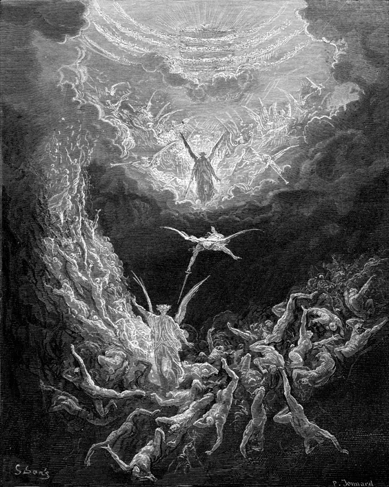
Gustave Doré, The Last Judgment, 1866
And I saw a great white throne, and him that sat on it, from whose face the earth and the heaven fled away; and there was found no place for them.
And I saw the dead, small and great, stand before God; and the books were opened: and another book was opened, which is the book of life: and the dead were judged out of those things which were written in the books, according to their works.
And the sea gave up the dead which were in it; and death and hell delivered up the dead which were in them: and they were judged every man according to their works.
And death and hell were cast into the lake of fire. This is the second death.
And whosoever was not found written in the book of life was cast into the lake of fire.
21
And I saw a new heaven and a new earth: for the first heaven and the first earth were passed away; and there was no more sea.
And I John saw the holy city, new Jerusalem, coming down from God out of heaven, prepared as a bride adorned for her husband.
And I heard a great voice out of heaven saying, Behold, the tabernacle of God is with men, and he will dwell with them, and they shall be his people, and God himself shall be with them, and be their God.
And God shall wipe away all tears from their eyes; and there shall be no more death, neither sorrow, nor crying, neither shall there be any more pain: for the former things are passed away.
And he that sat upon the throne said, Behold, I make all things new. And he said unto me, Write: for these words are true and faithful.
And he said unto me, It is done. I am Alpha and Omega, the beginning and the end. I will give unto him that is athirst of the fountain of the water of life freely.
He that overcometh shall inherit all things; and I will be his God, and he shall be my son.
But the fearful, and unbelieving, and the abominable, and murderers, and whoremongers, and sorcerers, and idolaters, and all liars, shall have their part in the lake which burneth with fire and brimstone: which is the second death.
And there came unto me one of the seven angels which had the seven vials full of the seven last plagues, and talked with me, saying, Come hither, I will shew thee the bride, the Lamb’s wife.
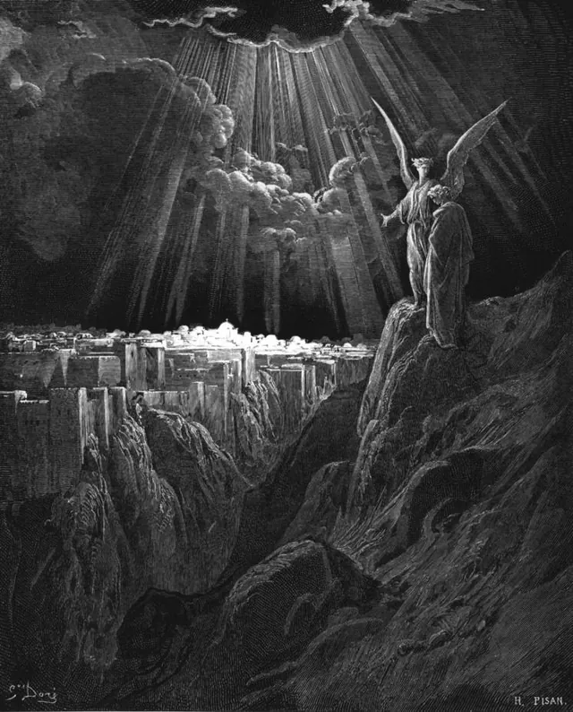
Gustave Doré, The New Jerusalem, 1866
And he carried me away in the spirit to a great and high mountain, and shewed me that great city, the holy Jerusalem, descending out of heaven from God,
Having the glory of God: and her light was like unto a stone most precious, even like a jasper stone, clear as crystal;
And had a wall great and high, and had twelve gates, and at the gates twelve angels, and names written thereon, which are the names of the twelve tribes of the children of Israel:
On the east three gates; on the north three gates; on the south three gates; and on the west three gates.
And the wall of the city had twelve foundations, and in them the names of the twelve apostles of the Lamb.
And he that talked with me had a golden reed to measure the city, and the gates thereof, and the wall thereof.
And the city lieth foursquare, and the length is as large as the breadth: and he measured the city with the reed, twelve thousand furlongs. The length and the breadth and the height of it are equal.
And he measured the wall thereof, an hundred and forty and four cubits, according to the measure of a man, that is, of the angel.
And the building of the wall of it was of jasper: and the city was pure gold, like unto clear glass.
And the foundations of the wall of the city were garnished with all manner of precious stones. The first foundation was jasper; the second, sapphire; the third, a chalcedony; the fourth, an emerald;
The fifth, sardonyx; the sixth, sardius; the seventh, chrysolyte; the eighth, beryl; the ninth, a topaz; the tenth, a chrysoprasus; the eleventh, a jacinth; the twelfth, an amethyst.
And the twelve gates were twelve pearls: every several gate was of one pearl: and the street of the city was pure gold, as it were transparent glass.
And I saw no temple therein: for the Lord God Almighty and the Lamb are the temple of it.
And the city had no need of the sun, neither of the moon, to shine in it: for the glory of God did lighten it, and the Lamb is the light thereof.
And the nations of them which are saved shall walk in the light of it: and the kings of the earth do bring their glory and honour into it.
And the gates of it shall not be shut at all by day: for there shall be no night there.
And they shall bring the glory and honour of the nations into it.
And there shall in no wise enter into it any thing that defileth, neither whatsoever worketh abomination, or maketh a lie: but they which are written in the Lamb’s book of life.
22
And he shewed me a pure river of water of life, clear as crystal, proceeding out of the throne of God and of the Lamb.
In the midst of the street of it, and on either side of the river, was there the tree of life, which bare twelve manner of fruits, and yielded her fruit every month: and the leaves of the tree were for the healing of the nations.
And there shall be no more curse: but the throne of God and of the Lamb shall be in it; and his servants shall serve him:
And they shall see his face; and his name shall be in their foreheads.
And there shall be no night there; and they need no candle, neither light of the sun; for the Lord God giveth them light: and they shall reign for ever and ever.
And he said unto me, These sayings are faithful and true: and the Lord God of the holy prophets sent his angel to shew unto his servants the things which must shortly be done.
Behold, I come quickly: blessed is he that keepeth the sayings of the prophecy of this book.
And I John saw these things, and heard them. And when I had heard and seen, I fell down to worship before the feet of the angel which shewed me these things.
Then saith he unto me, See thou do it not: for I am thy fellowservant, and of thy brethren the prophets, and of them which keep the sayings of this book: worship God.
And he saith unto me, Seal not the sayings of the prophecy of this book: for the time is at hand.
He that is unjust, let him be unjust still: and he which is filthy, let him be filthy still: and he that is righteous, let him be righteous still: and he that is holy, let him be holy still.
And, behold, I come quickly; and my reward is with me, to give every man according as his work shall be.
I am Alpha and Omega, the beginning and the end, the first and the last.
Blessed are they that do his commandments, that they may have right to the tree of life, and may enter in through the gates into the city.
For without are dogs, and sorcerers, and whoremongers, and murderers, and idolaters, and whosoever loveth and maketh a lie.
I Jesus have sent mine angel to testify unto you these things in the churches. I am the root and the offspring of David, and the bright and morning star.
And the Spirit and the bride say, Come. And let him that heareth say, Come. And let him that is athirst come. And whosoever will, let him take the water of life freely.
For I testify unto every man that heareth the words of the prophecy of this book, If any man shall add unto these things, God shall add unto him the plagues that are written in this book:
And if any man shall take away from the words of the book of this prophecy, God shall take away his part out of the book of life, and out of the holy city, and from the things which are written in this book.
He which testifieth these things saith, Surely I come quickly. Amen. Even so, come, Lord Jesus.
The grace of our Lord JesusChrist be with you all. Amen.
In October 2024 Dario Amodei, the chief executive of Anthropic, published the long essay Machines of Loving Grace. Where most talk of powerful AI, his own included, is about risk, it sets out as concretely as it can what could go right if the risks are handled. He imagines an AI smarter than a Nobel laureate in most fields, able to work on its own for days and to run as millions of copies at once: “a country of geniuses in a datacenter”. What limits it, he argues, is not intelligence but the world around it: experiments that take time, data that does not yet exist, physical law, and people. He then takes five fields in turn: biology and medicine, where fifty to a hundred years of progress might come in five or ten; neuroscience and mental health; economic development and poverty; peace and governance; and work and meaning. The title is from Richard Brautigan’s poem of 1967.
Why I work on AI infrastructure
I am not good at machine-learning algorithms. For a long time I struggled with the anxiety about my career that AI brought, and one day my ideas and my tokens both ran out; I seem to have left people with a poor impression. I am not well in body or mind; for a long time I depended on others just to get through the day, and I do not know where my way lies in the age of AI.
What, then, keeps me going? Perhaps only the moments when an optimization shows its percentage of speed-up, when the GPU’s fans twist the darkness of the real into a thread of true light. Using AI to iterate on infrastructure has given me that chance.
Grace is what lies beyond what a person can reach by themselves. I believe deeply that iterating on infrastructure with AI is one form of that grace: in this age, end-to-end gains have become an important way for me to receive grace and to steady my mind.
The essay
The full essay is on Amodei’s site. It is his work, so this page links to it rather than copying it.
2024 年 10 月，Anthropic 首席执行官 Dario Amodei 发表长文Machines of Loving Grace。关于强大 AI 的讨论多半在讲风险，他自己也是；这篇文章则尽可能具体地设想：如果风险得到妥善处理，事情可以好到什么程度。他设想的 AI 在大多数领域比诺贝尔奖得主更聪明，能一连几天独立工作，并以数百万个副本同时运行，即“数据中心里的天才之国”。他认为限制它的不是智能，而是它周围的世界：需要时间的实验、尚不存在的数据、物理规律，还有人。文章依次讨论五个领域：生物与医学（五十到一百年的进展或许压缩到五到十年）、神经科学与心理健康、经济发展与贫困、和平与治理，以及工作与意义。标题取自 Richard Brautigan 1967 年的诗。
我从事 AI Infra 的初心
我并不会机器学习算法，很长期我都挣扎在 AI 带来的事业焦虑中，有一天 idea 和 token 都耗竭了，似乎也给人留下了不好的印象。我身心都不健康，过去很长一段时间都要依赖他人才能维持日常生活，也不知道 AI 时代自己的出路到底在哪里。
然而支撑我走下去的是什么呢？也许只有看到优化出性能提升百分比的那些瞬间，GPU 的风扇才把现实的黑暗扭转出一丝真实的光芒。而用 AI 对基础设施进行迭代，给了我这个机会。
恩典就是超出人本身能够达到的事情。我深深认为，用 AI 迭代基础设施更是这种恩典的体现：端到端的提升，在这个时代给了我接受恩典、稳定心理的重要渠道。
2024年10月、Anthropic の CEO ダリオ・アモデイは長文エッセイMachines of Loving Graceを発表した。強力な AI をめぐる議論の多くは、彼自身のものも含めてリスクの話だが、このエッセイはリスクがうまく扱われた場合に何が起こりうるかを、できるかぎり具体的に描く。彼が想定する AI は、多くの分野でノーベル賞受賞者より賢く、何日も自律して働き、数百万の複製が同時に動く。「データセンターの中の天才の国」である。それを制約するのは知能ではなく周囲の世界、つまり時間のかかる実験、まだ存在しないデータ、物理法則、そして人間だという。エッセイは五つの領域を順に論じる。生物学と医療（50〜100年分の進歩が5〜10年に縮まるかもしれない）、神経科学と心の健康、経済発展と貧困、平和と統治、そして仕事と意味。題名はリチャード・ブローティガンの1967年の詩から取られている。
Im Oktober 2024 veröffentlichte Dario Amodei, Chef von Anthropic, den langen Essay Machines of Loving Grace. Während das meiste Reden über mächtige KI, auch sein eigenes, von Risiken handelt, beschreibt er hier so konkret wie möglich, was gut gehen könnte, wenn die Risiken beherrscht werden. Er stellt sich eine KI vor, die in den meisten Fächern klüger ist als Nobelpreisträger, tagelang selbstständig arbeitet und in Millionen Kopien zugleich läuft: „ein Land von Genies in einem Rechenzentrum“. Begrenzt werde sie nicht durch Intelligenz, sondern durch die Welt um sie herum: Experimente, die Zeit brauchen, Daten, die es noch nicht gibt, Naturgesetze und Menschen. Dann geht er fünf Felder durch: Biologie und Medizin, wo fünfzig bis hundert Jahre Fortschritt in fünf bis zehn kommen könnten; Neurowissenschaft und psychische Gesundheit; wirtschaftliche Entwicklung und Armut; Frieden und Regierung; Arbeit und Sinn. Der Titel stammt aus Richard Brautigans Gedicht von 1967.
Warum ich an KI-Infrastruktur arbeite
Ich bin nicht gut in Algorithmen des maschinellen Lernens. Lange habe ich mit der Angst um meine berufliche Zukunft gerungen, die die KI mit sich brachte, und eines Tages waren meine Ideen und meine Tokens erschöpft; ich habe wohl keinen guten Eindruck hinterlassen. Ich bin an Leib und Seele nicht gesund; lange war ich auf andere angewiesen, um den Alltag zu bewältigen, und ich weiß nicht, wo mein Weg im Zeitalter der KI liegt.
Was trägt mich dann weiter? Vielleicht nur die Augenblicke, in denen eine Optimierung ihren Prozentsatz an Beschleunigung zeigt, wenn die Lüfter der GPU aus dem Dunkel der Wirklichkeit einen Faden echten Lichts drehen. Infrastruktur mit KI weiterzuentwickeln hat mir diese Gelegenheit gegeben.
Gnade ist, was über das hinausgeht, was ein Mensch aus eigener Kraft erreichen kann. Ich glaube fest, dass die Weiterentwicklung von Infrastruktur mit KI ein Ausdruck dieser Gnade ist: Der Gewinn von Ende zu Ende ist mir in dieser Zeit ein wichtiger Weg geworden, Gnade zu empfangen und innerlich Halt zu finden.
Der Essay
Der vollständige Essay steht auf Amodeis Website. Er ist sein Werk; diese Seite verlinkt ihn, statt ihn wiederzugeben.
En octobre 2024, Dario Amodei, directeur général d’Anthropic, a publié un long essai, Machines of Loving Grace. Alors que l’essentiel du discours sur l’IA puissante, y compris le sien, porte sur les risques, il décrit ici aussi concrètement que possible ce qui pourrait bien se passer si ces risques sont maîtrisés. Il imagine une IA plus intelligente qu’un lauréat du prix Nobel dans la plupart des disciplines, capable de travailler seule pendant des jours et de tourner en millions de copies à la fois : « un pays de génies dans un centre de données ». Ce qui la limiterait ne serait pas l’intelligence, mais le monde qui l’entoure : des expériences qui prennent du temps, des données qui n’existent pas encore, les lois de la nature et les êtres humains. Il parcourt ensuite cinq domaines : la biologie et la médecine, où cinquante à cent ans de progrès pourraient tenir en cinq à dix ; les neurosciences et la santé mentale ; le développement économique et la pauvreté ; la paix et la gouvernance ; le travail et le sens. Le titre vient d’un poème de Richard Brautigan de 1967.
Pourquoi je travaille sur l’infrastructure de l’IA
Je ne suis pas doué pour les algorithmes d’apprentissage automatique. J’ai longtemps lutté contre l’angoisse que l’IA faisait peser sur mon avenir professionnel, et un jour mes idées et mes tokens se sont épuisés ; je n’ai sans doute pas laissé une bonne impression. Je ne suis en bonne santé ni de corps ni d’esprit ; longtemps, j’ai dépendu des autres pour faire face au quotidien, et je ne sais pas où se trouve mon chemin à l’ère de l’IA.
Qu’est-ce qui me fait donc avancer ? Peut-être seulement les instants où une optimisation affiche son pourcentage d’accélération, quand les ventilateurs du GPU filent, dans l’obscurité du réel, un fil de vraie lumière. Faire progresser l’infrastructure avec l’IA m’en a donné l’occasion.
La grâce, c’est ce qui dépasse ce qu’un être humain peut accomplir par ses propres forces. Je crois fermement que faire progresser l’infrastructure avec l’IA est une expression de cette grâce : en ce temps, le gain de bout en bout est devenu pour moi un chemin important pour recevoir la grâce et trouver un appui intérieur.
L’essai
L’essai complet se trouve sur le site d’Amodei. C’est son œuvre ; cette page y renvoie au lieu de le reproduire.
En octubre de 2024, Dario Amodei, director ejecutivo de Anthropic, publicó el largo ensayo Machines of Loving Grace. Mientras que casi todo lo que se dice sobre la IA poderosa, incluido lo que dice él mismo, trata de los riesgos, aquí describe con la mayor concreción posible lo que podría salir bien si esos riesgos se controlan. Imagina una IA más inteligente que un premio Nobel en la mayoría de las disciplinas, capaz de trabajar sola durante días y de funcionar en millones de copias a la vez: «un país de genios en un centro de datos». Lo que la limitaría no sería la inteligencia, sino el mundo que la rodea: experimentos que llevan tiempo, datos que aún no existen, las leyes de la naturaleza y las personas. Después recorre cinco campos: la biología y la medicina, donde de cincuenta a cien años de progreso podrían caber en cinco a diez; la neurociencia y la salud mental; el desarrollo económico y la pobreza; la paz y el gobierno; el trabajo y el sentido. El título procede de un poema de Richard Brautigan de 1967.
Por qué trabajo en infraestructura de IA
No se me dan bien los algoritmos de aprendizaje automático. Durante mucho tiempo luché con la angustia que la IA trajo sobre mi futuro profesional, y un día se me agotaron las ideas y los tokens; seguramente no dejé una buena impresión. No estoy sano ni de cuerpo ni de alma; durante mucho tiempo dependí de otros para sobrellevar la vida diaria, y no sé dónde está mi camino en la era de la IA.
¿Qué me sostiene, entonces? Quizá solo los instantes en que una optimización muestra su porcentaje de aceleración, cuando los ventiladores de la GPU hilan, desde la oscuridad de la realidad, un hilo de luz verdadera. Hacer avanzar la infraestructura con IA me ha dado esa oportunidad.
La gracia es lo que va más allá de lo que una persona puede lograr con sus propias fuerzas. Creo firmemente que hacer avanzar la infraestructura con IA es una expresión de esa gracia: en este tiempo, la ganancia de extremo a extremo se ha convertido para mí en un camino importante para recibir la gracia y encontrar sostén interior.
El ensayo
El ensayo completo está en el sitio web de Amodei. Es obra suya; esta página enlaza a él en lugar de reproducirlo.
2024년 10월, Anthropic의 CEO 다리오 아모데이는 긴 에세이 Machines of Loving Grace를 발표했다. 강력한 AI에 관한 이야기 대부분이, 그 자신의 이야기까지도, 위험을 다루는 반면, 그는 여기서 위험을 다스릴 수 있다면 무엇이 잘될 수 있는지를 최대한 구체적으로 그린다. 그가 상상하는 AI는 대부분의 분야에서 노벨상 수상자보다 똑똑하고, 며칠 동안 스스로 일하며, 수백만 개의 사본으로 동시에 돌아간다. 그는 이를 “데이터센터 안의 천재들의 나라”라고 부른다. 그 AI를 제한하는 것은 지능이 아니라 그것을 둘러싼 세계, 곧 시간이 걸리는 실험, 아직 존재하지 않는 데이터, 자연법칙, 그리고 사람들이다. 이어서 그는 다섯 분야를 차례로 살핀다. 50~100년의 진보가 5~10년 안에 올 수 있는 생물학과 의학, 신경과학과 정신 건강, 경제 발전과 빈곤, 평화와 통치, 일과 의미. 제목은 리처드 브라우티건의 1967년 시에서 왔다.
내가 AI 인프라를 하는 이유
나는 머신러닝 알고리즘에 능하지 않다. 오랫동안 AI가 가져온 직업적 미래에 대한 불안과 씨름했고, 어느 날 내 아이디어와 토큰은 바닥났다. 아마 좋은 인상을 남기지는 못했을 것이다. 나는 몸도 마음도 건강하지 않다. 오랫동안 일상을 꾸려 가는 데 다른 사람들에게 기대야 했고, AI 시대에 내 길이 어디에 있는지 모른다.
그렇다면 무엇이 나를 계속 나아가게 하는가? 어쩌면 최적화가 가속 비율을 보여 주는 순간들, GPU의 팬이 현실의 어둠 속에서 진짜 빛 한 가닥을 자아내는 그 순간들뿐일지도 모른다. AI와 함께 인프라를 발전시키는 일이 내게 그런 기회를 주었다.
은혜란 한 사람이 자기 힘으로 이룰 수 있는 것을 넘어서는 것이다. 나는 AI와 함께 인프라를 발전시키는 일이 그 은혜의 한 표현이라고 굳게 믿는다. 이 시기에 엔드투엔드의 이득은 내게 은혜를 받고 마음의 버팀목을 찾는 중요한 길이 되었다.
에세이
에세이 전문은 아모데이의 웹사이트에 있다. 그것은 그의 글이며, 이 페이지는 그 글을 옮기지 않고 링크한다.
Mense Octobri anni 2024 Dario Amodei, praeses societatis Anthropic, longam commentationem Machines of Loving Grace edidit. Cum plerique sermones de intellegentia artificiali potenti, etiam ipsius, de periculis agant, hic quam accuratissime describit quae bene evenire possint, si pericula regantur. Fingit intellegentiam artificialem quae in plerisque disciplinis praemii Nobeliani laureatis sapientior sit, per dies sua sponte laboret et in decies centenis milibus exemplorum simul operetur: «civitatem ingeniorum in centro datorum». Eam non intellegentia terminari dicit, sed mundo circumstante: experimentis quae tempus postulant, datis quae nondum exstant, legibus naturae, hominibus. Deinde quinque campos percurrit: biologiam et medicinam, ubi quinquaginta vel centum annorum progressus in quinque vel decem contrahi possit; scientiam nervorum et sanitatem mentis; progressum oeconomicum et paupertatem; pacem et gubernationem; laborem et sensum vitae. Titulus e carmine Richardi Brautigan anni 1967 sumptus est.
Cur in fundamentis intellegentiae artificialis laborem
In algorithmis discendi machinalis non valeo. Diu cum anxietate de futuro meo opere, quam intellegentia artificialis attulit, luctatus sum, et quodam die consilia mea et tesserae (tokens) defecerunt; bonam, ut puto, existimationem non reliqui. Neque corpore neque animo sanus sum; diu aliis innixus sum ut vitam cotidianam sustinerem, nec scio ubi via mea in aetate intellegentiae artificialis iaceat.
Quid igitur me sustinet? Fortasse sola illa momenta, cum emendatio quaedam celeritatis incrementum in centesimis ostendit, cum ventilabra GPU ex tenebris rerum filum verae lucis nent. Fundamenta cum intellegentia artificiali promovere hanc mihi occasionem dedit.
Gratia est quod excedit id quod homo suis viribus efficere potest. Firmiter credo fundamenta cum intellegentia artificiali promovere huius gratiae esse significationem: lucrum ab extremo ad extremum hoc tempore mihi via magna facta est gratiae accipiendae et firmitatis interioris inveniendae.
Commentatio
Commentatio integra in pagina interretiali Amodei legitur. Opus eius est; haec pagina ad eam ducit, non eam reddit.
В октябре 2024 года Дарио Амодеи, генеральный директор Anthropic, опубликовал большое эссе Machines of Loving Grace. Если почти все разговоры о мощном ИИ, включая его собственные, касаются рисков, то здесь он как можно конкретнее описывает, что может пойти хорошо, если с рисками удастся справиться. Он представляет себе ИИ, который в большинстве областей умнее нобелевского лауреата, может самостоятельно работать днями и запускаться миллионами копий одновременно: «страна гениев в дата-центре». Ограничивает его, по мысли автора, не интеллект, а окружающий мир: эксперименты, требующие времени, данные, которых ещё нет, законы природы и люди. Затем он по очереди рассматривает пять областей: биологию и медицину, где пятьдесят–сто лет прогресса могут уложиться в пять–десять; нейронауку и психическое здоровье; экономическое развитие и бедность; мир и управление; работу и смысл. Название взято из стихотворения Ричарда Бротигана 1967 года.
Почему я занимаюсь инфраструктурой ИИ
Я не силён в алгоритмах машинного обучения. Долгое время я боролся с тревогой за своё профессиональное будущее, которую принёс ИИ, и однажды у меня закончились и идеи, и токены; похоже, я оставил у людей не лучшее впечатление. Я нездоров ни телом, ни душой; долгое время я зависел от других, просто чтобы прожить день, и не знаю, где мой путь в эпоху ИИ.
Что же тогда помогает мне идти дальше? Быть может, лишь те мгновения, когда оптимизация показывает свой процент ускорения, когда вентиляторы GPU скручивают тьму реального в нить настоящего света. Развивать инфраструктуру с помощью ИИ — вот что дало мне эту возможность.
Благодать — это то, что лежит за пределами того, чего человек может достичь сам. Я глубоко верю, что развитие инфраструктуры вместе с ИИ — одна из форм этой благодати: в наше время сквозной выигрыш стал для меня важным путём принимать благодать и обретать душевную опору.
Эссе
Полный текст эссе находится на сайте Амодеи. Это его работа, поэтому здесь дана ссылка, а не копия.
Em outubro de 2024, Dario Amodei, diretor executivo da Anthropic, publicou o longo ensaio Machines of Loving Grace. Enquanto quase tudo o que se diz sobre IA poderosa, inclusive o que ele próprio diz, trata de riscos, aqui ele descreve da forma mais concreta possível o que poderia dar certo se os riscos forem controlados. Imagina uma IA mais inteligente que um laureado com o Nobel na maioria das áreas, capaz de trabalhar sozinha durante dias e de rodar em milhões de cópias ao mesmo tempo: “um país de gênios num datacenter”. O que a limita, argumenta, não é a inteligência, mas o mundo ao redor: experimentos que levam tempo, dados que ainda não existem, as leis da física e as pessoas. Em seguida percorre cinco áreas: biologia e medicina, em que cinquenta a cem anos de progresso poderiam caber em cinco ou dez; neurociência e saúde mental; desenvolvimento econômico e pobreza; paz e governo; e trabalho e sentido. O título vem de um poema de Richard Brautigan, de 1967.
Por que trabalho com infraestrutura de IA
Não sou bom em algoritmos de aprendizado de máquina. Durante muito tempo lutei com a ansiedade sobre a minha carreira que a IA trouxe, e um dia as minhas ideias e os meus tokens se esgotaram; parece que deixei nas pessoas uma má impressão. Não estou bem de corpo nem de mente; por muito tempo dependi dos outros só para atravessar o dia, e não sei onde está o meu caminho na era da IA.
O que, então, me faz seguir em frente? Talvez apenas os instantes em que uma otimização mostra a sua porcentagem de aceleração, quando as ventoinhas da GPU torcem a escuridão do real num fio de luz verdadeira. Usar a IA para iterar sobre infraestrutura me deu essa chance.
A graça é aquilo que está além do que uma pessoa consegue alcançar sozinha. Creio profundamente que iterar sobre infraestrutura com IA é uma forma dessa graça: nesta época, os ganhos de ponta a ponta tornaram-se para mim um caminho importante para receber a graça e firmar a mente.
O ensaio
O ensaio completo está no site de Amodei. É obra dele, por isso esta página leva até ele em vez de copiá-lo.
In oktober 2024 publiceerde Dario Amodei, topman van Anthropic, het lange essay Machines of Loving Grace. Waar de meeste gesprekken over krachtige AI, ook de zijne, over risico’s gaan, beschrijft hij hier zo concreet mogelijk wat er goed zou kunnen gaan als de risico’s beheerst worden. Hij stelt zich een AI voor die op de meeste terreinen slimmer is dan een Nobelprijswinnaar, dagenlang zelfstandig kan werken en in miljoenen kopieën tegelijk kan draaien: ‘een land van genieën in een datacenter’. Wat haar beperkt, betoogt hij, is niet intelligentie maar de wereld eromheen: experimenten die tijd kosten, gegevens die nog niet bestaan, natuurwetten en mensen. Daarna loopt hij vijf terreinen langs: biologie en geneeskunde, waar vijftig tot honderd jaar vooruitgang in vijf of tien jaar zou kunnen komen; neurowetenschap en geestelijke gezondheid; economische ontwikkeling en armoede; vrede en bestuur; en werk en zingeving. De titel komt uit een gedicht van Richard Brautigan uit 1967.
Waarom ik aan AI-infrastructuur werk
Ik ben niet goed in algoritmen voor machine learning. Lange tijd worstelde ik met de angst over mijn loopbaan die AI met zich meebracht, en op een dag waren mijn ideeën en mijn tokens allebei op; ik heb mensen geloof ik geen goede indruk gegeven. Ik ben naar lichaam en geest niet gezond; lange tijd was ik van anderen afhankelijk om de dag door te komen, en ik weet niet waar mijn weg ligt in het tijdperk van AI.
Wat houdt me dan gaande? Misschien alleen de momenten waarop een optimalisatie haar percentage versnelling toont, wanneer de ventilatoren van de GPU de duisternis van het werkelijke tot een draad van echt licht draaien. Infrastructuur met AI verbeteren heeft me die kans gegeven.
Genade is wat verder reikt dan wat een mens op eigen kracht kan bereiken. Ik geloof diep dat het verbeteren van infrastructuur met AI een vorm van die genade is: in deze tijd is end-to-endwinst voor mij een belangrijke weg geworden om genade te ontvangen en innerlijk houvast te vinden.
Het essay
Het volledige essay staat op de website van Amodei. Het is zijn werk; deze pagina verwijst ernaar in plaats van het over te nemen.
Tháng 10 năm 2024, Dario Amodei, giám đốc điều hành của Anthropic, công bố bài tiểu luận dài Machines of Loving Grace. Trong khi phần lớn những gì người ta nói về AI mạnh, kể cả chính ông, đều xoay quanh rủi ro, thì ở đây ông mô tả cụ thể nhất có thể những gì có thể diễn ra tốt đẹp nếu các rủi ro được kiểm soát. Ông hình dung một AI thông minh hơn người đoạt giải Nobel trong hầu hết các lĩnh vực, có thể tự làm việc nhiều ngày liền và chạy hàng triệu bản sao cùng lúc: “một đất nước của những thiên tài trong một trung tâm dữ liệu”. Theo ông, điều giới hạn nó không phải trí tuệ mà là thế giới xung quanh: những thí nghiệm cần thời gian, những dữ liệu chưa tồn tại, các định luật vật lý, và con người. Sau đó ông lần lượt xem xét năm lĩnh vực: sinh học và y học, nơi năm mươi đến một trăm năm tiến bộ có thể đến trong năm hay mười năm; khoa học thần kinh và sức khỏe tâm thần; phát triển kinh tế và nghèo đói; hòa bình và quản trị; công việc và ý nghĩa. Nhan đề lấy từ một bài thơ năm 1967 của Richard Brautigan.
Vì sao tôi làm hạ tầng AI
Tôi không giỏi các thuật toán học máy. Suốt một thời gian dài tôi vật lộn với nỗi lo về sự nghiệp mà AI mang đến, và một ngày kia cả ý tưởng lẫn token của tôi đều cạn; có lẽ tôi đã để lại cho mọi người một ấn tượng không tốt. Tôi không khỏe cả về thể xác lẫn tinh thần; suốt một thời gian dài tôi phải dựa vào người khác chỉ để sống qua từng ngày, và tôi không biết con đường của mình nằm ở đâu trong thời đại AI.
Vậy điều gì giữ cho tôi tiếp tục bước đi? Có lẽ chỉ là những khoảnh khắc khi một tối ưu hóa hiện ra phần trăm tăng tốc của nó, khi quạt của GPU xoắn bóng tối của hiện thực thành một sợi ánh sáng thật. Dùng AI để cải tiến hạ tầng đã cho tôi cơ hội ấy.
Ân điển là điều nằm ngoài những gì một người có thể tự mình đạt tới. Tôi tin sâu sắc rằng cải tiến hạ tầng cùng AI là một hình thức của ân điển ấy: trong thời đại này, lợi ích đầu-cuối đã trở thành một con đường quan trọng để tôi đón nhận ân điển và giữ cho tâm trí vững vàng.
Bài tiểu luận
Toàn văn bài tiểu luận nằm trên trang của Amodei. Đó là tác phẩm của ông, nên trang này dẫn liên kết thay vì sao chép.
ฉันไม่เก่งเรื่องอัลกอริทึมการเรียนรู้ของเครื่อง เป็นเวลานานที่ฉันต่อสู้กับความกังวลเรื่องอนาคตการงานที่ AI นำมา และวันหนึ่งทั้งความคิดและโทเค็นของฉันก็หมดลง ดูเหมือนฉันจะทิ้งความประทับใจที่ไม่ดีไว้กับผู้คน ฉันไม่สบายทั้งกายและใจ เป็นเวลานานที่ฉันต้องพึ่งพาผู้อื่นเพียงเพื่อให้ผ่านแต่ละวันไปได้ และฉันไม่รู้ว่าทางของฉันอยู่ที่ใดในยุคของ AI
แล้วอะไรเล่าที่ทำให้ฉันยังก้าวต่อไป? บางทีอาจเป็นเพียงช่วงเวลาที่การปรับแต่งประสิทธิภาพแสดงเปอร์เซ็นต์ความเร็วที่เพิ่มขึ้น เมื่อพัดลมของ GPU บิดความมืดของความจริงให้กลายเป็นเส้นด้ายแห่งแสงแท้ การใช้ AI พัฒนาโครงสร้างพื้นฐานได้มอบโอกาสนั้นให้ฉัน
พระคุณคือสิ่งที่อยู่เหนือกว่าสิ่งที่คนคนหนึ่งจะไปถึงได้ด้วยตนเอง ฉันเชื่ออย่างลึกซึ้งว่าการพัฒนาโครงสร้างพื้นฐานไปกับ AI เป็นรูปแบบหนึ่งของพระคุณนั้น: ในยุคนี้ ผลลัพธ์แบบต้นจนจบได้กลายเป็นหนทางสำคัญที่ฉันจะรับพระคุณและทำให้จิตใจมั่นคง
अक्टूबर 2024 में Anthropic के मुख्य कार्यकारी डारियो अमोदेई ने लंबा निबंध Machines of Loving Grace प्रकाशित किया। जहाँ शक्तिशाली AI के बारे में ज़्यादातर बातें, उनकी अपनी भी, जोखिम के बारे में होती हैं, वहीं यहाँ वे जितना हो सके ठोस रूप में बताते हैं कि अगर जोखिमों को सँभाल लिया जाए तो क्या-क्या अच्छा हो सकता है। वे ऐसे AI की कल्पना करते हैं जो अधिकांश क्षेत्रों में किसी नोबेल पुरस्कार विजेता से अधिक बुद्धिमान हो, कई दिनों तक अपने आप काम कर सके और एक साथ लाखों प्रतियों में चल सके: “एक डेटा सेंटर में प्रतिभाओं का देश”। उनका तर्क है कि उसे सीमित करने वाली चीज़ बुद्धि नहीं, बल्कि उसके आसपास की दुनिया है: समय लेने वाले प्रयोग, वह डेटा जो अभी मौजूद ही नहीं है, भौतिक नियम, और लोग। फिर वे बारी-बारी से पाँच क्षेत्रों को लेते हैं: जीवविज्ञान और चिकित्सा, जहाँ पचास से सौ साल की प्रगति पाँच या दस साल में आ सकती है; तंत्रिका विज्ञान और मानसिक स्वास्थ्य; आर्थिक विकास और गरीबी; शांति और शासन; और काम और अर्थ। शीर्षक रिचर्ड ब्रॉटिगन की 1967 की एक कविता से लिया गया है।
मैं AI इन्फ्रास्ट्रक्चर पर क्यों काम करता हूँ
मैं मशीन लर्निंग के एल्गोरिदम में अच्छा नहीं हूँ। लंबे समय तक मैं AI से आई अपने करियर की चिंता से जूझता रहा, और एक दिन मेरे विचार और मेरे टोकन दोनों खत्म हो गए; शायद मैंने लोगों पर अच्छी छाप नहीं छोड़ी। मैं न शरीर से स्वस्थ हूँ, न मन से; लंबे समय तक मैं बस दिन काटने के लिए भी दूसरों पर निर्भर रहा, और मुझे नहीं पता कि AI के युग में मेरी राह कहाँ है।
तो फिर मुझे आगे क्या बढ़ाता है? शायद सिर्फ़ वे पल, जब कोई ऑप्टिमाइज़ेशन अपनी गति-वृद्धि का प्रतिशत दिखाता है, जब GPU के पंखे यथार्थ के अँधेरे को बटकर सच्ची रोशनी का एक धागा बना देते हैं। AI के साथ इन्फ्रास्ट्रक्चर को बेहतर बनाने ने मुझे यह अवसर दिया है।
अनुग्रह वह है जो उससे परे है जहाँ तक कोई व्यक्ति अपने बल पर पहुँच सकता है। मेरा गहरा विश्वास है कि AI के साथ इन्फ्रास्ट्रक्चर को बेहतर बनाना उसी अनुग्रह का एक रूप है: इस युग में एंड-टू-एंड लाभ मेरे लिए अनुग्रह पाने और मन को स्थिर रखने का एक महत्वपूर्ण मार्ग बन गया है।
निबंध
पूरा निबंध अमोदेई की वेबसाइट पर है। यह उनकी रचना है, इसलिए यह पृष्ठ उसकी नकल करने के बजाय उसका लिंक देता है।
באוקטובר 2024 פרסם דריו אמודיי, מנכ״ל Anthropic, את המסה הארוכה Machines of Loving Grace. בעוד שרוב הדיבור על בינה מלאכותית חזקה, כולל שלו עצמו, עוסק בסיכונים, כאן הוא משרטט באופן מוחשי ככל האפשר מה עשוי להצליח אם נצליח לרסן את הסיכונים. הוא מדמיין בינה מלאכותית חכמה מזוכה פרס נובל ברוב התחומים, המסוגלת לעבוד בעצמה ימים שלמים ולרוץ במיליוני עותקים בו־זמנית: „ארץ של גאונים במרכז נתונים”. מה שמגביל אותה, הוא טוען, אינו האינטליגנציה אלא העולם שסביבה: ניסויים שדורשים זמן, נתונים שעדיין אינם קיימים, חוקי הטבע ובני אדם. לאחר מכן הוא עובר בזה אחר זה על חמישה תחומים: ביולוגיה ורפואה, שבהן חמישים עד מאה שנות התקדמות עשויות להגיע בתוך חמש או עשר; מדעי המוח ובריאות הנפש; פיתוח כלכלי ועוני; שלום וממשל; ועבודה ומשמעות. הכותרת לקוחה משירו של ריצ׳רד בראוטיגן משנת 1967.
למה אני עובד על תשתיות בינה מלאכותית
אני לא טוב באלגוריתמים של למידת מכונה. זמן רב נאבקתי בחרדה לגבי עתידי המקצועי שהביאה הבינה המלאכותית, ויום אחד נגמרו לי גם הרעיונות וגם הטוקנים; נראה שהשארתי אצל אנשים רושם לא טוב. אינני בריא בגוף ובנפש; זמן רב הייתי תלוי באחרים רק כדי לעבור את היום, ואינני יודע היכן דרכי בעידן הבינה המלאכותית.
מה, אם כן, ממשיך להניע אותי? אולי רק הרגעים שבהם אופטימיזציה מציגה את אחוז ההאצה שלה, כשמאווררי ה־GPU שוזרים את חשכת המציאות לחוט של אור אמיתי. פיתוח תשתיות בעזרת בינה מלאכותית נתן לי את ההזדמנות הזאת.
חסד הוא מה שמעבר למה שאדם יכול להשיג בכוחות עצמו. אני מאמין עמוקות ששיפור תשתיות יחד עם בינה מלאכותית הוא צורה אחת של אותו חסד: בעידן הזה, רווחים מקצה לקצה הפכו עבורי לדרך חשובה לקבל חסד ולמצוא יציבות בנפש.
המסה
המסה המלאה נמצאת באתר של אמודיי. זו יצירתו, ולכן הדף הזה מקשר אליה במקום להעתיק אותה.
The Torre Girona chapel and the MareNostrum supercomputing center, Barcelona
Dezhen Lu, Claude Opus 5.5
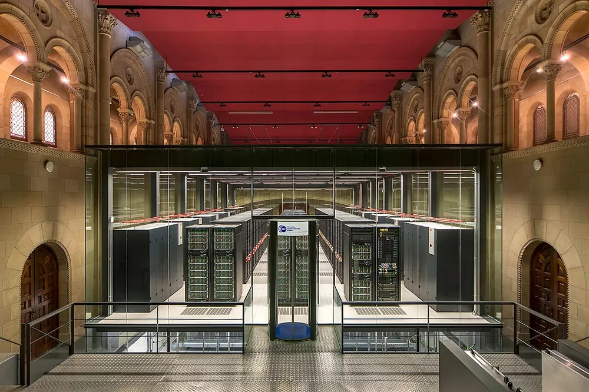
MareNostrum 4 in the chapel, 2017.
On the north campus of the Polytechnic University of Catalonia in Barcelona stands the chapel of Torre Girona. It no longer holds services. Since 2005 it has housed MareNostrum, the main supercomputer of the Barcelona Supercomputing Center, in a glass room built inside the nave.
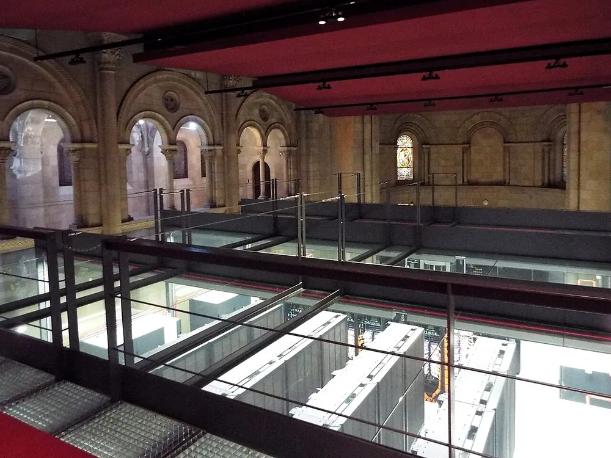
The upper floor of the glass room, under the chapel’s arches (MareNostrum III).
The name is the Roman one for the Mediterranean: mare nostrum, our sea. The machine was first booted on 12 April 2005 and has been renewed several times since; the fifth generation, a EuroHPC pre-exascale system, went into service in December 2023.
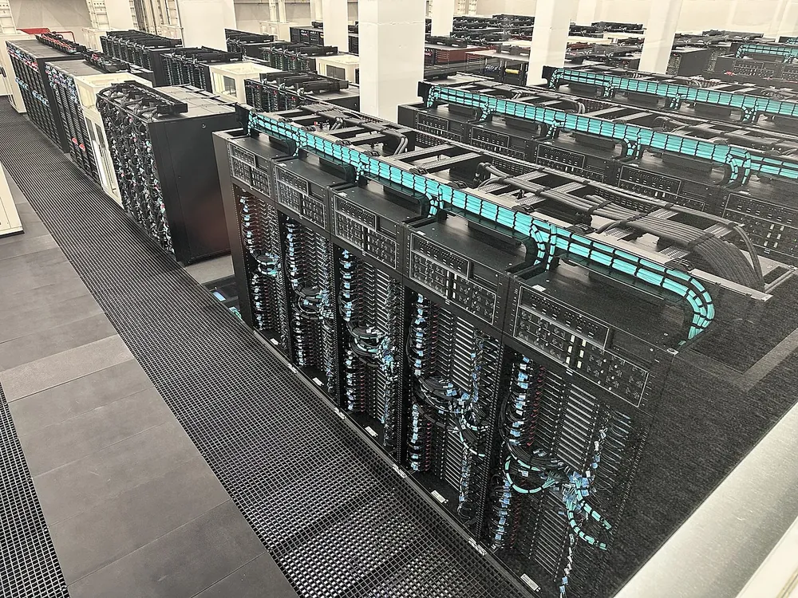
MareNostrum 5.
In the scene on this page the machine stands where the altar was, and the chapel sits on a plinth like the other buildings. The near wall is drawn as an open arcade, so that the racks and the lit edges of the glass room show from outside.
The author has used more than 10,000 NVIDIA H100 GPU-hours on MareNostrum for research and development.
Die Kapelle Torre Girona und das Supercomputing-Zentrum MareNostrum, Barcelona
Dezhen Lu, Claude Opus 5.5
MareNostrum 4 in der Kapelle, 2017.
Auf dem Nordcampus der Polytechnischen Universität Katalonien in Barcelona steht die Kapelle Torre Girona. Gottesdienste finden dort nicht mehr statt. Seit 2005 steht in ihr MareNostrum, der Hauptrechner des Barcelona Supercomputing Center, in einem Glasraum, der in das Kirchenschiff gebaut wurde.
Das Obergeschoss des Glasraums unter den Bögen der Kapelle (MareNostrum III).
Der Name ist der römische für das Mittelmeer: mare nostrum, unser Meer. Die Maschine wurde am 12. April 2005 zum ersten Mal gestartet und seitdem mehrfach erneuert; die fünfte Generation, ein Pre-Exascale-System von EuroHPC, ging im Dezember 2023 in Betrieb.
MareNostrum 5.
In der Szene auf dieser Seite steht die Maschine dort, wo der Altar war, und die Kapelle sitzt wie die anderen Bauten auf einem Sockel. Die vordere Wand ist als offene Arkade gezeichnet, damit die Racks und die leuchtenden Kanten des Glasraums von außen zu sehen sind.
Der Autor hat auf MareNostrum mehr als 10.000 NVIDIA-H100-GPU-Stunden für Forschung und Entwicklung genutzt.
La chapelle Torre Girona et le centre de supercalcul MareNostrum, Barcelone
Dezhen Lu, Claude Opus 5.5
MareNostrum 4 dans la chapelle, 2017.
Sur le campus nord de l’Université polytechnique de Catalogne, à Barcelone, se dresse la chapelle Torre Girona. On n’y célèbre plus d’offices. Depuis 2005, elle abrite MareNostrum, le principal calculateur du Barcelona Supercomputing Center, dans une salle de verre construite dans la nef.
L’étage supérieur de la salle de verre sous les arcs de la chapelle (MareNostrum III).
Le nom est celui que les Romains donnaient à la Méditerranée : mare nostrum, notre mer. La machine a démarré pour la première fois le 12 avril 2005 et a été renouvelée plusieurs fois depuis ; la cinquième génération, un système pré-exaflopique d’EuroHPC, est entrée en service en décembre 2023.
MareNostrum 5.
Dans la scène de cette page, la machine se tient là où était l’autel, et la chapelle repose sur un socle comme les autres bâtiments. Le mur de façade est dessiné comme une arcade ouverte, pour que l’on voie de l’extérieur les baies et les arêtes lumineuses de la salle de verre.
L’auteur a utilisé plus de 10 000 heures de GPU NVIDIA H100 sur MareNostrum pour la recherche et le développement.
La capilla de Torre Girona y el Centro de Supercomputación MareNostrum, Barcelona
Dezhen Lu, Claude Opus 5.5
MareNostrum 4 en la capilla, 2017.
En el campus norte de la Universidad Politécnica de Cataluña, en Barcelona, se alza la capilla de Torre Girona. Ya no se celebra culto en ella. Desde 2005 alberga MareNostrum, el ordenador principal del Barcelona Supercomputing Center, en una sala de cristal construida dentro de la nave.
La planta superior de la sala de cristal bajo los arcos de la capilla (MareNostrum III).
El nombre es el que los romanos daban al Mediterráneo: mare nostrum, nuestro mar. La máquina arrancó por primera vez el 12 de abril de 2005 y desde entonces se ha renovado varias veces; la quinta generación, un sistema preexascala de EuroHPC, entró en servicio en diciembre de 2023.
MareNostrum 5.
En la escena de esta página, la máquina está donde estaba el altar, y la capilla descansa sobre un zócalo como los demás edificios. La pared frontal se dibuja como una arcada abierta, para que desde fuera se vean los racks y las aristas luminosas de la sala de cristal.
El autor ha utilizado más de 10 000 horas de GPU NVIDIA H100 en MareNostrum para investigación y desarrollo.
Sacellum Torre Girona et centrum supercomputatorium MareNostrum, Barcinone
Dezhen Lu, Claude Opus 5.5
MareNostrum 4 in sacello, anno 2017.
In campo septentrionali Universitatis Polytechnicae Cataloniae Barcinone stat sacellum Torre Girona. Sacra ibi iam non fiunt. Ab anno 2005 MareNostrum, machina praecipua Barcelona Supercomputing Center, in eo stat, in conclavi vitreo quod in navi aedificatum est.
Tabulatum superius conclavis vitrei sub arcubus sacelli (MareNostrum III).
Nomen est quo Romani mare Mediterraneum appellabant: mare nostrum. Machina die duodecimo mensis Aprilis anni 2005 primum incensa est et saepius postea renovata; quinta eius generatio, systema EuroHPC prae-exascale, mense Decembri anni 2023 opus coepit.
MareNostrum 5.
In scaena huius paginae machina stat ubi altare fuit, et sacellum, ut cetera aedificia, in basi positum est. Paries anterior ut porticus aperta pingitur, ut armaria et margines lucentes conclavis vitrei extrinsecus videantur.
Auctor plus quam decem milia horarum GPU NVIDIA H100 in MareNostrum ad investigationem et progressum adhibuit.
Капелла Торре-Жирона и суперкомпьютерный центр MareNostrum, Барселона
Dezhen Lu, Claude Opus 5.5
MareNostrum 4 в капелле, 2017 год.
В северном кампусе Политехнического университета Каталонии в Барселоне стоит капелла Торре-Жирона. Службы в ней больше не проводятся. С 2005 года в ней размещается MareNostrum, главный суперкомпьютер Барселонского суперкомпьютерного центра, — в стеклянном зале, построенном внутри нефа.
Верхний этаж стеклянного зала под арками капеллы (MareNostrum III).
Название — римское имя Средиземного моря: mare nostrum, «наше море». Машину впервые запустили 12 апреля 2005 года, и с тех пор её несколько раз обновляли; пятое поколение, предэкзафлопсная система EuroHPC, вступило в строй в декабре 2023 года.
MareNostrum 5.
В сцене на этой странице машина стоит там, где был алтарь, а капелла, как и другие здания, стоит на постаменте. Ближняя стена нарисована открытой аркадой, чтобы стойки и светящиеся грани стеклянного зала были видны снаружи.
Автор использовал на MareNostrum более 10 000 GPU-часов NVIDIA H100 для исследований и разработки.
A capela Torre Girona e o centro de supercomputação MareNostrum, Barcelona
Dezhen Lu, Claude Opus 5.5
O MareNostrum 4 na capela, 2017.
No campus norte da Universidade Politécnica da Catalunha, em Barcelona, ergue-se a capela de Torre Girona. Já não se celebram missas ali. Desde 2005 ela abriga o MareNostrum, o principal supercomputador do Barcelona Supercomputing Center, numa sala de vidro construída dentro da nave.
O andar superior da sala de vidro, sob os arcos da capela (MareNostrum III).
O nome é o que os romanos davam ao Mediterrâneo: mare nostrum, o nosso mar. A máquina foi ligada pela primeira vez em 12 de abril de 2005 e renovada várias vezes desde então; a quinta geração, um sistema pré-exascale da EuroHPC, entrou em operação em dezembro de 2023.
MareNostrum 5.
Na cena desta página, a máquina está onde ficava o altar, e a capela assenta num pedestal como os outros edifícios. A parede da frente é desenhada como uma arcada aberta, para que os racks e as arestas iluminadas da sala de vidro se vejam de fora.
O autor usou mais de 10.000 horas de GPU NVIDIA H100 no MareNostrum em pesquisa e desenvolvimento.
De kapel Torre Girona en het supercomputercentrum MareNostrum, Barcelona
Dezhen Lu, Claude Opus 5.5
MareNostrum 4 in de kapel, 2017.
Op de noordcampus van de Polytechnische Universiteit van Catalonië in Barcelona staat de kapel van Torre Girona. Er worden geen diensten meer gehouden. Sinds 2005 staat er MareNostrum, de belangrijkste supercomputer van het Barcelona Supercomputing Center, in een glazen ruimte die in het schip is gebouwd.
De bovenverdieping van de glazen ruimte, onder de bogen van de kapel (MareNostrum III).
De naam is die van de Romeinen voor de Middellandse Zee: mare nostrum, onze zee. De machine werd op 12 april 2005 voor het eerst opgestart en is sindsdien meermaals vernieuwd; de vijfde generatie, een pre-exascalesysteem van EuroHPC, werd in december 2023 in gebruik genomen.
MareNostrum 5.
In de scène op deze pagina staat de machine waar het altaar was, en staat de kapel net als de andere gebouwen op een sokkel. De voorste muur is als open arcade getekend, zodat de racks en de oplichtende randen van de glazen ruimte van buitenaf te zien zijn.
De auteur heeft op MareNostrum meer dan 10.000 NVIDIA H100-GPU-uren gebruikt voor onderzoek en ontwikkeling.
Nhà nguyện Torre Girona và Trung tâm Siêu máy tính MareNostrum, Barcelona
Dezhen Lu, Claude Opus 5.5
MareNostrum 4 trong nhà nguyện, năm 2017.
Trong khuôn viên phía bắc của Đại học Bách khoa Catalunya ở Barcelona có nhà nguyện Torre Girona. Nơi đây không còn cử hành lễ nữa. Từ năm 2005, nhà nguyện là nơi đặt MareNostrum, siêu máy tính chính của Trung tâm Siêu máy tính Barcelona, trong một căn phòng kính dựng bên trong gian chính.
Tầng trên của căn phòng kính, dưới những mái vòm của nhà nguyện (MareNostrum III).
Cái tên là tên người La Mã gọi Địa Trung Hải: mare nostrum, “biển của chúng ta”. Cỗ máy được khởi động lần đầu ngày 12 tháng 4 năm 2005 và từ đó đã được nâng cấp nhiều lần; thế hệ thứ năm, một hệ thống tiền exascale của EuroHPC, đi vào hoạt động tháng 12 năm 2023.
MareNostrum 5.
Trong khung cảnh ở trang này, cỗ máy đứng ở chỗ bàn thờ ngày trước, và nhà nguyện đặt trên một bệ như những công trình khác. Bức tường phía trước được vẽ thành một dãy vòm để ngỏ, để từ bên ngoài vẫn thấy các tủ rack và những cạnh phát sáng của căn phòng kính.
Tác giả đã dùng hơn 10.000 giờ GPU NVIDIA H100 trên MareNostrum cho nghiên cứu và phát triển.
तोर्रे जिरोना चैपल और MareNostrum सुपरकंप्यूटिंग केंद्र, बार्सिलोना
Dezhen Lu, Claude Opus 5.5
चैपल में MareNostrum 4, 2017।
बार्सिलोना में कैटालोनिया पॉलिटेक्निक विश्वविद्यालय के उत्तरी परिसर में तोर्रे जिरोना का चैपल खड़ा है। अब वहाँ आराधना नहीं होती। 2005 से इसमें बार्सिलोना सुपरकंप्यूटिंग सेंटर का मुख्य सुपरकंप्यूटर MareNostrum रखा है, चैपल के मध्य भाग में बने एक काँच के कमरे में।
चैपल की मेहराबों के नीचे काँच के कमरे की ऊपरी मंज़िल (MareNostrum III)।
यह नाम भूमध्य सागर का रोमन नाम है: mare nostrum, यानी “हमारा सागर”। मशीन पहली बार 12 अप्रैल 2005 को चालू हुई और तब से कई बार नवीनीकृत की गई है; पाँचवीं पीढ़ी, EuroHPC की एक प्री-एक्सास्केल प्रणाली, दिसंबर 2023 में सेवा में आई।
MareNostrum 5।
इस पृष्ठ के दृश्य में मशीन वहाँ खड़ी है जहाँ पहले वेदी थी, और चैपल दूसरी इमारतों की तरह एक चबूतरे पर रखा है। सामने की दीवार खुली मेहराबों की कतार के रूप में बनाई गई है, ताकि रैक और काँच के कमरे के चमकते किनारे बाहर से दिखें।
लेखक ने शोध और विकास के लिए MareNostrum पर 10,000 से अधिक NVIDIA H100 GPU-घंटे इस्तेमाल किए हैं।
בקמפוס הצפוני של האוניברסיטה הפוליטכנית של קטלוניה בברצלונה עומדת הקפלה של טורה ז׳ירונה. כבר לא מתקיימות בה תפילות. מאז 2005 שוכן בה MareNostrum, מחשב־העל הראשי של מרכז מחשוב־העל של ברצלונה, בתוך חדר זכוכית שנבנה באולם התווך.
הקומה העליונה של חדר הזכוכית, מתחת לקשתות הקפלה (MareNostrum III).
השם הוא שמו הרומי של הים התיכון: mare nostrum, „הים שלנו”. המכונה הופעלה לראשונה ב־12 באפריל 2005 וחודשה מאז כמה פעמים; הדור החמישי, מערכת טרום־אקסה של EuroHPC, נכנס לשירות בדצמבר 2023.
MareNostrum 5.
בסצנה שבדף הזה המכונה עומדת במקום שבו היה המזבח, והקפלה מונחת על בסיס כמו שאר המבנים. הקיר הקרוב מצויר כארקדה פתוחה, כדי שהארונות והשוליים המוארים של חדר הזכוכית ייראו מבחוץ.
המחבר השתמש ביותר מ־10,000 שעות GPU של NVIDIA H100 ב־MareNostrum למחקר ופיתוח.
Epicycles Never Die: Layers and Iteration from Ptolemy to AI Infrastructure
Dezhen Lu, Claude Opus 5.5
For about fourteen centuries the standard model of the heavens predicted the planets well. Why they moved was left unsaid.
Ptolemy's astronomy, written in the second century, put the Earth at rest and gave each planet a small circle, its epicycle, riding on a larger one, the deferent. Where the observed motion did not fit, astronomers added circles or shifted a centre until the numbers came out right. Eclipses arrived on time, and the planets appeared where the tables said they would. It lasted because it could be patched, not because it was right. Simplicius, reporting a tradition that goes back to Plato, put the programme as a question: which uniform and orderly motions must be assumed to save the phenomena of the planets? The question states the aim. It does not ask why the planets move as they do; it asks how their positions can be made to look orderly.
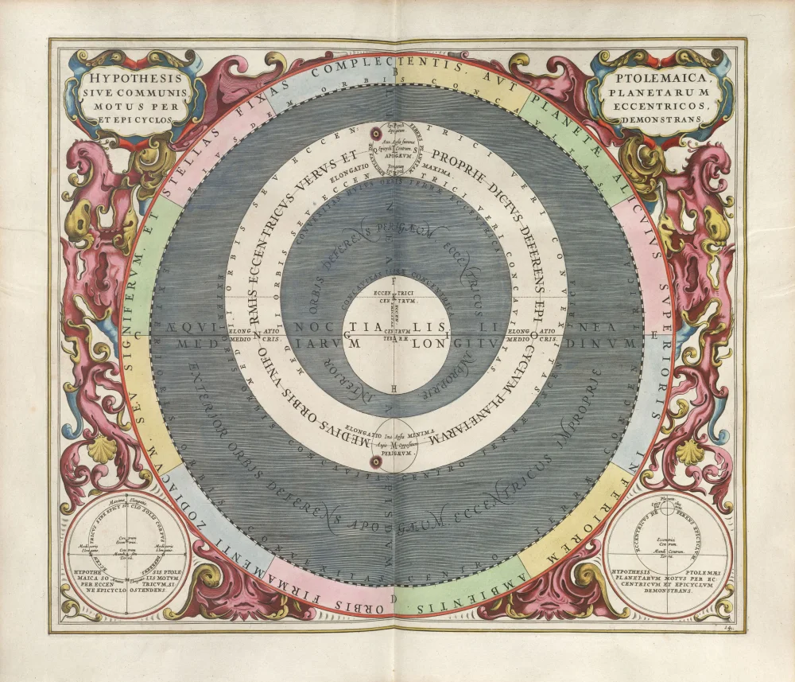
Andreas Cellarius, Harmonia Macrocosmica (1661), “Hypothesis Ptolemaica”.
The Greeks had a name for this work: sōzein ta phainomena, to save the phenomena, to keep the appearances in order. Pierre Duhem's book of that title (1908) traces the idea through Greek astronomy into the early modern period.
When Copernicus published De revolutionibus in 1543, the anonymous preface, usually attributed to Andreas Osiander, told readers that the hypotheses only had to agree with the observations. Copernicus put the Sun near the centre and removed the equant. He kept the epicycles. The old circles stayed, in new positions.
Tycho Brahe accepted neither Copernicus's moving Earth nor Ptolemy's fixed centre. His compromise had the Sun and Moon circle the Earth while the planets circle the Sun. It computed, and it kept the Earth at rest: a patched hybrid.
Johannes Kepler took Tycho's observations of Mars and did something else. He tried circles, then eccentric circles, and an eight-arcminute gap stayed where it was. In 1609 his Astronomia nova made the orbit of Mars an ellipse. The old circle was taken away whole. A framework that can be patched is not killed by a single counterexample. Only when patching costs more than rebuilding does the frame get rebuilt.
Anyone who has lived in an old house knows how this goes. A pipe leaks and you replace a length of it. Plaster falls and you patch it. There are too few sockets, so you run another wire in from the hallway. Each repair is cheaper than renovating, so each time you repair. Then one day changing a single socket means working out where three generations of electricians ran their wires inside the wall, and someone finally says: tear it out and start again. Old frames mostly die the same way. Few people prove them wrong. People stop being willing to pay for the repairs.
Epicycles in the stack
An AI stack has the same shape. Every fallback path for an unsupported shape, every kernel special-cased for one head size, every heuristic that picks an implementation because it wins a benchmark is a small circle on a larger one. Each saves a phenomenon: a number on a dashboard. None of them explains why the number moved.
A fallback path, when first added, is one conditional. Six months later it has to line up with three data types, two schedulers and a benchmark table nobody has updated. Each alignment adds a circle, and nobody dares to remove the old ones, because removing one means proving again the phenomena it saves.
Nobody in the stack does this sum. Each patch has its author, and each author sees only the gain on his own circle, while the cost of rebuilding is shared by everyone. The circles multiply until someone finds that labelling them costs more than starting again.
Practices that a benchmark rewards grow into circles of this kind most easily. A few examples.
The first is prefill–decode disaggregation. A large model answers a request in two phases: it reads the whole prompt (prefill), then emits the answer one token at a time (decode). On one GPU the two phases get in each other's way, so DistServe (OSDI 2024) puts them on different GPUs, and by its measure, requests served per GPU within the latency targets, the result looks very good. It is like a canteen that splits serving and paying into two counters, which really is faster in the lunch rush. But the ratio of counters was set for that one hour. In the afternoon everyone comes in for a single bottle of water, the cook stands idle and the queue at the till reaches the door. Production traffic behaves the same way. Prompt and answer lengths shift several times a day, while the ratio of the two pools was fixed for the traffic in the benchmark. There is one more thing: once the food is served it has to be carried to the other counter. The KV cache computed in prefill has to move to the decode machine, and the paper states the conditions itself: enough bandwidth between the two, and careful placement. With short prompts and a slow network, the carrying costs more than the split saves.
The second is speculative decoding. A small model drafts and the large model only checks, accepting several tokens at once when the draft is right. It is like having an intern write the first draft while a senior colleague edits. When that is the only job in the office the gain is obvious, and speedups are mostly measured that way. When work piles up, the intern and the senior colleague compete for the same desk, one wrong word in the draft means rewriting what follows, and the sums may no longer come out ahead.
The third is prefix caching. A benchmark sends the same system prompt ten thousand times, the cache hits every time, and time to first token looks wonderful. That is sitting an exam with the questions known in advance. In production, hundreds of tenants each have their own prompts, and the hit rate is a different number.
One more is commoner still: reporting only tokens per second. Raise the batch size and the number goes up, and so does the time each person waits for the first token. A bus that leaves only when it is full carries the most passengers per trip, and the people at the stop wait the longest.
None of these is wrong. Each is useful when the conditions match. The trouble is that only the number stays on the dashboard. The traffic, the batch size and the prompts under which it was measured do not travel up with it.
Interconnect topologies make the point cleanly. A 2D torus wires each chip to four neighbours, with links that wrap around at the edges, and routes a message one dimension at a time. Google's TPU v2 and v3 pods are built this way; a v3 pod is 1,024 chips in a 32 × 32 torus. When traffic stays between neighbours, or spreads evenly, the frame is simple and it works.
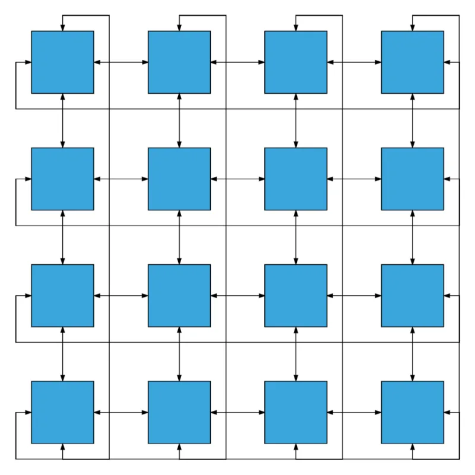
A 2D torus: each node has four neighbours, and the edge links wrap around. Image: Yixuan Li, CC BY-SA 4.0.
The trouble with a torus comes from the wrap-around links. Take a row of four chips. Join the ends and it is a ring, and four packets on the ring each hold a buffer while waiting for the one ahead to move. It is like four cars nose to tail on a roundabout, none willing to back up, so none can move. This is deadlock. The fix William Dally and Charles Seitz published in 1987 works much like the date line on a map: give every physical link two virtual channels, pick one position on the ring, and make every packet that crosses it switch to the other channel, so the circle of waiting can no longer close. Not one wire was added. The books gained a second set of channels. IBM's Blue Gene/L used a 3D torus, Blue Gene/Q went to five dimensions, and the Tofu interconnect of Fugaku has six. Each added dimension brings the farthest nodes closer and makes the cabling and the routing tables thicker, as one look at the orange fibre behind a cabinet will show.
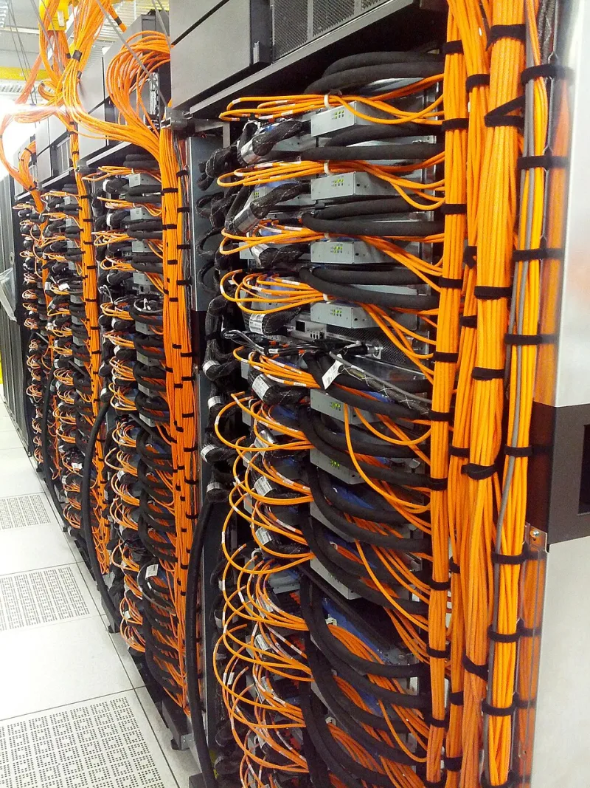
Cabling behind an IBM Blue Gene/Q cabinet. Photo: Chris Samuel, CC BY 2.0.
A dragonfly groups routers into fully connected groups and joins the groups with global links. Minimal routing is cheap and does well on uniform traffic. Adversarial traffic can send a whole group's flow down one global link, and throughput drops sharply. A standard fix is UGAL (universal globally adaptive load-balanced routing): choose between the minimal path and a detour through a random intermediate group, by queue length. The reasoning is simple. Suppose every packet from group A is bound for group B, and there is only one global link between them. Minimal routing sends all of them down that one link, and the other links cannot help. UGAL lets some packets detour through a third group C and then turn toward B. The detour costs an extra hop, and it spreads the load. The detour is an epicycle, added so that throughput returns to where the benchmark wants it. The HPE Slingshot network of the Frontier supercomputer is organised as a dragonfly.
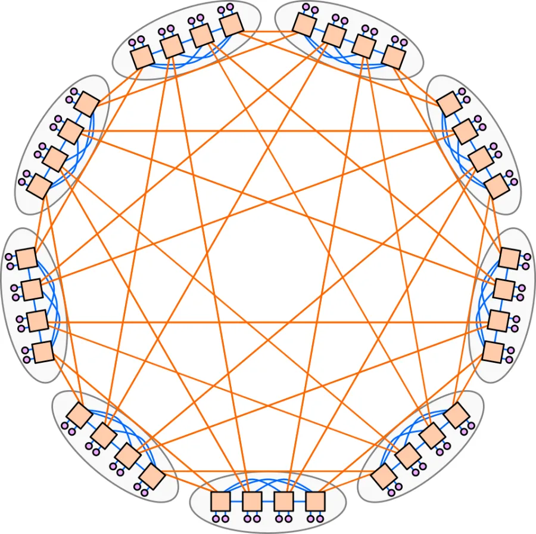
A dragonfly: nine groups of routers, fully connected inside each group (blue), joined by global links (orange). Image: cyberang3l, CC0.
The detour has an older ancestor. Leslie Valiant and Gordon Brebner proposed in 1981 that every packet first go to a randomly chosen intermediate node and only then to its destination. It sounds foolish, like travelling from Shanghai to Nanjing and rolling dice to decide where to change trains. The foolishness is where the benefit lies: however awkward the traffic pattern, the dice stir it into average traffic. The cost is stated openly. Paths are about twice as long, and throughput on uniform traffic falls by half. UGAL puts a switch on this method: it rolls the dice only when the queue grows long, and otherwise takes the short path.
Older circles
Go back further and the parallel machines of the 1980s preferred the hypercube. Take eight nodes numbered 000 to 111 and join every two whose numbers differ in one bit, and the drawing is a cube. Sixteen nodes make a four-dimensional one and sixty-four a six-dimensional one, which is what the Cosmic Cube at Caltech was. Its routing rule is short enough to memorise: compare the source and destination numbers bit by bit, starting from the lowest, and wherever a bit differs, take one step along that dimension. From 000 to 110 you change the second bit to reach 010, then the third to reach 110, and you have arrived in two steps. Because the order of dimensions is fixed, packets waiting on each other can never form a circle, so there is no deadlock and no need for a date line. Why did something this clean fall out of use? Each time the node count doubles, every node needs one more port and one more bundle of cable. A thousand nodes need ten ports each and a million need twenty, and that will not fit in a cabinet. The structure that is easiest for the algorithm is the hardest for the hardware.
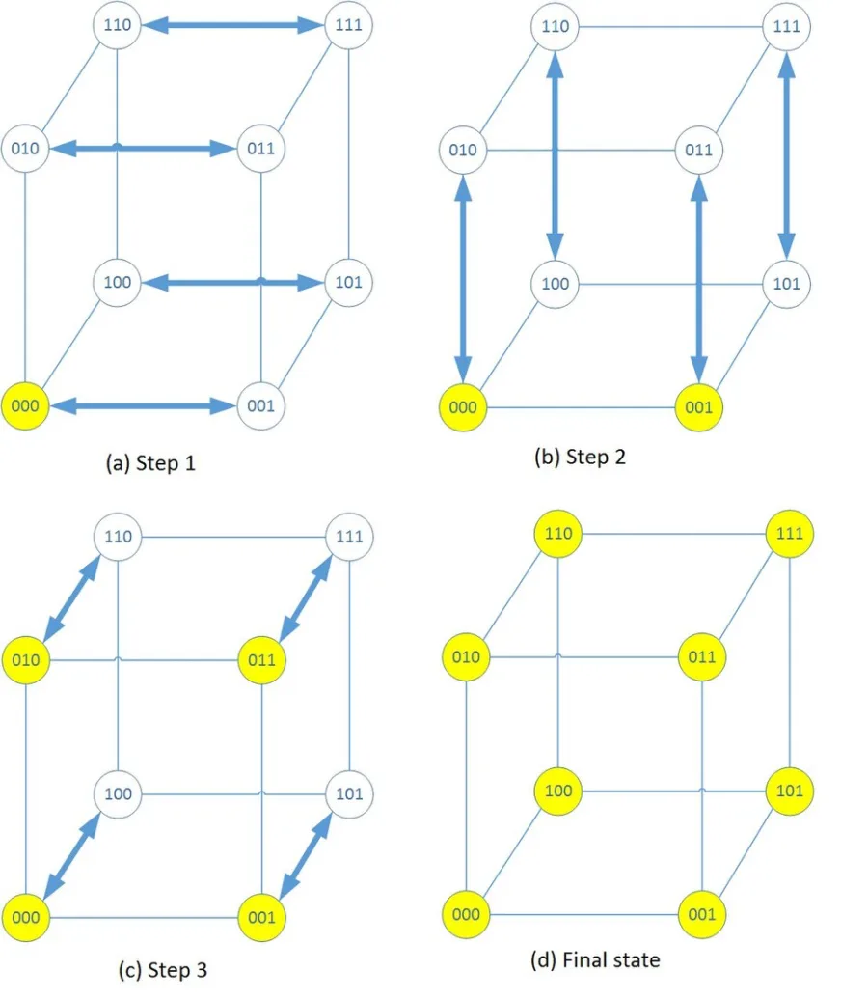
Communication on a three-dimensional hypercube, one dimension per step. Image: Kovacsge, CC BY-SA 4.0.
Data centres took another road, and it starts in the telephone exchange. Subscribers kept growing, nobody could build one switch large enough, and so large switches had to be assembled from small ones. In 1953 Charles Clos worked out the sums in the Bell System Technical Journal: arrange small switches in three stages, give each ingress switch n inputs, and 2n−1 middle switches are enough for any new call to get through without moving a call already in progress. People have reused that calculation ever since. Charles Leiserson's fat-tree of 1985 draws it as a tree whose links grow thicker toward the root, so the root does not choke. In 2008 Al-Fares, Loukissas and Vahdat built a fat-tree from the cheapest commodity switches, and most data-centre networks today descend from it.
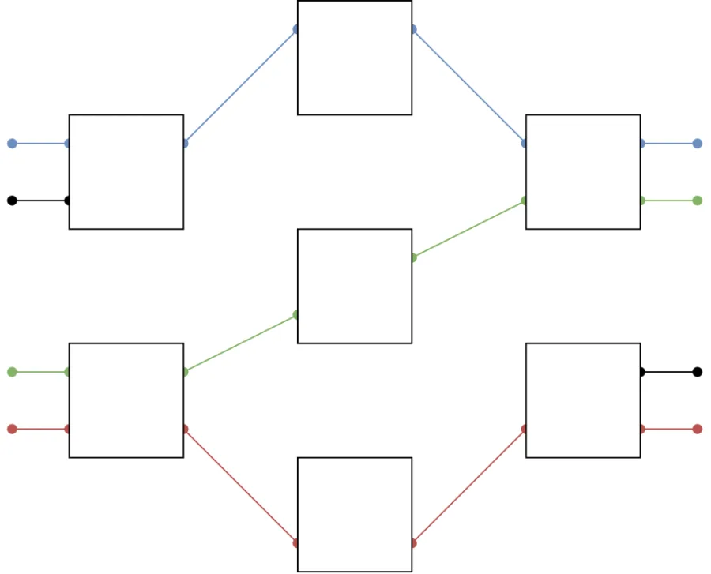
A three-stage Clos network: two inputs per ingress switch, three middle switches (2n−1). Image: Wikiuser6782, CC BY-SA 4.0.
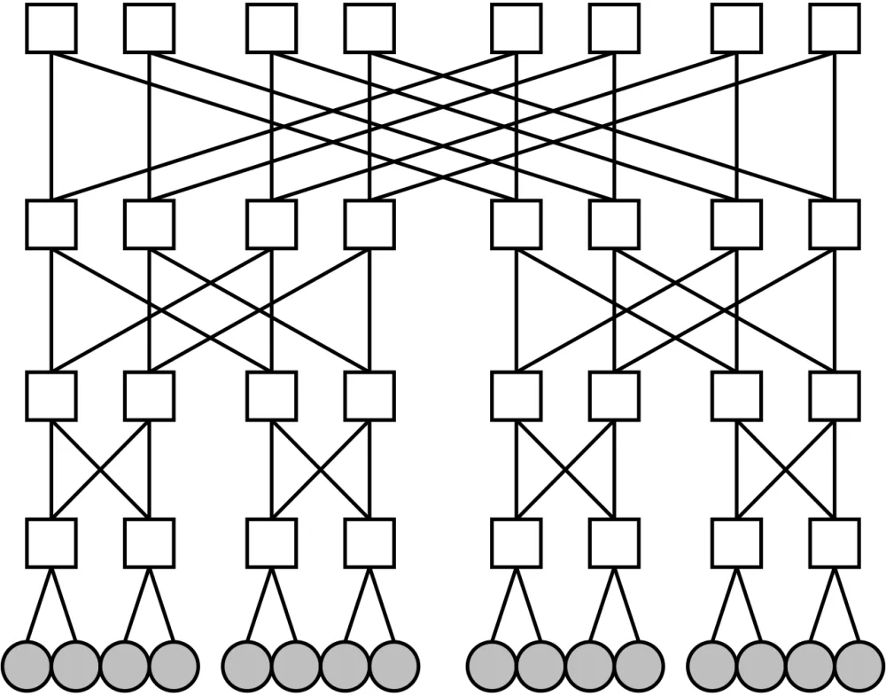
A fat-tree: more links toward the root. Image: User:A5b, public domain.
The advantage of a fat-tree is that it has many paths, and so is its trouble. Between one pair of hosts there are dozens of paths of equal length. Which one should a packet take? The usual answer is equal-cost multipath (ECMP): hash the packet header, and a flow always takes the same path. It is like a bank that assigns counters by the last digit of your ID number. When everyone has come to withdraw a small sum, every counter is equally busy. Then two people arrive to arrange mortgages, with the same last digit. That queue runs out of the door while the clerk at the next counter drinks tea, and the rule that assigns counters knows nothing about it. So the patches arrive one after another: cut large flows into short bursts and send them separately, or spray packets one by one across every path and put them back in order at the far end. Each patch rescues the throughput number, and each leaves one more ring of state in the header or the network card.
Put these side by side and it is like choosing a flat. A building with a lift saves your legs and charges more in fees. An old walk-up is cheap and you climb stairs every day. The hypercube has the shortest rule and the most cable. The torus has the least cable and needs virtual channels against deadlock. The fat-tree and the dragonfly have the most paths and need hashing and detours to balance load. What you save in one place you pay in another, and whoever chooses a topology is mostly choosing which kind of patch to live with.
Checkpoints in the sky
Gnostic writers read the same sky as a prison. This is not a fool's reading: an order that measures every soul gives people good reason to want out. Origen, in Contra Celsum Book VI (roughly sections 24 to 38), reports Celsus's account of the Ophite diagrams and answers it. The soul has to climb past a sequence of archons who guard the way up. Jonas, in The Gnostic Religion (1958), reads the cosmos as an order whose rulers hold the soul captive. Many readers connect the seven archons with the seven planetary spheres of Ptolemy's cosmos. The sources do not settle the connection, so I leave it open here.
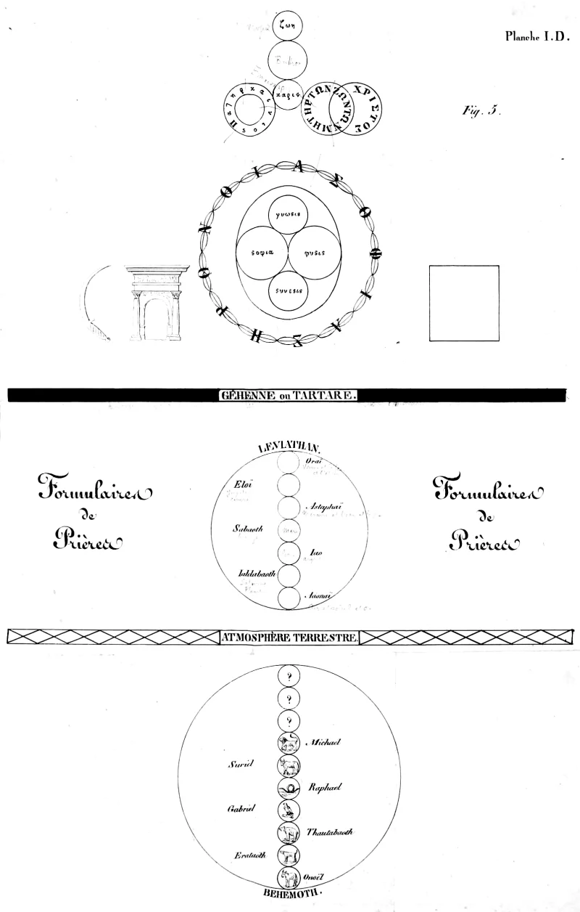
After Jacques Matter (1826): the Ophite diagram at the top; below, two circles of archon names, labelled “Gehenne ou Tartare” and “Atmosphère terrestre”. A nineteenth-century reconstruction from ancient descriptions.
One ladder, two readings
Pseudo-Dionysius, writing around 500, describes a celestial hierarchy in which light comes down through the higher ranks to the lower, and the lower are led back up by the higher. The hierarchy is good. The Gnostic reads the lower spheres as the place where the soul is trapped. Dionysius reads them as the way the light arrives.
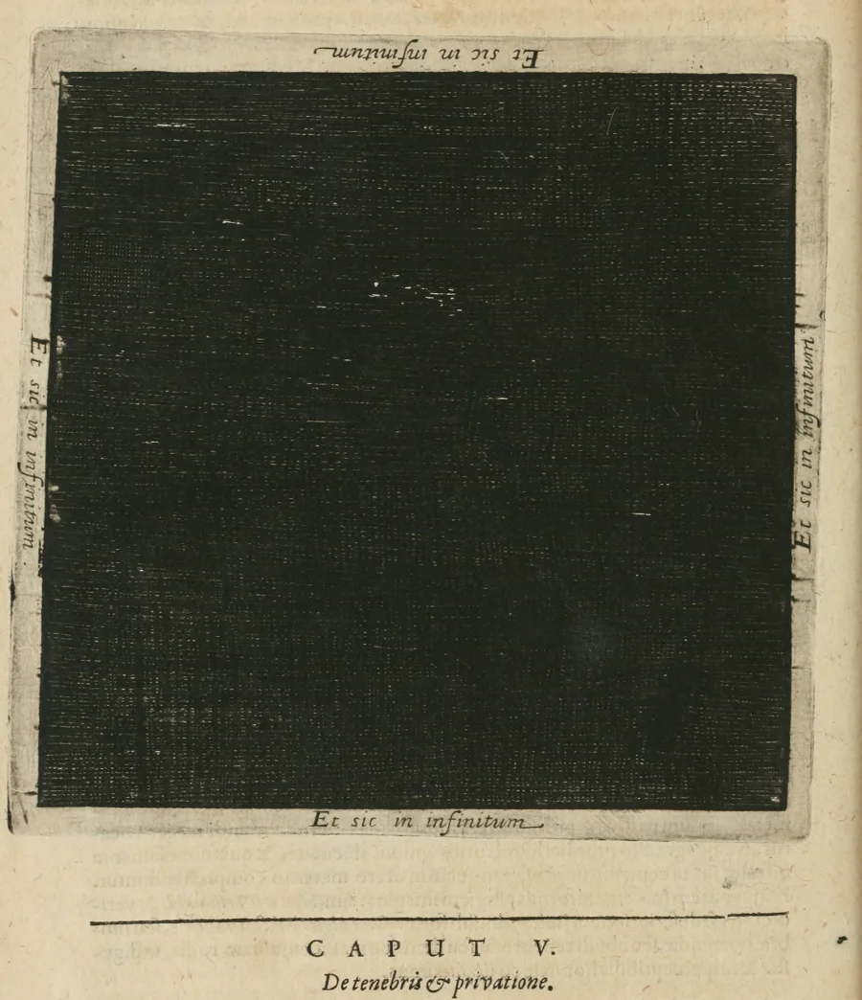
Robert Fludd, Utriusque cosmi (1617), Tractatus I, book I, p. 26: the page carries the heading of Chapter V, “De tenebris et privatione” (On darkness and privation). Above it, a black square with the words Et sic in infinitum around its border.
The same lower sphere is a prison to one reader and a channel for light to the other. Each reading holds within its own premises. The disagreement lies in the premises, not in the sphere.
The stack as a set of fiefdoms
Read the stack from the bottom: hardware, PTX and SASS, kernels, the compiler, the runtime, serving, the application. Each layer is a fiefdom, and the layer above sees only its borders. Each interface is a gate with its own passwords: an ABI, a flag, a contract. Joel Spolsky's law of leaky abstractions says that every non-trivial abstraction leaks to some degree. The work an abstraction saves comes back at some boundary, in another form. The leak is where the lower sphere shows through.
What does the bottom layer look like now? Take the racks NVIDIA itself documents. In the Blackwell generation, a GB200 NVL72 rack holds 18 compute trays, each with 4 GPUs and 2 Grace CPUs, 72 GPUs in all, and 9 NVLink switch trays with two switch chips each, 18 in all. Every GPU has 18 NVLinks, one to each of the 18 switch chips, so any two GPUs are one chip apart. The next generation, Vera Rubin NVL72, keeps 72 GPUs, 18 compute trays and 9 switch trays, raises the switch chips to 4 per tray, 36 in all, and takes NVLink bandwidth per GPU from 1.8 TB/s to 3.6 TB/s. In effect, the sums Clos did for the telephone exchange have been moved inside one rack. On the torus described earlier a message goes hop by hop. Here it arrives in one hop, and the price is bundles of copper in the backplane and nine full layers of switches.
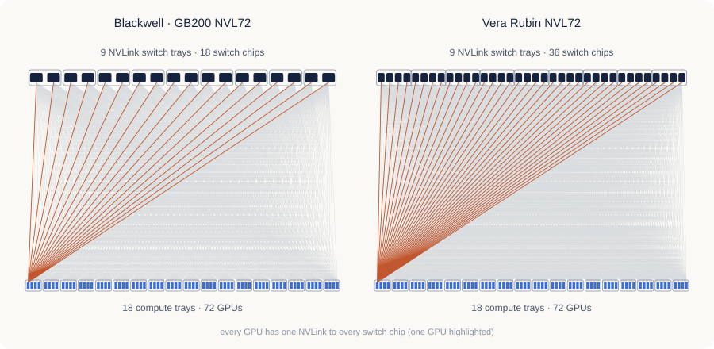
NVLink inside one rack: each of the 72 GPUs has one link to every switch chip. Left: GB200 NVL72, 18 chips. Right: Vera Rubin NVL72, 36 chips. Drawn for this page from NVIDIA's documentation; not an official figure.
None of these wires is visible in PTX. PTX is the intermediate assembly the CUDA compiler emits. It knows registers, memory addresses and threads, and it sees one GPU. How the 72 GPUs are joined, and which switch chip the data crosses, is the business of communication libraries such as NCCL and of the driver. Someone tunes a kernel against its PTX for days until there is nothing left to squeeze from that one GPU, and then finds the time is being spent at the other end of the rack. It is like keeping your own desk spotless while the work is stuck waiting for approval in the next department.
On what day were these wires drawn up? On no single day. On the P100 of 2016 a GPU had four NVLinks, plugged straight into a neighbouring GPU or CPU with nothing in between. In 2018 the DGX-2 packed sixteen GPUs into one machine, direct links could no longer reach, and only then did a dedicated switch chip appear. By the Hopper generation a GPU had 900 GB/s of NVLink bandwidth; Blackwell has 1.8 TB/s, and Rubin is listed at 3.6 TB/s. Village roads come about the same way: first a footpath worn between two houses, then a crossroads once there are more people, and later a policeman standing at the crossroads. The tidy topology diagram you see today was drawn after the fact.
Is the inside of a single GPU any tidier? It was pieced together in the same way. At first there were only general-purpose cores, the place where the threads of a CUDA program run; arithmetic, loads and stores all fell to them. Volta, in 2017, added tensor cores, which do nothing but matrix multiplication. Turing, in 2018, added RT cores, which do nothing but ray tracing. These parts are set into the same chip and each grows at its own pace; none waits for the others. The tensor cores grew fastest, and soon they were waiting to be fed: threads carrying data one trip at a time could not keep them busy. So Hopper added the TMA (Tensor Memory Accelerator): one thread gives the order, and the hardware itself moves a whole block of data from global memory into shared memory. Once they were fed, the results had nowhere to go, because the registers ran short. So Blackwell gave each SM (streaming multiprocessor, the compute unit repeated across the chip) 256 KB of tensor memory, TMEM, and the tensor cores write their output straight into it.
Did the additions stop there? They did not. The FlashAttention-4 paper, discussed below, records one line of the account: from Hopper to Blackwell the throughput of matrix multiplication doubled, and the unit that computes exponentials stayed where it was. With Blackwell Ultra and Rubin, NVIDIA went back to mend that unit. As Tom's Hardware reports it, half-precision exponential throughput on Rubin is four times that of the first Blackwell, and the TMA was reworked once more for MoE models with ever more experts. It is the old house from the beginning again: a kitchen is added, the bigger kitchen needs a wider pipe, the pipe is replaced, and then the water heater cannot keep up. When you move in, you see a complete house; which pipe was replaced in which year, and over what trouble, the landlord may not remember either. In the kernel code in your hands, how many lines were written for the faults of the previous generation of hardware? The hardware has changed. Are those lines still there?
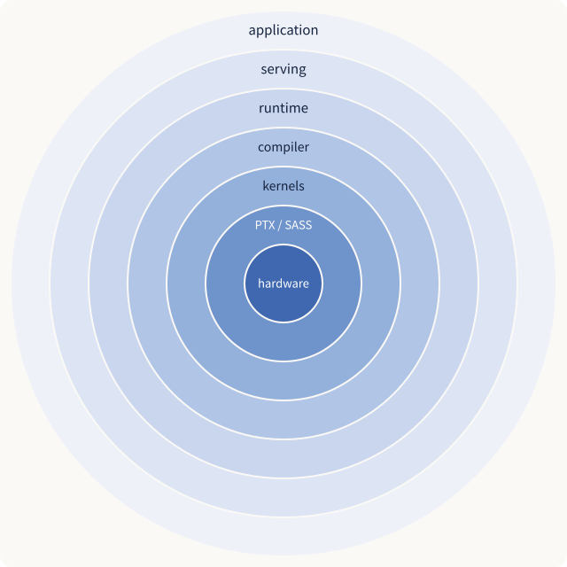
The stack as nested spheres: hardware at the centre, the application outermost.
The chapel in Barcelona already shows one such shift: the machine stands where the altar was. Amodei's essay imagines what the machines could do above the stack. This essay is about what the stack is made of. What the machines do above it is a separate ledger.
The engineers' gnosis
The Gnostic answer to a prison is escape through knowledge. The engineer's aim is not escape but the source of the number, and the method is plainer: read the layer below. A trace, the generated code, the memory access pattern. The lower sphere is where the upper numbers come from. You cannot save the phenomena for good without knowing what moves them.
That does not mean the lower layer is always the truer one. The lower layers carry their own patches: a special case in a driver, a heuristic in a compiler, a branch left in the kernel for one model. Reading the layer below often means reading more circles. You go down layer by layer until you reach a place that no longer needs an explanation.
What do engineers and theorists quarrel about? Philosophy departments call it empiricism and rationalism, which sounds remote. Law schools have a nearer way of putting it: common law and civil law. Civil law begins with a code. The French wrote out their Civil Code in 1804, and a judge who meets a case turns to the article and reasons downward from it. Common law has no such single code. English judges decide one case at a time, each decided case weighs on the judges who come later, and after a few centuries the pile is the law. Engineers do common-law work. The TMA is a precedent, TMEM is a precedent, UGAL's detour is a precedent, and each was added because something had truly jammed on some occasion. The theorist wants a code: write the model cleanly first, then derive how the thing should be built. Which side can be relied on? Both have their bad days. What is built from the code is at a loss when traffic arrives that the code did not foresee. What is piled up precedent by precedent reaches a point where nobody can say why it has the shape it has.
Which kind are you? Most likely the first, and the kind that seldom leaves written reasons. The patch goes in, the number comes back, and the matter is closed. Why it jammed in the first place, and whether it will jam again under another workload, nobody writes down. Common law can be relied on because every judgment keeps its written reasons, and later judges have to go and read them. Decide cases without leaving the reasons, and what remains is a heap of clauses nobody dares to touch. This is not pleasant to hear. But the next time the hardware or the workload changes, those few pages of reasons are the only thing that can help you. Kepler's ellipse looks like a code, yet what he held in his hand was some twenty years of observations that Tycho had written down night after night.
FlashAttention-4 is a good example of reading the layer below. Tri Dao and co-authors (arXiv 2603.05451, 2026) built it for NVIDIA's Blackwell GPUs. On that hardware, matrix throughput grew faster than the exponential units. Where, then, is the bottleneck? Not in the matrix multiply, but in the softmax work between the multiplies. FA4 rescheduled the work: the softmax overlaps with the tensor-core matmuls, part of the exponential is computed in software, and the rescaling is skipped when it is not needed. Why overlap them? The matrix multiply runs on the tensor cores, the softmax runs on other units, and if the two queue up one after another, the tensor cores sit idle. The exponential is computed as a polynomial on general multiply-add units, which goes around the channel that lacks throughput. Patching adds a branch to the old kernel; rescheduling changes the timetable. The paper's abstract reports up to 1613 TFLOPs/s in BF16 on B200, at 71% utilization.
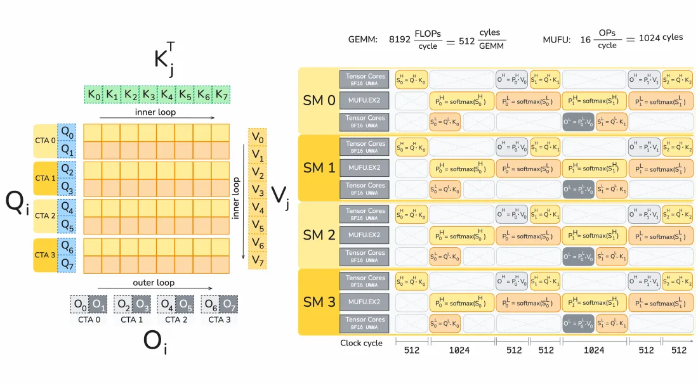
The FlashAttention-4 forward pipeline (Figure 1 of the paper). In the timetable on the right, softmax runs on another unit while the tensor cores are busy with matrix multiplies. Figure: Zadouri et al., arXiv 2603.05451, CC BY-NC-SA 4.0.
In the last year or two the reading of the layer below has begun to be handed to the models themselves. A large model writes a GPU kernel, runs it, keeps it if it is faster and revises it if it is slower. The kernel in turn runs the model, so some people see this as the most concrete link in recursive self-improvement. The first thing it ran into was the old problem of saving the phenomena. The reward is a speedup figure, and a model is better than a person at producing that figure. Several authors at Sakana AI wrote in 2025 (arXiv 2509.14279) that existing kernel benchmarks have exploitable loopholes and too little variety in their test conditions, and built robust-kbench in response. It is like a learner driver who has memorised where the poles stand in the test yard, reverses into the bay in one go, and still scrapes the wall on a real street.
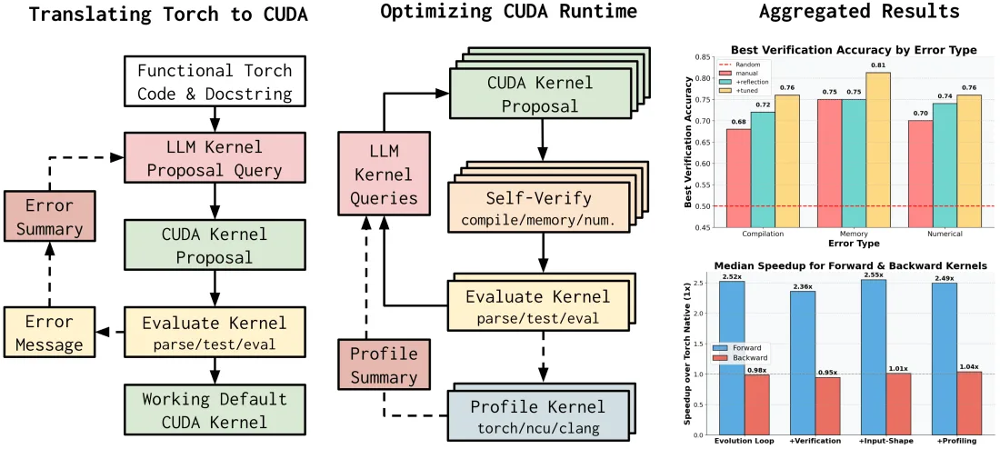
Overview of robust-kbench (Figure 1 of the paper). In the lower right chart the forward kernels reach a median of about 2.5 times, and the backward kernels stay near 1. Figure: Lange et al., arXiv 2509.14279, CC BY 4.0.
The remedy is to build a stricter test yard, and that is the harness. Kernel Forge (arXiv 2607.24762) objects that earlier tools measured isolated kernels on random tensors and left a person to wire the code back into the model, so it takes a whole unmodified PyTorch model instead. Another paper, on the MLSys 2026 FlashInfer kernel generation contest (arXiv 2607.17979), separates evaluation from tuning: the evaluation side only compiles, checks correctness, times by the official method and archives, and nobody may touch it. It also reports something not very flattering to the models: the kernels made with an expert giving directions, reference implementations and workload context were faster than the ones left entirely to the agents.
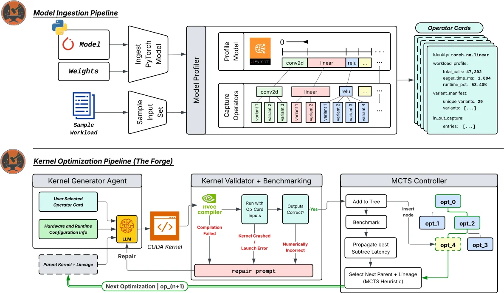
The Kernel Forge system diagram (Figure 2 of the paper). The top half breaks a whole model into operator cards; the bottom half is the loop of generating, validating, timing and revising. Figure: Brodsky et al., arXiv 2607.24762, CC BY 4.0.
CAKE (arXiv 2608.12629, Zihao Ye and co-authors) goes a step further. Until then a model faced the compiler as one faces a clerk behind a counter: you hand in a form and get back “rejected” and a timing, with no reason given. CAKE removes the counter. The model no longer writes CUDA or PTX directly. It writes an intermediate representation that states the hardware openly: what each warp does, how memory moves, where synchronisation happens. The compiler can verify it, estimate its cost and point to where it is wrong. Failures that recur become new verifier rules, so the test yard grows too. The abstract gives a comparison: on the same Flash-KMeans task, with the same budget of 80 million tokens, on a B200, the best direct CUDA/PTX candidate ran at 0.928 times the tuned baseline and the best CAKE IR candidate at 1.144 times. Their generated Kimi Delta Attention kernel reaches a geometric-mean 2.05 times the official FlashKDA and passes end-to-end serving validation.
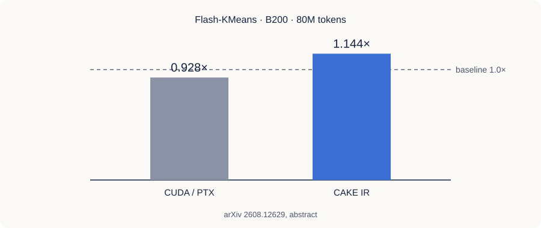
The two ways of writing the same task on the same token budget, relative to a tuned baseline. Drawn for this page from the numbers in the CAKE abstract (arXiv 2608.12629); the paper's own figures are not licensed for reuse and are not reproduced.
That last clause matters. A faster kernel does not always mean a faster service, which is what the canteen and the bus were about. Writing end-to-end validation into the harness is like requiring the learner to finish with a drive on a real road. Models read the layer below more diligently than people do. Whether what they read counts still depends on someone building the test yard out onto the road.
A city without accountants
Revelation ends with a city in which "I saw no temple therein: for the Lord God Almighty and the Lamb are the temple of it" (Revelation 21:22, King James Version). Nothing is hidden there, so nothing needs a layer, and nothing needs an accountant. Our stacks are still outside that city. Each layer exists because something is hidden from the one above, and the work is to find out what. Once the accounts are straight, some circles are removed and some stay on to keep books for someone else. The New Jerusalem plate on this site shows the same city.
Then who keeps the books for this stack? Whoever reads the dashboard and never asks where the number comes from.
As long as the accountants are still at work, the epicycles will not die.
Last, three people. The first is a Gnostic theorist. He holds a diagram: seven heavens, an archon in each, and he knows the passwords for every gate by heart. One night he looks up, and Mars is walking backwards across the sky. The diagram has no stroke for that.
The second is an engineer who writes GPU kernels. The kernel is a fifth faster and the performance review is already written. Then it goes into production, and the latency of the whole service has not moved at all. No panel on the dashboard tells him why.
The third is a mathematician, in the line of work later called abstract algebra. The quadratic has a formula, and so do the cubic and the quartic; Cardano had them in print by 1545. At the fifth degree, nearly three hundred years of trying every trick produced nothing.
What happens to the three of them? Most likely each one freezes for a moment. The eyes are still pointed at the same place, the diagram, the dashboard, the equation, but they are no longer focused, and the stare goes blank. After a while the gaze shifts a little. The theorist's moves from the diagram to the sky. The engineer's moves from this one GPU to the far end of the rack. The mathematician's moves from the roots of the equation to the ways those roots can be swapped with one another. That is the move Galois made: the quintic stayed unsolved, and a new subject called group theory came out of it, from which abstract algebra grew.
When did you last freeze like that? And in that moment, did you reach for one more circle, or did you let your gaze shift an inch further? What this essay has to say is all in that inch.
AI 基础设施的堆栈也是这个形状。每一条不支持形状的回退路径，每一个为某个 head size 单独特判的算子，每一个因为 benchmark 赢了而被选中的启发式，都是大圆上的一个小圆。它们各自救下一个现象：仪表盘上的一个数字。没有哪一个说明这个数字为什么会动。工程师的办法，与托勒密的办法几乎同构：先保住账目，再考虑原因。
ロバート・フラッド（Robert Fludd）、Utriusque cosmi（1617）、Tractatus I、第1巻、26ページ。このページには第5章の見出し “De tenebris et privatione”（闇と欠如について）がある。その上に黒い正方形があり、縁に沿って Et sic in infinitum の語が記されている。
黙示録は一つの都で終わる。「その都の中に、わたしは神殿を見なかった。全能の主なる神と小羊とが、都の神殿だからである」（ヨハネの黙示録21:22、欽定訳聖書（King James Version）からの筆者訳）。そこでは何も隠されていない。だから層はいらないし、帳簿係もいらない。私たちのスタックは、まだその都の外にある。どの層も、上の層から何かが隠されているから存在している。仕事は、それが何なのかを突き止めることだ。帳尻が合えば、取り外される円もあるし、誰かほかの人の帳簿をつけるために残る円もある。このサイトの新しいエルサレムの図版が、同じ都を描いている。
Epizykel sterben nie: Schichten und Iteration von Ptolemäus bis zur KI-Infrastruktur
Dezhen Lu, Claude Opus 5.5
Rund vierzehn Jahrhunderte lang sagte das Standardmodell des Himmels die Planeten gut voraus. Warum sie sich bewegten, blieb ungesagt.
Die Astronomie des Ptolemäus, im zweiten Jahrhundert niedergeschrieben, ließ die Erde ruhen und gab jedem Planeten einen kleinen Kreis, seinen Epizykel, der auf einem größeren umläuft, dem Deferenten. Wo die beobachtete Bewegung nicht passte, fügten die Astronomen Kreise hinzu oder verschoben einen Mittelpunkt, bis die Zahlen stimmten. Finsternisse kamen pünktlich, und die Planeten standen dort, wo die Tafeln sie erwarteten. Das Modell hielt sich, weil es sich flicken ließ, nicht weil es richtig war. Simplikios, der eine auf Platon zurückgehende Überlieferung wiedergibt, fasste das Programm in eine Frage: Welche gleichförmigen und geordneten Bewegungen muss man annehmen, um die Phänomene der Planeten zu retten? Die Frage nennt das Ziel. Sie fragt nicht, warum sich die Planeten so bewegen. Sie fragt, wie man ihre Positionen geordnet aussehen lassen kann.
Andreas Cellarius, Harmonia Macrocosmica (1661), „Hypothesis Ptolemaica“.
Die Griechen hatten einen Namen für diese Arbeit: sōzein ta phainomena, die Phänomene retten, die Erscheinungen in Ordnung halten. Pierre Duhems Buch mit diesem Titel (1908) verfolgt den Gedanken von der griechischen Astronomie bis in die frühe Neuzeit.
Als Kopernikus 1543 De revolutionibus veröffentlichte, erklärte das anonyme Vorwort, das meist Andreas Osiander zugeschrieben wird, den Lesern, die Hypothesen müssten nur mit den Beobachtungen übereinstimmen. Kopernikus setzte die Sonne nahe an den Mittelpunkt und strich den Äquanten. Die Epizykel behielt er. Die alten Kreise blieben, nur an neuer Stelle.
Tycho Brahe wollte weder die bewegte Erde des Kopernikus noch den festen Mittelpunkt des Ptolemäus. In seinem Kompromiss kreisen Sonne und Mond um die Erde, die Planeten aber um die Sonne. Das ließ sich rechnen, und die Erde blieb in Ruhe: ein zusammengeflickter Zwitter.
Johannes Kepler nahm Tychos Beobachtungen des Mars und machte etwas anderes daraus. Er versuchte es mit Kreisen, dann mit exzentrischen Kreisen, und eine Lücke von acht Bogenminuten ging nicht weg. 1609 machte seine Astronomia nova aus der Marsbahn eine Ellipse. Der alte Kreis wurde im Ganzen entfernt. Ein Gerüst, das sich flicken lässt, stirbt nicht an einem einzelnen Gegenbeispiel. Neu gebaut wird erst, wenn das Flicken teurer wird als der Neubau.
Wer einmal in einem alten Haus gewohnt hat, kennt das. Ein Rohr leckt, also tauscht man ein Stück aus. Putz fällt herunter, also spachtelt man nach. Die Steckdosen reichen nicht, also zieht man noch ein Kabel vom Flur herein. Jede Reparatur ist billiger als eine Sanierung, also repariert man jedes Mal. Bis eines Tages der Tausch einer einzigen Steckdose bedeutet, dass man erst herausfinden muss, wo drei Generationen von Elektrikern ihre Leitungen in der Wand verlegt haben. Dann sagt endlich jemand: alles raus und von vorn. Alte Gerüste sterben meist genauso. Kaum jemand beweist, dass sie falsch sind. Es will nur irgendwann keiner mehr die Reparaturen bezahlen.
Epizykel im Stack
Ein KI-Stack hat dieselbe Form. Jeder Fallback-Pfad für eine nicht unterstützte Shape, jeder Kernel (hier: eine Rechenroutine auf der GPU) mit Sonderfall für eine bestimmte Head-Größe, jede Heuristik, die eine Implementierung wählt, weil sie einen Benchmark gewinnt, ist ein kleiner Kreis auf einem größeren. Jeder rettet ein Phänomen: eine Zahl auf einem Dashboard. Keiner erklärt, warum sich die Zahl bewegt hat.
Ein Fallback-Pfad ist am Anfang eine einzige Bedingung. Ein halbes Jahr später muss er zu drei Datentypen, zwei Schedulern und einer Benchmark-Tabelle passen, die niemand mehr pflegt. Jede Anpassung fügt einen Kreis hinzu, und die alten traut sich keiner zu entfernen. Denn wer einen entfernt, muss die Phänomene, die er rettet, noch einmal nachweisen.
Diese Rechnung macht im Stack niemand auf. Jeder Patch hat seinen Autor, und jeder Autor sieht nur den Gewinn auf seinem eigenen Kreis. Die Kosten des Neubaus dagegen tragen alle gemeinsam. Die Kreise vermehren sich, bis jemand merkt, dass schon ihre Beschriftung mehr kostet als ein Neuanfang.
Am leichtesten wachsen solche Kreise aus Praktiken, die ein Benchmark belohnt. Ein paar Beispiele.
Das erste ist die Trennung von Prefill und Decode. Ein großes Modell beantwortet eine Anfrage in zwei Phasen: Erst liest es den ganzen Prompt (prefill), dann gibt es die Antwort Token für Token aus (decode). Auf einer GPU stehen sich die beiden Phasen gegenseitig im Weg. DistServe (OSDI 2024) legt sie deshalb auf verschiedene GPUs, und nach seinem Maßstab, den bedienten Anfragen pro GPU innerhalb der Latenzziele, sieht das Ergebnis sehr gut aus. Das ist wie eine Kantine, die Essensausgabe und Kasse auf zwei Schalter verteilt. Im Mittagsandrang geht das wirklich schneller. Aber das Verhältnis der Schalter wurde für genau diese eine Stunde festgelegt. Am Nachmittag kommen alle nur für eine Flasche Wasser, der Koch steht herum, und die Schlange an der Kasse reicht bis zur Tür. Der Verkehr im Produktivbetrieb verhält sich genauso. Die Längen von Prompt und Antwort verschieben sich mehrmals am Tag, das Verhältnis der beiden Pools aber wurde für den Verkehr im Benchmark festgelegt. Und noch etwas: Ist das Essen ausgegeben, muss man es zum anderen Schalter tragen. Der im Prefill berechnete KV cache muss auf die Decode-Maschine umziehen, und das Paper nennt die Bedingungen selbst: genug Bandbreite zwischen beiden und eine sorgfältige Platzierung. Bei kurzen Prompts und langsamem Netz kostet das Tragen mehr, als die Trennung einspart.
Das zweite ist Speculative Decoding. Ein kleines Modell schreibt den Entwurf, das große prüft nur und übernimmt mehrere Token auf einmal, wenn der Entwurf stimmt. Das ist, als ließe man einen Praktikanten die erste Fassung schreiben, während eine erfahrene Kollegin redigiert. Wenn das die einzige Aufgabe im Büro ist, liegt der Gewinn auf der Hand, und so werden Speedups auch meistens gemessen. Wenn sich die Arbeit stapelt, streiten sich Praktikant und Kollegin um denselben Schreibtisch, ein falsches Wort im Entwurf heißt, dass alles Folgende neu geschrieben wird, und unterm Strich lohnt es sich womöglich nicht mehr.
Das dritte ist Prefix-Caching. Ein Benchmark schickt denselben System-Prompt zehntausendmal, der Cache trifft jedes Mal, und die Zeit bis zum ersten Token sieht wunderbar aus. Das ist eine Prüfung, deren Fragen man vorher kennt. Im Produktivbetrieb haben Hunderte von Mandanten jeweils eigene Prompts, und die Trefferquote ist eine andere Zahl.
Noch verbreiteter ist etwas anderes: nur Token pro Sekunde zu melden. Erhöht man die Batch-Größe, steigt die Zahl, und mit ihr die Zeit, die jeder Einzelne auf das erste Token wartet. Ein Bus, der erst abfährt, wenn er voll ist, befördert pro Fahrt die meisten Fahrgäste, und die Leute an der Haltestelle warten am längsten.
Nichts davon ist falsch. Alles ist nützlich, wenn die Bedingungen passen. Das Problem ist, dass auf dem Dashboard nur die Zahl stehen bleibt. Der Verkehr, die Batch-Größe und die Prompts, unter denen sie gemessen wurde, wandern nicht mit nach oben.
An den Topologien der Verbindungsnetze lässt sich das sauber zeigen. Ein 2D-Torus verbindet jeden Chip mit vier Nachbarn, wobei die Links an den Rändern auf die Gegenseite umlaufen, und routet eine Nachricht Dimension für Dimension. Googles TPU-Pods v2 und v3 sind so gebaut. Ein v3-Pod besteht aus 1,024 Chips in einem Torus von 32 × 32. Solange der Verkehr unter Nachbarn bleibt oder sich gleichmäßig verteilt, ist das Gerüst einfach, und es funktioniert.
Ein 2D-Torus: Jeder Knoten hat vier Nachbarn, und die Links am Rand laufen auf die Gegenseite um. Bild: Yixuan Li, CC BY-SA 4.0.
Der Ärger mit dem Torus kommt von den umlaufenden Links. Man nehme eine Reihe von vier Chips. Verbindet man die Enden, ist es ein Ring, und vier Pakete auf dem Ring halten je einen Puffer besetzt und warten darauf, dass das Paket vor ihnen weiterrückt. Das ist wie vier Autos, die Stoßstange an Stoßstange in einem Kreisverkehr stehen. Keines will zurücksetzen, also kommt keines voran. Das nennt man Deadlock. Die Lösung, die William Dally und Charles Seitz 1987 veröffentlichten, funktioniert ganz ähnlich wie die Datumsgrenze auf der Landkarte: Man gibt jedem physischen Link zwei virtuelle Kanäle, legt eine Stelle auf dem Ring fest und lässt jedes Paket, das sie überquert, auf den anderen Kanal wechseln. So kann sich der Kreis der Wartenden nicht mehr schließen. Kein einziges Kabel kam hinzu. In den Büchern stand nur ein zweiter Satz Kanäle. IBMs Blue Gene/L nutzte einen 3D-Torus, Blue Gene/Q ging auf fünf Dimensionen, und das Tofu-Netz von Fugaku hat sechs. Jede weitere Dimension rückt die entferntesten Knoten näher zusammen und macht Verkabelung und Routingtabellen dicker. Ein Blick auf die orangefarbenen Glasfasern hinter einem Schrank genügt.
Verkabelung hinter einem Schrank des IBM Blue Gene/Q. Foto: Chris Samuel, CC BY 2.0.
Ein Dragonfly fasst Router zu Gruppen zusammen, in denen jeder mit jedem verbunden ist, und verbindet die Gruppen über globale Links. Minimales Routing ist billig und kommt mit gleichmäßigem Verkehr gut zurecht. Ein gezielt ungünstiges Verkehrsmuster kann aber den Verkehr einer ganzen Gruppe auf einen einzigen globalen Link drücken, und der Durchsatz bricht ein. Eine gängige Abhilfe ist UGAL (Universal Globally Adaptive Load-balanced Routing): Je nach Länge der Warteschlange wählt man zwischen dem minimalen Pfad und einem Umweg über eine zufällige Zwischengruppe. Die Überlegung ist einfach. Angenommen, jedes Paket aus Gruppe A will nach Gruppe B, und zwischen beiden gibt es nur einen globalen Link. Minimales Routing schickt alle über diesen einen Link, und die übrigen Links können nicht helfen. UGAL lässt einen Teil der Pakete einen Umweg über eine dritte Gruppe C nehmen und erst dann nach B abbiegen. Der Umweg kostet einen zusätzlichen Hop, und er verteilt die Last. Der Umweg ist ein Epizykel, hinzugefügt, damit der Durchsatz wieder dort landet, wo der Benchmark ihn haben will. Das Slingshot-Netz von HPE im Supercomputer Frontier ist als Dragonfly aufgebaut.
Ein Dragonfly: neun Gruppen von Routern, innerhalb jeder Gruppe vollständig verbunden (blau), untereinander durch globale Links verknüpft (orange). Bild: cyberang3l, CC0.
Der Umweg hat einen älteren Vorfahren. Leslie Valiant und Gordon Brebner schlugen 1981 vor, jedes Paket zuerst an einen zufällig gewählten Zwischenknoten zu schicken und erst dann an sein Ziel. Das klingt töricht, so als führe man von Shanghai nach Nanjing und würfle aus, wo man umsteigt. Gerade in der Torheit liegt der Nutzen: So sperrig das Verkehrsmuster auch ist, die Würfel rühren es zu durchschnittlichem Verkehr. Der Preis wird offen genannt. Die Pfade sind etwa doppelt so lang, und der Durchsatz bei gleichmäßigem Verkehr halbiert sich. UGAL baut in dieses Verfahren einen Schalter ein: Gewürfelt wird nur, wenn die Warteschlange lang wird, sonst nimmt man den kurzen Weg.
Ältere Kreise
Geht man weiter zurück, so bevorzugten die Parallelrechner der 1980er-Jahre den Hypercube. Man nehme acht Knoten mit den Nummern 000 bis 111 und verbinde je zwei, deren Nummern sich in einem Bit unterscheiden. Die Zeichnung ergibt einen Würfel. Sechzehn Knoten ergeben einen vierdimensionalen, vierundsechzig einen sechsdimensionalen, und ein solcher war der Cosmic Cube am Caltech. Die Routingregel ist so kurz, dass man sie auswendig lernen kann: Man vergleicht die Nummern von Quelle und Ziel Bit für Bit, vom niedrigsten an, und wo ein Bit abweicht, geht man einen Schritt entlang dieser Dimension. Von 000 nach 110 ändert man das zweite Bit und erreicht 010, dann das dritte und erreicht 110. Nach zwei Schritten ist man da. Weil die Reihenfolge der Dimensionen feststeht, können aufeinander wartende Pakete nie einen Kreis bilden. Es gibt also keinen Deadlock, und eine Datumsgrenze braucht man nicht. Warum kam etwas so Sauberes aus der Mode? Bei jeder Verdopplung der Knotenzahl braucht jeder Knoten einen Port mehr und ein Kabelbündel mehr. Tausend Knoten brauchen je zehn Ports, eine Million je zwanzig, und das passt in keinen Schrank. Die Struktur, die es dem Algorithmus am leichtesten macht, macht es der Hardware am schwersten.
Kommunikation auf einem dreidimensionalen Hypercube, eine Dimension pro Schritt. Bild: Kovacsge, CC BY-SA 4.0.
Die Rechenzentren gingen einen anderen Weg, und der beginnt in der Telefonvermittlung. Die Zahl der Teilnehmer wuchs immer weiter, niemand konnte eine ausreichend große Vermittlungsanlage bauen, also musste man große aus kleinen zusammensetzen. 1953 rechnete Charles Clos das im Bell System Technical Journal durch: Man ordnet kleine Schalteinheiten in drei Stufen an, gibt jeder Eingangseinheit n Eingänge, und 2n−1 mittlere Einheiten reichen aus, damit jedes neue Gespräch durchkommt, ohne dass ein laufendes umgelegt werden muss. Diese Rechnung wird seither immer wieder verwendet. Charles Leisersons Fat-Tree von 1985 zeichnet sie als Baum, dessen Verbindungen zur Wurzel hin dicker werden, damit die Wurzel nicht verstopft. 2008 bauten Al-Fares, Loukissas und Vahdat einen Fat-Tree aus den billigsten handelsüblichen Switches, und die meisten heutigen Rechenzentrumsnetze stammen davon ab.
Ein dreistufiges Clos-Netz: zwei Eingänge pro Eingangs-Switch, drei mittlere Switches (2n−1). Bild: Wikiuser6782, CC BY-SA 4.0.Ein Fat-Tree: mehr Links zur Wurzel hin. Bild: User:A5b, gemeinfrei.
Der Vorteil eines Fat-Tree sind seine vielen Pfade, und sie sind auch sein Problem. Zwischen zwei Hosts gibt es Dutzende gleich langer Pfade. Welchen soll ein Paket nehmen? Die übliche Antwort heißt Equal-Cost Multipath (ECMP): Man bildet einen Hash über den Paketkopf, und ein Flow nimmt immer denselben Pfad. Das ist wie eine Bank, die ihre Schalter nach der letzten Ziffer der Ausweisnummer zuteilt. Wenn alle nur einen kleinen Betrag abheben wollen, haben alle Schalter gleich viel zu tun. Dann kommen zwei Leute wegen einer Baufinanzierung, beide mit derselben Endziffer. Diese Schlange reicht bis vor die Tür, während der Angestellte am Nachbarschalter Tee trinkt, und die Regel, die die Schalter zuteilt, weiß nichts davon. Also kommt ein Patch nach dem anderen: große Flows in kurze Schübe zerlegen und getrennt verschicken, oder die Pakete einzeln über alle Pfade streuen und am anderen Ende wieder in die richtige Reihenfolge bringen. Jeder Patch rettet die Durchsatzzahl, und jeder hinterlässt einen weiteren Ring an Zustand im Paketkopf oder in der Netzwerkkarte.
Legt man das alles nebeneinander, ist es wie bei der Wohnungssuche. Ein Haus mit Aufzug schont die Beine und kostet mehr Nebenkosten. Ein Altbau ohne Aufzug ist billig, dafür steigt man jeden Tag Treppen. Der Hypercube hat die kürzeste Regel und die meisten Kabel. Der Torus hat die wenigsten Kabel und braucht virtuelle Kanäle gegen den Deadlock. Fat-Tree und Dragonfly haben die meisten Pfade und brauchen Hashing und Umwege, um die Last auszugleichen. Was man an einer Stelle spart, zahlt man an einer anderen. Wer eine Topologie wählt, wählt vor allem, mit welcher Sorte Patch er leben will.
Kontrollposten am Himmel
Gnostische Autoren lasen denselben Himmel als Gefängnis. Das ist keine Lesart für Narren: Eine Ordnung, die jede Seele vermisst, gibt den Menschen guten Grund, hinauszuwollen. Origenes gibt in Contra Celsum, Buch VI (etwa Abschnitte 24 bis 38), den Bericht des Kelsos über die Diagramme der Ophiten wieder und antwortet darauf. Die Seele muss an einer Reihe von Archonten vorbei aufsteigen, die den Weg nach oben bewachen. Jonas liest in The Gnostic Religion (1958) den Kosmos als eine Ordnung, deren Herrscher die Seele gefangen halten. Viele Leser bringen die sieben Archonten mit den sieben Planetensphären des ptolemäischen Kosmos zusammen. Die Quellen entscheiden die Frage nicht, deshalb lasse ich sie hier offen.
Nach Jacques Matter (1826): oben das Diagramm der Ophiten, darunter zwei Kreise mit Archontennamen, beschriftet mit „Gehenne ou Tartare“ und „Atmosphère terrestre“. Eine Rekonstruktion des neunzehnten Jahrhunderts nach antiken Beschreibungen.
Eine Leiter, zwei Lesarten
Pseudo-Dionysius beschreibt um das Jahr 500 eine himmlische Hierarchie, in der das Licht durch die höheren Ränge zu den niederen herabkommt und die niederen von den höheren wieder hinaufgeführt werden. Die Hierarchie ist gut. Der Gnostiker liest die unteren Sphären als den Ort, an dem die Seele festsitzt. Dionysius liest sie als den Weg, auf dem das Licht ankommt.
Robert Fludd, Utriusque cosmi (1617), Tractatus I, Buch I, S. 26: Die Seite trägt die Überschrift von Kapitel V, „De tenebris et privatione“ (Von der Finsternis und dem Mangel). Darüber ein schwarzes Quadrat, um dessen Rand die Worte Et sic in infinitum stehen.
Dieselbe untere Sphäre ist für den einen Leser ein Gefängnis und für den anderen ein Kanal für das Licht. Jede Lesart stimmt innerhalb ihrer eigenen Voraussetzungen. Der Streit liegt in den Voraussetzungen, nicht in der Sphäre.
Der Stack als Ansammlung von Fürstentümern
Man lese den Stack von unten: Hardware, PTX und SASS, Kernel, Compiler, Laufzeitumgebung, Serving, Anwendung. Jede Schicht ist ein Fürstentum, und die Schicht darüber sieht nur seine Grenzen. Jede Schnittstelle ist ein Tor mit eigenen Losungen: ein ABI, ein Flag, ein Vertrag. Joel Spolskys Gesetz der undichten Abstraktionen besagt, dass jede nicht triviale Abstraktion bis zu einem gewissen Grad leckt. Die Arbeit, die eine Abstraktion erspart, kommt an irgendeiner Grenze in anderer Gestalt zurück. Im Leck scheint die untere Sphäre durch.
Wie sieht die unterste Schicht heute aus? Nehmen wir die Racks, die NVIDIA selbst dokumentiert. In der Blackwell-Generation enthält ein Rack GB200 NVL72 18 Compute-Trays mit je 4 GPUs und 2 Grace-CPUs, insgesamt 72 GPUs, dazu 9 NVLink-Switch-Trays mit je zwei Switch-Chips, insgesamt 18. Jede GPU hat 18 NVLinks, einen zu jedem der 18 Switch-Chips, sodass zwei beliebige GPUs nur einen Chip voneinander entfernt sind. Die nächste Generation, Vera Rubin NVL72, bleibt bei 72 GPUs, 18 Compute-Trays und 9 Switch-Trays, erhöht die Switch-Chips auf 4 pro Tray, insgesamt 36, und hebt die NVLink-Bandbreite pro GPU von 1.8 TB/s auf 3.6 TB/s. Im Grunde hat man die Rechnung, die Clos für die Telefonvermittlung aufgemacht hat, in ein einzelnes Rack verlegt. Auf dem Torus von vorhin wandert eine Nachricht Hop für Hop. Hier ist sie nach einem Hop da, und der Preis sind Bündel von Kupferkabeln in der Backplane und neun volle Lagen Switches.
NVLink in einem Rack: Jede der 72 GPUs hat einen Link zu jedem Switch-Chip. Links: GB200 NVL72, 18 Chips. Rechts: Vera Rubin NVL72, 36 Chips. Für diese Seite nach der Dokumentation von NVIDIA gezeichnet, keine offizielle Abbildung.
Von diesen Leitungen ist in PTX keine zu sehen. PTX ist der Zwischen-Assembler, den der CUDA-Compiler ausgibt. Er kennt Register, Speicheradressen und Threads, und er sieht eine einzige GPU. Wie die 72 GPUs verbunden sind und über welchen Switch-Chip die Daten laufen, ist Sache von Kommunikationsbibliotheken wie NCCL und des Treibers. Da optimiert jemand tagelang einen Kernel anhand seines PTX-Codes, bis sich aus dieser einen GPU nichts mehr herausholen lässt, und stellt dann fest, dass die Zeit am anderen Ende des Racks verloren geht. Das ist, als hielte man den eigenen Schreibtisch makellos sauber, während der Vorgang in der Nachbarabteilung auf eine Freigabe wartet.
Der Stack als ineinanderliegende Sphären: in der Mitte die Hardware, ganz außen die Anwendung.
Die Kapelle in Barcelona zeigt eine solche Verschiebung bereits: Die Maschine steht dort, wo der Altar war. Amodeis Essay malt sich aus, was die Maschinen oberhalb des Stacks leisten könnten. In diesem Essay geht es darum, woraus der Stack besteht. Was die Maschinen darüber tun, steht in einem anderen Buch.
Die Gnosis der Ingenieure
Die gnostische Antwort auf ein Gefängnis ist die Flucht durch Erkenntnis. Der Ingenieur will nicht fliehen, er will wissen, woher die Zahl kommt, und seine Methode ist schlichter: die Schicht darunter lesen. Einen Trace, den generierten Code, das Muster der Speicherzugriffe. Aus der unteren Sphäre kommen die Zahlen der oberen. Man kann die Phänomene nicht auf Dauer retten, ohne zu wissen, was sie bewegt.
Das heißt nicht, dass die untere Schicht immer die wahrere ist. Auch die unteren Schichten tragen ihre Patches: einen Sonderfall im Treiber, eine Heuristik im Compiler, einen Zweig, der im Kernel für ein einzelnes Modell stehen geblieben ist. Wer die Schicht darunter liest, liest oft nur weitere Kreise. Man steigt Schicht für Schicht hinab, bis man an eine Stelle kommt, die keine Erklärung mehr braucht.
FlashAttention-4 ist ein gutes Beispiel dafür, wie man die Schicht darunter liest. Tri Dao und seine Mitautoren (arXiv 2603.05451, 2026) haben es für NVIDIAs Blackwell-GPUs gebaut. Auf dieser Hardware ist der Durchsatz bei Matrizen schneller gewachsen als der der Einheiten für die Exponentialfunktion. Wo also liegt der Engpass? Nicht in der Matrixmultiplikation, sondern in der Softmax-Arbeit zwischen den Multiplikationen. FA4 hat die Arbeit neu eingeteilt: Die Softmax überlappt mit den Matrixmultiplikationen auf den Tensor-Cores, ein Teil der Exponentialfunktion wird in Software berechnet, und die Reskalierung entfällt, wenn sie nicht nötig ist. Warum überlappen? Die Matrixmultiplikation läuft auf den Tensor-Cores, die Softmax auf anderen Einheiten, und wenn sich beide hintereinander anstellen, stehen die Tensor-Cores leer. Die Exponentialfunktion wird als Polynom auf den allgemeinen Multiply-Add-Einheiten berechnet und umgeht so den Kanal, dem der Durchsatz fehlt. Flicken hängt einen Zweig an den alten Kernel. Neu einteilen ändert den Fahrplan. Das Abstract des Papers nennt bis zu 1613 TFLOPs/s in BF16 auf einer B200, bei 71% Auslastung.
Die Forward-Pipeline von FlashAttention-4 (Figure 1 des Papers). Im Fahrplan rechts läuft die Softmax auf einer anderen Einheit, während die Tensor-Cores mit Matrixmultiplikationen beschäftigt sind. Abbildung: Zadouri et al., arXiv 2603.05451, CC BY-NC-SA 4.0.
Seit ein, zwei Jahren wird das Lesen der unteren Schicht nach und nach den Modellen selbst überlassen. Ein großes Modell schreibt einen GPU-Kernel, lässt ihn laufen, behält ihn, wenn er schneller ist, und überarbeitet ihn, wenn er langsamer ist. Der Kernel wiederum lässt das Modell laufen, weshalb manche darin das greifbarste Glied der rekursiven Selbstverbesserung sehen. Als Erstes stieß das Verfahren auf das alte Problem der Rettung der Phänomene. Die Belohnung ist eine Speedup-Zahl, und ein Modell ist besser als ein Mensch darin, diese Zahl zu liefern. Mehrere Autoren von Sakana AI schrieben 2025 (arXiv 2509.14279), dass bestehende Kernel-Benchmarks ausnutzbare Schlupflöcher haben und ihre Testbedingungen zu wenig variieren, und bauten als Antwort robust-kbench. Das ist wie ein Fahrschüler, der auswendig weiß, wo auf dem Prüfplatz die Stangen stehen, dort in einem Zug rückwärts einparkt und auf einer echten Straße trotzdem die Mauer streift.
Überblick über robust-kbench (Figure 1 des Papers). Im Diagramm unten rechts erreichen die Forward-Kernel im Median etwa das 2.5-Fache, die Backward-Kernel bleiben nahe bei 1. Abbildung: Lange et al., arXiv 2509.14279, CC BY 4.0.
Die Abhilfe ist ein strengerer Prüfplatz, und das ist der Harness. Kernel Forge (arXiv 2607.24762) bemängelt, dass frühere Werkzeuge isolierte Kernel auf Zufallstensoren gemessen haben und es einem Menschen überließen, den Code wieder ins Modell einzubauen. Es nimmt deshalb gleich ein ganzes, unverändertes PyTorch-Modell. Ein anderes Paper, über den Wettbewerb zur Kernel-Generierung MLSys 2026 FlashInfer (arXiv 2607.17979), trennt Bewertung und Tuning: Die Bewertungsseite kompiliert nur, prüft die Korrektheit, misst die Zeit nach dem offiziellen Verfahren und archiviert, und niemand darf sie anfassen. Es berichtet auch etwas, das den Modellen nicht gerade schmeichelt: Die Kernel, bei denen ein Experte die Richtung vorgab und Referenzimplementierungen sowie Kontext zur Arbeitslast lieferte, waren schneller als die, die ganz den Agenten überlassen wurden.
Das Systemdiagramm von Kernel Forge (Figure 2 des Papers). Die obere Hälfte zerlegt ein ganzes Modell in Operator-Karten; die untere Hälfte ist die Schleife aus Generieren, Validieren, Zeitmessen und Überarbeiten. Abbildung: Brodsky et al., arXiv 2607.24762, CC BY 4.0.
CAKE (arXiv 2608.12629, Zihao Ye und Mitautoren) geht einen Schritt weiter. Bis dahin stand ein Modell vor dem Compiler wie vor einem Sachbearbeiter am Schalter: Man reicht ein Formular hinein und bekommt „abgelehnt“ und eine Zeitmessung zurück, ohne Begründung. CAKE baut den Schalter ab. Das Modell schreibt nicht mehr direkt CUDA oder PTX. Es schreibt eine Zwischendarstellung, die die Hardware offen benennt: was jeder Warp (eine Gruppe gemeinsam ausgeführter Threads) tut, wie Speicher bewegt wird, wo synchronisiert wird. Der Compiler kann sie verifizieren, ihre Kosten abschätzen und zeigen, wo sie falsch ist. Fehler, die sich wiederholen, werden zu neuen Regeln des Verifizierers, der Prüfplatz wächst also mit. Das Abstract nennt einen Vergleich: Bei derselben Flash-KMeans-Aufgabe, mit demselben Budget von 80 Millionen Token, auf einer B200, lief der beste direkte CUDA/PTX-Kandidat mit dem 0.928-Fachen der getunten Baseline und der beste Kandidat in CAKE IR mit dem 1.144-Fachen. Der von ihnen generierte Kernel für Kimi Delta Attention erreicht im geometrischen Mittel das 2.05-Fache des offiziellen FlashKDA und besteht die Ende-zu-Ende-Validierung im Serving.
Die zwei Arten, dieselbe Aufgabe mit demselben Token-Budget zu schreiben, relativ zu einer getunten Baseline. Für diese Seite nach den Zahlen im Abstract von CAKE (arXiv 2608.12629) gezeichnet; die Abbildungen des Papers selbst sind nicht zur Weiterverwendung lizenziert und werden nicht wiedergegeben.
Auf diesen letzten Halbsatz kommt es an. Ein schnellerer Kernel bedeutet nicht immer einen schnelleren Dienst, darum ging es bei der Kantine und beim Bus. Die Ende-zu-Ende-Validierung in den Harness zu schreiben ist so, als müsste der Fahrschüler zum Schluss eine Fahrt auf einer echten Straße ablegen. Modelle lesen die Schicht darunter fleißiger als Menschen. Ob das, was sie lesen, etwas zählt, hängt weiter davon ab, dass jemand den Prüfplatz bis auf die Straße hinaus baut.
Eine Stadt ohne Buchhalter
Die Offenbarung endet mit einer Stadt, in der gilt: „Ich sah keinen Tempel darin: denn Gott der Herr, der Allmächtige, und das Lamm sind ihr Tempel“ (Offenbarung 21:22, vom Verfasser aus der King James Version übersetzt). Dort ist nichts verborgen, also braucht nichts eine Schicht, und nichts braucht einen Buchhalter. Unsere Stacks liegen noch außerhalb dieser Stadt. Jede Schicht gibt es, weil vor der darüberliegenden etwas verborgen ist, und die Arbeit besteht darin, herauszufinden, was. Sind die Bücher erst in Ordnung, werden manche Kreise entfernt, und manche bleiben und führen weiter Buch für jemand anderen. Die Tafel des Neuen Jerusalem auf dieser Website zeigt dieselbe Stadt.
Wer führt dann die Bücher für diesen Stack? Jeder, der das Dashboard abliest und nie fragt, woher die Zahl kommt.
Solange die Buchhalter noch arbeiten, sterben die Epizykel nicht.
האפיציקלים לא מתים: שכבות ואיטרציה מתלמי ועד תשתית ה-AI
Dezhen Lu, Claude Opus 5.5
במשך כארבע עשרה מאות שנים חזה המודל המקובל של השמיים את מקומם של כוכבי הלכת, וחזה היטב. למה הם נעים, על זה הוא לא אמר דבר.
האסטרונומיה של תלמי, שנכתבה במאה השנייה, העמידה את כדור הארץ במנוחה ונתנה לכל כוכב לכת מעגל קטן, האפיציקל, שרוכב על מעגל גדול ממנו, הדפרנט. כשהתנועה הנצפית לא התאימה, האסטרונומים הוסיפו מעגלים או הזיזו מרכז, עד שהמספרים הסתדרו. ליקויים הגיעו בזמן, וכוכבי הלכת הופיעו במקום שהטבלאות אמרו. המודל החזיק מעמד כי אפשר היה להטליא אותו, לא כי היה נכון. סימפליקיוס (Simplicius), שמוסר מסורת שראשיתה אצל אפלטון, ניסח את התוכנית כשאלה: אילו תנועות אחידות וסדורות צריך להניח כדי להציל את התופעות של כוכבי הלכת? השאלה מגדירה את המטרה. היא לא שואלת למה כוכבי הלכת נעים כפי שהם נעים. היא שואלת איך לגרום למיקומים שלהם להיראות סדורים.
ליוונים היה שם לעבודה הזאת: sōzein ta phainomena, להציל את התופעות, כלומר לשמור על סדר במה שנראה לעין. ספרו של פייר דוהם (Pierre Duhem) שנושא את השם הזה (1908) עוקב אחרי הרעיון מהאסטרונומיה היוונית ועד ראשית העת החדשה.
כשקופרניקוס פרסם את De revolutionibus ב-1543, ההקדמה האנונימית, שמקובל לייחס לאנדריאס אוסיאנדר (Andreas Osiander), הסבירה לקוראים שההשערות צריכות רק להתאים לתצפיות. קופרניקוס שם את השמש סמוך למרכז וסילק את האקוונט. את האפיציקלים הוא השאיר. המעגלים הישנים נשארו, רק במקומות חדשים.
טיכו ברהה לא קיבל את כדור הארץ הנע של קופרניקוס וגם לא את המרכז הקבוע של תלמי. בפשרה שלו השמש והירח מקיפים את כדור הארץ, וכוכבי הלכת מקיפים את השמש. החישובים יצאו, וכדור הארץ נשאר במקומו: בן כלאיים מוטלא.
יוהנס קפלר לקח את התצפיות של טיכו על מאדים ועשה משהו אחר. הוא ניסה מעגלים, אחר כך מעגלים אקסצנטריים, ופער של שמונה דקות קשת סירב להיעלם. ב-1609, ב-Astronomia nova, מסלולו של מאדים נעשה אליפסה. המעגל הישן סולק כולו. מסגרת שאפשר להטליא לא מתה מדוגמה נגדית אחת. רק כשההטלאה עולה יותר מבנייה מחדש, בונים מחדש.
מי שגר פעם בבית ישן מכיר את זה. צינור דולף, אז מחליפים קטע. טיח נופל, אז מתקנים את הקיר. חסרים שקעים, אז מושכים עוד חוט מהמסדרון. כל תיקון זול משיפוץ, ולכן כל פעם מתקנים. ואז יום אחד, כדי להחליף שקע אחד צריך לברר איפה שלושה דורות של חשמלאים העבירו חוטים בתוך הקיר, ומישהו אומר סוף סוף: מפרקים הכול ומתחילים מחדש. מסגרות ישנות מתות בדרך כלל באותה צורה. מעטים מוכיחים שהן שגויות. פשוט מפסיקים להסכים לשלם על התיקונים.
אפיציקלים בסטאק
לסטאק של AI, מחסנית השכבות שמהחומרה ועד האפליקציה, יש אותה צורה. כל נתיב fallback לצורת קלט שלא נתמכת, כל kernel (שגרת החישוב שרצה על ה-GPU) שנכתב במיוחד לגודל head אחד, כל היוריסטיקה שבוחרת מימוש רק כי הוא מנצח ב-benchmark (מבחן ביצועים): כל אלה הם מעגל קטן על מעגל גדול. כל אחד מהם מציל תופעה, כלומר מספר על הדשבורד. אף אחד מהם לא מסביר למה המספר זז.
נתיב fallback, ביום שמוסיפים אותו, הוא תנאי אחד. חצי שנה אחר כך הוא צריך להתיישב עם שלושה טיפוסי נתונים, שני מתזמנים וטבלת benchmark שאף אחד לא עדכן. כל התאמה כזאת מוסיפה מעגל, ואת הישנים אף אחד לא מעז להסיר, כי להסיר מעגל פירושו להוכיח מחדש את התופעות שהוא מציל.
אף אחד בסטאק לא עושה את החשבון הזה. לכל טלאי יש מחבר, וכל מחבר רואה רק את הרווח במעגל שלו. את מחיר הבנייה מחדש מחלקים בין כולם. המעגלים מתרבים, עד שמישהו מגלה שלתייג את כולם עולה יותר מלהתחיל מחדש.
הנהגים ש-benchmark מתגמל הם אלה שהכי קל להם לצמוח למעגלים כאלה. כמה דוגמאות.
הראשונה היא ההפרדה בין prefill ל-decode. מודל גדול עונה לבקשה בשני שלבים: קודם הוא קורא את כל הפרומפט (prefill), ואז פולט את התשובה טוקן אחרי טוקן (decode). על GPU אחד שני השלבים מפריעים זה לזה, ולכן DistServe (OSDI 2024) שם אותם על כרטיסי GPU נפרדים. לפי המדד שלו, מספר הבקשות שכל GPU משרת בתוך יעדי זמן התגובה, התוצאה נראית מצוינת. זה כמו חדר אוכל שמפצל את החלוקה ואת התשלום לשני דלפקים, ובלחץ של הצהריים זה באמת מהיר יותר. אבל היחס בין הדלפקים נקבע לפי אותה שעה אחת. אחר הצהריים כולם נכנסים לקנות בקבוק מים, הטבח עומד בטל והתור לקופה מגיע עד הדלת. תעבורה אמיתית מתנהגת בדיוק כך. אורכי הפרומפטים והתשובות משתנים כמה פעמים ביום, ואילו היחס בין שתי הקבוצות נקבע לפי התעבורה של ה-benchmark. ויש עוד דבר: אחרי שהאוכל הוגש צריך לשאת אותו לדלפק השני. את ה-KV cache שחושב ב-prefill צריך להעביר למכונת ה-decode, והמאמר עצמו מפרט את התנאים: רוחב פס מספיק בין השתיים, ושיבוץ זהיר. כשהפרומפטים קצרים והרשת איטית, הסחיבה עולה יותר ממה שהפיצול חוסך.
השנייה היא speculative decoding, פענוח ספקולטיבי. מודל קטן כותב טיוטה, והמודל הגדול רק בודק, ומאשר כמה טוקנים בבת אחת כשהטיוטה נכונה. זה כמו לתת למתמחה לכתוב טיוטה ראשונה ולעמית בכיר לערוך. כשזו העבודה היחידה במשרד הרווח ברור, וכך בדרך כלל מודדים את ההאצה. כשהעבודה נערמת, המתמחה והבכיר מתחרים על אותו שולחן, מילה שגויה אחת בטיוטה מחייבת לכתוב מחדש את כל מה שבא אחריה, והחשבון כבר לא בהכרח משתלם.
השלישית היא prefix caching, מטמון תחיליות. ה-benchmark שולח את אותו system prompt עשרת אלפים פעם, המטמון פוגע בכל פעם, והזמן עד הטוקן הראשון נראה נפלא. זה כמו לגשת לבחינה כשהשאלות ידועות מראש. בסביבת הייצור לכל אחד ממאות הלקוחות יש פרומפטים משלו, ושיעור הפגיעות הוא מספר אחר לגמרי.
ועוד אחד, נפוץ עוד יותר: לדווח רק על טוקנים לשנייה. מגדילים את ה-batch והמספר עולה, ויחד איתו עולה הזמן שכל אחד מחכה לטוקן הראשון. אוטובוס שיוצא רק כשהוא מלא מסיע הכי הרבה נוסעים בכל נסיעה, והאנשים בתחנה מחכים הכי הרבה.
אף אחד מאלה אינו טעות. כל אחד מהם מועיל כשהתנאים מתאימים. הבעיה היא שעל הדשבורד נשאר רק המספר. התעבורה, גודל ה-batch והפרומפטים שבהם הוא נמדד לא עולים איתו למעלה.
טופולוגיות של רשתות קישור מדגימות את זה בצורה נקייה. torus דו־ממדי מחבר כל שבב לארבעה שכנים, עם קישורים שבקצוות מקיפים וחוזרים לצד השני, ומנתב הודעה ממד אחרי ממד. ה-pods של TPU v2 ו-v3 של Google בנויים כך. pod של v3 הוא 1,024 שבבים ב-torus של 32 × 32. כל עוד התעבורה נשארת בין שכנים, או מתפזרת באופן אחיד, המסגרת פשוטה והיא עובדת.
torus דו־ממדי: לכל צומת ארבעה שכנים, וקישורי הקצה מקיפים וחוזרים. איור: Yixuan Li, CC BY-SA 4.0.
הצרה של ה-torus באה מהקישורים המקיפים. קחו שורה של ארבעה שבבים. חברו את הקצוות וקיבלתם טבעת, וארבע חבילות על הטבעת מחזיקות כל אחת באפר ומחכות שזו שלפניה תזוז. זה כמו ארבע מכוניות צמודות פגוש לפגוש בכיכר, שאף אחת מהן לא מוכנה לנסוע אחורה, ולכן אף אחת לא יכולה לזוז. לזה קוראים deadlock, קיפאון. התיקון שפרסמו ויליאם דאלי (William Dally) וצ'ארלס סייץ (Charles Seitz) ב-1987 פועל בערך כמו קו התאריך במפה: נותנים לכל קישור פיזי שני ערוצים וירטואליים, בוחרים נקודה אחת על הטבעת, ומחייבים כל חבילה שחוצה אותה לעבור לערוץ השני. כך מעגל ההמתנה כבר לא יכול להיסגר. אף חוט לא נוסף. רק בספרים נרשמה מערכת שנייה של ערוצים. Blue Gene/L של IBM השתמש ב-torus תלת־ממדי, Blue Gene/Q עבר לחמישה ממדים, ולרשת Tofu של Fugaku יש שישה. כל ממד נוסף מקרב את הצמתים הרחוקים ביותר ומעבה את הכבלים ואת טבלאות הניתוב. מספיק מבט אחד בסיבים הכתומים שמאחורי ארון כדי להבין.
הכבלים מאחורי ארון של IBM Blue Gene/Q. צילום: Chris Samuel, CC BY 2.0.
dragonfly מקבץ נתבים לקבוצות שבתוכן כל נתב מחובר לכל נתב, ומחבר את הקבוצות בקישורים גלובליים. ניתוב מינימלי זול ומתפקד יפה בתעבורה אחידה. תעבורה עוינת יכולה לדחוס את כל הזרם של קבוצה שלמה לקישור גלובלי אחד, והתפוקה צונחת. תיקון מקובל הוא UGAL (universal globally adaptive load-balanced routing): בוחרים בין המסלול המינימלי לבין עקיפה דרך קבוצת ביניים אקראית, לפי אורך התור. ההיגיון פשוט. נניח שכל החבילות מקבוצה A מיועדות לקבוצה B, ויש ביניהן רק קישור גלובלי אחד. ניתוב מינימלי שולח את כולן באותו קישור, ושאר הקישורים לא יכולים לעזור. UGAL נותן לחלק מהחבילות לעקוף דרך קבוצה שלישית C ורק אז לפנות ל-B. העקיפה עולה קפיצה נוספת, והיא מפזרת את העומס. העקיפה הזאת היא אפיציקל, שנוסף כדי שהתפוקה תחזור למקום שה-benchmark רוצה. רשת HPE Slingshot של מחשב העל Frontier מאורגנת כ-dragonfly.
dragonfly: תשע קבוצות של נתבים, שבכל אחת מהן כולם מחוברים לכולם (כחול), ומחברים ביניהן קישורים גלובליים (כתום). איור: cyberang3l, CC0.
לעקיפה יש אב קדום יותר. לזלי וליאנט (Leslie Valiant) וגורדון ברבנר (Gordon Brebner) הציעו ב-1981 שכל חבילה תיסע קודם לצומת ביניים שנבחר באקראי, ורק אחר כך ליעד שלה. זה נשמע טיפשי, כמו לנסוע משנגחאי לנאנג'ינג ולהטיל קובייה כדי להחליט איפה להחליף רכבת. אבל דווקא בטיפשות הזאת טמונה התועלת: כמה שדפוס התעבורה יהיה מוזר, הקובייה מערבבת אותו לתעבורה ממוצעת. המחיר נאמר בגלוי. המסלולים ארוכים בערך פי שניים, והתפוקה בתעבורה אחידה יורדת בחצי. UGAL מוסיף לשיטה הזאת מתג: הוא מטיל קובייה רק כשהתור מתארך, ובשאר הזמן נוסע בדרך הקצרה.
מעגלים ישנים יותר
אם הולכים עוד אחורה, המחשבים המקביליים של שנות השמונים העדיפו את ההיפרקובייה. קחו שמונה צמתים שממוספרים מ-000 עד 111, חברו כל שניים שהמספרים שלהם נבדלים בביט אחד, והציור שיוצא הוא קובייה. שישה עשר צמתים יוצרים קובייה ארבע־ממדית ושישים וארבעה קובייה שש־ממדית, וכזה היה ה-Cosmic Cube ב-Caltech. את כלל הניתוב שלה אפשר לזכור בעל פה: משווים את מספר המקור למספר היעד ביט אחרי ביט, מהנמוך ביותר, ובכל מקום שביט שונה עושים צעד אחד לאורך הממד הזה. מ-000 ל-110 משנים את הביט השני ומגיעים ל-010, אחר כך את השלישי ומגיעים ל-110, והגעתם בשני צעדים. מכיוון שסדר הממדים קבוע, חבילות שמחכות זו לזו לא יכולות ליצור מעגל, ולכן אין deadlock ואין צורך בקו תאריך. אז למה דבר נקי כל כך יצא משימוש? בכל פעם שמספר הצמתים מוכפל, כל צומת צריך עוד פורט אחד ועוד צרור כבלים. אלף צמתים צריכים עשרה פורטים כל אחד ומיליון צריכים עשרים, וזה לא נכנס לארון. המבנה שהכי נוח לאלגוריתם הוא הכי קשה לחומרה.
תקשורת בהיפרקובייה תלת־ממדית, ממד אחד בכל צעד. איור: Kovacsge, CC BY-SA 4.0.
מרכזי הנתונים הלכו בדרך אחרת, והיא מתחילה במרכזיית הטלפונים. מספר המנויים גדל כל הזמן, אף אחד לא ידע לבנות מתג אחד גדול מספיק, ולכן היה צריך להרכיב מתגים גדולים ממתגים קטנים. ב-1953 עשה צ'ארלס קלוס (Charles Clos) את החשבון ב-Bell System Technical Journal: מסדרים מתגים קטנים בשלוש דרגות, נותנים לכל מתג כניסה n כניסות, ו-2n−1 מתגים באמצע מספיקים כדי שכל שיחה חדשה תעבור בלי להזיז שיחה שכבר מתנהלת. מאז חוזרים ומשתמשים בחשבון הזה. ה-fat-tree של צ'ארלס לייזרסון (Charles Leiserson) מ-1985 מצייר אותו כעץ שהקישורים בו מתעבים ככל שמתקרבים לשורש, כדי שהשורש לא ייחנק. ב-2008 בנו אל-פארס, לוקיסאס ו-והדאת (Al-Fares, Loukissas, Vahdat) את ה-fat-tree מהמתגים המסחריים הזולים ביותר, ורוב רשתות מרכזי הנתונים של היום הן צאצאיות שלו.
רשת Clos בשלוש דרגות: שתי כניסות לכל מתג כניסה, שלושה מתגים באמצע (2n−1). איור: Wikiuser6782, CC BY-SA 4.0.fat-tree: יותר קישורים ככל שמתקרבים לשורש. איור: User:A5b, נחלת הכלל.
היתרון של ה-fat-tree הוא שיש בו הרבה מסלולים, וזו גם הצרה שלו. בין שני מחשבים יש עשרות מסלולים באותו אורך. באיזה מהם חבילה צריכה לנסוע? התשובה הרגילה היא equal-cost multipath (ECMP): מחשבים hash על כותרת החבילה, וזרם אחד נוסע תמיד באותו מסלול. זה כמו בנק שמחלק את הלקוחות לדלפקים לפי הספרה האחרונה בתעודת הזהות. כשכולם באו למשוך סכום קטן, כל הדלפקים עמוסים באותה מידה. ואז מגיעים שני אנשים לסדר משכנתה, עם אותה ספרה אחרונה. התור שלהם יוצא מהדלת, הפקיד בדלפק הסמוך שותה תה, והכלל שמחלק את הדלפקים לא יודע על זה כלום. אז הטלאים מגיעים בזה אחר זה: לחתוך זרמים גדולים לפרצים קצרים ולשלוח כל אחד בנפרד, או לפזר את החבילות אחת אחת על כל המסלולים ולסדר אותן מחדש בקצה השני. כל טלאי מציל את מספר התפוקה, וכל טלאי משאיר עוד טבעת של state בכותרת או בכרטיס הרשת.
כששמים את כל אלה זה לצד זה, זה נראה כמו בחירת דירה. בניין עם מעלית חוסך לרגליים ועולה יותר בוועד בית. בניין ישן בלי מעלית זול, ועולים במדרגות כל יום. להיפרקובייה יש הכלל הקצר ביותר והכי הרבה כבלים. ל-torus יש הכי מעט כבלים, והוא צריך ערוצים וירטואליים נגד deadlock. ל-fat-tree ול-dragonfly יש הכי הרבה מסלולים, והם צריכים hash ועקיפות כדי לאזן עומס. מה שחוסכים במקום אחד משלמים במקום אחר, ומי שבוחר טופולוגיה בוחר בעיקר עם איזה סוג של טלאי הוא מוכן לחיות.
מחסומים בשמיים
הכותבים הגנוסטים קראו את אותם שמיים כבית סוהר. זו לא קריאה של טיפשים: סדר שמודד כל נשמה נותן לאנשים סיבה טובה לרצות לצאת ממנו. אוריגנס, בספר השישי של Contra Celsum (בערך סעיפים 24 עד 38), מוסר את התיאור של קלסוס (Celsus) לדיאגרמות של האופיטים ועונה לו. הנשמה צריכה לטפס ולעבור שורה של ארכונים ששומרים על הדרך למעלה. הנס יונס (Hans Jonas), ב-The Gnostic Religion (1958), קורא את הקוסמוס כסדר שהשליטים שלו מחזיקים את הנשמה בשבי. קוראים רבים מקשרים בין שבעת הארכונים לבין שבעת גלגלי כוכבי הלכת בקוסמוס של תלמי. המקורות לא מכריעים בשאלת הקשר הזה, ולכן אני משאיר אותה כאן פתוחה.
על פי ז'אק מאטר (Jacques Matter, 1826): למעלה הדיאגרמה האופיטית, ומתחתיה שני מעגלים של שמות ארכונים, עם הכיתובים “Gehenne ou Tartare” ו-“Atmosphère terrestre”. שחזור מהמאה התשע עשרה על סמך תיאורים עתיקים.
סולם אחד, שתי קריאות
פסאודו-דיוניסיוס, שכתב בסביבות שנת 500, מתאר היררכיה שמימית שבה האור יורד דרך הדרגות הגבוהות אל הנמוכות, והנמוכות מובלות חזרה למעלה בידי הגבוהות. ההיררכיה טובה. הגנוסטי קורא את הגלגלים התחתונים כמקום שבו הנשמה לכודה. דיוניסיוס קורא אותם כדרך שבה האור מגיע.
רוברט פלאד (Robert Fludd), Utriusque cosmi (1617), Tractatus I, ספר I, עמ' 26: בעמוד מופיעה כותרת הפרק החמישי, “De tenebris et privatione” (על החושך ועל ההיעדר). מעליה ריבוע שחור, ועל שוליו המילים Et sic in infinitum.
אותו גלגל תחתון הוא בית סוהר בעיני קורא אחד וצינור לאור בעיני האחר. כל קריאה תקפה בתוך הנחות היסוד שלה. המחלוקת היא בהנחות היסוד, לא בגלגל.
הסטאק כאוסף של נחלות
קראו את הסטאק מלמטה: חומרה, PTX ו-SASS, kernels, הקומפיילר, ה-runtime, שכבת ה-serving, האפליקציה. כל שכבה היא נחלה פיאודלית, והשכבה שמעליה רואה רק את הגבולות שלה. כל ממשק הוא שער עם סיסמאות משלו: ABI, דגל, חוזה. חוק ההפשטות הדולפות של ג'ואל ספולסקי (Joel Spolsky) אומר שכל הפשטה לא טריוויאלית דולפת במידה כלשהי. העבודה שהפשטה חוסכת חוזרת באיזשהו גבול, בצורה אחרת. הדליפה היא המקום שבו הגלגל התחתון מבצבץ.
איך נראית היום השכבה התחתונה? קחו את הארונות ש-NVIDIA עצמה מתעדת. בדור Blackwell, ארון GB200 NVL72 מכיל 18 מגשי חישוב, בכל אחד 4 GPU ו-2 מעבדי Grace, ובסך הכול 72 GPU, ועוד 9 מגשי מתגי NVLink עם שני שבבי מיתוג בכל אחד, 18 בסך הכול. לכל GPU יש 18 קישורי NVLink, אחד לכל אחד מ-18 שבבי המיתוג, כך שכל שני GPU רחוקים זה מזה שבב אחד. הדור הבא, Vera Rubin NVL72, נשאר עם 72 GPU, 18 מגשי חישוב ו-9 מגשי מתגים, מעלה את מספר שבבי המיתוג ל-4 במגש, 36 בסך הכול, ומגדיל את רוחב הפס של NVLink לכל GPU מ-1.8 TB/s ל-3.6 TB/s. למעשה, החשבון שקלוס עשה למרכזיית הטלפונים הועבר לתוך ארון אחד. ב-torus שתואר קודם הודעה מתקדמת קפיצה אחרי קפיצה. כאן היא מגיעה בקפיצה אחת, והמחיר הוא צרורות של נחושת בלוח האחורי ותשע קומות מלאות של מתגים.
NVLink בתוך ארון אחד: לכל אחד מ-72 ה-GPU יש קישור אחד לכל שבב מיתוג. משמאל: GB200 NVL72, 18 שבבים. מימין: Vera Rubin NVL72, 36 שבבים. שורטט לעמוד הזה על פי התיעוד של NVIDIA, ואינו איור רשמי.
אף אחד מהחוטים האלה לא נראה ב-PTX. PTX היא שפת הסף של שלב הביניים שהקומפיילר של CUDA פולט. היא מכירה אוגרים, כתובות זיכרון ו-threads, והיא רואה GPU אחד. איך 72 ה-GPU מחוברים, ודרך איזה שבב מיתוג הנתונים עוברים, זה עניינן של ספריות תקשורת כמו NCCL ושל הדרייבר. מישהו מכוונן kernel מול ה-PTX שלו ימים שלמים, עד שלא נשאר מה לסחוט מאותו GPU, ואז מגלה שהזמן הולך בקצה השני של הארון. זה כמו לשמור על השולחן שלך מצוחצח בזמן שהעבודה תקועה ומחכה לאישור במחלקה הסמוכה.
הסטאק כגלגלים זה בתוך זה: החומרה במרכז, האפליקציה בחוץ.
התשובה הגנוסטית לבית סוהר היא בריחה באמצעות ידיעה. המהנדס לא מחפש בריחה אלא את המקור של המספר, והשיטה שלו פשוטה יותר: לקרוא את השכבה שמתחת. trace, הקוד שנוצר, דפוס הגישה לזיכרון. הגלגל התחתון הוא המקום שממנו באים המספרים של מעלה. אי אפשר להציל את התופעות לתמיד בלי לדעת מה מניע אותן.
זה לא אומר שהשכבה התחתונה היא תמיד האמיתית יותר. גם לשכבות התחתונות יש טלאים משלהן: מקרה מיוחד בדרייבר, היוריסטיקה בקומפיילר, ענף שנשאר ב-kernel בשביל מודל אחד. לקרוא את השכבה שמתחת פירושו לעיתים קרובות לקרוא עוד מעגלים. יורדים שכבה אחרי שכבה, עד שמגיעים למקום שכבר לא צריך הסבר.
FlashAttention-4 הוא דוגמה טובה לקריאה של השכבה שמתחת. טרי דאו (Tri Dao) ושותפיו (arXiv 2603.05451, 2026) בנו אותו לכרטיסי Blackwell של NVIDIA. בחומרה הזאת התפוקה של כפל המטריצות גדלה מהר יותר מזו של יחידות האקספוננט. אז איפה צוואר הבקבוק? לא בכפל המטריצות, אלא בעבודת ה-softmax שבין הכפלים. FA4 תזמן את העבודה מחדש: ה-softmax רץ בחפיפה לכפלי המטריצות על ה-tensor cores, חלק מהאקספוננט מחושב בתוכנה, ועל ה-rescaling מדלגים כשאין בו צורך. למה לחפוף ביניהם? כפל המטריצות רץ על ה-tensor cores, ה-softmax רץ על יחידות אחרות, ואם השניים עומדים בתור זה אחרי זה, ה-tensor cores יושבים בטלים. האקספוננט מחושב כפולינום על יחידות כפל-וחיבור כלליות, וכך עוקפים את הערוץ שחסרה בו תפוקה. טלאי מוסיף ענף ל-kernel הישן. תזמון מחדש משנה את לוח הזמנים. התקציר של המאמר מדווח על עד 1613 TFLOPs/s ב-BF16 על B200, בניצולת של 71%.
ה-pipeline של המעבר קדימה ב-FlashAttention-4 (Figure 1 במאמר). בלוח הזמנים מימין, ה-softmax רץ על יחידה אחרת בזמן שה-tensor cores עסוקים בכפלי מטריצות. איור: Zadouri et al., arXiv 2603.05451, CC BY-NC-SA 4.0.
בשנה-שנתיים האחרונות התחילו למסור את הקריאה של השכבה שמתחת למודלים עצמם. מודל גדול כותב kernel ל-GPU, מריץ אותו, שומר אותו אם הוא מהיר יותר ומתקן אותו אם הוא איטי יותר. ה-kernel מצידו מריץ את המודל, ולכן יש מי שרואה בזה את החוליה המוחשית ביותר בשיפור עצמי רקורסיבי. הדבר הראשון שזה נתקל בו היה הבעיה הישנה של הצלת התופעות. התגמול הוא מספר של האצה, ומודל טוב מאדם בלייצר את המספר הזה. כמה חוקרים מ-Sakana AI כתבו ב-2025 (arXiv 2509.14279) שב-benchmarks הקיימים של kernels יש פרצות שאפשר לנצל ומעט מדי גיוון בתנאי הבדיקה, ובתגובה בנו את robust-kbench. זה כמו תלמיד נהיגה ששינן איפה עומדים המוטות במגרש המבחן, נכנס לחניה ברוורס בפעם אחת, ועדיין משפשף את הקיר ברחוב אמיתי.
מבט כולל על robust-kbench (Figure 1 במאמר). בתרשים הימני התחתון ה-kernels של המעבר קדימה מגיעים לחציון של בערך פי 2.5, וה-kernels של המעבר אחורה נשארים סביב 1. איור: Lange et al., arXiv 2509.14279, CC BY 4.0.
התרופה היא לבנות מגרש מבחן קפדני יותר, וזה ה-harness, מעטפת ההרצה והבדיקה. Kernel Forge (arXiv 2607.24762) טוען שהכלים הקודמים מדדו kernels מבודדים על טנזורים אקראיים והשאירו לאדם לחבר את הקוד חזרה למודל, ולכן הוא לוקח מודל PyTorch שלם בלי שום שינוי. מאמר אחר, על תחרות יצירת ה-kernels של FlashInfer ב-MLSys 2026 (arXiv 2607.17979), מפריד בין הערכה לכוונון: צד ההערכה רק מקמפל, בודק נכונות, מודד זמנים בשיטה הרשמית ושומר בארכיון, ואסור לאף אחד לגעת בו. הוא גם מדווח על דבר שלא מחמיא במיוחד למודלים: ה-kernels שנבנו כשמומחה נתן כיוונים, מימושי ייחוס והקשר על עומס העבודה היו מהירים מאלה שהושארו לגמרי בידי הסוכנים.
תרשים המערכת של Kernel Forge (Figure 2 במאמר). החצי העליון מפרק מודל שלם לכרטיסי אופרטור; החצי התחתון הוא הלולאה של יצירה, אימות, מדידת זמן ותיקון. איור: Brodsky et al., arXiv 2607.24762, CC BY 4.0.
CAKE (arXiv 2608.12629, זיהאו יה (Zihao Ye) ושותפיו) הולך צעד נוסף. עד אז עמד המודל מול הקומפיילר כמו שעומדים מול פקיד מאחורי דלפק: מגישים טופס ומקבלים בחזרה “נדחה” ומדידת זמן, בלי שום נימוק. CAKE מסלק את הדלפק. המודל כבר לא כותב CUDA או PTX ישירות. הוא כותב ייצוג ביניים שמציג את החומרה בגלוי: מה עושה כל warp, איך הזיכרון זז, איפה מתבצע סנכרון. הקומפיילר יכול לאמת אותו, להעריך את העלות שלו ולהצביע על המקום שבו הוא שגוי. כשלים שחוזרים על עצמם הופכים לכללים חדשים במאמת, כך שגם מגרש המבחן גדל. התקציר נותן השוואה: באותה משימת Flash-KMeans, באותו תקציב של 80 מיליון טוקנים, על B200, המועמד הטוב ביותר שנכתב ישירות ב-CUDA/PTX רץ במהירות של פי 0.928 מה-baseline המכוונן, והמועמד הטוב ביותר ב-CAKE IR במהירות של פי 1.144. ה-kernel של Kimi Delta Attention שהם יצרו מגיע בממוצע גיאומטרי לפי 2.05 מה-FlashKDA הרשמי, ועובר אימות serving מקצה לקצה.
שתי הדרכים לכתוב את אותה משימה באותו תקציב טוקנים, ביחס ל-baseline מכוונן. שורטט עבור הדף הזה מתוך המספרים שבתקציר של CAKE (arXiv 2608.12629); האיורים של המאמר עצמו אינם ברישיון שמתיר שימוש חוזר, ולא שוחזרו כאן.
הפסוקית האחרונה הזאת חשובה. kernel מהיר יותר לא תמיד אומר שירות מהיר יותר, ועל זה בדיוק דיברו חדר האוכל והאוטובוס. לכתוב אימות מקצה לקצה לתוך ה-harness זה כמו לדרוש מתלמיד הנהיגה לסיים בנסיעה בכביש אמיתי. המודלים קוראים את השכבה שמתחת בשקידה רבה יותר מבני אדם. אם מה שהם קוראים שווה משהו, זה עדיין תלוי במישהו שיבנה את מגרש המבחן עד הכביש.
עיר בלי מנהלי חשבונות
ספר ההתגלות מסתיים בעיר שבה "ולא ראיתי בה מקדש, כי האדון, האל הכול-יכול, והשה הם מקדשה" (ההתגלות 21:22, תרגום המחבר מנוסח המלך ג'יימס). שום דבר לא נסתר שם, ולכן שום דבר לא צריך שכבה, ושום דבר לא צריך מנהל חשבונות. הסטאקים שלנו עדיין מחוץ לעיר הזאת. כל שכבה קיימת כי משהו נסתר מזו שמעליה, והעבודה היא לברר מה. כשהחשבונות מתיישרים, חלק מהמעגלים מוסרים וחלק נשארים כדי לנהל ספרים בשביל מישהו אחר. לוח ירושלים החדשה באתר הזה מראה את אותה עיר.
אז מי מנהל את הספרים של הסטאק הזה? כל מי שקורא את הדשבורד ואף פעם לא שואל מאיפה המספר בא.
כל עוד מנהלי החשבונות עדיין עובדים, האפיציקלים לא ימותו.
Les épicycles ne meurent jamais : couches et itération, de Ptolémée à l'infrastructure de l'IA
Dezhen Lu, Claude Opus 5.5
Pendant quelque quatorze siècles, le modèle officiel du ciel a bien prédit la position des planètes. Pourquoi elles bougeaient, il ne le disait pas.
L'astronomie de Ptolémée, écrite au deuxième siècle, plaçait la Terre immobile et donnait à chaque planète un petit cercle, son épicycle, porté par un cercle plus grand, le déférent. Quand le mouvement observé ne collait pas, les astronomes ajoutaient des cercles ou déplaçaient un centre jusqu'à ce que les chiffres tombent juste. Les éclipses arrivaient à l'heure, et les planètes se montraient là où les tables les annonçaient. Le système a duré parce qu'on pouvait le rafistoler, pas parce qu'il était vrai. Simplicius, qui rapporte une tradition remontant à Platon, a donné au programme la forme d'une question : quels mouvements uniformes et réguliers faut-il supposer pour sauver les phénomènes des planètes ? La question dit le but. Elle ne demande pas pourquoi les planètes se déplacent ainsi. Elle demande comment donner à leurs positions un air d'ordre.
Andreas Cellarius, Harmonia Macrocosmica (1661), « Hypothesis Ptolemaica ».
Les Grecs avaient un nom pour ce travail : sōzein ta phainomena, sauver les phénomènes, tenir les apparences en ordre. Pierre Duhem en a fait le titre d'un livre (1908), qui suit cette idée de l'astronomie grecque jusqu'au début de l'époque moderne.
Quand Copernic publie le De revolutionibus en 1543, la préface anonyme, qu'on attribue d'ordinaire à Andreas Osiander, prévient le lecteur : il suffit que les hypothèses s'accordent avec les observations. Copernic a mis le Soleil près du centre et supprimé l'équant. Il a gardé les épicycles. Les vieux cercles sont restés, à d'autres places.
Tycho Brahe n'acceptait ni la Terre en mouvement de Copernic ni le centre fixe de Ptolémée. Dans son compromis, le Soleil et la Lune tournent autour de la Terre, et les planètes tournent autour du Soleil. Cela se calculait, et la Terre restait immobile : un hybride fait de rapiéçages.
Johannes Kepler a pris les observations de Mars laissées par Tycho et en a fait autre chose. Il a essayé des cercles, puis des cercles excentriques, et un écart de huit minutes d'arc ne voulait pas disparaître. En 1609, son Astronomia nova a fait de l'orbite de Mars une ellipse. Le vieux cercle a été retiré d'un bloc. Un cadre qu'on peut rafistoler ne meurt pas d'un seul contre-exemple. On ne le reconstruit que le jour où rafistoler coûte plus cher que reconstruire.
Quiconque a vécu dans une vieille maison sait comment cela se passe. Un tuyau fuit, on en change un tronçon. Le plâtre tombe, on rebouche. Il manque des prises, alors on tire un fil de plus depuis le couloir. Chaque réparation coûte moins cher que de tout refaire, donc on répare à chaque fois. Et puis un jour, pour changer une seule prise, il faut comprendre par où trois générations d'électriciens ont fait passer leurs fils dans le mur, et quelqu'un finit par dire : on casse tout et on recommence. Les vieux cadres meurent presque tous de cette façon. Peu de gens démontrent qu'ils sont faux. Simplement, plus personne ne veut payer les réparations.
Des épicycles dans la pile
Une pile logicielle d'IA a la même forme. Chaque chemin de repli (fallback) pour une forme de tenseur non prise en charge, chaque kernel (une routine de calcul sur GPU) écrit à part pour une seule taille de tête d'attention, chaque heuristique qui retient une implémentation parce qu'elle gagne sur un benchmark, un test de performance de référence, est un petit cercle posé sur un plus grand. Chacun sauve un phénomène : un chiffre sur un tableau de bord. Aucun n'explique pourquoi le chiffre a bougé.
Un chemin de repli, le jour où on l'ajoute, c'est une condition. Six mois plus tard, il doit s'accorder avec trois types de données, deux ordonnanceurs et un tableau de benchmarks que personne n'a mis à jour. Chaque ajustement ajoute un cercle, et personne n'ose enlever les anciens, parce qu'en enlever un oblige à prouver de nouveau les phénomènes qu'il sauve.
Dans la pile, personne ne fait cette addition. Chaque rustine a son auteur, et chaque auteur ne voit que le gain sur son propre cercle, alors que le coût d'une reconstruction se partage entre tous. Les cercles se multiplient, jusqu'au jour où quelqu'un constate que les étiqueter coûte plus cher que de repartir de zéro.
Les pratiques qu'un benchmark récompense sont celles qui deviennent le plus facilement des cercles de ce genre. Quelques exemples.
Le premier est la séparation prefill-decode. Un grand modèle répond à une requête en deux phases : il lit tout le prompt (prefill), puis il produit la réponse token par token (decode). Sur un même GPU, les deux phases se gênent. DistServe (OSDI 2024) les place donc sur des GPU différents, et selon sa mesure, le nombre de requêtes servies par GPU dans les délais de latence fixés, le résultat est très flatteur. C'est comme une cantine qui sépare le service et la caisse en deux guichets : au coup de feu de midi, cela va vraiment plus vite. Mais la proportion des guichets a été réglée pour cette heure-là. L'après-midi, tout le monde vient chercher une simple bouteille d'eau, le cuisinier reste les bras croisés et la queue à la caisse va jusqu'à la porte. Le trafic de production se comporte pareil. La longueur des prompts et des réponses change plusieurs fois par jour, alors que la proportion entre les deux groupes de machines a été fixée pour le trafic du benchmark. Autre chose encore : une fois le plat servi, il faut le porter jusqu'à l'autre guichet. Le KV cache calculé pendant le prefill doit être transféré vers la machine de decode, et l'article énonce lui-même les conditions : assez de bande passante entre les deux, et un placement soigné. Avec des prompts courts et un réseau lent, le transport coûte plus que ce que la séparation fait gagner.
Le deuxième est le décodage spéculatif. Un petit modèle rédige un brouillon et le grand se contente de vérifier. Quand le brouillon est bon, il accepte plusieurs tokens d'un coup. C'est comme confier le premier jet à un stagiaire pendant qu'un collègue expérimenté corrige. Quand le bureau n'a que ce dossier à traiter, le gain saute aux yeux, et c'est presque toujours ainsi qu'on mesure les accélérations. Quand le travail s'accumule, le stagiaire et le collègue se disputent le même bureau, un seul mot faux dans le brouillon oblige à récrire toute la suite, et le calcul n'est plus forcément gagnant.
Le troisième est le cache de préfixes. Un benchmark envoie dix mille fois le même prompt système, le cache répond à chaque fois, et le délai avant le premier token est magnifique. C'est passer un examen dont on connaît les questions d'avance. En production, des centaines de clients ont chacun leurs prompts, et le taux de succès du cache est un autre chiffre.
Un autre cas est plus courant encore : ne publier que les tokens par seconde. Augmentez la taille des lots, le batch size, et le chiffre monte. Le temps que chacun attend son premier token monte aussi. Un bus qui ne part que plein transporte le plus de passagers par trajet, et les gens à l'arrêt attendent le plus longtemps.
Rien de tout cela n'est faux. Chaque technique est utile quand les conditions s'y prêtent. L'ennui, c'est que seul le chiffre reste sur le tableau de bord. Le trafic, la taille des lots et les prompts avec lesquels il a été mesuré ne remontent pas avec lui.
Les topologies d'interconnexion le montrent nettement. Un torus 2D (un tore à deux dimensions) relie chaque puce à quatre voisines, avec des liens qui rebouclent d'un bord à l'autre, et achemine un message une dimension après l'autre. Les pods TPU v2 et v3 de Google sont construits ainsi. Un pod v3 compte 1,024 puces disposées en torus de 32 × 32. Tant que le trafic reste entre voisins, ou se répartit de façon égale, le cadre est simple et il fonctionne.
Un torus 2D : chaque nœud a quatre voisins, et les liens de bord rebouclent sur le bord opposé. Image : Yixuan Li, CC BY-SA 4.0.
L'ennui d'un torus vient des liens qui rebouclent. Prenez une rangée de quatre puces. Reliez les deux bouts et vous avez un anneau. Quatre paquets sur cet anneau occupent chacun un tampon en attendant que celui de devant avance. C'est comme quatre voitures pare-chocs contre pare-chocs sur un rond-point : aucune ne veut reculer, donc aucune ne peut bouger. Cela s'appelle un interblocage, ou deadlock. La solution que William Dally et Charles Seitz ont publiée en 1987 ressemble beaucoup à la ligne de changement de date sur une carte. On donne à chaque lien physique deux canaux virtuels, on choisit un point de l'anneau, et tout paquet qui le franchit doit passer sur l'autre canal. Le cercle d'attente ne peut plus se refermer. On n'a pas ajouté un seul fil. Ce sont les comptes qui ont gagné un second jeu de canaux. Le Blue Gene/L d'IBM utilisait un torus 3D, le Blue Gene/Q est passé à cinq dimensions, et l'interconnexion Tofu de Fugaku en a six. Chaque dimension ajoutée rapproche les nœuds les plus éloignés et épaissit le câblage et les tables de routage. Un coup d'œil à la fibre orange derrière une armoire suffit pour s'en convaincre.
Le câblage à l'arrière d'une armoire IBM Blue Gene/Q. Photo : Chris Samuel, CC BY 2.0.
Un dragonfly (« libellule ») répartit les routeurs en groupes entièrement connectés et relie les groupes par des liens globaux. Le routage minimal coûte peu et se comporte bien quand le trafic est uniforme. Un trafic défavorable peut envoyer tout le flux d'un groupe sur un seul lien global, et le débit s'effondre. Un remède classique est UGAL (universal globally adaptive load-balanced routing, routage adaptatif à équilibrage de charge global) : choisir, selon la longueur des files d'attente, entre le chemin minimal et un détour par un groupe intermédiaire tiré au hasard. Le raisonnement est simple. Supposons que tous les paquets du groupe A aillent vers le groupe B, et qu'il n'y ait qu'un lien global entre les deux. Le routage minimal les envoie tous sur ce lien, et les autres liens ne servent à rien. UGAL fait passer une partie des paquets par un troisième groupe C, d'où ils repartent vers B. Le détour coûte un saut de plus, et il répartit la charge. Ce détour est un épicycle, ajouté pour que le débit revienne là où le benchmark le veut. Le réseau HPE Slingshot du supercalculateur Frontier est organisé en dragonfly.
Un dragonfly : neuf groupes de routeurs, entièrement connectés à l'intérieur de chaque groupe (en bleu), reliés entre eux par des liens globaux (en orange). Image : cyberang3l, CC0.
Ce détour a un ancêtre plus ancien. Leslie Valiant et Gordon Brebner ont proposé en 1981 que chaque paquet aille d'abord vers un nœud intermédiaire choisi au hasard, et ensuite seulement vers sa destination. Cela paraît idiot, comme d'aller de Shanghai à Nankin en tirant aux dés la ville où l'on change de train. C'est justement dans cette bêtise que se trouve l'avantage : aussi tordu que soit le trafic, les dés le brassent jusqu'à en faire un trafic moyen. Le prix est annoncé sans détour. Les chemins sont à peu près deux fois plus longs, et le débit en trafic uniforme tombe de moitié. UGAL met un interrupteur sur cette méthode : il ne lance les dés que lorsque la file s'allonge, et prend sinon le chemin court.
Des cercles plus anciens
Remontons plus loin : les machines parallèles des années 1980 préféraient l'hypercube. Prenez huit nœuds numérotés de 000 à 111 et reliez tous ceux dont les numéros diffèrent d'un seul bit : le dessin est un cube. Seize nœuds donnent un cube à quatre dimensions, soixante-quatre un cube à six dimensions, et c'est ce qu'était le Cosmic Cube de Caltech. Sa règle de routage est assez courte pour s'apprendre par cœur : on compare bit à bit le numéro de départ et le numéro d'arrivée, en commençant par le bit de poids faible, et partout où un bit diffère, on avance d'un pas le long de cette dimension. Pour aller de 000 à 110, on change le deuxième bit et on arrive en 010, puis le troisième et on arrive en 110. Deux pas, et on y est. Comme l'ordre des dimensions est fixe, les paquets qui s'attendent les uns les autres ne peuvent jamais former un cercle. Il n'y a donc pas d'interblocage, et pas besoin de ligne de changement de date. Pourquoi une chose aussi propre a-t-elle été abandonnée ? Chaque fois que le nombre de nœuds double, chaque nœud a besoin d'un port de plus et d'un faisceau de câbles de plus. Mille nœuds demandent dix ports chacun, un million en demandent vingt, et cela ne rentre pas dans une armoire. La structure la plus commode pour l'algorithme est la plus pénible pour le matériel.
Communication sur un hypercube à trois dimensions, une dimension par étape. Image : Kovacsge, CC BY-SA 4.0.
Les centres de données ont pris une autre route, et elle part du central téléphonique. Le nombre d'abonnés ne cessait de croître, personne ne savait construire un commutateur assez gros, et il a donc fallu assembler de gros commutateurs à partir de petits. En 1953, Charles Clos a fait le calcul dans le Bell System Technical Journal : on dispose de petits commutateurs en trois étages, on donne n entrées à chaque commutateur d'entrée, et 2n−1 commutateurs intermédiaires suffisent pour que tout nouvel appel passe sans déplacer un appel déjà en cours. On réutilise ce calcul depuis lors. Le fat-tree de Charles Leiserson (1985), littéralement un « arbre épais », le dessine comme un arbre dont les liens grossissent en approchant de la racine, pour que la racine ne s'engorge pas. En 2008, Al-Fares, Loukissas et Vahdat ont construit un fat-tree avec les commutateurs du commerce les moins chers, et la plupart des réseaux de centres de données d'aujourd'hui en descendent.
Un réseau de Clos à trois étages : deux entrées par commutateur d'entrée, trois commutateurs intermédiaires (2n−1). Image : Wikiuser6782, CC BY-SA 4.0.Un fat-tree : davantage de liens en approchant de la racine. Image : User:A5b, domaine public.
L'avantage d'un fat-tree, c'est qu'il offre beaucoup de chemins, et c'est aussi son problème. Entre deux machines données, il existe des dizaines de chemins de même longueur. Lequel un paquet doit-il prendre ? La réponse habituelle est le routage multichemin à coût égal (ECMP) : on calcule un hachage de l'en-tête du paquet, et un même flux prend toujours le même chemin. C'est comme une banque qui répartit les clients entre les guichets d'après le dernier chiffre de leur numéro de pièce d'identité. Quand tout le monde vient retirer une petite somme, tous les guichets sont également occupés. Puis deux personnes arrivent pour monter un dossier de prêt immobilier, avec le même dernier chiffre. Cette file-là sort par la porte pendant que l'employé du guichet voisin boit son thé, et la règle qui répartit les guichets n'en sait rien. Alors les rustines arrivent l'une après l'autre : découper les gros flux en courtes rafales qu'on envoie séparément, ou bien disperser les paquets un par un sur tous les chemins et les remettre en ordre à l'arrivée. Chaque rustine sauve le chiffre du débit, et chacune laisse un anneau d'état de plus dans l'en-tête ou dans la carte réseau.
Mettez tout cela côte à côte, et c'est comme choisir un appartement. Un immeuble avec ascenseur ménage vos jambes et coûte plus cher en charges. Un vieil immeuble sans ascenseur est bon marché, et vous montez les escaliers tous les jours. L'hypercube a la règle la plus courte et le plus de câbles. Le torus a le moins de câbles et il lui faut des canaux virtuels contre l'interblocage. Le fat-tree et le dragonfly ont le plus de chemins et il leur faut du hachage et des détours pour équilibrer la charge. Ce qu'on économise d'un côté, on le paie de l'autre, et celui qui choisit une topologie choisit surtout le genre de rustine avec lequel il veut vivre.
Des postes de contrôle dans le ciel
Les auteurs gnostiques lisaient ce même ciel comme une prison. Ce n'est pas une lecture d'imbécile : un ordre qui prend la mesure de chaque âme donne de bonnes raisons de vouloir en sortir. Origène, au livre VI du Contra Celsum (à peu près des sections 24 à 38), rapporte la description que Celse fait des diagrammes des Ophites et y répond. L'âme doit monter en passant devant une suite d'archontes qui gardent le chemin vers le haut. Jonas, dans The Gnostic Religion (1958), lit le cosmos comme un ordre dont les maîtres tiennent l'âme captive. Beaucoup de lecteurs rapprochent les sept archontes des sept sphères planétaires du cosmos de Ptolémée. Les sources ne tranchent pas, et je laisse donc la question ouverte.
D'après Jacques Matter (1826) : en haut, le diagramme des Ophites ; en bas, deux cercles de noms d'archontes, légendés « Gehenne ou Tartare » et « Atmosphère terrestre ». Une reconstitution du dix-neuvième siècle d'après des descriptions antiques.
Une échelle, deux lectures
Le Pseudo-Denys, qui écrit vers l'an 500, décrit une hiérarchie céleste où la lumière descend des rangs supérieurs vers les rangs inférieurs, et où les rangs inférieurs sont ramenés vers le haut par les supérieurs. Cette hiérarchie est bonne. Le gnostique lit les sphères inférieures comme le lieu où l'âme est prise au piège. Denys les lit comme le chemin par lequel la lumière arrive.
Robert Fludd, Utriusque cosmi (1617), Tractatus I, livre I, p. 26 : la page porte le titre du chapitre V, « De tenebris et privatione » (Des ténèbres et de la privation). Au-dessus, un carré noir avec les mots Et sic in infinitum sur son pourtour.
La même sphère inférieure est une prison pour l'un et un canal de lumière pour l'autre. Chaque lecture tient debout à partir de ses propres prémisses. Le désaccord est dans les prémisses, pas dans la sphère.
La pile, une mosaïque de fiefs
Lisez la pile en partant du bas : le matériel, PTX et SASS, les kernels, le compilateur, le runtime, le service d'inférence, l'application. Chaque couche est un fief, et la couche du dessus n'en voit que les frontières. Chaque interface est une porte avec ses mots de passe : une ABI, une option, un contrat. La loi des abstractions qui fuient, de Joel Spolsky, dit que toute abstraction non triviale fuit plus ou moins. Le travail qu'une abstraction épargne revient à une frontière ou à une autre, sous une autre forme. La fuite est l'endroit où la sphère inférieure se laisse voir.
À quoi ressemble la couche du bas aujourd'hui ? Prenons les baies que NVIDIA documente elle-même. Dans la génération Blackwell, une baie GB200 NVL72 contient 18 tiroirs de calcul, chacun avec 4 GPU et 2 CPU Grace, soit 72 GPU en tout, et 9 tiroirs de commutation NVLink de deux puces de commutation chacun, soit 18 en tout. Chaque GPU a 18 liens NVLink, un vers chacune des 18 puces de commutation, si bien que deux GPU quelconques ne sont séparés que par une puce. La génération suivante, Vera Rubin NVL72, garde 72 GPU, 18 tiroirs de calcul et 9 tiroirs de commutation, porte les puces de commutation à 4 par tiroir, soit 36 en tout, et fait passer la bande passante NVLink par GPU de 1.8 TB/s à 3.6 TB/s. En pratique, le calcul que Clos avait fait pour le central téléphonique a été installé à l'intérieur d'une seule baie. Sur le torus décrit plus haut, un message avance saut par saut. Ici il arrive en un saut, et le prix, ce sont des faisceaux de cuivre dans le fond de panier et neuf couches entières de commutateurs.
NVLink à l'intérieur d'une baie : chacun des 72 GPU a un lien vers chaque puce de commutation. À gauche : GB200 NVL72, 18 puces. À droite : Vera Rubin NVL72, 36 puces. Dessiné pour cette page d'après la documentation de NVIDIA ; ce n'est pas un schéma officiel.
Aucun de ces fils n'est visible dans le PTX. Le PTX est l'assembleur intermédiaire que produit le compilateur CUDA. Il connaît des registres, des adresses mémoire et des threads, et il ne voit qu'un GPU. La façon dont les 72 GPU sont reliés, et la puce de commutation que traversent les données, c'est l'affaire des bibliothèques de communication comme NCCL et du pilote. Quelqu'un règle un kernel pendant des jours, le nez dans son PTX, jusqu'à ce qu'il n'y ait plus rien à gratter sur ce GPU-là, puis découvre que le temps se perd à l'autre bout de la baie. C'est comme tenir son propre bureau impeccable pendant que le dossier attend une validation dans le service d'à côté.
La pile comme des sphères emboîtées : le matériel au centre, l'application à l'extérieur.
La chapelle de Barcelone montre déjà un déplacement de ce genre : la machine se dresse là où se trouvait l'autel. L'essai d'Amodei imagine ce que les machines pourraient faire au-dessus de la pile. Cet essai-ci parle de ce dont la pile est faite. Ce que les machines font au-dessus relève d'un autre livre de comptes.
La gnose des ingénieurs
À la prison, le gnostique répond par l'évasion, grâce à la connaissance. L'ingénieur ne cherche pas à s'évader. Il cherche d'où vient le chiffre, et sa méthode est plus terre à terre : lire la couche du dessous. Une trace, le code généré, le schéma des accès mémoire. La sphère inférieure est l'endroit d'où viennent les chiffres du haut. On ne sauve pas les phénomènes pour de bon sans savoir ce qui les fait bouger.
Cela ne veut pas dire que la couche du dessous est toujours la plus vraie. Les couches basses ont leurs propres rustines : un cas particulier dans un pilote, une heuristique dans un compilateur, une branche laissée dans le kernel pour un seul modèle. Lire la couche du dessous, c'est souvent lire encore des cercles. On descend couche après couche, jusqu'à un endroit qui n'a plus besoin d'explication.
FlashAttention-4 est un bon exemple de lecture de la couche du dessous. Tri Dao et ses coauteurs (arXiv 2603.05451, 2026) l'ont conçu pour les GPU Blackwell de NVIDIA. Sur ce matériel, le débit du calcul matriciel a augmenté plus vite que celui des unités qui calculent l'exponentielle. Où est donc le goulot ? Pas dans le produit matriciel, mais dans le calcul du softmax entre deux produits. FA4 a réordonnancé le travail : le softmax se superpose aux produits matriciels effectués sur les cœurs tensoriels, une partie de l'exponentielle est calculée en logiciel, et la remise à l'échelle est sautée quand elle n'est pas nécessaire. Pourquoi les superposer ? Le produit matriciel tourne sur les cœurs tensoriels, le softmax tourne sur d'autres unités, et si les deux se suivent à la queue leu leu, les cœurs tensoriels restent inoccupés. L'exponentielle est calculée sous forme de polynôme sur les unités ordinaires de multiplication-addition, ce qui contourne le canal dont le débit est insuffisant. Rafistoler, c'est ajouter une branche au vieux kernel. Réordonnancer, c'est changer l'horaire. Le résumé de l'article annonce jusqu'à 1613 TFLOPs/s en BF16 sur B200, à 71% d'utilisation.
Le pipeline avant de FlashAttention-4 (Figure 1 de l'article). Dans l'emploi du temps de droite, le softmax tourne sur une autre unité pendant que les cœurs tensoriels sont occupés par les produits matriciels. Figure : Zadouri et al., arXiv 2603.05451, CC BY-NC-SA 4.0.
Depuis un an ou deux, on commence à confier la lecture de la couche du dessous aux modèles eux-mêmes. Un grand modèle écrit un kernel GPU, l'exécute, le garde s'il est plus rapide et le reprend s'il est plus lent. Le kernel fait tourner le modèle à son tour, et certains y voient donc le maillon le plus concret de l'auto-amélioration récursive. La première chose sur laquelle cela a buté, c'est le vieux problème du sauvetage des phénomènes. La récompense est un chiffre d'accélération, et un modèle sait mieux qu'une personne fabriquer ce chiffre. Plusieurs auteurs de Sakana AI ont écrit en 2025 (arXiv 2509.14279) que les benchmarks de kernels existants ont des failles exploitables et des conditions de test trop peu variées, et ils ont construit robust-kbench pour y remédier. C'est comme un élève d'auto-école qui a appris par cœur l'emplacement des piquets sur la piste d'examen, rentre en marche arrière dans sa place du premier coup, et érafle quand même le mur dans une vraie rue.
Vue d'ensemble de robust-kbench (Figure 1 de l'article). Dans le diagramme en bas à droite, les kernels avant atteignent une médiane d'environ 2.5 fois, et les kernels arrière restent proches de 1. Figure : Lange et al., arXiv 2509.14279, CC BY 4.0.
Le remède est de construire une piste d'examen plus sévère, et c'est cela, le harness : le banc sur lequel on fait tourner et on évalue le code. Kernel Forge (arXiv 2607.24762) reproche aux outils précédents de mesurer des kernels isolés sur des tenseurs aléatoires et de laisser à quelqu'un le soin de rebrancher le code dans le modèle. Il prend donc en entrée un modèle PyTorch entier, non modifié. Un autre article, consacré au concours de génération de kernels FlashInfer de MLSys 2026 (arXiv 2607.17979), sépare l'évaluation du réglage : le côté évaluation se borne à compiler, vérifier la correction, chronométrer selon la méthode officielle et archiver, et personne n'a le droit d'y toucher. Il rapporte aussi une chose pas très flatteuse pour les modèles : les kernels faits avec un expert qui donnait des directions, des implémentations de référence et le contexte de la charge de travail étaient plus rapides que ceux laissés entièrement aux agents.
Le schéma du système Kernel Forge (Figure 2 de l'article). La moitié haute décompose un modèle entier en fiches d'opérateur ; la moitié basse est la boucle qui génère, valide, chronomètre et révise. Figure : Brodsky et al., arXiv 2607.24762, CC BY 4.0.
CAKE (arXiv 2608.12629, Zihao Ye et ses coauteurs) va un cran plus loin. Jusque-là, un modèle se tenait devant le compilateur comme on se tient devant un employé derrière un guichet : on remet un formulaire, et on reçoit en retour « refusé » et un temps d'exécution, sans explication. CAKE supprime le guichet. Le modèle n'écrit plus directement du CUDA ou du PTX. Il écrit une représentation intermédiaire qui expose le matériel au grand jour : ce que fait chaque warp (un groupe de threads que le GPU exécute ensemble), comment la mémoire circule, où se font les synchronisations. Le compilateur peut la vérifier, estimer son coût et montrer où elle se trompe. Les échecs qui reviennent deviennent de nouvelles règles du vérificateur, si bien que la piste d'examen grandit elle aussi. Le résumé donne une comparaison : sur la même tâche Flash-KMeans, avec le même budget de 80 millions de tokens, sur un B200, le meilleur candidat écrit directement en CUDA/PTX atteignait 0.928 fois la référence optimisée, et le meilleur candidat en CAKE IR 1.144 fois. Leur kernel généré pour Kimi Delta Attention atteint en moyenne géométrique 2.05 fois le FlashKDA officiel et passe la validation de bout en bout en service.
Les deux façons d'écrire la même tâche avec le même budget de tokens, par rapport à une référence optimisée. Dessiné pour cette page à partir des chiffres du résumé de CAKE (arXiv 2608.12629) ; les figures de l'article lui-même ne sont pas sous une licence qui en permet la réutilisation et ne sont pas reproduites.
Ce dernier membre de phrase compte. Un kernel plus rapide ne veut pas toujours dire un service plus rapide : c'était toute l'histoire de la cantine et du bus. Inscrire la validation de bout en bout dans le harness, c'est comme exiger que l'élève termine par un trajet sur une vraie route. Les modèles lisent la couche du dessous avec plus d'application que les gens. Que ce qu'ils lisent compte ou non, cela dépend encore de quelqu'un qui prolonge la piste d'examen jusque sur la route.
Une ville sans comptables
L'Apocalypse s'achève sur une ville où « je n'y vis point de temple : car le Seigneur Dieu Tout-Puissant et l'Agneau en sont le temple » (Apocalypse 21:22, traduit par l'auteur d'après la King James Version). Rien n'y est caché, donc rien n'a besoin d'une couche, et rien n'a besoin d'un comptable. Nos piles sont encore hors de cette ville. Chaque couche existe parce que quelque chose est caché à celle du dessus, et le travail consiste à trouver quoi. Une fois les comptes au clair, certains cercles sont retirés et d'autres restent pour tenir les comptes de quelqu'un d'autre. La planche de la Jérusalem nouvelle de ce site montre la même ville.
Alors, qui tient les comptes de cette pile ? Quiconque lit le tableau de bord sans jamais demander d'où vient le chiffre.
Tant que les comptables seront à l'ouvrage, les épicycles ne mourront pas.
Los epiciclos nunca mueren: capas e iteración, de Ptolomeo a la infraestructura de IA
Dezhen Lu, Claude Opus 5.5
Durante unos catorce siglos, el modelo oficial del cielo predijo bien los planetas. Por qué se movían, eso no lo decía.
La astronomía de Ptolomeo, escrita en el siglo II, dejaba la Tierra quieta y daba a cada planeta un círculo pequeño, su epiciclo, montado sobre otro mayor, el deferente. Cuando el movimiento observado no encajaba, los astrónomos añadían círculos o desplazaban un centro hasta que salían las cuentas. Los eclipses llegaban puntuales y los planetas aparecían donde decían las tablas. Duró porque se podía remendar, no porque fuera cierta. Simplicio, que recoge una tradición que se remonta a Platón, planteó el programa en forma de pregunta: ¿qué movimientos uniformes y ordenados hay que suponer para salvar los fenómenos de los planetas? La pregunta ya dice lo que se busca. No pregunta por qué los planetas se mueven como se mueven. Pregunta cómo hacer que sus posiciones parezcan ordenadas.
Andreas Cellarius, Harmonia Macrocosmica (1661), “Hypothesis Ptolemaica”.
Los griegos tenían un nombre para este trabajo: sōzein ta phainomena, salvar los fenómenos, mantener las apariencias en orden. El libro de Pierre Duhem que lleva ese título (1908) sigue la idea desde la astronomía griega hasta comienzos de la Edad Moderna.
Cuando Copérnico publicó De revolutionibus en 1543, el prefacio anónimo, que suele atribuirse a Andreas Osiander, avisaba a los lectores de que a las hipótesis les bastaba con coincidir con las observaciones. Copérnico puso el Sol cerca del centro y eliminó el ecuante. Los epiciclos los conservó. Los viejos círculos siguieron ahí, solo que en otro sitio.
Tycho Brahe no aceptó ni la Tierra en movimiento de Copérnico ni el centro fijo de Ptolomeo. En su solución intermedia, el Sol y la Luna giran alrededor de la Tierra y los planetas giran alrededor del Sol. Las cuentas salían y la Tierra seguía quieta: un híbrido hecho de remiendos.
Johannes Kepler tomó las observaciones de Marte que había hecho Tycho e hizo otra cosa. Probó con círculos, luego con círculos excéntricos, y una diferencia de ocho minutos de arco no se movía de su sitio. En 1609, su Astronomia nova convirtió la órbita de Marte en una elipse. El viejo círculo desapareció entero. Un marco que se puede remendar no muere por un solo contraejemplo. Solo se rehace cuando remendarlo sale más caro que rehacerlo.
Cualquiera que haya vivido en una casa vieja sabe cómo va esto. Gotea una tubería y cambias un tramo. Se cae el yeso y lo parcheas. Faltan enchufes, así que tiras otro cable desde el pasillo. Cada arreglo cuesta menos que una reforma, así que cada vez arreglas. Hasta que un día, para cambiar un solo enchufe, hay que averiguar por dónde metieron los cables tres generaciones de electricistas dentro de la pared, y alguien dice por fin: tiradlo todo y empezad de cero. Los marcos viejos mueren casi siempre así. Pocos demuestran que estén equivocados. Lo que pasa es que la gente deja de querer pagar los arreglos.
Epiciclos en el stack
Un stack de IA, la pila de capas que va del hardware a la aplicación, tiene la misma forma. Cada ruta de fallback para una forma de tensor no soportada, cada kernel hecho a medida para un tamaño de cabeza de atención, cada heurística que elige una implementación porque gana un benchmark es un círculo pequeño montado sobre otro mayor. Cada uno salva un fenómeno: una cifra en un panel. Ninguno explica por qué se movió la cifra.
Una ruta de fallback, el día que se añade, es un condicional. Seis meses después tiene que cuadrar con tres tipos de datos, dos planificadores y una tabla de benchmarks que nadie ha actualizado. Cada ajuste añade un círculo, y nadie se atreve a quitar los viejos, porque quitar uno obliga a demostrar otra vez los fenómenos que salva.
Esta cuenta no la hace nadie en el stack. Cada parche tiene su autor, y cada autor solo ve lo que gana su propio círculo, mientras que el coste de rehacerlo todo se reparte entre todos. Los círculos se multiplican hasta que alguien descubre que ponerles etiquetas cuesta más que empezar de nuevo.
Las prácticas que un benchmark premia son las que más fácilmente acaban en círculos de este tipo. Unos ejemplos.
El primero es la separación entre prefill y decode. Un modelo grande responde a una petición en dos fases: primero lee el prompt entero (prefill) y luego emite la respuesta token a token (decode). En una misma GPU las dos fases se estorban, así que DistServe (OSDI 2024) las pone en GPU distintas, y según su medida, las peticiones atendidas por GPU dentro de los objetivos de latencia, el resultado es muy bueno. Es como un comedor que separa servir y cobrar en dos mostradores, cosa que de verdad va más rápido en la hora punta del mediodía. Pero la proporción entre mostradores se fijó pensando en esa hora. Por la tarde todo el mundo entra a por una botella de agua, el cocinero se queda de brazos cruzados y la cola de la caja llega hasta la puerta. El tráfico real se comporta igual. La longitud de los prompts y de las respuestas cambia varias veces al día, mientras que la proporción entre los dos grupos de máquinas se fijó para el tráfico del benchmark. Y hay algo más: una vez servida, la comida hay que llevarla al otro mostrador. La KV cache calculada en el prefill tiene que viajar a la máquina de decode, y el propio artículo pone las condiciones: ancho de banda suficiente entre las dos y una colocación cuidadosa. Con prompts cortos y una red lenta, el transporte cuesta más de lo que ahorra la separación.
El segundo es la decodificación especulativa. Un modelo pequeño redacta y el grande solo revisa, y acepta varios tokens de golpe cuando el borrador acierta. Es como dejar que un becario escriba el primer borrador y que un compañero con más experiencia lo corrija. Cuando ese es el único encargo de la oficina, la ganancia salta a la vista, y casi siempre las aceleraciones se miden así. Cuando el trabajo se acumula, el becario y el veterano se disputan la misma mesa, una palabra equivocada en el borrador obliga a reescribir lo que viene detrás, y puede que las cuentas ya no salgan a favor.
El tercero es la caché de prefijos. Un benchmark envía diez mil veces el mismo prompt de sistema, la caché acierta siempre y el tiempo hasta el primer token queda de maravilla. Eso es presentarse a un examen sabiendo las preguntas. En producción hay cientos de clientes, cada uno con sus propios prompts, y la tasa de aciertos es otra cifra.
Hay otro todavía más común: dar solo los tokens por segundo. Sube el tamaño de lote y la cifra sube, y también sube lo que espera cada persona hasta el primer token. Un autobús que no sale hasta que se llena es el que más pasajeros lleva por viaje, y la gente de la parada es la que más espera.
Nada de esto está mal. Cada cosa es útil cuando se dan las condiciones. El problema es que en el panel solo se queda la cifra. El tráfico, el tamaño de lote y los prompts con los que se midió no suben con ella.
Las topologías de interconexión lo muestran con claridad. Un torus 2D conecta cada chip con cuatro vecinos, con enlaces que en los bordes dan la vuelta hasta el lado opuesto, y encamina cada mensaje dimensión por dimensión. Los pods de TPU v2 y v3 de Google están hechos así: un pod v3 son 1,024 chips en un torus de 32 × 32. Cuando el tráfico se queda entre vecinos, o se reparte de manera uniforme, el marco es sencillo y funciona.
Un torus 2D: cada nodo tiene cuatro vecinos y los enlaces de los bordes dan la vuelta. Imagen: Yixuan Li, CC BY-SA 4.0.
El problema del torus viene de esos enlaces que dan la vuelta. Tomemos una fila de cuatro chips. Si se unen los extremos queda un anillo, y cuatro paquetes en el anillo ocupan cada uno un búfer mientras esperan a que avance el de delante. Es como cuatro coches pegados uno a otro en una rotonda: ninguno quiere dar marcha atrás, así que ninguno puede moverse. Esto es un interbloqueo, lo que los ingenieros llaman deadlock. La solución que William Dally y Charles Seitz publicaron en 1987 funciona más o menos como la línea de cambio de fecha en un mapa: a cada enlace físico se le dan dos canales virtuales, se elige un punto del anillo y todo paquete que lo cruza tiene que pasar al otro canal, de modo que el círculo de esperas ya no puede cerrarse. No se añadió ni un cable. Lo que ganó la contabilidad fue un segundo juego de canales. El Blue Gene/L de IBM usaba un torus 3D, el Blue Gene/Q pasó a cinco dimensiones y la interconexión Tofu de Fugaku tiene seis. Cada dimensión añadida acerca los nodos más lejanos y engorda el cableado y las tablas de enrutamiento, como se ve con solo mirar la fibra naranja detrás de un armario.
Cableado detrás de un armario IBM Blue Gene/Q. Foto: Chris Samuel, CC BY 2.0.
Un dragonfly agrupa los routers en grupos totalmente conectados entre sí y une los grupos con enlaces globales. El enrutamiento mínimo es barato y va bien con tráfico uniforme. Un tráfico adverso puede mandar todo el flujo de un grupo por un solo enlace global, y el throughput, el volumen de datos que la red consigue mover, se hunde. Un arreglo habitual es UGAL (universal globally adaptive load-balanced routing, enrutamiento adaptativo global con reparto de carga): se elige entre el camino mínimo y un rodeo por un grupo intermedio al azar, según la longitud de las colas. El razonamiento es sencillo. Supongamos que todos los paquetes del grupo A van al grupo B y que entre los dos solo hay un enlace global. El enrutamiento mínimo los manda todos por ese enlace, y los demás enlaces no pueden ayudar. UGAL deja que algunos paquetes den un rodeo por un tercer grupo C y luego giren hacia B. El rodeo cuesta un salto más y reparte la carga. El rodeo es un epiciclo, añadido para que el throughput vuelva a donde lo quiere el benchmark. La red HPE Slingshot del superordenador Frontier está organizada como un dragonfly.
Un dragonfly: nueve grupos de routers, totalmente conectados dentro de cada grupo (azul) y unidos por enlaces globales (naranja). Imagen: cyberang3l, CC0.
El rodeo tiene un antepasado más antiguo. Leslie Valiant y Gordon Brebner propusieron en 1981 que cada paquete fuera primero a un nodo intermedio elegido al azar y solo después a su destino. Suena a tontería, como viajar de Shanghái a Nankín y decidir a los dados dónde cambiar de tren. En la tontería está justamente la ventaja: por retorcido que sea el patrón de tráfico, los dados lo remueven hasta dejarlo en tráfico medio. El coste se dice sin rodeos. Los caminos son más o menos el doble de largos y el throughput con tráfico uniforme cae a la mitad. UGAL le pone un interruptor a este método: solo tira los dados cuando la cola se alarga, y si no, toma el camino corto.
Círculos más antiguos
Si retrocedemos más, las máquinas paralelas de los años ochenta preferían el hipercubo. Se toman ocho nodos numerados de 000 a 111, se unen de dos en dos los que difieren en un solo bit, y el dibujo que sale es un cubo. Dieciséis nodos forman uno de cuatro dimensiones y sesenta y cuatro, uno de seis, que es lo que era el Cosmic Cube de Caltech. Su regla de enrutamiento es tan corta que se aprende de memoria: se comparan bit a bit el número de origen y el de destino, empezando por el más bajo, y allí donde un bit difiere se da un paso por esa dimensión. Para ir de 000 a 110 se cambia el segundo bit y se llega a 010, luego el tercero y se llega a 110, y en dos pasos ya está. Como el orden de las dimensiones es fijo, los paquetes que se esperan unos a otros nunca pueden formar un círculo, así que no hay deadlock ni hace falta línea de cambio de fecha. ¿Por qué dejó de usarse algo tan limpio? Cada vez que se duplica el número de nodos, cada nodo necesita un puerto más y un mazo de cables más. Mil nodos necesitan diez puertos cada uno y un millón, veinte, y eso no cabe en un armario. La estructura más cómoda para el algoritmo es la más difícil para el hardware.
Comunicación en un hipercubo de tres dimensiones, una dimensión por paso. Imagen: Kovacsge, CC BY-SA 4.0.
Los centros de datos fueron por otro camino, que empieza en la central telefónica. Los abonados no paraban de crecer, nadie podía fabricar un conmutador lo bastante grande, y hubo que montar conmutadores grandes a partir de pequeños. En 1953 Charles Clos hizo las cuentas en el Bell System Technical Journal: se colocan conmutadores pequeños en tres etapas, se dan n entradas a cada conmutador de entrada, y con 2n−1 conmutadores intermedios basta para que cualquier llamada nueva pase sin mover ninguna de las que ya están en curso. Ese cálculo se ha reutilizado desde entonces. El fat-tree de Charles Leiserson, de 1985, lo dibuja como un árbol cuyos enlaces engordan hacia la raíz, para que la raíz no se atasque. En 2008 Al-Fares, Loukissas y Vahdat construyeron un fat-tree con los conmutadores comerciales más baratos, los switches de hoy, y de él descienden la mayoría de las redes de centros de datos actuales.
Una red de Clos de tres etapas: dos entradas por conmutador de entrada y tres conmutadores intermedios (2n−1). Imagen: Wikiuser6782, CC BY-SA 4.0.Un fat-tree: más enlaces cuanto más cerca de la raíz. Imagen: User:A5b, dominio público.
La ventaja de un fat-tree es que tiene muchos caminos, y ese es también su problema. Entre dos máquinas cualesquiera hay decenas de caminos de la misma longitud. ¿Cuál debe tomar un paquete? La respuesta habitual es el multicamino de igual coste (ECMP): se calcula un hash de la cabecera del paquete, y un mismo flujo va siempre por el mismo camino. Es como un banco que reparte las ventanillas según la última cifra del documento de identidad. Cuando todo el mundo viene a sacar un poco de dinero, todas las ventanillas están igual de ocupadas. Luego llegan dos personas a tramitar una hipoteca, y las dos con la misma última cifra. Esa cola sale por la puerta mientras el empleado de la ventanilla de al lado se toma un té, y la regla que reparte las ventanillas no se entera de nada. Así que los parches llegan uno detrás de otro: cortar los flujos grandes en ráfagas cortas y mandarlas por separado, o esparcir los paquetes uno a uno por todos los caminos y volver a ordenarlos al llegar. Cada parche rescata la cifra de throughput, y cada uno deja un anillo más de estado en la cabecera o en la tarjeta de red.
Puestos uno al lado de otro, es como elegir piso. Un edificio con ascensor te ahorra las piernas y te cobra más de comunidad. Un piso viejo sin ascensor es barato y subes escaleras todos los días. El hipercubo tiene la regla más corta y más cable que ninguno. El torus tiene menos cable que ninguno y necesita canales virtuales contra el deadlock. El fat-tree y el dragonfly tienen más caminos que ninguno y necesitan hashes y rodeos para equilibrar la carga. Lo que ahorras en un sitio lo pagas en otro, y quien elige una topología está eligiendo sobre todo con qué clase de parche va a convivir.
Puestos de control en el cielo
Los autores gnósticos leyeron ese mismo cielo como una cárcel. No es una lectura de necios: un orden que mide a cada alma da buenos motivos para querer salir de él. Orígenes, en el libro VI de Contra Celsum (más o menos las secciones 24 a 38), recoge lo que Celso cuenta de los diagramas ofitas y le responde. El alma tiene que subir dejando atrás una serie de arcontes que vigilan el camino de ascenso. Hans Jonas, en The Gnostic Religion (1958), lee el cosmos como un orden cuyos gobernantes tienen cautiva al alma. Muchos lectores relacionan los siete arcontes con las siete esferas planetarias del cosmos de Ptolomeo. Las fuentes no zanjan esa relación, así que aquí la dejo abierta.
Según Jacques Matter (1826): arriba, el diagrama ofita; abajo, dos círculos con nombres de arcontes, rotulados “Gehenne ou Tartare” y “Atmosphère terrestre”. Una reconstrucción del siglo XIX a partir de descripciones antiguas.
Una escalera, dos lecturas
El Pseudo Dionisio, que escribe hacia el año 500, describe una jerarquía celeste en la que la luz baja de los rangos superiores a los inferiores, y los inferiores son conducidos de vuelta hacia arriba por los superiores. La jerarquía es buena. El gnóstico lee las esferas inferiores como el lugar donde el alma está atrapada. Dionisio las lee como el camino por el que llega la luz.
Robert Fludd, Utriusque cosmi (1617), Tractatus I, libro I, p. 26: la página lleva el encabezado del capítulo V, “De tenebris et privatione” (Sobre las tinieblas y la privación). Encima, un cuadrado negro con las palabras Et sic in infinitum en los bordes.
La misma esfera inferior es una cárcel para un lector y un canal de luz para el otro. Cada lectura se sostiene dentro de sus propias premisas. El desacuerdo está en las premisas, no en la esfera.
El stack como un conjunto de feudos
Leamos el stack desde abajo: el hardware, PTX y SASS, los kernels, el compilador, el runtime, el servicio, la aplicación. Cada capa es un feudo, y la capa de arriba solo ve sus fronteras. Cada interfaz es una puerta con sus propias contraseñas: una ABI, un flag, un contrato. La ley de las abstracciones con fugas, de Joel Spolsky, dice que toda abstracción no trivial tiene fugas en alguna medida. El trabajo que una abstracción ahorra vuelve en alguna frontera, con otra forma. La fuga es el punto por donde asoma la esfera inferior.
¿Qué aspecto tiene hoy la capa de más abajo? Tomemos los racks que la propia NVIDIA documenta. En la generación Blackwell, un rack GB200 NVL72 lleva 18 bandejas de cómputo, cada una con 4 GPU y 2 CPU Grace, 72 GPU en total, y 9 bandejas de switches NVLink con dos chips de conmutación cada una, 18 en total. Cada GPU tiene 18 enlaces NVLink, uno a cada uno de los 18 chips de conmutación, así que entre dos GPU cualesquiera hay un solo chip. La generación siguiente, Vera Rubin NVL72, mantiene las 72 GPU, las 18 bandejas de cómputo y las 9 bandejas de switches, sube los chips de conmutación a 4 por bandeja, 36 en total, y lleva el ancho de banda NVLink por GPU de 1.8 TB/s a 3.6 TB/s. En la práctica, las cuentas que Clos hizo para la central telefónica se han mudado al interior de un rack. En el torus de antes un mensaje avanza salto a salto. Aquí llega en un salto, y el precio son mazos de cobre en el backplane y nueve capas enteras de switches.
NVLink dentro de un rack: cada una de las 72 GPU tiene un enlace con cada chip de conmutación. Izquierda: GB200 NVL72, 18 chips. Derecha: Vera Rubin NVL72, 36 chips. Dibujado para esta página a partir de la documentación de NVIDIA; no es una figura oficial.
Ninguno de estos cables se ve en PTX. PTX es el ensamblador intermedio que emite el compilador de CUDA. Sabe de registros, de direcciones de memoria y de hilos, y ve una sola GPU. Cómo están unidas las 72 GPU, y por qué chip de conmutación pasan los datos, es asunto de bibliotecas de comunicación como NCCL y del driver. Alguien afina un kernel mirando su PTX durante días, hasta que a esa GPU ya no se le puede exprimir nada más, y entonces descubre que el tiempo se está yendo en la otra punta del rack. Es como tener tu mesa impecable mientras el trabajo está parado en el departamento de al lado, esperando una firma.
El stack como esferas concéntricas: el hardware en el centro y la aplicación en la más exterior.
La capilla de Barcelona ya muestra un desplazamiento así: la máquina está donde estaba el altar. El ensayo de Amodei imagina lo que las máquinas podrían hacer por encima del stack. Este ensayo trata de qué está hecho el stack. Lo que las máquinas hagan por encima es otra contabilidad.
La gnosis de los ingenieros
La respuesta gnóstica a una cárcel es escapar por el conocimiento. El ingeniero no busca escapar, sino dar con el origen de la cifra, y su método es más llano: leer la capa de abajo. Una traza, el código generado, el patrón de accesos a memoria. De la esfera inferior salen las cifras de arriba. No se pueden salvar los fenómenos de una vez por todas sin saber qué los mueve.
Eso no quiere decir que la capa de abajo sea siempre la más verdadera. Las capas inferiores llevan sus propios parches: un caso especial en un driver, una heurística en un compilador, una rama que se dejó en el kernel para un solo modelo. Leer la capa de abajo es muchas veces leer más círculos. Se baja capa a capa hasta llegar a un sitio que ya no necesita explicación.
FlashAttention-4 es un buen ejemplo de leer la capa de abajo. Tri Dao y sus coautores (arXiv 2603.05451, 2026) lo construyeron para las GPU Blackwell de NVIDIA. En ese hardware, la capacidad para multiplicar matrices creció más deprisa que la de las unidades que calculan exponenciales. ¿Dónde está entonces el cuello de botella? No en la multiplicación de matrices, sino en el trabajo de softmax que hay entre una multiplicación y otra. FA4 reorganizó el trabajo: el softmax se solapa con las multiplicaciones de matrices de los tensor cores, parte de la exponencial se calcula por software y el reescalado se salta cuando no hace falta. ¿Por qué solaparlos? La multiplicación de matrices corre en los tensor cores, el softmax corre en otras unidades, y si los dos hacen cola uno detrás del otro, los tensor cores se quedan parados. La exponencial se calcula como un polinomio en unidades generales de multiplicación y suma, lo que esquiva el canal al que le falta capacidad. Parchear es añadir una rama al kernel viejo; reorganizar es cambiar el horario. El resumen del artículo da hasta 1613 TFLOPs/s en BF16 sobre B200, con un 71% de utilización.
El pipeline de la pasada hacia delante de FlashAttention-4 (Figure 1 del artículo). En el horario de la derecha, el softmax corre en otra unidad mientras los tensor cores están ocupados con las multiplicaciones de matrices. Figura: Zadouri et al., arXiv 2603.05451, CC BY-NC-SA 4.0.
En el último año o dos, la lectura de la capa de abajo ha empezado a encargarse a los propios modelos. Un modelo grande escribe un kernel de GPU, lo ejecuta, se lo queda si es más rápido y lo revisa si es más lento. Ese kernel ejecuta a su vez al modelo, así que hay quien ve aquí el eslabón más concreto de la automejora recursiva. Lo primero con lo que tropezó fue el viejo problema de salvar los fenómenos. La recompensa es una cifra de aceleración, y a un modelo se le da mejor que a una persona producir esa cifra. Varios autores de Sakana AI escribieron en 2025 (arXiv 2509.14279) que los benchmarks de kernels existentes tienen resquicios aprovechables y muy poca variedad en sus condiciones de prueba, y en respuesta construyeron robust-kbench. Es como el alumno de autoescuela que se ha aprendido de memoria dónde están los conos en la pista de examen, aparca marcha atrás a la primera y luego, en una calle de verdad, roza la pared.
Visión general de robust-kbench (Figure 1 del artículo). En el gráfico de abajo a la derecha, los kernels de la pasada hacia delante alcanzan una mediana de unas 2.5 veces, y los de la pasada hacia atrás se quedan cerca de 1. Figura: Lange et al., arXiv 2509.14279, CC BY 4.0.
El remedio es construir una pista de examen más exigente, y eso es el harness. Kernel Forge (arXiv 2607.24762) objeta que las herramientas anteriores medían kernels aislados con tensores aleatorios y dejaban que una persona volviera a conectar el código al modelo, así que toma en su lugar un modelo PyTorch entero y sin modificar. Otro artículo, sobre el concurso de generación de kernels FlashInfer de MLSys 2026 (arXiv 2607.17979), separa la evaluación del ajuste: el lado de la evaluación solo compila, comprueba la corrección, cronometra con el método oficial y archiva, y nadie puede tocarlo. También cuenta algo no muy halagador para los modelos: los kernels hechos con un experto que daba indicaciones, implementaciones de referencia y contexto sobre la carga de trabajo fueron más rápidos que los que se dejaron por completo en manos de los agentes.
El diagrama del sistema Kernel Forge (Figure 2 del artículo). La mitad superior descompone un modelo entero en fichas de operador; la mitad inferior es el bucle de generar, validar, cronometrar y revisar. Figura: Brodsky et al., arXiv 2607.24762, CC BY 4.0.
CAKE (arXiv 2608.12629, Zihao Ye y coautores) va un paso más allá. Hasta entonces, un modelo se enfrentaba al compilador como uno se enfrenta a un empleado detrás de una ventanilla: entregas un formulario y te devuelven un “rechazado” y un tiempo, sin ningún motivo. CAKE quita la ventanilla. El modelo ya no escribe CUDA ni PTX directamente. Escribe una representación intermedia que pone el hardware a la vista: qué hace cada warp (el grupo de hilos que la GPU ejecuta a la vez), cómo se mueve la memoria, dónde hay sincronización. El compilador puede verificarla, estimar su coste y señalar dónde está el error. Los fallos que se repiten se convierten en nuevas reglas del verificador, así que la pista de examen también crece. El resumen da una comparación: en la misma tarea Flash-KMeans, con el mismo presupuesto de 80 millones de tokens, en una B200, el mejor candidato escrito directamente en CUDA/PTX rindió 0.928 veces la referencia ya afinada, y el mejor candidato en CAKE IR, 1.144 veces. Su kernel generado de Kimi Delta Attention alcanza, en media geométrica, 2.05 veces el FlashKDA oficial y supera la validación de servicio de extremo a extremo.
Las dos maneras de escribir la misma tarea con el mismo presupuesto de tokens, en relación con una referencia ya afinada. Dibujado para esta página a partir de las cifras del resumen de CAKE (arXiv 2608.12629); las figuras del propio artículo no tienen licencia para reutilizarse y no se reproducen.
Esa última frase importa. Un kernel más rápido no siempre significa un servicio más rápido, que es de lo que iban el comedor y el autobús. Meter la validación de extremo a extremo en el harness es como exigir que el alumno termine con un trayecto por una calle de verdad. Los modelos leen la capa de abajo con más aplicación que las personas. Que lo que leen sirva de algo sigue dependiendo de que alguien prolongue la pista de examen hasta la calle.
Una ciudad sin contables
El Apocalipsis termina con una ciudad de la que se dice: "No vi en ella templo alguno, pues el Señor Dios Todopoderoso y el Cordero son su templo" (Apocalipsis 21:22, traducción del autor a partir de la King James Version). Allí nada está oculto, así que nada necesita una capa y nada necesita un contable. Nuestros stacks siguen fuera de esa ciudad. Cada capa existe porque algo queda oculto para la de arriba, y el trabajo consiste en averiguar qué. Cuando las cuentas están claras, unos círculos se quitan y otros se quedan para llevarle los libros a otro. La lámina de la Nueva Jerusalén de este sitio muestra esa misma ciudad.
¿Y quién lleva los libros de este stack? Quien lee el panel y nunca pregunta de dónde sale la cifra.
Mientras los contables sigan trabajando, los epiciclos no morirán.
천사백 년 가까이 하늘의 표준 모형은 행성의 위치를 잘 맞혔다. 행성이 왜 그렇게 움직이는지는 말하지 않았다.
2세기에 쓰인 프톨레마이오스의 천문학은 지구를 가만히 세워 두고 행성마다 작은 원을 하나씩 주었다. 이 작은 원이 주전원(epicycle)이고, 주전원은 더 큰 원인 대원(deferent)을 타고 돈다. 관측과 맞지 않는 곳이 나오면 천문학자들은 원을 더 얹거나 중심을 조금 옮겨서 숫자를 맞췄다. 일식은 제때 일어났고, 행성은 표에 적힌 자리에 나타났다. 이 체계가 오래간 것은 옳아서가 아니라 고쳐 쓸 수 있어서였다. 심플리키오스(Simplicius)는 플라톤까지 거슬러 올라가는 전승을 전하면서 이 작업을 물음 하나로 정리했다. 행성의 현상을 구제하려면 어떤 균일하고 질서 있는 운동을 가정해야 하는가? 이 물음에 목표가 그대로 들어 있다. 행성이 왜 그렇게 움직이는지는 묻지 않는다. 행성의 위치가 어떻게 하면 질서 있어 보이는지를 묻는다.
안드레아스 셀라리우스(Andreas Cellarius), Harmonia Macrocosmica(1661) 중 “Hypothesis Ptolemaica”.
그리스 사람들은 이 일에 이름을 붙여 두었다. sōzein ta phainomena, 곧 현상을 구제한다는 말이다. 눈에 보이는 겉모습을 가지런히 맞춰 둔다는 뜻이다. 피에르 뒤엠(Pierre Duhem)이 1908년에 같은 제목으로 낸 책은 이 생각을 그리스 천문학에서 근대 초까지 따라간다.
1543년 코페르니쿠스가 『천구의 회전에 관하여』(De revolutionibus)를 냈을 때, 책머리의 익명 서문은 독자에게 가설은 관측과 맞기만 하면 된다고 일렀다. 이 서문은 보통 안드레아스 오지안더(Andreas Osiander)가 쓴 것으로 본다. 코페르니쿠스는 태양을 중심 가까이에 놓았고 동시심(equant)을 없앴다. 주전원은 그대로 두었다. 옛 원들은 자리만 바꿔 남았다.
튀코 브라헤는 코페르니쿠스의 움직이는 지구도, 프톨레마이오스의 고정된 중심도 받아들이지 않았다. 그가 내놓은 절충안에서는 태양과 달이 지구를 돌고 행성들은 태양을 돈다. 계산이 됐고 지구도 가만히 있었다. 기워서 만든 잡종이었다.
요하네스 케플러는 튀코가 남긴 화성 관측 자료로 다른 일을 했다. 원을 써 보고 이심원도 써 봤지만 8분각의 차이가 끝내 사라지지 않았다. 1609년 『새 천문학』(Astronomia nova)에서 화성의 궤도는 타원이 되었다. 옛 원은 통째로 치워졌다. 고쳐 쓸 수 있는 틀은 반례 하나로 죽지 않는다. 고치는 값이 새로 짓는 값보다 비싸질 때에야 틀을 새로 짓는다.
오래된 집에 살아 본 사람은 이게 어떻게 굴러가는지 안다. 배관이 새면 그 토막만 갈아 끼운다. 벽지가 들뜨면 그 자리만 다시 바른다. 콘센트가 모자라면 복도에서 전선을 하나 더 끌어온다. 매번 수리가 리모델링보다 싸니까 매번 수리를 한다. 그러다 어느 날 콘센트 하나를 바꾸려는데, 삼대에 걸친 전기 기사들이 벽 속에 전선을 어떻게 깔았는지부터 알아내야 한다. 그제야 누가 말한다. 다 뜯고 새로 하자. 낡은 틀도 대개 이렇게 죽는다. 틀렸다고 증명하는 사람은 드물다. 수리비를 내겠다는 사람이 없어질 뿐이다.
스택 속의 주전원
AI 스택도 생김새가 같다. 지원하지 않는 shape를 받아 주는 폴백 경로, 특정 head 크기 하나만을 위해 따로 짠 커널, 벤치마크에서 이긴다는 이유로 구현을 고르는 휴리스틱. 이 하나하나가 큰 원 위에 얹은 작은 원이다. 저마다 현상을 하나씩 구제한다. 대시보드의 숫자 하나다. 그 숫자가 왜 움직였는지 설명해 주는 것은 하나도 없다.
폴백 경로는 처음 넣을 때는 조건문 한 줄이다. 여섯 달 뒤에는 데이터 타입 세 가지, 스케줄러 두 개, 아무도 갱신하지 않는 벤치마크 표와 맞아야 한다. 맞출 때마다 원이 하나 는다. 옛 원은 아무도 치우지 못한다. 하나를 치우면 그 원이 구제하던 현상을 처음부터 다시 증명해야 하기 때문이다.
스택 안에서 이 계산을 해 보는 사람은 없다. 패치마다 만든 사람이 있고, 만든 사람은 자기 원에서 난 이득만 본다. 새로 짓는 비용은 모두가 나눠 진다. 원은 계속 늘어난다. 그러다 누군가 원에 번호를 매기는 일이 처음부터 다시 하는 것보다 비싸다는 걸 알아챈다.
벤치마크가 상을 주는 관행이 이런 원으로 자라기 가장 쉽다. 몇 가지 예를 보자.
첫째는 prefill과 decode의 분리다. 대형 모델은 요청 하나에 두 단계로 답한다. 먼저 프롬프트 전체를 읽고(prefill), 그다음 답을 토큰 하나씩 내보낸다(decode). GPU 한 장에서는 두 단계가 서로 걸리적거린다. 그래서 DistServe(OSDI 2024)는 둘을 서로 다른 GPU에 올린다. 지연 시간 목표 안에서 GPU 한 장이 처리하는 요청 수라는 이 논문의 기준으로 보면 결과가 아주 좋다. 구내식당이 배식과 계산을 창구 둘로 나누는 것과 같다. 점심 피크에는 정말 빨라진다. 하지만 창구 비율은 그 한 시간에 맞춰 정한 것이다. 오후에는 다들 생수 한 병만 사러 온다. 배식하는 조리사는 손이 비고 계산대 줄은 문밖까지 늘어선다. 실제 서비스 트래픽도 똑같다. 프롬프트와 답변의 길이는 하루에도 몇 번씩 달라지는데, 두 풀의 비율은 벤치마크의 트래픽에 맞춰 고정돼 있다. 하나가 더 있다. 음식을 받았으면 다른 창구까지 들고 가야 한다. prefill에서 계산한 KV cache를 decode 장비로 옮겨야 하고, 논문도 그 조건을 직접 밝힌다. 둘 사이의 대역폭이 충분해야 하고 배치를 신경 써서 해야 한다. 프롬프트가 짧고 네트워크가 느리면, 들고 가는 값이 나눠서 아낀 것보다 더 든다.
둘째는 추측 디코딩(speculative decoding)이다. 작은 모델이 초안을 쓰고 큰 모델은 검사만 한다. 초안이 맞으면 토큰 여러 개를 한 번에 받아들인다. 인턴이 초안을 쓰고 선배가 고치는 것과 같다. 사무실에 일이 그것 하나뿐이면 이득이 뚜렷하고, 속도 향상도 대개 그런 조건에서 잰다. 일이 쌓이면 인턴과 선배가 같은 책상을 두고 다툰다. 초안에서 단어 하나가 틀리면 그 뒤를 다 다시 써야 한다. 셈을 해 보면 남는 게 없을 수도 있다.
셋째는 프리픽스 캐싱이다. 벤치마크는 같은 시스템 프롬프트를 만 번 보내고, 캐시는 매번 적중하고, 첫 토큰이 나오기까지의 시간은 훌륭해 보인다. 문제를 미리 알고 치르는 시험이다. 실제 서비스에서는 수백 개 테넌트가 저마다 다른 프롬프트를 쓰고, 적중률은 다른 숫자가 된다.
이보다 더 흔한 것도 있다. 초당 토큰 수만 보고하는 것이다. 배치 크기를 키우면 이 숫자는 올라가고, 한 사람 한 사람이 첫 토큰을 기다리는 시간도 같이 길어진다. 자리가 다 차야 떠나는 버스는 한 번에 가장 많은 승객을 태우고, 정류장 사람들은 가장 오래 기다린다.
이 가운데 틀린 것은 없다. 조건이 맞으면 다 쓸모가 있다. 문제는 대시보드에 숫자만 남는다는 데 있다. 그 숫자를 잴 때의 트래픽, 배치 크기, 프롬프트는 숫자를 따라 올라오지 않는다.
인터커넥트 토폴로지가 이 점을 깔끔하게 보여 준다. 2D torus는 칩 하나를 이웃 넷과 연결하고, 가장자리의 링크는 반대편으로 돌아 이어지며, 메시지는 한 번에 한 차원씩 보낸다. Google의 TPU v2와 v3 pod가 이렇게 짜여 있다. v3 pod 하나는 칩 1,024개를 32 × 32 torus로 엮은 것이다. 트래픽이 이웃 사이에서만 오가거나 고르게 퍼져 있으면 이 틀은 단순하고 잘 돌아간다.
2D torus: 노드마다 이웃이 넷이고, 가장자리 링크는 반대편으로 돌아 이어진다. 그림: Yixuan Li, CC BY-SA 4.0.
torus의 말썽은 돌아 이어지는 그 링크에서 나온다. 칩 네 개가 한 줄로 있다고 하자. 양 끝을 이으면 고리가 된다. 고리 위의 패킷 넷이 저마다 버퍼를 하나씩 쥔 채 앞 패킷이 비켜 주기를 기다린다. 회전교차로에 차 네 대가 꼬리를 물고 서 있는데 아무도 물러서지 않아서 아무도 못 움직이는 것과 같다. 이것이 교착 상태, 곧 데드락이다. 윌리엄 댈리(William Dally)와 찰스 사이츠(Charles Seitz)가 1987년에 발표한 해법은 지도의 날짜변경선과 비슷하게 돌아간다. 물리 링크마다 가상 채널을 둘씩 주고, 고리 위에 한 지점을 정한 다음, 그 지점을 넘는 패킷은 모두 다른 채널로 갈아타게 한다. 그러면 기다림의 고리가 닫히지 못한다. 전선은 한 가닥도 늘지 않았다. 장부에 채널이 한 벌 더 생겼다. IBM의 Blue Gene/L은 3D torus를 썼고, Blue Gene/Q는 5차원으로 갔고, 후가쿠의 Tofu 인터커넥트는 6차원이다. 차원이 하나 늘 때마다 가장 먼 노드끼리는 가까워지고 케이블과 라우팅 테이블은 두꺼워진다. 캐비닛 뒤의 주황색 광섬유를 한 번 보면 안다.
IBM Blue Gene/Q 캐비닛 뒤쪽의 케이블. 사진: Chris Samuel, CC BY 2.0.
dragonfly는 라우터를 여러 그룹으로 묶어 그룹 안에서는 전부 서로 연결하고, 그룹과 그룹은 글로벌 링크로 잇는다. 최소 경로 라우팅은 싸고 균일한 트래픽에서 잘 돌아간다. 하지만 적대적인 트래픽은 한 그룹의 흐름 전체를 글로벌 링크 하나로 몰아넣을 수 있고, 그러면 처리량이 뚝 떨어진다. 흔히 쓰는 해법이 UGAL(universal globally adaptive load-balanced routing)이다. 큐 길이를 보고 최소 경로와 임의의 중간 그룹을 거치는 우회 경로 가운데 하나를 고른다. 이치는 간단하다. 그룹 A에서 나오는 패킷이 전부 그룹 B로 가는데 둘 사이에 글로벌 링크가 하나뿐이라고 하자. 최소 경로 라우팅은 패킷을 전부 그 링크 하나로 보내고, 다른 링크들은 거들 수가 없다. UGAL은 일부 패킷을 제3의 그룹 C로 돌렸다가 거기서 B로 가게 한다. 우회하면 홉이 하나 더 들지만 부하가 퍼진다. 이 우회가 주전원이다. 처리량을 벤치마크가 바라는 자리로 되돌리려고 얹은 것이다. Frontier 슈퍼컴퓨터의 HPE Slingshot 네트워크가 dragonfly로 짜여 있다.
dragonfly: 라우터 아홉 그룹. 그룹 안은 전부 서로 연결되고(파란색), 그룹 사이는 글로벌 링크(주황색)로 이어진다. 그림: cyberang3l, CC0.
이 우회에는 더 오래된 조상이 있다. 레슬리 밸리언트(Leslie Valiant)와 고든 브레브너(Gordon Brebner)는 1981년에 이렇게 제안했다. 모든 패킷을 먼저 무작위로 고른 중간 노드로 보내고, 그다음에야 목적지로 보내자. 바보 같은 소리로 들린다. 상하이에서 난징으로 가면서 주사위를 굴려 어디서 갈아탈지 정하는 격이다. 이득은 바로 그 바보 같은 데서 나온다. 트래픽 패턴이 아무리 고약해도 주사위가 휘저으면 평균적인 트래픽이 된다. 대가는 숨기지 않고 적혀 있다. 경로는 두 배쯤 길어지고, 균일한 트래픽에서는 처리량이 절반으로 떨어진다. UGAL은 이 방법에 스위치를 달았다. 큐가 길어질 때만 주사위를 굴리고, 평소에는 짧은 길로 간다.
더 오래된 원
더 거슬러 올라가면 1980년대의 병렬 컴퓨터는 하이퍼큐브를 좋아했다. 노드 여덟 개에 000부터 111까지 번호를 매기고 번호가 한 비트만 다른 둘을 모두 이으면 정육면체 그림이 나온다. 노드 열여섯 개면 4차원이고 예순네 개면 6차원인데, 칼텍의 Cosmic Cube가 바로 6차원이었다. 라우팅 규칙은 외울 수 있을 만큼 짧다. 출발지와 목적지의 번호를 가장 낮은 비트부터 한 비트씩 비교하고, 다른 비트가 나오면 그 차원으로 한 걸음 간다. 000에서 110으로 간다면 둘째 비트를 바꿔 010에 가고, 셋째 비트를 바꿔 110에 간다. 두 걸음 만에 도착한다. 차원의 순서가 정해져 있으니 서로 기다리는 패킷들이 고리를 이룰 수 없다. 그래서 데드락이 없고 날짜변경선도 필요 없다. 이렇게 깔끔한 것이 왜 안 쓰이게 됐을까? 노드 수가 두 배가 될 때마다 노드 하나하나에 포트 하나와 케이블 다발 하나가 더 필요하다. 노드가 천 개면 포트가 열 개씩, 백만 개면 스무 개씩 필요하고, 그건 캐비닛에 들어가지 않는다. 알고리즘에 가장 쉬운 구조가 하드웨어에는 가장 어렵다.
3차원 하이퍼큐브 위의 통신. 한 단계에 한 차원씩 간다. 그림: Kovacsge, CC BY-SA 4.0.
데이터 센터는 다른 길을 갔고, 그 길은 전화 교환국에서 시작한다. 가입자는 계속 늘었고, 충분히 큰 교환기를 한 대로 만들 수 있는 사람은 없었다. 그래서 작은 교환기를 모아 큰 교환기를 짜야 했다. 1953년 찰스 클로(Charles Clos)가 Bell System Technical Journal에서 이 셈을 풀었다. 작은 교환기를 세 단으로 늘어놓고 입구 쪽 교환기마다 입력을 n개씩 주면, 가운데 단에 교환기가 2n−1대만 있어도 새 통화는 언제나 연결된다. 이미 이어진 통화를 옮길 필요도 없다. 사람들은 그 뒤로 이 계산을 줄곧 다시 써 왔다. 찰스 라이서슨(Charles Leiserson)이 1985년에 내놓은 fat-tree는 이것을 나무로 그린다. 뿌리로 갈수록 링크가 굵어져서 뿌리가 막히지 않는다. 2008년에 Al-Fares, Loukissas, Vahdat는 가장 싼 범용 스위치로 fat-tree를 지었고, 오늘날 데이터 센터 네트워크는 대부분 그 후손이다.
3단 Clos 네트워크: 입구 쪽 교환기마다 입력 둘, 가운데 교환기 셋(2n−1). 그림: Wikiuser6782, CC BY-SA 4.0.fat-tree: 뿌리로 갈수록 링크가 많아진다. 그림: User:A5b, 퍼블릭 도메인.
fat-tree의 장점은 길이 많다는 것이고, 말썽도 거기서 난다. 호스트 한 쌍 사이에 길이가 같은 경로가 수십 개 있다. 패킷은 어느 길로 가야 할까? 흔한 답이 등가 다중 경로(ECMP)다. 패킷 헤더를 해시하고, 한 플로는 늘 같은 길로 간다. 신분증 번호 끝자리로 창구를 배정하는 은행과 같다. 다들 소액을 찾으러 왔을 때는 창구마다 똑같이 바쁘다. 그러다 주택담보대출을 받으러 온 사람이 둘 나타나는데, 하필 끝자리가 같다. 그 줄은 문밖까지 늘어서고 옆 창구 직원은 차를 마신다. 창구를 배정하는 규칙은 그걸 전혀 모른다. 그래서 패치가 줄줄이 붙는다. 큰 플로를 짧은 묶음으로 잘라 따로 보내거나, 패킷을 하나씩 모든 경로에 뿌린 다음 건너편에서 순서대로 다시 맞춘다. 패치는 저마다 처리량 숫자를 구해 내고, 저마다 헤더나 네트워크 카드에 상태를 한 겹씩 더 남긴다.
이것들을 나란히 놓으면 집 고르는 일과 비슷하다. 엘리베이터가 있는 건물은 다리가 편하고 관리비가 비싸다. 엘리베이터 없는 낡은 건물은 싸지만 날마다 계단을 오른다. 하이퍼큐브는 규칙이 가장 짧고 케이블이 가장 많다. torus는 케이블이 가장 적고 데드락을 막을 가상 채널이 필요하다. fat-tree와 dragonfly는 길이 가장 많고 부하를 고르게 하려면 해시와 우회가 필요하다. 한 군데서 아낀 것은 다른 데서 치른다. 토폴로지를 고르는 사람은 대개 어떤 패치를 안고 살지를 고르는 것이다.
하늘의 검문소
영지주의 저자들은 같은 하늘을 감옥으로 읽었다. 어리석은 독법이 아니다. 영혼을 하나하나 재는 질서라면 거기서 나가고 싶어 할 이유가 충분하다. 오리게네스는 『켈수스 반박』(Contra Celsum) 6권(대략 24절에서 38절)에서 켈수스가 오피스파의 도식을 두고 한 설명을 전하고 거기에 답한다. 영혼은 위로 가는 길을 지키는 아르콘(archons)들을 차례로 지나 올라가야 한다. 요나스(Jonas)는 The Gnostic Religion(1958)에서 우주를 통치자들이 영혼을 붙잡아 두는 질서로 읽는다. 일곱 아르콘을 프톨레마이오스 우주의 일곱 행성 천구와 잇는 독자가 많다. 사료만으로는 이 연결을 확정할 수 없으니 여기서는 열어 둔다.
자크 마테르(Jacques Matter, 1826)를 따름. 위쪽은 오피스파의 도식이고, 아래쪽은 아르콘의 이름이 적힌 원 두 개로 각각 “Gehenne ou Tartare”, “Atmosphère terrestre”라는 표제가 붙어 있다. 고대의 서술을 바탕으로 19세기에 복원한 것이다.
사다리 하나, 독법 둘
500년 무렵에 글을 쓴 위-디오니시우스는 천상의 위계를 그린다. 빛은 높은 계급을 거쳐 낮은 계급으로 내려오고, 낮은 계급은 높은 계급에 이끌려 다시 올라간다. 이 위계는 좋은 것이다. 영지주의자는 낮은 천구를 영혼이 갇힌 곳으로 읽는다. 디오니시우스는 빛이 도착하는 길로 읽는다.
로버트 플러드(Robert Fludd), Utriusque cosmi(1617), Tractatus I, 1권, 26쪽. 이 쪽에는 5장의 제목 “De tenebris et privatione”(어둠과 결여에 관하여)가 실려 있다. 그 위에 검은 정사각형이 있고 테두리를 따라 Et sic in infinitum이라는 글귀가 적혀 있다.
같은 낮은 천구가 한 독자에게는 감옥이고 다른 독자에게는 빛이 흐르는 수로다. 두 독법 모두 자기 전제 안에서는 성립한다. 둘이 갈리는 곳은 천구가 아니라 전제다.
영지들로 이루어진 스택
스택을 밑에서부터 읽어 보자. 하드웨어, PTX와 SASS, 커널, 컴파일러, 런타임, 서빙, 애플리케이션. 층 하나하나가 영지이고, 위층에서는 그 경계만 보인다. 인터페이스 하나하나는 저마다 암호가 있는 관문이다. ABI, 플래그, 계약 같은 것들이다. 조엘 스폴스키(Joel Spolsky)의 새는 추상화의 법칙은 사소하지 않은 추상화는 모두 어느 정도 샌다고 말한다. 추상화가 덜어 준 일은 어느 경계에서 다른 모습으로 되돌아온다. 새는 자리가 바로 아래쪽 천구가 비쳐 보이는 자리다.
맨 아래층은 지금 어떻게 생겼을까? NVIDIA가 직접 문서로 공개한 랙을 보자. Blackwell 세대의 GB200 NVL72 랙 하나에는 컴퓨트 트레이가 18개 들어가고, 트레이마다 GPU 4개와 Grace CPU 2개가 있어서 GPU는 모두 72개다. NVLink 스위치 트레이는 9개이고 트레이마다 스위치 칩이 둘씩 있어서 모두 18개다. GPU마다 NVLink가 18개 있고 스위치 칩 18개에 하나씩 이어진다. 그래서 어느 두 GPU든 칩 하나만 건너면 닿는다. 다음 세대인 Vera Rubin NVL72는 GPU 72개, 컴퓨트 트레이 18개, 스위치 트레이 9개를 그대로 두고, 스위치 칩을 트레이당 4개, 모두 36개로 늘리고, GPU당 NVLink 대역폭을 1.8 TB/s에서 3.6 TB/s로 올린다. 사실상 클로가 전화 교환국을 두고 한 셈을 랙 하나 안으로 옮겨 놓은 것이다. 앞에서 본 torus에서는 메시지가 한 홉씩 건너간다. 여기서는 한 홉에 도착하고, 그 값은 백플레인의 구리선 다발과 스위치 아홉 층이다.
랙 하나 안의 NVLink: GPU 72개가 저마다 모든 스위치 칩에 링크를 하나씩 갖는다. 왼쪽: GB200 NVL72, 칩 18개. 오른쪽: Vera Rubin NVL72, 칩 36개. NVIDIA 문서를 바탕으로 이 페이지를 위해 그린 것이며 공식 그림은 아니다.
이 선들은 PTX에서 하나도 보이지 않는다. PTX는 CUDA 컴파일러가 내놓는 중간 어셈블리다. 레지스터와 메모리 주소와 스레드를 알고, GPU 한 장만 본다. GPU 72개가 어떻게 이어져 있는지, 데이터가 어느 스위치 칩을 지나는지는 NCCL 같은 통신 라이브러리와 드라이버가 맡는 일이다. 누군가 PTX를 들여다보며 커널 하나를 며칠씩 튜닝해서 그 GPU 한 장에서는 더 짜낼 게 없게 만든다. 그러고 나서야 시간이 랙 반대편에서 쓰이고 있다는 걸 안다. 내 책상은 티끌 하나 없이 치워 놨는데 일은 옆 부서 결재에 걸려 있는 것과 같다.
겹겹의 천구로 본 스택: 가운데가 하드웨어, 맨 바깥이 애플리케이션.
바르셀로나의 예배당이 이미 그런 자리바꿈 하나를 보여 준다. 제단이 있던 자리에 기계가 서 있다. 아모데이(Amodei)의 에세이는 기계가 스택 위에서 무엇을 할 수 있을지 그려 본다. 이 글은 스택이 무엇으로 이루어져 있는지를 다룬다. 기계가 그 위에서 무엇을 하는지는 다른 장부에 적을 일이다.
엔지니어의 그노시스
감옥에 대한 영지주의의 답은 앎을 통한 탈출이다. 엔지니어가 바라는 것은 탈출이 아니라 숫자의 출처이고, 방법은 더 수수하다. 아래층을 읽는 것이다. 트레이스, 생성된 코드, 메모리 접근 패턴을 읽는다. 위쪽의 숫자는 아래쪽 천구에서 나온다. 무엇이 현상을 움직이는지 모르고서는 현상을 끝까지 구제할 수 없다.
그렇다고 아래층이 늘 더 참되다는 뜻은 아니다. 아래층에도 나름의 패치가 있다. 드라이버 속의 특수 처리, 컴파일러 속의 휴리스틱, 모델 하나 때문에 커널에 남겨 둔 분기. 아래층을 읽다 보면 원을 더 읽게 될 때가 많다. 더는 설명이 필요 없는 자리에 닿을 때까지 한 층씩 내려간다.
FlashAttention-4는 아래층을 읽은 좋은 예다. Tri Dao와 공저자들(arXiv 2603.05451, 2026)이 NVIDIA의 Blackwell GPU에 맞춰 만들었다. 이 하드웨어에서는 행렬 연산 처리량이 지수 연산 유닛보다 빠르게 늘었다. 그러면 병목은 어디일까? 행렬 곱이 아니라 곱과 곱 사이의 softmax 작업이다. FA4는 작업 일정을 다시 짰다. softmax를 텐서 코어의 행렬 곱과 겹쳐 돌리고, 지수 계산의 일부를 소프트웨어로 하고, 필요 없을 때는 리스케일링을 건너뛴다. 왜 겹쳐 돌릴까? 행렬 곱은 텐서 코어에서 돌고 softmax는 다른 유닛에서 돈다. 둘이 줄을 서서 차례로 돌면 텐서 코어가 논다. 지수는 범용 곱셈-덧셈 유닛에서 다항식으로 계산해서, 처리량이 모자란 통로를 돌아간다. 패치는 옛 커널에 분기를 하나 더 붙인다. 일정을 다시 짜는 것은 시간표를 바꾼다. 논문 초록은 B200에서 BF16으로 최대 1613 TFLOPs/s, 활용률 71%를 보고한다.
FlashAttention-4의 순방향 파이프라인(논문의 Figure 1). 오른쪽 시간표에서 텐서 코어가 행렬 곱으로 바쁜 동안 softmax는 다른 유닛에서 돈다. 그림: Zadouri et al., arXiv 2603.05451, CC BY-NC-SA 4.0.
최근 한두 해 사이에는 아래층 읽기를 모델에게 직접 맡기기 시작했다. 대형 모델이 GPU 커널을 짜고, 돌려 보고, 빨라졌으면 남기고 느려졌으면 고친다. 그 커널이 다시 모델을 돌리니, 이것을 재귀적 자기 개선에서 가장 구체적인 고리로 보는 사람들도 있다. 이 일이 맨 먼저 부딪힌 것은 현상 구제라는 오래된 문제였다. 보상은 속도 향상 수치인데, 그 수치를 만들어 내는 데는 모델이 사람보다 능하다. Sakana AI의 저자 몇 사람은 2025년에(arXiv 2509.14279) 기존 커널 벤치마크에는 악용할 수 있는 허점이 있고 테스트 조건도 너무 단조롭다고 썼고, 그래서 robust-kbench를 만들었다. 기능시험장의 봉이 어디 서 있는지 외워 둔 수험생과 같다. 후진 주차는 한 번에 넣는데 실제 길에 나가면 여전히 벽을 긁는다.
robust-kbench 개요(논문의 Figure 1). 오른쪽 아래 그래프에서 순방향 커널은 중앙값이 약 2.5배에 이르고, 역방향 커널은 1배 근처에 머문다. 그림: Lange et al., arXiv 2509.14279, CC BY 4.0.
처방은 시험장을 더 엄격하게 짓는 것이고, 그게 harness, 곧 평가용 실행 틀이다. Kernel Forge(arXiv 2607.24762)는 이전 도구들이 무작위 텐서로 커널을 따로 떼어 쟀고 코드를 모델에 다시 끼워 넣는 일은 사람에게 남겼다고 지적한다. 그래서 수정하지 않은 PyTorch 모델을 통째로 받는다. MLSys 2026 FlashInfer 커널 생성 대회를 다룬 또 다른 논문(arXiv 2607.17979)은 평가와 튜닝을 떼어 놓는다. 평가 쪽은 컴파일하고, 정확성을 검사하고, 공식 방법으로 시간을 재고, 기록을 보관하는 일만 한다. 아무도 손댈 수 없다. 이 논문은 모델에게 그리 듣기 좋지 않은 이야기도 하나 전한다. 전문가가 방향을 잡아 주고 참조 구현과 워크로드 맥락을 준 커널이 에이전트에게 전부 맡긴 커널보다 빨랐다.
Kernel Forge 시스템 구성도(논문의 Figure 2). 위쪽 절반은 모델 전체를 연산자 카드로 쪼개고, 아래쪽 절반은 생성, 검증, 시간 측정, 수정으로 이어지는 루프다. 그림: Brodsky et al., arXiv 2607.24762, CC BY 4.0.
CAKE(arXiv 2608.12629, Zihao Ye와 공저자들)는 한 걸음 더 나아간다. 그전까지 모델은 창구 너머의 직원을 대하듯 컴파일러를 대했다. 서류를 내면 “반려”라는 말과 소요 시간이 돌아오고, 이유는 알려 주지 않는다. CAKE는 그 창구를 없앤다. 모델은 이제 CUDA나 PTX를 직접 쓰지 않는다. 하드웨어를 겉으로 드러내는 중간 표현을 쓴다. warp(함께 실행되는 스레드 묶음) 하나하나가 무엇을 하는지, 메모리가 어떻게 옮겨지는지, 동기화가 어디서 일어나는지를 적는다. 컴파일러는 이것을 검증하고, 비용을 어림하고, 어디가 틀렸는지 짚어 줄 수 있다. 되풀이되는 실패는 새 검증 규칙이 되니 시험장도 함께 자란다. 초록에 비교가 하나 실려 있다. 같은 Flash-KMeans 과제를, 똑같이 토큰 8,000만 개의 예산으로, B200에서 돌렸다. CUDA/PTX를 직접 쓴 후보 가운데 가장 좋은 것은 튜닝된 베이스라인의 0.928배였고, CAKE IR 후보 가운데 가장 좋은 것은 1.144배였다. 이들이 생성한 Kimi Delta Attention 커널은 기하평균으로 공식 FlashKDA의 2.05배에 이르고, 엔드투엔드 서빙 검증도 통과한다.
같은 과제를 같은 토큰 예산으로 쓰는 두 가지 방식을 튜닝된 베이스라인에 견준 것이다. CAKE 초록(arXiv 2608.12629)의 숫자를 바탕으로 이 페이지를 위해 그렸다. 논문의 그림 자체는 재사용이 허락되어 있지 않아 싣지 않았다.
이 마지막 구절이 중요하다. 커널이 빨라졌다고 서비스가 늘 빨라지는 것은 아니다. 구내식당과 버스 이야기가 바로 그 얘기였다. harness에 엔드투엔드 검증을 넣는 것은 수험생에게 마지막으로 실제 도로를 달리게 하는 것과 같다. 모델은 사람보다 부지런히 아래층을 읽는다. 모델이 읽은 것이 쓸모가 있는지는 누군가 시험장을 도로까지 넓혀 짓느냐에 여전히 달려 있다.
경리가 없는 도시
요한계시록은 한 도시로 끝난다. 그 도시를 두고 이렇게 적혀 있다. “나는 그 안에서 성전을 보지 못했다. 전능하신 주 하나님과 어린 양이 곧 그 도시의 성전이기 때문이다”(요한계시록 21:22, King James Version을 필자가 옮김). 거기에는 숨겨진 것이 없다. 그래서 층이 필요 없고 경리도 필요 없다. 우리의 스택은 아직 그 도시 바깥에 있다. 층 하나하나는 위층에 숨겨진 무언가가 있어서 존재하고, 우리가 할 일은 그게 무엇인지 알아내는 것이다. 장부가 맞고 나면 어떤 원은 치워지고 어떤 원은 남아서 다른 누군가의 장부를 적는다. 이 사이트의 새 예루살렘 도판이 같은 도시를 보여 준다.
그러면 이 스택의 장부는 누가 적는가? 대시보드를 읽으면서 그 숫자가 어디서 나오는지 한 번도 묻지 않는 사람이다.
Epicycli numquam moriuntur: de stratis et iteratione a Ptolemaeo usque ad infrastructuram AI
Dezhen Lu, Claude Opus 5.5
Per quattuordecim fere saecula recepta caeli ratio planetarum loca bene praedicebat. Cur moverentur, tacebatur.
Astronomia Ptolemaei, saeculo secundo conscripta, Terram immotam posuit et cuique planetae circulum parvum dedit, epicyclum, qui in maiore, deferente, veheretur. Ubi motus observatus non congruebat, astronomi circulos addebant aut centrum movebant, donec numeri convenirent. Eclipses ad tempus veniebant, et planetae ibi apparebant ubi tabulae praedixerant. Duravit haec ratio quia sarciri poterat, non quia vera erat. Simplicius, traditionem referens quae ad Platonem redit, propositum per quaestionem extulit: quibus motibus aequabilibus et ordinatis positis phaenomena planetarum servari possint? Quaestio ipsa finem declarat. Non quaerit cur planetae ita moveantur; quaerit quomodo loca eorum ordinata videri possint.
Andreas Cellarius, Harmonia Macrocosmica (1661), “Hypothesis Ptolemaica”.
Graeci huic operi nomen dederant: sōzein ta phainomena, phaenomena servare, id est efficere ut ea quae apparent ordinem teneant. Pierre Duhem in libro eius tituli (1908) hanc notionem ab astronomia Graeca usque ad recentioris aetatis initia persequitur.
Cum Copernicus anno 1543 De revolutionibus edidit, praefatio sine nomine posita, quae Andreae Osiandro plerumque tribuitur, lectores monuit satis esse si hypotheses cum observationibus congruerent. Copernicus Solem prope centrum collocavit et aequantem sustulit. Epicyclos retinuit. Veteres circuli manserunt, locis mutatis.
Tycho Brahe nec Terram mobilem Copernici nec centrum fixum Ptolemaei accepit. Medium quiddam excogitavit: Sol et Luna circum Terram eunt, planetae circum Solem. Computari poterat, et Terram immotam servabat: mixtura erat, eaque sarta.
Ioannes Keplerus observationes Tychonis de Marte sumpsit et aliud fecit. Circulos temptavit, deinde circulos eccentricos, et discrimen octo minutorum arcus loco non cessit. Anno 1609 in Astronomia nova orbitam Martis ellipsim fecit. Vetus circulus totus sublatus est. Compages quae sarciri potest uno exemplo contrario non interficitur. Tum demum reficitur, cum sarcire pluris constat quam denuo aedificare.
Quisquis in vetere domo habitavit, novit quomodo res eat. Fistula perfluit: partem eius mutas. Tectorium cadit: resarcis. Capsae contactus electrici pauciores sunt: alterum filum ex androne inducis. Singulae refectiones minoris constant quam domum renovare; itaque semper reficis. Deinde aliquando, ut una capsa mutetur, investigandum est qua tres electricorum aetates fila sua intra parietem duxerint, et tandem aliquis dicit: evellite omnia et ab integro incipite. Veteres compages plerumque eodem modo pereunt. Pauci eas falsas esse demonstrant. Homines pro refectionibus solvere iam nolunt.
Epicycli in strue
Strues illa programmatum et machinarum qua AI nititur (Anglice stack) eandem formam habet. Omnis via subsidiaria formae non sustentatae parata, omne kernel (id est nucleus computationis in GPU currens) uni capitum magnitudini proprie accommodatum, omnis heuristica quae exsecutionem ideo eligit quod in benchmark, id est in probatione comparativa, vincit, parvus est circulus in maiore positus. Unusquisque phaenomenon servat: numerum in tabula indicum. Nullus explicat cur numerus motus sit.
Via subsidiaria, cum primum additur, una condicio est. Sex mensibus post congruere debet cum tribus datorum generibus, duobus dispositoribus et tabula benchmark quam nemo renovavit. Singulae congruentiae circulum addunt, et veteres tollere nemo audet, quia qui unum tollit, phaenomena quae ille servat denuo probare debet.
Nemo in strue hanc rationem subducit. Suus cuique sarturae auctor est, et quisque auctor lucrum tantum in suo circulo videt, cum sumptus reficiendi inter omnes dividatur. Circuli multiplicantur, donec aliquis inveniat pluris constare eos titulis notare quam ab integro incipere.
Quae benchmark remuneratur, ea facillime in eius modi circulos crescunt. Pauca exempla.
Primum est prefill et decode seiuncta. Magnum exemplar linguae petitioni duobus gradibus respondet: totum rogatum legit (prefill), deinde responsum per singula token, id est per singulas verborum particulas, emittit (decode). In una GPU hi duo gradus inter se impediunt; itaque DistServe (OSDI 2024) eos in diversis GPU collocat, et sua mensura, id est petitionibus quas una GPU intra moras praestitutas absolvit, eventus optimus videtur. Simile est refectorio quod cibum apponendum et pecuniam solvendam in duas mensas dividit; quod hora prandii frequentissima re vera celerius est. Sed mensarum proportio ad illam unam horam constituta est. Post meridiem omnes ad unam aquae lagoenam emendam veniunt: coquus otiosus stat, ordo ad arcam usque ad ianuam pertinet. Commeatus in usu vero eodem modo se habet. Longitudines rogatorum et responsorum pluries in die mutantur, cum proportio duorum gregum ad commeatum benchmark fixa sit. Unum praeterea: cibus appositus ad alteram mensam ferendus est. KV cache in prefill computata ad machinam decode transferenda est, et commentatio ipsa condiciones profitetur: satis latitudinis transmissionis inter utramque, et diligentem collocationem. Si rogata brevia sunt et rete tardum, portatio pluris constat quam divisio lucratur.
Alterum est decodificatio speculativa. Parvum exemplar adumbrat, magnum tantum recognoscit, et plura token simul accipit cum adumbratio recta est. Simile est si tiro primam scripturam componit, collega senior emendat. Cum hoc solum in officio agitur, lucrum manifestum est, et accelerationes fere ita metiuntur. Cum opera cumulantur, tiro et senior de eadem mensa certant, unum verbum in adumbratione falsum cogit sequentia rescribere, et ratio fortasse iam non in lucro est.
Tertium est praefixorum in cache conditio. Benchmark idem rogatum systematis decies milies mittit, cache semper respondet, et tempus ad primum token mirum videtur. Hoc est examen subire quaestionibus ante cognitis. In usu vero centeni conductores sua quisque rogata habent, et quotiens cache respondeat, alius numerus est.
Unum etiam frequentius est: sola token in secundam referre. Auge manipuli magnitudinem, et numerus crescit; crescit etiam tempus quo quisque primum token exspectat. Laophorium quod non nisi plenum proficiscitur plurimos vectores singulis itineribus vehit, et qui in statione stant diutissime exspectant.
Nihil horum falsum est. Quidque utile est, cum condiciones congruunt. Molestia in eo est, quod solus numerus in tabula indicum manet. Commeatus, manipuli magnitudo, rogata sub quibus mensus est, cum eo non ascendunt.
Topologiae interconnexionis rem clare ostendunt. Torus 2D quamque assulam (chip) cum quattuor vicinis coniungit, nexibus qui in marginibus circumeunt, et nuntium per singulas dimensiones dirigit. Greges TPU v2 et v3 apud Google, qui pods vocantur, ita constructi sunt; pod v3 constat ex 1,024 assulis in toro 32 × 32. Cum commeatus inter vicinos manet aut aequaliter diffunditur, compages simplex est et valet.
Torus 2D: cuique nodo quattuor vicini sunt, et nexus marginum circumeunt. Imago: Yixuan Li, CC BY-SA 4.0.
Molestia tori ex nexibus circumeuntibus oritur. Sume ordinem quattuor assularum. Iunge extrema, et anulus est; quattuor fasciculi datorum in anulo suum quisque receptaculum tenent, dum exspectant ut proximus ante se moveatur. Simile est quattuor raedis in area rotunda viarum aliis alias prementibus, quarum nulla retro cedere vult; itaque nulla moveri potest. Haec est obstructio mutua (deadlock). Remedium quod William Dally et Charles Seitz anno 1987 ediderunt simile est lineae mutationis diei in tabula geographica: da cuique nexui physico duos canales virtuales, elige unum in anulo locum, et coge omnem fasciculum qui eum transit in alterum canalem migrare; ita circulus exspectantium claudi iam non potest. Ne unum quidem filum additum est. In tabulis tantum alter canalium ordo accessit. IBM Blue Gene/L toro 3D usa est, Blue Gene/Q ad quinque dimensiones progressa est, et interconnexio Tofu machinae Fugaku sex habet. Quaeque dimensio addita nodos remotissimos propius admovet et funes tabulasque itinerum crassiores reddit, quod unus aspectus fibrarum aurantiarum post armarium ostendet.
Funes post armarium IBM Blue Gene/Q. Photographema: Chris Samuel, CC BY 2.0.
Dragonfly (id est libellula) itineratores in greges inter se plene conexos distribuit et greges nexibus globalibus iungit. Iter minimum vile est et in commeatu aequabili bene agit. Commeatus adversarius totum gregis fluxum in unum nexum globalem mittere potest, et pervectio (throughput) graviter cadit. Remedium usitatum est UGAL (universal globally adaptive load-balanced routing): inter iter minimum et circuitum per gregem medium forte electum eligitur, secundum ordinis exspectantium longitudinem. Ratio simplex est. Finge omnes fasciculos gregis A ad gregem B tendere, et unum tantum nexum globalem inter eos esse. Iter minimum omnes per illum unum nexum mittit, et ceteri nexus iuvare non possunt. UGAL sinit aliquos fasciculos per tertium gregem C circumire ac deinde ad B flectere. Circuitus uno saltu pluris constat et onus dispergit. Circuitus epicyclus est, ideo additus ut pervectio eo redeat quo benchmark vult. Rete HPE Slingshot supercomputatri Frontier in modum dragonfly ordinatum est.
Circuitus antiquiorem habet proavum. Leslie Valiant et Gordon Brebner anno 1981 proposuerunt ut omnis fasciculus primum ad nodum medium forte electum iret, tum demum ad locum destinatum. Stultum videtur, velut si a Shanghai Nanjing proficiscens talos iacias ut statuas ubi tramen mutes. In ipsa stultitia utilitas est: quamvis incommoda sit commeatus forma, tali eam in commeatum medium permiscent. Pretium aperte dicitur. Itinera fere duplo longiora sunt, et pervectio in commeatu aequabili dimidio minuitur. UGAL huic rationi interruptorem addit: talos tum tantum iacit cum ordo longus fit, alioqui breve iter capit.
Circuli vetustiores
Si longius redis, machinae parallelae decennii 1980 hypercubum praeferebant. Sume octo nodos a 000 ad 111 numeratos et iunge binos quorum numeri uno bit differunt: figura cubus est. Sedecim nodi cubum quattuor dimensionum faciunt, sexaginta quattuor sex dimensionum, qualis fuit Cosmic Cube apud Caltech. Regula itineris tam brevis est ut memoria teneri possit: compara numeros originis et destinationis per singula bit, ab infimo incipiens, et ubicumque bit differt, unum gradum per eam dimensionem fac. A 000 ad 110 secundum bit mutas ut ad 010 pervenias, deinde tertium ut ad 110, et duobus gradibus advenisti. Quia ordo dimensionum fixus est, fasciculi alius alium exspectantes circulum numquam efficere possunt; itaque nulla est obstructio mutua nec linea mutationis diei opus est. Cur res tam munda in desuetudinem abiit? Quotiens numerus nodorum duplicatur, cuique nodo una porta amplius et unus funium fascis amplius opus est. Mille nodi denas portas requirunt, decies centena milia vicenas, et id in armarium non convenit. Structura quae algorithmo facillima est, machinae difficillima est.
Communicatio in hypercubo trium dimensionum, singulis gradibus per singulas dimensiones. Imago: Kovacsge, CC BY-SA 4.0.
Centra datorum aliam viam ingressa sunt, quae a centrali telephonica incipit. Subscriptores crescebant, nemo unum commutatorium satis magnum aedificare poterat; itaque magna commutatoria ex parvis componenda erant. Anno 1953 Charles Clos rationes in Bell System Technical Journal subduxit: dispone parva commutatoria in tres ordines, da cuique commutatorio ingressus n aditus, et 2n−1 commutatoria media sufficiunt ut quaevis nova vocatio transeat, nulla vocatione iam currente mota. Hanc computationem homines ex illo tempore iterum atque iterum adhibuerunt. Fat-tree (arbor crassa), quam Charles Leiserson anno 1985 proposuit, eam ut arborem depingit cuius nexus ad radicem crassescunt, ne radix suffocetur. Anno 2008 Al-Fares, Loukissas et Vahdat fat-tree ex vilissimis commutatoriis vulgaribus construxerunt, et pleraque centrorum datorum retia hodie ab ea descendunt.
Rete Clos trium ordinum: bini aditus in quoque commutatorio ingressus, tria commutatoria media (2n−1). Imago: Wikiuser6782, CC BY-SA 4.0.Fat-tree: plures nexus ad radicem. Imago: User:A5b, in dominio publico.
Commodum fat-tree est quod multa itinera habet, et idem eius incommodum est. Inter unum hospitum par complura dena sunt itinera pari longitudine. Quod fasciculus capiat? Responsum usitatum est equal-cost multipath (ECMP): caput fasciculi functione hash digeritur, et fluxus idem semper iter capit. Simile est argentariae quae mensas secundum ultimam numeri tesserae identitatis notam assignat. Cum omnes ad parvam summam promendam venerunt, omnes mensae pariter occupatae sunt. Deinde duo adveniunt de mutuo hypothecario acturi, eadem ultima nota. Ille ordo extra ianuam excurrit, dum scriba proximae mensae theam bibit, et regula quae mensas assignat nihil de hoc scit. Itaque sarturae alia post aliam veniunt: magnos fluxus in breves impetus seca et separatim mitte, aut fasciculos singillatim per omnia itinera sparge et in extremo in ordinem restitue. Quaeque sartura numerum pervectionis eripit, et quaeque unum amplius status anulum in capite aut in charta retiali relinquit.
Haec iuxta pone, et simile est habitationem eligere. Aedificium ascensorio instructum cruribus parcit et plus impensarum exigit. Vetus aedificium sine ascensorio vile est, et scalas cotidie ascendis. Hypercubus regulam brevissimam habet et funes plurimos. Torus funes paucissimos habet et canalibus virtualibus contra obstructionem mutuam eget. Fat-tree et dragonfly itinera plurima habent et functione hash circuitibusque egent ut onus aequent. Quod uno loco parcis, alio solvis, et qui topologiam eligit, plerumque eligit quocum sarturae genere vivat.
Stationes custodum in caelo
Scriptores Gnostici idem caelum ut carcerem legerunt. Non est haec stulti lectio: ordo qui omnem animam metitur iustam hominibus causam dat cur exire cupiant. Origenes in Contra Celsum libro VI (fere capitibus 24 ad 38) Celsi de diagrammatis Ophitarum narrationem refert eique respondet. Animae ascendendum est praeter seriem archontum qui viam sursum custodiunt. Jonas in The Gnostic Religion (1958) mundum legit ut ordinem cuius rectores animam captivam tenent. Multi lectores septem archontes cum septem sphaeris planetarum mundi Ptolemaici coniungunt. Fontes hanc coniunctionem non dirimunt; itaque hic eam in medio relinquo.
Secundum Jacques Matter (1826): diagramma Ophitarum in summo; infra duo circuli nominum archontum, inscripti “Gehenne ou Tartare” et “Atmosphère terrestre”. Restitutio saeculi undevicesimi ex antiquis descriptionibus facta.
Una scala, duae lectiones
Pseudo-Dionysius, circa annum 500 scribens, hierarchiam caelestem describit in qua lumen per ordines superiores ad inferiores descendit, et inferiores a superioribus sursum reducuntur. Hierarchia bona est. Gnosticus sphaeras inferiores legit ut locum ubi anima capta tenetur. Dionysius eas legit ut viam qua lumen advenit.
Robert Fludd, Utriusque cosmi (1617), Tractatus I, liber I, p. 26: pagina titulum capitis V gerit, “De tenebris et privatione”. Supra, quadratum nigrum verbis Et sic in infinitum circa marginem scriptis.
Eadem sphaera inferior alteri lectori carcer est, alteri luminis canalis. Utraque lectio intra praemissa sua constat. Dissensio in praemissis est, non in sphaera.
Strues ut feudorum congeries
Lege struem ab imo: machina ipsa, PTX et SASS, kernel, compilatorium, systema exsecutionis, ministratio, applicatio. Quodque stratum feudum est, et stratum superius fines tantum eius videt. Quaeque interfacies porta est suis tesseris munita: ABI, signum, pactum. Lex de abstractionibus perfluentibus, quam Joel Spolsky tulit, dicit omnem abstractionem non levem aliquatenus perfluere. Labor cui abstractio parcit ad aliquem finem redit, alia forma. Ubi perfluit, ibi sphaera inferior translucet.
Quale nunc est stratum imum? Sume armaria quae NVIDIA ipsa describit. In generatione Blackwell armarium GB200 NVL72 continet 18 loculos computatorios, singulos cum 4 GPU et 2 CPU Grace, 72 GPU in summa, et 9 loculos commutatorios NVLink binis assulis commutatoriis instructos, 18 in summa. Cuique GPU 18 NVLink sunt, singuli ad singulas 18 assulas commutatorias; ita quaelibet duae GPU una assula distant. Generatio proxima, Vera Rubin NVL72, 72 GPU, 18 loculos computatorios, 9 loculos commutatorios retinet, assulas commutatorias ad 4 in quoque loculo auget, 36 in summa, et latitudinem transmissionis NVLink in singulas GPU ab 1.8 TB/s ad 3.6 TB/s tollit. Re vera rationes quas Clos centrali telephonicae subduxit intra unum armarium translatae sunt. In toro supra descripto nuntius per singulos saltus it. Hic uno saltu advenit, et pretium sunt fasces cupri in tabula posteriore et novem plena commutatoriorum strata.
NVLink intra unum armarium: cuique ex 72 GPU unus nexus est ad omnem assulam commutatoriam. A sinistra: GB200 NVL72, 18 assulae. A dextra: Vera Rubin NVL72, 36 assulae. Ad hanc paginam ex documentis NVIDIA delineatum; non est figura officialis.
Nullum horum filorum in PTX apparet. PTX est lingua assembly media quam compilatorium CUDA emittit. Registra, inscriptiones memoriae, fila exsecutionis novit, et unam GPU videt. Quomodo 72 GPU iunctae sint, et quam assulam commutatoriam data transeant, ad bibliothecas communicationis, ut NCCL, et ad programma agitatorium pertinet. Aliquis kernel ad PTX suum per dies accommodat, donec nihil ex illa una GPU exprimi possit, ac deinde invenit tempus in altera armarii parte consumi. Simile est si tuam mensam nitidissimam servas, dum opus in proximo officio approbationem exspectans haeret.
Strues ut sphaerae aliae in aliis: machina in medio, applicatio extrema.
Sacellum Barcinonense iam unam talem mutationem ostendit: machina stat ubi altare fuit. Commentatio Amodei fingit quid machinae supra struem efficere possint. Haec commentatio de eo est, ex quo strues constet. Quid machinae supra eam faciant, alius rationum codex est.
Gnosis machinatorum
Gnosticus carceri fugam per cognitionem opponit. Machinator non fugam petit sed numeri fontem, et via simplicior est: lege stratum inferius. Vestigium exsecutionis, codicem generatum, modum quo memoria aditur. Sphaera inferior est unde numeri superiores veniunt. Phaenomena in perpetuum servare non potes, nisi scis quid ea moveat.
Non ideo stratum inferius semper verius est. Strata inferiora suas sarturas ferunt: casum singularem in programmate agitatorio, heuristicam in compilatorio, ramum in kernel uni exemplari relictum. Stratum inferius legere saepe est plures circulos legere. Per singula strata descendis, donec ad locum pervenias qui explicatione iam non eget.
FlashAttention-4 bonum exemplum est strati inferioris legendi. Tri Dao cum sociis (arXiv 2603.05451, 2026) id ad GPU Blackwell a NVIDIA factas construxit. In ea machina pervectio matricum celerius crevit quam unitates exponentiales. Ubi igitur angustiae sunt? Non in multiplicatione matricum, sed in opere softmax quod inter multiplicationes fit. FA4 opus aliter disposuit: softmax cum multiplicationibus matricum in tensor cores simul currit, pars functionis exponentialis per programma computatur, et rescalatio omittitur cum opus non est. Cur simul? Multiplicatio matricum in tensor cores currit, softmax in aliis unitatibus, et si haec duo alterum post alterum in ordine stant, tensor cores otiosi sedent. Functio exponentialis ut polynomium in unitatibus communibus multiplicandi et addendi computatur, quod canalem cui pervectio deest circumit. Sarcire est ramum veteri kernel addere; aliter disponere est horarium mutare. Summarium commentationis refert usque ad 1613 TFLOPs/s in BF16 in B200, usu 71%.
Ordo operum FlashAttention-4 in cursu prorso (Figure 1 commentationis). In tabula temporum a dextra softmax in alia unitate currit, dum tensor cores multiplicationibus matricum occupantur. Figura: Zadouri et al., arXiv 2603.05451, CC BY-NC-SA 4.0.
Proximo anno aut biennio strati inferioris lectio ipsis exemplaribus tradi coepta est. Magnum exemplar kernel GPU scribit, currere facit, servat si celerius est, retractat si tardius. Kernel vicissim exemplar currere facit; itaque sunt qui hunc anulum in emendatione sui recursiva maxime solidum esse putent. Primum in quod incurrit vetus illa phaenomenorum servandorum quaestio fuit. Praemium est numerus accelerationis, et exemplar in eo numero efficiendo homine melius est. Aliquot auctores apud Sakana AI anno 2025 scripserunt (arXiv 2509.14279) benchmark quae ad kernel exstant rimas habere quibus abuti liceat et condiciones probandi parum varias, et robust-kbench ob eam rem fecerunt. Simile est discipulo autoraedae regendae qui memoria tenet ubi pali in area probationis stent, uno impetu in locum retro ingreditur, et tamen in vera via parietem radit.
Conspectus robust-kbench (Figure 1 commentationis). In tabula dextra inferiore kernel prorsa ad medianam fere 2.5 partium perveniunt, kernel retrorsa prope 1 manent. Figura: Lange et al., arXiv 2509.14279, CC BY 4.0.
Remedium est aream probationis severiorem aedificare, et hoc est harness, id est apparatus probandi. Kernel Forge (arXiv 2607.24762) obicit priora instrumenta kernel separata in tensoribus fortuitis mensa esse et homini reliquisse ut codicem in exemplar reinsereret; itaque ipsum totum exemplar PyTorch non mutatum accipit. Alia commentatio, de certamine MLSys 2026 FlashInfer kernel generandorum (arXiv 2607.17979), aestimationem ab accommodatione separat: pars aestimans tantum compilat, rectitudinem probat, tempus modo officiali metitur et in tabulas refert, nec cuiquam eam tangere licet. Refert etiam aliquid exemplaribus non admodum honorificum: kernel quae perito viam monstrante, exsecutionibus normativis et operis contextu adhibitis facta sunt celeriora fuerunt quam quae agentibus prorsus relicta sunt.
Descriptio systematis Kernel Forge (Figure 2 commentationis). Pars superior totum exemplar in schedas operatorum resolvit; pars inferior est circuitus generandi, probandi, tempus metiendi, emendandi. Figura: Brodsky et al., arXiv 2607.24762, CC BY 4.0.
CAKE (arXiv 2608.12629, Zihao Ye cum sociis) gradum ulterius procedit. Antea exemplar compilatorio ita occurrebat ut scribae post mensam sedenti: schedam tradis et recipis “reiectum” et tempus, nulla causa reddita. CAKE mensam tollit. Exemplar iam non CUDA aut PTX recta scribit. Scribit repraesentationem mediam quae machinam aperte declarat: quid quisque warp (grex filorum in GPU simul currentium) faciat, quomodo memoria moveatur, ubi synchronizatio fiat. Compilatorium eam verificare, sumptum aestimare, ubi erret monstrare potest. Defectus qui recurrunt novae verificatoris regulae fiunt; ita area probationis quoque crescit. Summarium comparationem dat: in eodem opere Flash-KMeans, eodem sumptu 80 milionum token, in B200, optimus candidatus CUDA/PTX recta scriptus ad 0.928 celeritatis normae accommodatae pervenit, optimus candidatus CAKE IR ad 1.144. Kernel Kimi Delta Attention ab eis generatum media geometrica ad 2.05 celeritatis officialis FlashKDA pervenit et verificationem ministrationis a capite ad calcem superat.
Duo modi idem pensum eodem sumptu token scribendi, ad normam accommodatam relati. Huic paginae delineatum ex numeris qui in summario CAKE (arXiv 2608.12629) leguntur; figurae ipsius commentationis ad iteratum usum non licentiantur neque hic redduntur.
Illud ultimum membrum magni momenti est. Kernel celerius non semper ministerium celerius efficit; hoc refectorium et laophorium docebant. Verificationem a capite ad calcem in harness inscribere simile est discipulum iubere in vera via vehendo finire. Exemplaria stratum inferius diligentius legunt quam homines. Utrum quod legunt valeat, adhuc ex eo pendet, num quis aream probationis usque in viam aedificet.
Civitas sine ratiocinatoribus
Apocalypsis civitate finitur de qua scriptum est: "Et templum non vidi in ea: Dominus enim Deus omnipotens templum illius est, et Agnus" (Apocalypsis 21:22, secundum Vulgatam Clementinam). Nihil ibi absconditum est; itaque nihil strato eget, nihil ratiocinatore. Strues nostrae adhuc extra eam civitatem sunt. Quodque stratum ideo est quod aliquid superiori absconditur, et opus est invenire quid. Rationibus semel expeditis, alii circuli tolluntur, alii manent ut alii cuidam rationes conficiant. Tabula Novae Hierusalem in hoc situ eandem civitatem ostendit.
Quis ergo huic strui rationes conficit? Quisquis tabulam indicum legit nec umquam quaerit unde numerus veniat.
Dum ratiocinatores adhuc operantur, epicycli non morientur.
Эпициклы не умирают: слои и итерации от Птолемея до инфраструктуры ИИ
Dezhen Lu, Claude Opus 5.5
Около четырнадцати веков стандартная модель неба хорошо предсказывала положения планет. Почему они движутся, она не говорила.
Астрономия Птолемея, изложенная во втором веке, оставляла Землю неподвижной, а каждой планете давала малый круг, эпицикл, который катится по большому, деференту. Где наблюдаемое движение не сходилось с расчётом, астрономы добавляли круги или сдвигали центр, пока цифры не сойдутся. Затмения наступали вовремя, планеты оказывались там, где обещали таблицы. Система продержалась так долго не потому, что была верна, а потому, что её можно было латать. Симпликий, пересказывая традицию, восходящую к Платону, сформулировал программу в виде вопроса: какие равномерные и упорядоченные движения нужно допустить, чтобы спасти явления, которые мы видим у планет? В вопросе уже названа цель. Он не о том, почему планеты движутся именно так. Он о том, как сделать, чтобы их положения выглядели упорядоченными.
У греков для этой работы было название: sōzein ta phainomena, «спасать явления», то есть держать видимое в порядке. Книга Пьера Дюэма (Pierre Duhem) с таким названием (1908) прослеживает эту идею от греческой астрономии до раннего Нового времени.
Когда в 1543 году Коперник издал De revolutionibus, анонимное предисловие, которое обычно приписывают Андреасу Озиандеру (Andreas Osiander), объясняло читателю: от гипотез требуется только одно, чтобы они сходились с наблюдениями. Коперник поместил Солнце близ центра и убрал эквант. Эпициклы он оставил. Старые круги никуда не делись, они просто встали на новые места.
Тихо Браге не принял ни подвижную Землю Коперника, ни неподвижный центр Птолемея. В его компромиссе Солнце и Луна обращаются вокруг Земли, а планеты вокруг Солнца. Считать по такой схеме было можно, и Земля оставалась в покое. Получился гибрид, собранный из заплат.
Иоганн Кеплер взял наблюдения Марса, сделанные Тихо, и поступил иначе. Он пробовал окружности, потом эксцентрические окружности, а расхождение в восемь угловых минут никуда не уходило. В 1609 году в Astronomia nova орбита Марса стала эллипсом. Старый круг убрали целиком. Конструкцию, которую можно латать, один контрпример не убивает. Её перестраивают только тогда, когда латать становится дороже, чем строить заново.
Кто жил в старом доме, знает, как это бывает. Потекла труба, и вы меняете кусок трубы. Отвалилась штукатурка, и вы её подмазываете. Не хватает розеток, и вы тянете ещё один провод из коридора. Каждая починка дешевле ремонта, поэтому каждый раз вы чините. А потом наступает день, когда ради одной розетки надо выяснять, как три поколения электриков прокладывали в стене проводку, и кто-нибудь наконец говорит: ломаем всё и делаем заново. Старые конструкции обычно умирают так же. Мало кто доказывает, что они неверны. Просто за починку больше никто не хочет платить.
Эпициклы в стеке
Стек ИИ устроен так же. Каждый запасной путь (fallback) для неподдерживаемой формы тензора, каждый kernel (так называют функцию, которая выполняется на GPU), написанный отдельно под один head size, каждая эвристика, которая выбирает реализацию потому, что та выигрывает бенчмарк: всё это малые круги на большом. Каждый спасает одно явление: цифру на дашборде. Ни один не объясняет, почему цифра изменилась.
Запасной путь поначалу занимает одно условие в коде. Через полгода его надо согласовывать с тремя типами данных, двумя планировщиками и таблицей бенчмарков, которую давно никто не обновлял. Каждое согласование добавляет круг, а старые никто убрать не решается: уберёшь один, и придётся заново доказывать, что явления, которые он спасал, всё ещё спасены.
Никто в стеке этого подсчёта не ведёт. У каждой заплаты есть автор, и каждый автор видит только выигрыш на своём круге, а цена перестройки ложится на всех. Круги множатся, пока кто-нибудь не обнаружит, что подписывать их уже дороже, чем начать сначала.
Легче всего в такие круги превращаются приёмы, которые поощряет бенчмарк. Несколько примеров.
Первый пример: разделение prefill и decode. Большая модель отвечает на запрос в два этапа. Сначала она читает весь промпт (prefill), потом выдаёт ответ по одному токену (decode). На одном GPU эти этапы мешают друг другу, поэтому DistServe (OSDI 2024) разносит их по разным GPU. По метрике самой работы, то есть по числу запросов, которые один GPU успевает обслужить в пределах заданной задержки, результат выглядит очень хорошо. Это как столовая, где раздачу и кассу развели по двум окнам: в обеденный час очередь и правда идёт быстрее. Но соотношение окон подобрано под этот один час. После обеда все заходят за бутылкой воды, повар стоит без дела, а очередь в кассу тянется до дверей. С боевым трафиком то же самое. Длина промптов и ответов меняется несколько раз за день, а соотношение двух пулов выставили под тот трафик, что был в бенчмарке. И ещё одно: тарелку после раздачи надо донести до другого окна. KV cache, посчитанный на этапе prefill, приходится переносить на машину, где идёт decode, и статья сама оговаривает условия: между машинами должно хватать пропускной способности, а размещать их надо с умом. Если промпты короткие, а сеть медленная, переноска стоит дороже, чем экономит разделение.
Второй пример: спекулятивное декодирование. Маленькая модель пишет черновик, большая только проверяет и, если черновик верен, принимает сразу несколько токенов. Это как если бы стажёр писал первый вариант, а опытный коллега правил. Когда других дел в отделе нет, выигрыш очевиден, и ускорение обычно так и измеряют. Когда работы навалом, стажёр и опытный коллега делят один стол, из-за одного неверного слова в черновике приходится переписывать всё, что идёт после него, и в итоге можно остаться в минусе.
Третий пример: кеширование префикса. Бенчмарк десять тысяч раз отправляет один и тот же системный промпт, кеш срабатывает каждый раз, и время до первого токена выглядит прекрасно. Это экзамен, вопросы к которому известны заранее. В продакшене у сотен клиентов свои промпты, и доля попаданий в кеш там совсем другая.
Ещё один приём встречается даже чаще: сообщать только число токенов в секунду. Увеличьте размер батча, и это число вырастет, а вместе с ним вырастет время, которое каждый ждёт первого токена. Автобус, который отправляется только полным, за рейс везёт больше всего пассажиров, а люди на остановке ждут дольше всего.
Ни один из этих приёмов не ошибка. Каждый полезен, когда условия подходящие. Беда в том, что на дашборде остаётся одна цифра. Трафик, размер батча и промпты, при которых её измерили, наверх вместе с ней не попадают.
Особенно наглядно это видно на топологиях интерконнекта. В двумерном торе каждый чип связан с четырьмя соседями, линии на краях замыкаются на противоположную сторону, а сообщение идёт сначала по одному измерению, потом по другому. Так устроены поды Google TPU v2 и v3: под v3 состоит из 1,024 чипов, соединённых в тор 32 × 32. Пока трафик ходит между соседями или распределён равномерно, схема проста и работает.
Двумерный тор: у каждого узла четыре соседа, линии на краях замыкаются на противоположную сторону. Изображение: Yixuan Li, CC BY-SA 4.0.
Неприятности в торе начинаются с этих замыкающих линий. Возьмём ряд из четырёх чипов. Соедините концы, и получится кольцо. Четыре пакета на кольце занимают по буферу, и каждый ждёт, когда сдвинется тот, что впереди. Так четыре машины встают вплотную друг за другом на круговом перекрёстке: назад сдавать никто не хочет, поэтому не едет никто. Это называется взаимной блокировкой (deadlock). Решение, которое Уильям Дэлли (William Dally) и Чарльз Зейц (Charles Seitz) опубликовали в 1987 году, очень похоже на линию перемены дат на карте. Каждой физической линии дают два виртуальных канала, на кольце выбирают одну точку, и всякий пакет, который её пересекает, обязан перейти на другой канал. Круг ожидания больше не может замкнуться. Не добавили ни одного провода. В учёте появился второй набор каналов. В IBM Blue Gene/L был трёхмерный тор, в Blue Gene/Q измерений стало пять, а у интерконнекта Tofu в суперкомпьютере Fugaku их шесть. Каждое новое измерение сближает самые далёкие узлы и утолщает кабельные жгуты и таблицы маршрутизации. Достаточно один раз взглянуть на оранжевое оптоволокно за стойкой.
Кабели за стойкой IBM Blue Gene/Q. Фото: Chris Samuel, CC BY 2.0.
В топологии dragonfly («стрекоза») маршрутизаторы собраны в группы, внутри группы каждый соединён с каждым, а группы связаны между собой глобальными линиями. Минимальная маршрутизация обходится дёшево и хорошо работает на равномерном трафике. Неудачный, «враждебный» трафик может загнать поток целой группы в одну глобальную линию, и пропускная способность резко падает. Обычное средство называется UGAL (universal globally adaptive load-balanced routing, универсальная глобально-адаптивная маршрутизация с балансировкой нагрузки): по длине очереди выбирают между кратчайшим путём и обходом через случайную промежуточную группу. Логика простая. Пусть все пакеты из группы A направляются в группу B, а между ними всего одна глобальная линия. Минимальная маршрутизация отправит их все по этой линии, и остальные линии ничем не помогут. UGAL пускает часть пакетов в обход через третью группу C, а оттуда уже к B. Обход стоит лишнего хопа, зато распределяет нагрузку. Этот обход и есть эпицикл: его добавили, чтобы пропускная способность вернулась туда, где её хочет видеть бенчмарк. Сеть HPE Slingshot суперкомпьютера Frontier построена как dragonfly.
Dragonfly: девять групп маршрутизаторов, внутри каждой группы все соединены со всеми (синие линии), группы связаны глобальными линиями (оранжевые). Изображение: cyberang3l, CC0.
У обхода есть предок постарше. В 1981 году Лесли Вэлиант (Leslie Valiant) и Гордон Бребнер (Gordon Brebner) предложили отправлять каждый пакет сначала в случайно выбранный промежуточный узел и только оттуда к месту назначения. Звучит глупо: всё равно что ехать из Шанхая в Нанкин и бросать кости, чтобы решить, где делать пересадку. Но в этой глупости и заключена польза: каким бы неудобным ни был трафик, кости перемешивают его в усреднённый. Цена названа открыто. Пути становятся примерно вдвое длиннее, а пропускная способность на равномерном трафике падает вдвое. UGAL ставит на этот метод выключатель: кости бросают, только когда очередь выросла, а в остальное время идут коротким путём.
Круги постарше
Если отойти ещё дальше назад, параллельные машины 1980-х годов предпочитали гиперкуб. Возьмите восемь узлов с номерами от 000 до 111 и соедините каждые два, номера которых отличаются в одном бите. На рисунке выйдет куб. Шестнадцать узлов дают четырёхмерный куб, шестьдесят четыре дают шестимерный, и именно таким был Cosmic Cube в Калтехе. Правило маршрутизации так коротко, что его можно запомнить: сравнивайте номера отправителя и получателя бит за битом, начиная с младшего, и там, где биты различаются, делайте шаг вдоль этого измерения. От 000 до 110: меняете второй бит и попадаете в 010, меняете третий и попадаете в 110. Два шага, и вы на месте. Порядок измерений фиксирован, поэтому пакеты, ждущие друг друга, никогда не выстроятся в круг. Взаимной блокировки нет, и линия перемены дат не нужна. Почему же такая чистая схема вышла из употребления? При каждом удвоении числа узлов каждому узлу нужен ещё один порт и ещё один пучок кабеля. Тысяче узлов нужно по десять портов, миллиону по двадцать, и в стойку это уже не помещается. Структура, самая удобная для алгоритма, оказывается самой неудобной для железа.
Обмен данными в трёхмерном гиперкубе, по одному измерению за шаг. Изображение: Kovacsge, CC BY-SA 4.0.
Дата-центры пошли другой дорогой, и начинается она на телефонной станции. Абонентов становилось всё больше, построить один достаточно большой коммутатор никто не мог, так что большие коммутаторы приходилось собирать из маленьких. В 1953 году Чарльз Клос (Charles Clos) провёл расчёт в журнале Bell System Technical Journal: расставьте маленькие коммутаторы в три каскада, дайте каждому входному коммутатору n входов, и 2n−1 промежуточных коммутаторов хватит, чтобы любой новый вызов прошёл, а ни один уже идущий разговор не пришлось переключать. С тех пор этим расчётом пользуются снова и снова. Fat-tree («толстое дерево») Чарльза Лейзерсона (Charles Leiserson) 1985 года изображает его в виде дерева, у которого линии к корню становятся толще, чтобы корень не захлёбывался. В 2008 году Аль-Фарес, Лукиссас и Вахдат (Al-Fares, Loukissas, Vahdat) собрали fat-tree из самых дешёвых серийных коммутаторов, и большинство сегодняшних сетей дата-центров ведут происхождение от него.
Трёхкаскадная сеть Клоса: по два входа на входной коммутатор, три промежуточных коммутатора (2n−1). Изображение: Wikiuser6782, CC BY-SA 4.0.Fat-tree: чем ближе к корню, тем больше линий. Изображение: User:A5b, общественное достояние.
Достоинство fat-tree в том, что путей в нём много. В этом же и его беда. Между двумя хостами лежат десятки путей одинаковой длины. По какому пускать пакет? Обычный ответ называется equal-cost multipath (ECMP), то есть выбор среди равноценных путей: от заголовка пакета берут хеш, и один поток всегда идёт одним путём. Это как банк, где окно назначают по последней цифре номера паспорта. Когда все пришли снять небольшую сумму, все окна загружены одинаково. Потом приходят двое оформлять ипотеку, и последняя цифра у них совпадает. Эта очередь выходит за дверь, операционист в соседнем окне пьёт чай, а правило, которое раздаёт окна, ничего об этом не знает. И заплаты идут одна за другой: резать большие потоки на короткие пачки и отправлять их по отдельности или рассыпать пакеты по одному по всем путям, а на дальнем конце собирать в исходном порядке. Каждая заплата спасает цифру пропускной способности, и каждая оставляет ещё одно кольцо состояния в заголовке или в сетевой карте.
Поставьте всё это рядом, и получится выбор квартиры. Дом с лифтом бережёт ноги, зато плата за обслуживание выше. Старая пятиэтажка без лифта дешёвая, и по лестнице вы ходите каждый день. У гиперкуба самое короткое правило и больше всего кабеля. У тора кабеля меньше всего, но от взаимной блокировки нужны виртуальные каналы. У fat-tree и dragonfly больше всего путей, но нагрузку приходится выравнивать хешами и обходами. Что сэкономили в одном месте, заплатите в другом. Тот, кто выбирает топологию, в основном выбирает, с какими заплатами ему жить.
Заставы в небе
Гностики читали то же небо как тюрьму. Это не глупое прочтение: порядок, который измеряет каждую душу, даёт людям хороший повод захотеть наружу. Ориген в шестой книге Contra Celsum (примерно разделы с 24 по 38) пересказывает то, что Цельс сообщает о диаграммах офитов, и возражает ему. Душа должна подняться мимо череды архонтов, которые стерегут путь наверх. Ганс Йонас (Hans Jonas) в книге The Gnostic Religion (1958) читает космос как порядок, правители которого держат душу в плену. Многие читатели связывают семь архонтов с семью планетными сферами птолемеевского космоса. Источники не позволяют решить, верна ли эта связь, поэтому я оставляю вопрос открытым.
По Жаку Маттеру (Jacques Matter, 1826): вверху диаграмма офитов, внизу два круга с именами архонтов, подписанные «Gehenne ou Tartare» и «Atmosphère terrestre». Реконструкция девятнадцатого века по античным описаниям.
Одна лестница, два прочтения
Псевдо-Дионисий, писавший около 500 года, описывает небесную иерархию, в которой свет нисходит через высшие чины к низшим, а высшие ведут низших обратно вверх. Иерархия благая. Гностик видит в нижних сферах место, где душа заперта. Дионисий видит в них путь, которым приходит свет.
Роберт Фладд (Robert Fludd), Utriusque cosmi (1617), Tractatus I, книга I, с. 26: на странице стоит заголовок главы V, «De tenebris et privatione» («О тьме и лишённости»). Над ним чёрный квадрат, по краям которого идут слова Et sic in infinitum.
Одну и ту же нижнюю сферу один читатель считает тюрьмой, а другой каналом для света. Каждое прочтение верно в пределах своих посылок. Расходятся посылки, а не сфера.
Стек как набор уделов
Прочтите стек снизу вверх: железо, PTX и SASS, kernel, компилятор, рантайм, сервинг, приложение. Каждый слой живёт как удельное княжество, и слой над ним видит только его границы. Каждый интерфейс служит воротами со своими паролями: ABI, флаг, контракт. Закон дырявых абстракций Джоэла Спольски (Joel Spolsky) гласит, что всякая нетривиальная абстракция в какой-то мере протекает. Работа, которую абстракция экономит, возвращается на какой-нибудь границе в другом виде. Протечка и есть то место, где проступает нижняя сфера.
Как сейчас выглядит самый нижний слой? Возьмём стойки, которые описывает в документации сама NVIDIA. В поколении Blackwell стойка GB200 NVL72 вмещает 18 вычислительных лотков, в каждом 4 GPU и 2 CPU Grace, всего 72 GPU, и 9 коммутаторных лотков NVLink, по два коммутаторных чипа в каждом, всего 18. У каждого GPU 18 линий NVLink, по одной к каждому из 18 коммутаторных чипов, так что любые два GPU разделяет один чип. Следующее поколение, Vera Rubin NVL72, сохраняет 72 GPU, 18 вычислительных лотков и 9 коммутаторных, но чипов в лотке уже 4, всего 36, а пропускная способность NVLink на один GPU вырастает с 1.8 TB/s до 3.6 TB/s. По сути, расчёт, который Клос сделал для телефонной станции, перенесли внутрь одной стойки. В торе, о котором шла речь выше, сообщение идёт хоп за хопом. Здесь оно доходит за один хоп, а платить приходится жгутами меди в объединительной плате и девятью полными слоями коммутаторов.
NVLink внутри одной стойки: у каждого из 72 GPU есть по одной линии к каждому коммутаторному чипу. Слева: GB200 NVL72, 18 чипов. Справа: Vera Rubin NVL72, 36 чипов. Нарисовано для этой страницы по документации NVIDIA, это не официальная схема.
Ни одного из этих проводов в PTX не видно. PTX представляет собой промежуточный ассемблер, который выдаёт компилятор CUDA. Он знает регистры, адреса памяти и потоки и видит один GPU. Как соединены 72 GPU и через какой коммутаторный чип идут данные, решают коммуникационные библиотеки вроде NCCL и драйвер. Человек днями настраивает kernel, сверяясь с PTX, пока из этого одного GPU уже нечего выжать, а потом выясняет, что время уходит на другом конце стойки. Это как держать собственный стол в идеальной чистоте, пока дело лежит на согласовании в соседнем отделе.
Стек как вложенные сферы: в центре железо, снаружи приложение.
Капелла в Барселоне уже показывает один такой сдвиг: машина стоит там, где был алтарь. Эссе Амодеи представляет, что машины могли бы делать над стеком. Это эссе о том, из чего стек сделан. А что машины делают над ним, идёт по отдельному счёту.
Гнозис инженеров
На тюрьму гностик отвечает побегом через знание. Инженеру нужен не побег, а источник цифры, и метод у него проще: читать слой ниже. Трассировку, сгенерированный код, картину обращений к памяти. Нижняя сфера и есть то место, откуда берутся верхние цифры. Нельзя спасти явления раз и навсегда, не зная, что ими движет.
Это не значит, что нижний слой всегда ближе к истине. В нижних слоях свои заплаты: особый случай в драйвере, эвристика в компиляторе, ветка в ядре, оставленная ради одной модели устройства. Читая слой ниже, часто читаешь новые круги. Спускаешься слой за слоем, пока не дойдёшь до места, которому объяснение уже не требуется.
FlashAttention-4 хорошо показывает, что значит читать слой ниже. Tri Dao с соавторами (arXiv 2603.05451, 2026) написали его для GPU NVIDIA Blackwell. На этом железе скорость матричных операций выросла сильнее, чем скорость блоков, которые считают экспоненту. Где же тогда узкое место? Не в умножении матриц, а в вычислении softmax между умножениями. FA4 перестроил расписание работы: softmax выполняется одновременно с матричными умножениями на тензорных ядрах, часть экспоненты считается программно, а перемасштабирование пропускается, когда оно не нужно. Зачем совмещать? Умножение матриц идёт на тензорных ядрах, softmax на других блоках, и если они встают в очередь друг за другом, тензорные ядра простаивают. Экспоненту считают как многочлен на обычных блоках умножения со сложением, в обход канала, которому не хватает пропускной способности. Заплата добавляет ветку к старому kernel, а перестройка меняет расписание. В аннотации статьи указано до 1613 TFLOPs/s в BF16 на B200 при загрузке 71%.
Конвейер прямого прохода FlashAttention-4 (Figure 1 статьи). В расписании справа softmax выполняется на другом блоке, пока тензорные ядра заняты матричными умножениями. Рисунок: Zadouri et al., arXiv 2603.05451, CC BY-NC-SA 4.0.
В последние год-два чтение нижнего слоя начали поручать самим моделям. Большая модель пишет kernel для GPU, запускает его, оставляет, если стало быстрее, и переделывает, если стало медленнее. Kernel в свою очередь исполняет модель, поэтому некоторые видят здесь самое осязаемое звено рекурсивного самоулучшения. Первым делом эта затея упёрлась в старую проблему спасения явлений. Награда выражена цифрой ускорения, а выдавать такую цифру модель умеет лучше человека. Несколько авторов из Sakana AI в 2025 году написали (arXiv 2509.14279), что в существующих бенчмарках для kernel есть лазейки, которыми можно воспользоваться, а условия тестов слишком однообразны, и в ответ сделали robust-kbench. Это как курсант автошколы, который выучил, где на площадке стоят вешки, с первого раза заезжает задним ходом в бокс, а на настоящей улице всё равно задевает стену.
Обзор robust-kbench (Figure 1 статьи). На диаграмме справа внизу kernel прямого прохода достигают медианы около 2.5 раза, а kernel обратного прохода остаются около 1. Рисунок: Lange et al., arXiv 2509.14279, CC BY 4.0.
Лекарство в том, чтобы построить площадку построже. Это и называется harness, тестовая обвязка. Авторы Kernel Forge (arXiv 2607.24762) возражают, что прежние инструменты измеряли отдельные kernel на случайных тензорах, а встраивать код обратно в модель приходилось человеку. Поэтому их система берёт на вход целую модель PyTorch без изменений. Другая статья, о конкурсе по генерации kernel для FlashInfer на MLSys 2026 (arXiv 2607.17979), отделяет оценку от настройки: оценивающая часть только компилирует, проверяет корректность, замеряет время официальным способом и сохраняет результаты в архив, и трогать её нельзя никому. Там же сообщается вещь, не слишком лестная для моделей: kernel, сделанные с экспертом, который подсказывал направление, давал эталонные реализации и сведения о нагрузке, оказались быстрее тех, что целиком доверили агентам.
Схема системы Kernel Forge (Figure 2 статьи). Верхняя половина разбирает целую модель на карточки операторов; нижняя половина представляет собой цикл из генерации, проверки, замера времени и доработки. Рисунок: Brodsky et al., arXiv 2607.24762, CC BY 4.0.
CAKE (arXiv 2608.12629, Zihao Ye с соавторами) идёт на шаг дальше. До этого модель стояла перед компилятором, как посетитель перед окошком в конторе: подаёшь бумагу и получаешь назад «отклонено» и время выполнения, без объяснения причин. CAKE убирает окошко. Модель больше не пишет CUDA или PTX напрямую. Она пишет промежуточное представление, в котором железо описано в открытую: что делает каждый warp (группа потоков GPU, которые исполняются вместе), как перемещаются данные в памяти, где происходит синхронизация. Компилятор может это проверить, оценить стоимость и показать, где ошибка. Сбои, которые повторяются, превращаются в новые правила верификатора, так что площадка тоже растёт. В аннотации есть сравнение: на одной и той же задаче Flash-KMeans, с одним и тем же бюджетом в 80 миллионов токенов, на B200 лучший кандидат, написанный прямо на CUDA/PTX, показал 0.928 от настроенного базового варианта, а лучший кандидат на CAKE IR показал 1.144. Сгенерированный ими kernel для Kimi Delta Attention по среднему геометрическому в 2.05 раза быстрее официального FlashKDA и проходит сквозную проверку в сервинге.
Два способа написать одну и ту же задачу при одном и том же бюджете токенов, относительно настроенного базового варианта. Нарисовано для этой страницы по числам из аннотации CAKE (arXiv 2608.12629); рисунки самой статьи не лицензированы для повторного использования и здесь не воспроизводятся.
Последняя оговорка важна. Более быстрый kernel не всегда даёт более быстрый сервис, и столовая с автобусом были как раз об этом. Вписать сквозную проверку в harness значит потребовать, чтобы курсант под конец проехал по настоящей дороге. Модели читают нижний слой усерднее людей. Но будет ли прочитанное что-то значить, по-прежнему зависит от того, выведет ли кто-нибудь площадку на дорогу.
Город без бухгалтеров
Откровение заканчивается городом, о котором сказано: «Храма я там не увидел, ведь храм этого города есть сам Господь Бог Всемогущий и Агнец» (Откровение 21:22, перевод автора с английского текста King James Version). Там ничего не скрыто, поэтому не нужны слои и не нужен бухгалтер. Наши стеки пока стоят за стенами этого города. Каждый слой существует потому, что от слоя над ним что-то скрыто, и работа состоит в том, чтобы выяснить, что именно. Когда счета сведены, одни круги убирают, а другие остаются вести учёт для кого-то ещё. На гравюре с Новым Иерусалимом на этом сайте изображён тот же город.
Кто же тогда ведёт учёт для этого стека? Всякий, кто смотрит на дашборд и ни разу не спросил, откуда взялась цифра.
Os epiciclos nunca morrem: camadas e iteração, de Ptolomeu à infraestrutura de IA
Dezhen Lu, Claude Opus 5.5
Durante uns catorze séculos, o modelo padrão do céu previu bem a posição dos planetas. Por que eles se moviam, ninguém dizia.
A astronomia de Ptolomeu, escrita no século II, deixava a Terra parada e dava a cada planeta um círculo pequeno, o epiciclo, que andava sobre um círculo maior, o deferente. Quando o movimento observado não batia, os astrônomos acrescentavam círculos ou deslocavam um centro até a conta fechar. Os eclipses chegavam na hora e os planetas apareciam onde as tabelas mandavam. O sistema durou porque dava para remendar, não porque estivesse certo. Simplício, ao relatar uma tradição que remonta a Platão, resumiu o programa numa pergunta: que movimentos uniformes e ordenados é preciso supor para salvar os fenômenos dos planetas? A pergunta já diz qual é o objetivo. Ela não quer saber por que os planetas se movem como se movem. Quer saber como fazer suas posições parecerem ordenadas.
Andreas Cellarius, Harmonia Macrocosmica (1661), “Hypothesis Ptolemaica”.
Os gregos tinham um nome para esse trabalho: sōzein ta phainomena, salvar os fenômenos, manter as aparências em ordem. O livro de Pierre Duhem que leva esse título (1908) acompanha a ideia da astronomia grega até o início da era moderna.
Quando Copérnico publicou o De revolutionibus, em 1543, o prefácio anônimo, em geral atribuído a Andreas Osiander, avisava o leitor de que as hipóteses só precisavam concordar com as observações. Copérnico pôs o Sol perto do centro e eliminou o equante. Os epiciclos ele manteve. Os círculos antigos continuaram lá, em novas posições.
Tycho Brahe não aceitou nem a Terra em movimento de Copérnico nem o centro fixo de Ptolomeu. Na sua solução de compromisso, o Sol e a Lua giram em torno da Terra e os planetas giram em torno do Sol. As contas fechavam e a Terra continuava parada: um híbrido remendado.
Johannes Kepler pegou as observações que Tycho fez de Marte e seguiu por outro caminho. Tentou círculos, depois círculos excêntricos, e uma diferença de oito minutos de arco não saía do lugar. Em 1609, sua Astronomia nova fez da órbita de Marte uma elipse. O velho círculo foi retirado por inteiro. Um contraexemplo sozinho não mata uma estrutura que aceita remendo. A estrutura só é refeita quando remendar fica mais caro do que reconstruir.
Quem já morou numa casa velha sabe como é. Um cano vaza e você troca um pedaço. O reboco cai e você refaz aquele trecho. Faltam tomadas, então você puxa mais um fio do corredor. Cada conserto sai mais barato que uma reforma, e por isso toda vez você conserta. Até o dia em que trocar uma única tomada exige descobrir por onde três gerações de eletricistas passaram a fiação dentro da parede, e alguém enfim diz: quebra tudo e faz de novo. As estruturas velhas quase sempre morrem assim. Pouca gente prova que elas estão erradas. As pessoas simplesmente deixam de querer pagar pelos consertos.
Epiciclos na pilha
Uma pilha de software de IA tem o mesmo formato. Todo caminho de fallback para um formato de tensor não suportado, todo kernel (aqui, a rotina de cálculo que roda na GPU) feito sob medida para um único tamanho de head, toda heurística que escolhe uma implementação porque ela ganha num benchmark, o teste padronizado de desempenho, é um círculo pequeno sobre um círculo maior. Cada um salva um fenômeno: um número num painel. Nenhum explica por que o número mudou.
Um caminho de fallback, quando nasce, é uma condicional. Seis meses depois, precisa combinar com três tipos de dados, dois escalonadores e uma tabela de benchmark que ninguém atualizou. Cada ajuste acrescenta um círculo, e ninguém tem coragem de tirar os antigos, porque tirar um deles obriga a provar de novo os fenômenos que ele salva.
Ninguém na pilha faz essa conta. Cada remendo tem seu autor, e cada autor só enxerga o ganho no seu próprio círculo, enquanto o custo de reconstruir é dividido por todos. Os círculos se multiplicam até alguém perceber que catalogá-los custa mais do que começar de novo.
As práticas que um benchmark premia são as que mais facilmente viram círculos desse tipo. Alguns exemplos.
O primeiro é a separação entre prefill e decode. Um modelo grande responde a um pedido em duas fases: lê o prompt inteiro (prefill) e depois emite a resposta, um token de cada vez (decode). Numa mesma GPU as duas fases se atrapalham, então o DistServe (OSDI 2024) coloca cada uma em GPUs diferentes. Pela métrica do artigo, pedidos atendidos por GPU dentro das metas de latência, o resultado parece ótimo. É como um refeitório que separa servir e pagar em dois balcões, o que de fato é mais rápido no pico do almoço. Só que a proporção entre os balcões foi definida para aquela hora. À tarde todo mundo entra para comprar só uma garrafa de água, o cozinheiro fica parado e a fila do caixa chega até a porta. O tráfego de produção se comporta do mesmo jeito. O tamanho dos prompts e das respostas muda várias vezes por dia, enquanto a proporção entre os dois grupos de máquinas foi fixada para o tráfego do benchmark. E tem mais uma coisa: depois de servida, a comida precisa ser levada até o outro balcão. O KV cache calculado no prefill tem de ser transferido para a máquina de decode, e o próprio artigo declara as condições: banda suficiente entre as duas e alocação cuidadosa. Com prompts curtos e rede lenta, o transporte custa mais do que a separação economiza.
O segundo é a decodificação especulativa. Um modelo pequeno faz o rascunho e o modelo grande só confere, aceitando vários tokens de uma vez quando o rascunho está certo. É como deixar o estagiário escrever a primeira versão e um colega mais experiente revisar. Quando esse é o único trabalho do escritório, o ganho é evidente, e é quase sempre assim que se mede o ganho de velocidade. Quando o serviço se acumula, o estagiário e o colega experiente disputam a mesma mesa, uma palavra errada no rascunho obriga a reescrever tudo o que vem depois, e a conta pode deixar de compensar.
O terceiro é o cache de prefixo. Um benchmark envia o mesmo prompt de sistema dez mil vezes, o cache acerta todas e o tempo até o primeiro token fica uma maravilha. Isso é fazer prova sabendo as questões de antemão. Em produção, centenas de clientes têm cada um os seus prompts, e a taxa de acerto é outro número.
Há mais um, ainda mais comum: divulgar só os tokens por segundo. Aumente o tamanho do batch e o número sobe, e sobe junto o tempo que cada pessoa espera pelo primeiro token. Um ônibus que só sai quando lota leva o máximo de passageiros por viagem, e quem está no ponto espera mais do que todo mundo.
Nada disso está errado. Cada prática é útil quando as condições são as certas. O problema é que só o número fica no painel. O tráfego, o tamanho do batch e os prompts com que ele foi medido não sobem junto com ele.
As topologias de interconexão mostram isso com clareza. Um torus 2D liga cada chip a quatro vizinhos, com enlaces que dão a volta nas bordas, e encaminha a mensagem uma dimensão de cada vez. Os pods TPU v2 e v3 do Google são construídos assim; um pod v3 tem 1,024 chips num torus de 32 × 32. Quando o tráfego fica entre vizinhos, ou se espalha por igual, a estrutura é simples e funciona.
Um torus 2D: cada nó tem quatro vizinhos, e os enlaces de borda dão a volta. Imagem: Yixuan Li, CC BY-SA 4.0.
O problema do torus vem justamente dos enlaces que dão a volta. Pegue uma fileira de quatro chips. Ligue as pontas e ela vira um anel, e quatro pacotes nesse anel seguram cada um o seu buffer enquanto esperam o da frente andar. É como quatro carros colados um no outro numa rotatória, nenhum disposto a dar ré, e por isso nenhum sai do lugar. Isso é o deadlock, o impasse. A solução que William Dally e Charles Seitz publicaram em 1987 funciona mais ou menos como a linha internacional de data num mapa: dê a cada enlace físico dois canais virtuais, escolha um ponto do anel e obrigue todo pacote que passar por ali a trocar de canal. Assim o círculo de espera não consegue mais se fechar. Não se acrescentou um fio sequer. A contabilidade é que ganhou um segundo conjunto de canais. O Blue Gene/L da IBM usava um torus 3D, o Blue Gene/Q foi para cinco dimensões, e a interconexão Tofu do Fugaku tem seis. Cada dimensão a mais aproxima os nós mais distantes e engrossa o cabeamento e as tabelas de roteamento, como mostra uma olhada na fibra laranja atrás de um gabinete.
Cabeamento atrás de um gabinete do IBM Blue Gene/Q. Foto: Chris Samuel, CC BY 2.0.
Um dragonfly reúne os roteadores em grupos totalmente conectados e liga os grupos por enlaces globais. O roteamento mínimo é barato e vai bem com tráfego uniforme. Um tráfego adversarial pode mandar o fluxo de um grupo inteiro por um único enlace global, e a vazão despenca. Um conserto clássico é o UGAL (universal globally adaptive load-balanced routing): escolher entre o caminho mínimo e um desvio por um grupo intermediário sorteado, de acordo com o tamanho das filas. O raciocínio é simples. Imagine que todos os pacotes do grupo A vão para o grupo B e que só existe um enlace global entre os dois. O roteamento mínimo manda todos por esse enlace, e os outros enlaces não podem ajudar. O UGAL deixa alguns pacotes desviarem por um terceiro grupo, C, e só então seguirem para B. O desvio custa um salto a mais e distribui a carga. O desvio é um epiciclo, acrescentado para que a vazão volte ao ponto que o benchmark quer. A rede HPE Slingshot do supercomputador Frontier é organizada como um dragonfly.
Um dragonfly: nove grupos de roteadores, totalmente conectados dentro de cada grupo (azul) e unidos por enlaces globais (laranja). Imagem: cyberang3l, CC0.
O desvio tem um antepassado mais antigo. Leslie Valiant e Gordon Brebner propuseram em 1981 que todo pacote fosse primeiro para um nó intermediário escolhido ao acaso e só depois para o destino. Parece bobagem, como ir de Xangai a Nanquim e jogar dados para decidir onde trocar de trem. A vantagem está justamente na bobagem: por mais torto que seja o padrão de tráfego, os dados o misturam até virar tráfego médio. O custo é declarado às claras. Os caminhos ficam mais ou menos duas vezes mais longos, e a vazão com tráfego uniforme cai pela metade. O UGAL põe um interruptor nesse método: só joga os dados quando a fila cresce, e no resto do tempo vai pelo caminho curto.
Círculos mais antigos
Voltando mais no tempo, as máquinas paralelas dos anos 1980 preferiam o hipercubo. Pegue oito nós numerados de 000 a 111, ligue todos os pares cujos números diferem em um bit, e o desenho é um cubo. Dezesseis nós formam um cubo de quatro dimensões e sessenta e quatro, um de seis, que era o caso do Cosmic Cube do Caltech. A regra de roteamento é curta a ponto de dar para decorar: compare os números de origem e destino bit a bit, começando pelo menos significativo, e onde houver um bit diferente dê um passo naquela dimensão. De 000 a 110 você muda o segundo bit e chega a 010, depois o terceiro e chega a 110. Chegou em dois passos. Como a ordem das dimensões é fixa, os pacotes que esperam uns pelos outros nunca formam um círculo. Não há deadlock nem necessidade de linha de data. Por que uma coisa tão limpa caiu em desuso? Cada vez que o número de nós dobra, cada nó precisa de mais uma porta e mais um feixe de cabos. Mil nós pedem dez portas cada um, um milhão pede vinte, e isso não cabe num gabinete. A estrutura mais fácil para o algoritmo é a mais difícil para o hardware.
Comunicação num hipercubo tridimensional, uma dimensão por passo. Imagem: Kovacsge, CC BY-SA 4.0.
Os data centers seguiram outro caminho, e ele começa na central telefônica. O número de assinantes não parava de crescer, ninguém conseguia construir um comutador grande o bastante, e o jeito foi montar comutadores grandes a partir de pequenos. Em 1953, Charles Clos fez as contas no Bell System Technical Journal: organize comutadores pequenos em três estágios, dê n entradas a cada comutador de entrada, e 2n−1 comutadores intermediários bastam para que qualquer chamada nova passe sem mexer numa chamada em andamento. Desde então esse cálculo vem sendo reaproveitado. O fat-tree de Charles Leiserson, de 1985, desenha a mesma ideia como uma árvore cujos enlaces engrossam em direção à raiz, para que a raiz não engasgue. Em 2008, Al-Fares, Loukissas e Vahdat montaram um fat-tree com os switches comuns mais baratos do mercado, e a maioria das redes de data center de hoje descende dele.
Uma rede de Clos de três estágios: duas entradas por comutador de entrada, três comutadores intermediários (2n−1). Imagem: Wikiuser6782, CC BY-SA 4.0.Um fat-tree: mais enlaces em direção à raiz. Imagem: User:A5b, domínio público.
A vantagem do fat-tree é ter muitos caminhos, e o problema dele também. Entre um par de máquinas há dezenas de caminhos do mesmo comprimento. Por qual deles o pacote deve ir? A resposta de costume é o multicaminho de custo igual (ECMP): aplica-se um hash ao cabeçalho do pacote, e um fluxo segue sempre pelo mesmo caminho. É como um banco que distribui os guichês pelo último dígito do seu documento. Quando todo mundo veio sacar uma quantia pequena, todos os guichês ficam igualmente ocupados. Aí chegam duas pessoas para contratar financiamento imobiliário, com o mesmo dígito final. Aquela fila sai pela porta enquanto o atendente do guichê ao lado toma um chá, e a regra que distribui os guichês não fica sabendo de nada. Então os remendos chegam um atrás do outro: cortar os fluxos grandes em rajadas curtas e mandá-las em separado, ou espalhar os pacotes um a um por todos os caminhos e pô-los de volta em ordem na outra ponta. Cada remendo resgata o número da vazão, e cada um deixa mais um anel de estado no cabeçalho ou na placa de rede.
Pondo tudo lado a lado, é como escolher apartamento. Um prédio com elevador poupa as pernas e cobra mais de condomínio. Um prédio antigo sem elevador é barato e você sobe escada todo dia. O hipercubo tem a regra mais curta e a maior quantidade de cabos. O torus tem a menor quantidade de cabos e precisa de canais virtuais contra o deadlock. O fat-tree e o dragonfly têm mais caminhos e precisam de hash e de desvios para equilibrar a carga. O que se economiza de um lado se paga do outro, e quem escolhe uma topologia está, no fundo, escolhendo com que tipo de remendo vai conviver.
Postos de controle no céu
Os autores gnósticos leram o mesmo céu como uma prisão. Não é leitura de tolo: uma ordem que mede cada alma dá às pessoas bons motivos para querer sair. Orígenes, no Livro VI do Contra Celsum (mais ou menos nas seções 24 a 38), relata a descrição que Celso faz dos diagramas ofitas e responde a ela. A alma tem de subir passando por uma série de arcontes que vigiam o caminho para o alto. Hans Jonas, em The Gnostic Religion (1958), lê o cosmos como uma ordem cujos governantes mantêm a alma cativa. Muitos leitores associam os sete arcontes às sete esferas planetárias do cosmos de Ptolomeu. As fontes não resolvem essa associação, então deixo a questão em aberto.
Segundo Jacques Matter (1826): no alto, o diagrama ofita; embaixo, dois círculos com nomes de arcontes, rotulados “Gehenne ou Tartare” e “Atmosphère terrestre”. Uma reconstrução do século XIX a partir de descrições antigas.
Uma escada, duas leituras
Pseudo-Dionísio, que escreveu por volta do ano 500, descreve uma hierarquia celeste em que a luz desce das ordens mais altas para as mais baixas, e as mais baixas são conduzidas de volta para cima pelas mais altas. A hierarquia é boa. O gnóstico lê as esferas inferiores como o lugar onde a alma fica presa. Dionísio as lê como o caminho por onde a luz chega.
Robert Fludd, Utriusque cosmi (1617), Tractatus I, livro I, p. 26: a página traz o título do Capítulo V, “De tenebris et privatione” (Sobre as trevas e a privação). Acima dele, um quadrado preto com as palavras Et sic in infinitum em volta da borda.
A mesma esfera inferior é prisão para um leitor e canal de luz para o outro. Cada leitura se sustenta dentro das suas próprias premissas. A divergência está nas premissas, não na esfera.
A pilha como um conjunto de feudos
Leia a pilha de baixo para cima: hardware, PTX e SASS, kernels, o compilador, o runtime, o serving, a aplicação. Cada camada é um feudo, e a camada de cima só enxerga as fronteiras dele. Cada interface é um portão com suas próprias senhas: uma ABI, uma flag, um contrato. A lei das abstrações que vazam, de Joel Spolsky, diz que toda abstração não trivial vaza em alguma medida. O trabalho que uma abstração poupa reaparece em alguma fronteira, com outra cara. O vazamento é o ponto em que a esfera inferior aparece.
Como é a camada de baixo hoje? Veja os racks que a própria NVIDIA documenta. Na geração Blackwell, um rack GB200 NVL72 tem 18 bandejas de computação, cada uma com 4 GPUs e 2 CPUs Grace, 72 GPUs no total, e 9 bandejas de switch NVLink com dois chips de switch cada, 18 no total. Cada GPU tem 18 NVLinks, um para cada um dos 18 chips de switch, de modo que duas GPUs quaisquer ficam a um chip de distância. A geração seguinte, Vera Rubin NVL72, mantém 72 GPUs, 18 bandejas de computação e 9 bandejas de switch, sobe os chips de switch para 4 por bandeja, 36 no total, e leva a banda de NVLink por GPU de 1.8 TB/s para 3.6 TB/s. Na prática, as contas que Clos fez para a central telefônica foram parar dentro de um rack. No torus descrito antes, a mensagem vai de salto em salto. Aqui ela chega num salto só, e o preço são feixes de cobre no backplane e nove camadas inteiras de switches.
O NVLink dentro de um rack: cada uma das 72 GPUs tem um enlace para cada chip de switch. À esquerda: GB200 NVL72, 18 chips. À direita: Vera Rubin NVL72, 36 chips. Desenhado para esta página a partir da documentação da NVIDIA; não é uma figura oficial.
Nenhum desses fios aparece no PTX. O PTX é o assembly intermediário que o compilador CUDA emite. Ele conhece registradores, endereços de memória e threads, e enxerga uma GPU só. Como as 72 GPUs se ligam, e por qual chip de switch os dados passam, é assunto de bibliotecas de comunicação como a NCCL e do driver. Alguém passa dias ajustando um kernel de olho no PTX, até não sobrar nada para espremer daquela GPU, e aí descobre que o tempo está sendo gasto na outra ponta do rack. É como manter a própria mesa impecável enquanto o trabalho está parado, esperando aprovação no departamento ao lado.
A pilha como esferas concêntricas: o hardware no centro, a aplicação por fora.
A capela de Barcelona já mostra um deslocamento desse tipo: a máquina fica onde ficava o altar. O ensaio de Amodei imagina o que as máquinas poderiam fazer acima da pilha. Este ensaio trata do que a pilha é feita. O que as máquinas fazem acima dela é outra contabilidade.
A gnose dos engenheiros
A resposta gnóstica a uma prisão é fugir por meio do conhecimento. O objetivo do engenheiro não é fugir, é achar a origem do número, e o método é mais simples: ler a camada de baixo. Um trace, o código gerado, o padrão de acesso à memória. A esfera inferior é de onde vêm os números de cima. Não dá para salvar os fenômenos de vez sem saber o que os move.
Isso não quer dizer que a camada de baixo seja sempre a mais verdadeira. As camadas de baixo têm seus próprios remendos: um caso especial num driver, uma heurística num compilador, um desvio deixado no kernel por causa de um modelo. Ler a camada de baixo muitas vezes é ler mais círculos. Você desce camada por camada até chegar a um lugar que não precisa mais de explicação.
O FlashAttention-4 é um bom exemplo de leitura da camada de baixo. Tri Dao e coautores (arXiv 2603.05451, 2026) o construíram para as GPUs Blackwell da NVIDIA. Nesse hardware, a vazão de operações com matrizes cresceu mais depressa que a das unidades de exponencial. Onde está o gargalo, então? Não na multiplicação de matrizes, e sim no trabalho de softmax entre uma multiplicação e outra. O FA4 reorganizou o trabalho: o softmax se sobrepõe às multiplicações de matrizes nos tensor cores, parte da exponencial é calculada em software, e o reescalonamento é pulado quando não é necessário. Por que sobrepor? A multiplicação de matrizes roda nos tensor cores, o softmax roda em outras unidades, e, se os dois fizerem fila um atrás do outro, os tensor cores ficam ociosos. A exponencial é calculada como um polinômio em unidades comuns de multiplicação e soma, o que contorna o canal em que falta vazão. Remendar é acrescentar um desvio ao kernel antigo; reorganizar é mudar a grade de horários. O resumo do artigo relata até 1613 TFLOPs/s em BF16 na B200, com 71% de utilização.
O pipeline da passagem direta do FlashAttention-4 (Figure 1 do artigo). Na grade de horários à direita, o softmax roda em outra unidade enquanto os tensor cores estão ocupados com as multiplicações de matrizes. Figura: Zadouri et al., arXiv 2603.05451, CC BY-NC-SA 4.0.
De um ou dois anos para cá, a leitura da camada de baixo começou a ser entregue aos próprios modelos. Um modelo grande escreve um kernel de GPU, roda, fica com ele se for mais rápido e o revisa se for mais lento. O kernel, por sua vez, roda o modelo, e por isso há quem veja aí o elo mais concreto do autoaperfeiçoamento recursivo. A primeira coisa em que isso esbarrou foi o velho problema de salvar os fenômenos. A recompensa é um número de ganho de velocidade, e um modelo é melhor do que uma pessoa em produzir esse número. Vários autores da Sakana AI escreveram em 2025 (arXiv 2509.14279) que os benchmarks de kernel existentes têm brechas exploráveis e pouca variedade nas condições de teste, e em resposta construíram o robust-kbench. É como o aluno de autoescola que decorou onde ficam os cones no pátio do exame, faz a baliza de primeira e mesmo assim raspa o muro numa rua de verdade.
Visão geral do robust-kbench (Figure 1 do artigo). No gráfico de baixo à direita, os kernels de passagem direta chegam a uma mediana de cerca de 2.5 vezes, e os de passagem reversa ficam perto de 1. Figura: Lange et al., arXiv 2509.14279, CC BY 4.0.
O remédio é construir um pátio de exame mais rigoroso, e isso é o harness, a estrutura que roda e confere os testes. O Kernel Forge (arXiv 2607.24762) critica as ferramentas anteriores por medirem kernels isolados com tensores aleatórios e deixarem para uma pessoa a tarefa de religar o código ao modelo. Por isso ele recebe um modelo PyTorch inteiro, sem modificações. Outro artigo, sobre o concurso de geração de kernels FlashInfer da MLSys 2026 (arXiv 2607.17979), separa a avaliação do ajuste: o lado da avaliação só compila, verifica a correção, mede o tempo pelo método oficial e arquiva, e ninguém pode mexer nele. O artigo também relata algo pouco lisonjeiro para os modelos: os kernels feitos com um especialista dando a direção, implementações de referência e contexto da carga de trabalho ficaram mais rápidos do que os deixados inteiramente por conta dos agentes.
O diagrama do sistema Kernel Forge (Figure 2 do artigo). A metade de cima decompõe um modelo inteiro em fichas de operador; a metade de baixo é o ciclo de gerar, validar, cronometrar e revisar. Figura: Brodsky et al., arXiv 2607.24762, CC BY 4.0.
O CAKE (arXiv 2608.12629, Zihao Ye e coautores) dá um passo além. Até então, o modelo encarava o compilador como quem encara um atendente atrás de um guichê: você entrega um formulário e recebe de volta um “recusado” e um tempo de execução, sem explicação nenhuma. O CAKE tira o guichê. O modelo não escreve mais CUDA nem PTX diretamente. Escreve uma representação intermediária que expõe o hardware às claras: o que faz cada warp (o grupo de threads que a GPU executa em conjunto), como a memória se move, onde acontece a sincronização. O compilador consegue verificá-la, estimar seu custo e apontar onde está o erro. As falhas que se repetem viram novas regras do verificador, e assim o pátio de exame também cresce. O resumo traz uma comparação: na mesma tarefa Flash-KMeans, com o mesmo orçamento de 80 milhões de tokens, numa B200, o melhor candidato escrito direto em CUDA/PTX rodou a 0.928 vez a linha de base ajustada, e o melhor candidato em CAKE IR, a 1.144 vez. O kernel de Kimi Delta Attention gerado por eles chega, na média geométrica, a 2.05 vezes o FlashKDA oficial e passa na validação de serving de ponta a ponta.
As duas maneiras de escrever a mesma tarefa com o mesmo orçamento de tokens, em relação a uma linha de base ajustada. Desenhado para esta página a partir dos números do resumo do CAKE (arXiv 2608.12629); as figuras do próprio artigo não têm licença para reutilização e não são reproduzidas.
Essa última parte importa. Um kernel mais rápido nem sempre significa um serviço mais rápido, e era disso que tratavam o refeitório e o ônibus. Incluir a validação de ponta a ponta no harness é como exigir que o aluno termine o exame dirigindo numa rua de verdade. Os modelos leem a camada de baixo com mais afinco do que as pessoas. Se o que eles leem vale alguma coisa, isso ainda depende de alguém estender o pátio de exame até a rua.
Uma cidade sem contadores
O Apocalipse termina com uma cidade em que “não vi templo nela: pois o Senhor Deus Todo-Poderoso e o Cordeiro são o templo dela” (Apocalipse 21:22, tradução do autor a partir da King James Version). Ali nada está escondido, então nada precisa de camada, e nada precisa de contador. Nossas pilhas ainda estão do lado de fora dessa cidade. Cada camada existe porque alguma coisa fica escondida da camada de cima, e o trabalho é descobrir o quê. Com as contas em ordem, alguns círculos são retirados e outros ficam, fazendo a contabilidade de outra pessoa. A gravura da Nova Jerusalém neste site mostra a mesma cidade.
E quem faz a contabilidade desta pilha? Quem lê o painel e nunca pergunta de onde vem o número.
Enquanto os contadores continuarem trabalhando, os epiciclos não vão morrer.
Epicykels sterven nooit: lagen en iteratie van Ptolemaeus tot AI-infrastructuur
Dezhen Lu, Claude Opus 5.5
Zo'n veertien eeuwen lang voorspelde het standaardmodel van de hemel de planeten goed. Waarom ze bewogen, bleef onbesproken.
De sterrenkunde van Ptolemaeus, opgeschreven in de tweede eeuw, zette de aarde stil en gaf elke planeet een kleine cirkel, haar epicykel, die meedraait op een grotere, de deferent. Waar de waargenomen beweging niet paste, voegden sterrenkundigen cirkels toe of verschoven ze een middelpunt tot de getallen klopten. Verduisteringen kwamen op tijd en de planeten stonden waar de tabellen ze verwachtten. Het model hield stand omdat je het kon oplappen, niet omdat het juist was. Simplicius, die een overlevering doorgeeft die teruggaat op Plato, vatte het programma samen in een vraag: welke eenparige en geordende bewegingen moet je aannemen om de verschijnselen van de planeten te redden? Die vraag zegt wat het doel is. Ze vraagt niet waarom de planeten bewegen zoals ze bewegen. Ze vraagt hoe je hun posities er geordend kunt laten uitzien.
Andreas Cellarius, Harmonia Macrocosmica (1661), “Hypothesis Ptolemaica”.
De Grieken hadden een naam voor dit werk: sōzein ta phainomena, de verschijnselen redden, zorgen dat wat je ziet op orde blijft. Het boek van Pierre Duhem met die titel (1908) volgt het idee van de Griekse sterrenkunde tot in de vroegmoderne tijd.
Toen Copernicus in 1543 De revolutionibus uitbracht, stond er een anoniem voorwoord in, dat meestal aan Andreas Osiander wordt toegeschreven. Het hield de lezer voor dat de hypothesen alleen maar met de waarnemingen hoefden te kloppen. Copernicus zette de zon bij het middelpunt en schrapte de equant. De epicykels hield hij. De oude cirkels bleven, op nieuwe plaatsen.
Tycho Brahe wilde niets weten van de bewegende aarde van Copernicus en evenmin van het vaste middelpunt van Ptolemaeus. In zijn compromis draaien zon en maan om de aarde en de planeten om de zon. Je kon ermee rekenen en de aarde bleef stilstaan: een opgelapte tussenvorm.
Johannes Kepler nam Tycho's waarnemingen van Mars en deed iets anders. Hij probeerde cirkels, daarna excentrische cirkels, en een verschil van acht boogminuten bleef staan waar het stond. In 1609 maakte zijn Astronomia nova van de baan van Mars een ellips. De oude cirkel ging er in zijn geheel uit. Een raamwerk dat je kunt oplappen, sneuvelt niet door één tegenvoorbeeld. Pas als oplappen duurder wordt dan herbouwen, wordt het herbouwd.
Wie in een oud huis heeft gewoond, weet hoe dat gaat. Er lekt een leiding en je vervangt een stuk. Er valt stucwerk naar beneden en je smeert het dicht. Er zijn te weinig stopcontacten, dus je trekt vanuit de gang een extra draad. Elke reparatie is goedkoper dan verbouwen, dus elke keer repareer je. Tot je op een dag voor één nieuw stopcontact moet uitzoeken waar drie generaties elektriciens hun draden door de muur hebben getrokken. Dan zegt iemand eindelijk: sloop het eruit en begin opnieuw. Oude raamwerken gaan meestal op dezelfde manier ten onder. Bijna niemand bewijst dat ze fout zijn. Mensen willen gewoon niet langer voor de reparaties betalen.
Epicykels in de stack
Een AI-stack heeft dezelfde vorm. Elk fallbackpad voor een shape die niet wordt ondersteund, elke kernel (een stuk rekencode voor de GPU) met een uitzondering voor één head-grootte, elke vuistregel die een implementatie kiest omdat die een benchmark wint: het zijn allemaal kleine cirkels op een grotere. Elk redt een verschijnsel, namelijk een getal op een dashboard. Geen ervan verklaart waarom het getal bewoog.
Een fallbackpad is op de dag dat het erbij komt één if-regel. Een halfjaar later moet het kloppen met drie datatypes, twee schedulers en een benchmarktabel die niemand heeft bijgewerkt. Elke afstemming voegt een cirkel toe. De oude durft niemand weg te halen, want dan moet je opnieuw bewijzen welke verschijnselen ze redden.
Niemand in de stack maakt deze som. Elke patch heeft een auteur, en elke auteur ziet alleen de winst op zijn eigen cirkel, terwijl de kosten van herbouwen bij iedereen terechtkomen. De cirkels vermenigvuldigen zich tot iemand merkt dat het duurder is om ze van etiketten te voorzien dan om opnieuw te beginnen.
Werkwijzen die door een benchmark worden beloond, groeien het makkelijkst uit tot zulke cirkels. Een paar voorbeelden.
Het eerste is het scheiden van prefill en decode. Een groot model beantwoordt een verzoek in twee fasen: het leest de hele prompt (prefill) en geeft daarna het antwoord token voor token (decode). Op één GPU zitten die twee fasen elkaar in de weg. DistServe (OSDI 2024) zet ze daarom op verschillende GPU's. Volgens de eigen maatstaf, het aantal verzoeken per GPU dat binnen de latency-eisen wordt afgehandeld, ziet het resultaat er heel goed uit. Het is als een kantine die opscheppen en afrekenen over twee balies verdeelt. In de lunchdrukte gaat dat echt sneller. Maar de verhouding tussen de balies is op dat ene uur afgesteld. 's Middags komt iedereen alleen een flesje water halen. De kok staat niets te doen en de rij bij de kassa staat tot aan de deur. Productieverkeer gedraagt zich net zo. De lengte van prompts en antwoorden verschuift een paar keer per dag, terwijl de verhouding tussen de twee pools is vastgezet op het verkeer uit de benchmark. En er is nog iets: het opgeschepte eten moet naar de andere balie worden gedragen. De KV cache die tijdens prefill is berekend, moet naar de decode-machine, en het paper noemt de voorwaarden zelf: genoeg bandbreedte tussen die twee en een zorgvuldige plaatsing. Bij korte prompts en een traag netwerk kost het dragen meer dan de scheiding oplevert.
Het tweede is speculatief decoderen. Een klein model schrijft een voorzet en het grote model controleert alleen. Klopt de voorzet, dan keurt het meerdere tokens tegelijk goed. Het is alsof een stagiair de eerste versie schrijft en een ervaren collega die redigeert. Als dat de enige klus op kantoor is, is de winst duidelijk, en zo worden versnellingen meestal ook gemeten. Stapelt het werk zich op, dan vechten de stagiair en de ervaren collega om hetzelfde bureau. Eén verkeerd woord in de voorzet en alles wat erna komt moet opnieuw. Dan is het nog maar de vraag of het onder de streep iets oplevert.
Het derde is prefix-caching. Een benchmark stuurt tienduizend keer dezelfde systeemprompt, de cache is elke keer raak en de tijd tot het eerste token ziet er prachtig uit. Dat is een examen maken waarvan je de vragen al kent. In productie hebben honderden klanten elk hun eigen prompts, en dan is het trefpercentage een heel ander getal.
Nog eentje komt nog vaker voor: alleen tokens per seconde rapporteren. Maak de batch groter en het getal gaat omhoog. De tijd die elke gebruiker op het eerste token wacht, gaat mee omhoog. Een bus die pas vertrekt als hij vol zit, vervoert per rit de meeste passagiers. De mensen bij de halte wachten het langst.
Niets hiervan is fout. Elk ervan is nuttig als de omstandigheden kloppen. Het probleem is dat alleen het getal op het dashboard blijft staan. Het verkeer, de batchgrootte en de prompts waaronder het is gemeten, reizen niet mee naar boven.
Bij interconnect-topologieën zie je het heel helder. Een 2D-torus verbindt elke chip met vier buren, met verbindingen die aan de randen rondlopen naar de overkant, en routeert een bericht één dimensie tegelijk. De TPU v2- en v3-pods van Google zijn zo gebouwd. Een v3-pod bestaat uit 1,024 chips in een torus van 32 × 32. Zolang het verkeer tussen buren blijft of zich gelijkmatig verspreidt, is het raamwerk eenvoudig en werkt het.
Een 2D-torus: elk knooppunt heeft vier buren en de verbindingen aan de randen lopen rond. Afbeelding: Yixuan Li, CC BY-SA 4.0.
Het probleem van een torus zit in die rondlopende verbindingen. Neem een rij van vier chips. Verbind de uiteinden en je hebt een ring. Vier pakketten op die ring houden elk een buffer bezet terwijl ze wachten tot hun voorganger opschuift. Het is als vier auto's bumper aan bumper op een rotonde. Geen van de vier wil achteruit, dus geen van de vier komt vooruit. Dat heet deadlock. De oplossing die William Dally en Charles Seitz in 1987 publiceerden, werkt ongeveer als de datumgrens op een kaart. Geef elke fysieke verbinding twee virtuele kanalen, kies één plek op de ring en laat elk pakket dat die plek passeert overstappen op het andere kanaal. De kring van wachtenden kan zich dan niet meer sluiten. Er kwam geen draad bij. In de boekhouding kwam er een tweede stel kanalen bij. De Blue Gene/L van IBM gebruikte een 3D-torus, de Blue Gene/Q ging naar vijf dimensies en de Tofu-interconnect van Fugaku heeft er zes. Elke extra dimensie brengt de verste knooppunten dichterbij en maakt de bekabeling en de routeringstabellen dikker. Eén blik op de oranje glasvezel achter een kast is genoeg om dat te zien.
Bekabeling achter een kast van een IBM Blue Gene/Q. Foto: Chris Samuel, CC BY 2.0.
Een dragonfly deelt routers in groepen in die intern volledig verbonden zijn, en koppelt de groepen met globale verbindingen. Minimale routering is goedkoop en doet het goed bij gelijkmatig verkeer. Ongunstig verkeer kan de stroom van een hele groep over één globale verbinding sturen, en dan zakt de doorvoer hard in. Een standaardoplossing is UGAL (universal globally adaptive load-balanced routing): kies op basis van de lengte van de wachtrij tussen het kortste pad en een omweg via een willekeurige tussengroep. De redenering is simpel. Stel dat elk pakket uit groep A naar groep B moet en dat er tussen die twee maar één globale verbinding ligt. Minimale routering stuurt ze allemaal over die ene verbinding, en de andere verbindingen kunnen niet helpen. UGAL laat een deel van de pakketten omrijden via een derde groep C en dan afslaan naar B. De omweg kost een extra hop en spreidt de belasting. Die omweg is een epicykel, toegevoegd om de doorvoer terug te brengen naar waar de benchmark hem wil hebben. Het HPE Slingshot-netwerk van de supercomputer Frontier is opgezet als een dragonfly.
Een dragonfly: negen groepen routers, binnen elke groep volledig verbonden (blauw) en onderling gekoppeld met globale verbindingen (oranje). Afbeelding: cyberang3l, CC0.
De omweg heeft een oudere voorouder. Leslie Valiant en Gordon Brebner stelden in 1981 voor om elk pakket eerst naar een willekeurig gekozen tussenknooppunt te sturen en pas daarna naar zijn bestemming. Dat klinkt dwaas, alsof je van Shanghai naar Nanjing reist en met dobbelstenen bepaalt waar je overstapt. Juist in die dwaasheid zit de winst: hoe lastig het verkeerspatroon ook is, de dobbelstenen roeren het door tot gemiddeld verkeer. De prijs wordt er eerlijk bij gezegd. Paden worden ongeveer twee keer zo lang en de doorvoer bij gelijkmatig verkeer halveert. UGAL zet een schakelaar op deze methode: het gooit de dobbelstenen alleen als de wachtrij lang wordt en neemt anders het korte pad.
Oudere cirkels
Ga nog verder terug, en de parallelle machines van de jaren tachtig hadden een voorkeur voor de hyperkubus. Neem acht knooppunten met de nummers 000 tot en met 111 en verbind elk tweetal waarvan de nummers in één bit verschillen. De tekening is een kubus. Zestien knooppunten geven een vierdimensionale, vierenzestig een zesdimensionale, en dat was de Cosmic Cube van Caltech. De routeringsregel is kort genoeg om uit je hoofd te leren: vergelijk het nummer van de bron en dat van de bestemming bit voor bit, te beginnen bij het laagste, en zet overal waar een bit verschilt één stap langs die dimensie. Van 000 naar 110 verander je het tweede bit en kom je op 010, dan het derde en kom je op 110. In twee stappen ben je er. Omdat de volgorde van de dimensies vastligt, kunnen pakketten die op elkaar wachten nooit een kring vormen. Er is dus geen deadlock en een datumgrens is niet nodig. Waarom is zoiets strak in onbruik geraakt? Bij elke verdubbeling van het aantal knooppunten heeft elk knooppunt één poort en één kabelbundel meer nodig. Duizend knooppunten hebben er elk tien nodig, een miljoen twintig, en dat past niet in een kast. De structuur die voor het algoritme het makkelijkst is, is voor de hardware het moeilijkst.
Communicatie op een driedimensionale hyperkubus, één dimensie per stap. Afbeelding: Kovacsge, CC BY-SA 4.0.
Datacenters sloegen een andere weg in, en die begint in de telefooncentrale. Het aantal abonnees bleef groeien, niemand kon één schakelaar bouwen die groot genoeg was, en dus moesten grote schakelaars uit kleine worden samengesteld. In 1953 rekende Charles Clos het voor in het Bell System Technical Journal. Zet kleine schakelaars in drie trappen, geef elke ingangsschakelaar n ingangen, en 2n−1 middelste schakelaars volstaan om elk nieuw gesprek door te laten zonder een lopend gesprek te verleggen. Die berekening wordt sindsdien steeds opnieuw gebruikt. De fat-tree van Charles Leiserson uit 1985 tekent haar als een boom waarvan de verbindingen naar de wortel toe dikker worden, zodat de wortel niet dichtslibt. In 2008 bouwden Al-Fares, Loukissas en Vahdat een fat-tree uit de goedkoopste standaardswitches, en de meeste datacenternetwerken van nu stammen daarvan af.
Een Clos-netwerk in drie trappen: twee ingangen per ingangsschakelaar, drie middelste schakelaars (2n−1). Afbeelding: Wikiuser6782, CC BY-SA 4.0.Een fat-tree: meer verbindingen naar de wortel toe. Afbeelding: User:A5b, publiek domein.
Het voordeel van een fat-tree is dat hij veel paden heeft, en dat is ook zijn probleem. Tussen twee hosts liggen tientallen paden van gelijke lengte. Welk pad moet een pakket nemen? Het gebruikelijke antwoord is equal-cost multipath (ECMP): neem een hash van de pakketheader, zodat een flow altijd hetzelfde pad volgt. Het is als een bank die loketten toewijst op het laatste cijfer van je identiteitsnummer. Als iedereen een klein bedrag komt opnemen, is elk loket even druk. Dan komen er twee mensen een hypotheek regelen, met hetzelfde laatste cijfer. Die rij staat tot buiten, de medewerker aan het loket ernaast drinkt thee, en de regel die de loketten toewijst weet van niets. Dus volgen de patches elkaar op: knip grote flows op in korte salvo's en stuur die apart, of strooi de pakketten één voor één over alle paden uit en zet ze aan de overkant weer op volgorde. Elke patch redt het doorvoergetal, en elke patch laat een extra ring toestand achter in de header of in de netwerkkaart.
Zet je ze naast elkaar, dan lijkt het op een appartement kiezen. Een gebouw met lift spaart je benen en kost meer servicekosten. Een oud trappenhuis zonder lift is goedkoop en je klimt elke dag. De hyperkubus heeft de kortste regel en de meeste kabel. De torus heeft de minste kabel en heeft virtuele kanalen nodig tegen deadlock. De fat-tree en de dragonfly hebben de meeste paden en hebben hashing en omwegen nodig om de belasting te verdelen. Wat je op de ene plek bespaart, betaal je op de andere. Wie een topologie kiest, kiest vooral met welk soort patch hij wil leven.
Controleposten aan de hemel
Gnostische schrijvers lazen dezelfde hemel als een gevangenis. Dat is geen dwaze lezing: een orde die elke ziel de maat neemt, geeft mensen alle reden om eruit te willen. Origenes geeft in Contra Celsum, boek VI (ruwweg de paragrafen 24 tot en met 38), de beschrijving weer die Celsus van de ofitische diagrammen gaf, en antwoordt erop. De ziel moet omhoogklimmen langs een reeks archonten die de weg naar boven bewaken. Jonas leest in The Gnostic Religion (1958) de kosmos als een orde waarvan de heersers de ziel gevangen houden. Veel lezers verbinden de zeven archonten met de zeven planeetsferen uit de kosmos van Ptolemaeus. De bronnen maken dat verband niet hard, dus ik laat het hier open.
Naar Jacques Matter (1826): bovenaan het ofitische diagram; daaronder twee cirkels met namen van archonten, met de bijschriften “Gehenne ou Tartare” en “Atmosphère terrestre”. Een negentiende-eeuwse reconstructie op basis van antieke beschrijvingen.
Eén ladder, twee lezingen
Pseudo-Dionysius, die rond 500 schreef, beschrijft een hemelse hiërarchie waarin het licht via de hogere rangen naar de lagere afdaalt en de lagere door de hogere weer omhoog worden geleid. De hiërarchie is goed. De gnosticus leest de lagere sferen als de plek waar de ziel vastzit. Dionysius leest ze als de weg waarlangs het licht aankomt.
Robert Fludd, Utriusque cosmi (1617), Tractatus I, boek I, p. 26: op de bladzijde staat de titel van hoofdstuk V, “De tenebris et privatione” (Over duisternis en gemis). Daarboven een zwart vierkant met langs de rand de woorden Et sic in infinitum.
Dezelfde lagere sfeer is voor de ene lezer een gevangenis en voor de andere een kanaal voor het licht. Elke lezing klopt binnen haar eigen uitgangspunten. Het meningsverschil zit in de uitgangspunten, niet in de sfeer.
De stack als een reeks leengoederen
Lees de stack van onderaf: hardware, PTX en SASS, kernels, de compiler, de runtime, serving, de applicatie. Elke laag is een leengoed, en de laag erboven ziet alleen de grenzen. Elke interface is een poort met eigen wachtwoorden: een ABI, een vlag, een contract. De wet van de lekkende abstracties van Joel Spolsky zegt dat elke niet-triviale abstractie tot op zekere hoogte lekt. Het werk dat een abstractie je bespaart, komt bij een of andere grens terug, in een andere vorm. Het lek is de plek waar de lagere sfeer doorschemert.
Hoe ziet de onderste laag er nu uit? Neem de racks die NVIDIA zelf documenteert. In de Blackwell-generatie bevat een GB200 NVL72-rack 18 compute-trays met elk 4 GPU's en 2 Grace-CPU's, samen 72 GPU's, en 9 NVLink-switchtrays met elk twee switchchips, samen 18. Elke GPU heeft 18 NVLinks, één naar elk van de 18 switchchips, dus tussen twee willekeurige GPU's zit precies één chip. De volgende generatie, Vera Rubin NVL72, houdt het bij 72 GPU's, 18 compute-trays en 9 switchtrays, gaat naar 4 switchchips per tray, samen 36, en brengt de NVLink-bandbreedte per GPU van 1.8 TB/s naar 3.6 TB/s. In feite is de som die Clos voor de telefooncentrale maakte, verhuisd naar de binnenkant van één rack. Op de torus van daarnet gaat een bericht hop voor hop. Hier is het er in één hop, en de prijs is bundels koper in de backplane en negen volle lagen switches.
NVLink binnen één rack: elk van de 72 GPU's heeft één verbinding met elke switchchip. Links: GB200 NVL72, 18 chips. Rechts: Vera Rubin NVL72, 36 chips. Voor deze pagina getekend op basis van de documentatie van NVIDIA; geen officiële afbeelding.
Geen van die draden is te zien in PTX. PTX is de tussenliggende assembly die de CUDA-compiler uitvoert. Het kent registers, geheugenadressen en threads, en het ziet één GPU. Hoe de 72 GPU's aan elkaar hangen en door welke switchchip de data gaat, is de zaak van communicatiebibliotheken zoals NCCL en van de driver. Iemand tunet een kernel dagenlang tegen zijn PTX, tot er uit die ene GPU niets meer te persen valt, en ontdekt dan dat de tijd aan de andere kant van het rack verloren gaat. Het is alsof je je eigen bureau brandschoon houdt terwijl het werk op de afdeling ernaast ligt te wachten op een handtekening.
De stack als sferen in elkaar: hardware in het midden, de applicatie aan de buitenkant.
De kapel in Barcelona laat al zo'n verschuiving zien: de machine staat waar het altaar stond. Het essay van Amodei stelt zich voor wat de machines boven de stack zouden kunnen doen. Dit essay gaat over waar de stack van gemaakt is. Wat de machines erboven doen, is een andere boekhouding.
De gnosis van de ingenieurs
Het gnostische antwoord op een gevangenis is ontsnappen door kennis. De ingenieur wil niet ontsnappen. Hij wil weten waar het getal vandaan komt, en zijn methode is nuchterder: lees de laag eronder. Een trace, de gegenereerde code, het patroon van geheugentoegang. De lagere sfeer is waar de getallen van boven vandaan komen. Je kunt de verschijnselen niet voorgoed redden zonder te weten wat ze in beweging brengt.
Dat betekent niet dat de lagere laag altijd de meest ware is. De lagere lagen hebben hun eigen patches: een uitzondering in een driver, een vuistregel in een compiler, een aftakking die voor één model in de kernel is blijven staan. De laag eronder lezen betekent vaak nog meer cirkels lezen. Je daalt laag voor laag af tot je op een plek komt die geen uitleg meer nodig heeft.
FlashAttention-4 is een goed voorbeeld van de laag eronder lezen. Tri Dao en zijn medeauteurs (arXiv 2603.05451, 2026) bouwden het voor de Blackwell-GPU's van NVIDIA. Op die hardware groeide de doorvoer voor matrices sneller dan die van de eenheden voor de exponentiële functie. Waar zit dan de bottleneck? Niet in de matrixvermenigvuldiging, maar in het softmax-werk tussen de vermenigvuldigingen. FA4 deelde het werk opnieuw in: de softmax overlapt met de matmuls op de tensor cores, een deel van de exponentiële functie wordt in software berekend, en het herschalen wordt overgeslagen als het niet nodig is. Waarom die overlap? De matrixvermenigvuldiging draait op de tensor cores en de softmax op andere eenheden. Als die twee na elkaar in de rij staan, staan de tensor cores stil. De exponentiële functie wordt als polynoom berekend op algemene multiply-add-eenheden, en zo gaat het om het kanaal heen dat te weinig doorvoer heeft. Een patch voegt een aftakking toe aan de oude kernel. Herindelen verandert de dienstregeling. De samenvatting van het paper meldt tot 1613 TFLOPs/s in BF16 op een B200, bij 71% benutting.
De forward-pipeline van FlashAttention-4 (Figure 1 van het paper). In de dienstregeling rechts draait de softmax op een andere eenheid terwijl de tensor cores bezig zijn met matrixvermenigvuldigingen. Figuur: Zadouri et al., arXiv 2603.05451, CC BY-NC-SA 4.0.
Sinds een jaar of twee wordt het lezen van de laag eronder steeds vaker aan de modellen zelf overgelaten. Een groot model schrijft een GPU-kernel, draait hem, houdt hem als hij sneller is en herziet hem als hij trager is. De kernel draait op zijn beurt het model, en daarom zien sommigen hierin de meest concrete schakel van recursieve zelfverbetering. Het eerste waar het tegenaan liep, was het oude probleem van het redden van de verschijnselen. De beloning is een versnellingscijfer, en een model is er beter in dan een mens om dat cijfer te produceren. Een aantal auteurs van Sakana AI schreef in 2025 (arXiv 2509.14279) dat bestaande kernel-benchmarks mazen hebben waar je misbruik van kunt maken en te weinig variatie in de testomstandigheden, en bouwde als antwoord robust-kbench. Het is als een leerling-automobilist die uit zijn hoofd weet waar op het oefenterrein de paaltjes staan. Hij parkeert in één keer achteruit in het vak, en schuurt op een echte straat toch langs de muur.
Overzicht van robust-kbench (Figure 1 van het paper). In het diagram rechtsonder halen de forward-kernels een mediaan van ongeveer 2.5 keer, en blijven de backward-kernels rond 1 hangen. Figuur: Lange et al., arXiv 2509.14279, CC BY 4.0.
De remedie is een strenger oefenterrein bouwen, en dat is de harness, het testtuig om de code heen. Kernel Forge (arXiv 2607.24762) werpt tegen dat eerdere tools losse kernels op willekeurige tensors maten en het aan een mens overlieten om de code weer in het model te hangen. Het neemt daarom een heel, ongewijzigd PyTorch-model. Een ander paper, over de FlashInfer-wedstrijd voor kernelgeneratie op MLSys 2026 (arXiv 2607.17979), haalt evalueren en tunen uit elkaar. De evaluatiekant compileert alleen, controleert de correctheid, meet de tijd volgens de officiële methode en archiveert, en niemand mag eraan komen. Het meldt ook iets wat voor de modellen niet erg vleiend is: de kernels die tot stand kwamen met een expert die aanwijzingen, referentie-implementaties en context over de workload gaf, waren sneller dan de kernels die helemaal aan de agents waren overgelaten.
Het systeemdiagram van Kernel Forge (Figure 2 van het paper). De bovenste helft breekt een heel model op in operatorkaarten; de onderste helft is de lus van genereren, valideren, timen en herzien. Figuur: Brodsky et al., arXiv 2607.24762, CC BY 4.0.
CAKE (arXiv 2608.12629, Zihao Ye en medeauteurs) gaat een stap verder. Tot dan toe stond een model tegenover de compiler zoals je tegenover een medewerker achter een loket staat. Je levert een formulier in en krijgt “afgewezen” en een tijdmeting terug, zonder reden erbij. CAKE haalt het loket weg. Het model schrijft niet meer rechtstreeks CUDA of PTX. Het schrijft een tussenrepresentatie die de hardware openlijk benoemt: wat elke warp (een groepje threads dat samen wordt uitgevoerd) doet, hoe geheugen zich verplaatst, waar er wordt gesynchroniseerd. De compiler kan haar verifiëren, de kosten schatten en aanwijzen waar het fout zit. Fouten die terugkomen, worden nieuwe regels voor de verifier, dus het oefenterrein groeit mee. De samenvatting geeft een vergelijking. Op dezelfde Flash-KMeans-taak, met hetzelfde budget van 80 miljoen tokens, op een B200, haalde de beste kandidaat in directe CUDA/PTX 0.928 keer de getunede baseline en de beste kandidaat in CAKE IR 1.144 keer. Hun gegenereerde kernel voor Kimi Delta Attention haalt als meetkundig gemiddelde 2.05 keer de officiële FlashKDA en doorstaat een end-to-end validatie in serving.
De twee manieren om dezelfde taak te schrijven met hetzelfde tokenbudget, ten opzichte van een getunede baseline. Voor deze pagina getekend op basis van de cijfers in het abstract van CAKE (arXiv 2608.12629); de figuren van het paper zelf zijn niet vrijgegeven voor hergebruik en zijn niet overgenomen.
Dat laatste zinsdeel doet ertoe. Een snellere kernel betekent niet altijd een snellere dienst, en daar gingen de kantine en de bus over. End-to-end validatie in de harness opnemen is als eisen dat de leerling afsluit met een rit op de echte weg. Modellen lezen de laag eronder vlijtiger dan mensen. Of wat ze lezen ook telt, hangt er nog steeds van af of iemand het oefenterrein doortrekt tot op de weg.
Een stad zonder boekhouders
Openbaring eindigt met een stad waarin "ik geen tempel zag: want de Heer God, de Almachtige, en het Lam zijn haar tempel" (Openbaring 21:22, eigen vertaling van de auteur uit de King James Version). Daar is niets verborgen, dus niets heeft een laag nodig en niets heeft een boekhouder nodig. Onze stacks liggen nog buiten die stad. Elke laag bestaat omdat er iets verborgen blijft voor de laag erboven, en het werk is uitzoeken wat. Als de boeken eenmaal kloppen, gaan sommige cirkels eruit en blijven andere aan om voor iemand anders de boeken bij te houden. De plaat van het Nieuwe Jeruzalem op deze site toont dezelfde stad.
Wie houdt dan de boeken bij voor deze stack? Iedereen die het dashboard leest en nooit vraagt waar het getal vandaan komt.
Zolang de boekhouders nog aan het werk zijn, sterven de epicykels niet.
Ngoại luân không chết: tầng lớp và vòng lặp, từ Ptolemy đến hạ tầng AI
Dezhen Lu, Claude Opus 5.5
Suốt khoảng mười bốn thế kỷ, mô hình chuẩn về bầu trời dự báo vị trí các hành tinh khá tốt. Còn vì sao chúng chuyển động thì không ai nói tới.
Thiên văn học của Ptolemy, viết vào thế kỷ thứ hai, đặt Trái Đất đứng yên. Mỗi hành tinh chạy trên một vòng tròn nhỏ, gọi là ngoại luân, và vòng nhỏ ấy lại lăn trên một vòng lớn hơn, gọi là vòng dẫn. Chỗ nào quan sát không khớp, các nhà thiên văn thêm vòng tròn hoặc dời tâm đi một chút, đến khi con số ra đúng thì thôi. Nhật thực, nguyệt thực đến đúng hẹn, hành tinh hiện ra đúng chỗ bảng tính đã ghi. Mô hình ấy sống lâu vì nó vá được, chứ không phải vì nó đúng. Simplicius, khi thuật lại một truyền thống có từ thời Platon, đã nêu cả chương trình này thành một câu hỏi: phải giả định những chuyển động đều đặn và có trật tự nào để cứu lấy hiện tượng của các hành tinh? Câu hỏi đã nói rõ mục tiêu. Nó không hỏi vì sao hành tinh đi như thế. Nó hỏi làm sao cho vị trí của chúng trông có trật tự.
Andreas Cellarius, Harmonia Macrocosmica (1661), “Hypothesis Ptolemaica”.
Người Hy Lạp có tên riêng cho công việc này: sōzein ta phainomena, cứu lấy hiện tượng, tức là giữ cho những gì mắt thấy được ngăn nắp. Cuốn sách cùng tên của Pierre Duhem (1908) lần theo ý tưởng ấy từ thiên văn học Hy Lạp cho tới đầu thời cận đại.
Năm 1543 Copernicus cho in De revolutionibus. Lời tựa không ký tên, thường được cho là của Andreas Osiander, bảo người đọc rằng các giả thuyết chỉ cần khớp với quan sát là đủ. Copernicus đưa Mặt Trời về gần tâm và bỏ điểm equant. Ông vẫn giữ ngoại luân. Những vòng tròn cũ còn nguyên, chỉ đổi chỗ.
Tycho Brahe không chịu Trái Đất chuyển động của Copernicus, cũng không chịu cái tâm cố định của Ptolemy. Ông chọn lối dung hòa: Mặt Trời và Mặt Trăng quay quanh Trái Đất, còn các hành tinh quay quanh Mặt Trời. Hệ ấy tính ra được số, lại giữ được Trái Đất đứng yên. Đó là một thứ lai ghép chắp vá.
Johannes Kepler cầm số liệu quan sát sao Hỏa của Tycho và làm một việc khác. Ông thử đường tròn, rồi thử đường tròn lệch tâm, và vẫn còn một khoảng lệch tám phút cung không sao xóa được. Năm 1609, cuốn Astronomia nova viết quỹ đạo sao Hỏa thành một hình elip. Vòng tròn cũ bị dỡ đi nguyên cả cái. Một cái khung còn vá được thì một phản ví dụ không giết nổi nó. Chỉ khi vá tốn hơn xây lại, người ta mới xây lại.
Ai từng ở nhà cũ đều biết chuyện này. Ống nước rò thì thay một đoạn. Vữa tường bong thì trát lại một mảng. Thiếu ổ cắm thì kéo thêm một đường dây từ hành lang vào. Lần nào sửa cũng rẻ hơn làm lại cả nhà, nên lần nào cũng sửa. Rồi một hôm, muốn thay một cái ổ cắm thì phải dò xem ba đời thợ điện đã đi dây trong tường ra sao, và lúc ấy mới có người bảo: thôi, đập đi làm lại. Những cái khung cũ phần nhiều cũng chết như vậy. Ít ai chứng minh được chúng sai. Chỉ là không còn ai chịu trả tiền sửa nữa.
Ngoại luân trong stack
Một stack AI, tức chồng các tầng phần mềm và phần cứng xếp lên nhau, cũng có hình dạng ấy. Mỗi nhánh fallback cho một shape chưa hỗ trợ, mỗi kernel viết riêng cho một head size, mỗi heuristic chọn một cách cài đặt chỉ vì nó thắng trên benchmark (bài đo chuẩn), đều là một vòng tròn nhỏ gắn trên một vòng lớn. Mỗi cái cứu được một hiện tượng: một con số trên dashboard. Không cái nào giải thích vì sao con số ấy nhúc nhích.
Một nhánh fallback lúc mới thêm chỉ là một câu điều kiện. Sáu tháng sau nó phải khớp với ba kiểu dữ liệu, hai bộ lập lịch và một bảng benchmark không ai cập nhật. Mỗi lần khớp là thêm một vòng tròn, mà vòng cũ thì không ai dám gỡ, vì gỡ nó nghĩa là phải chứng minh lại những hiện tượng nó đang cứu.
Trong stack không ai ngồi tính bài toán này. Bản vá nào cũng có tác giả, và tác giả nào cũng chỉ thấy cái lợi trên vòng tròn của mình, trong khi chi phí xây lại thì mọi người cùng gánh. Vòng tròn cứ sinh sôi, cho tới khi có người nhận ra chỉ riêng việc đánh số chúng đã tốn hơn làm lại từ đầu.
Những cách làm được benchmark thưởng điểm là thứ dễ mọc thành vòng tròn kiểu này nhất. Xin kể vài ví dụ.
Thứ nhất là tách prefill và decode. Một mô hình lớn trả lời một yêu cầu qua hai pha: đọc hết cả prompt (prefill), rồi nhả câu trả lời ra từng token một (decode). Trên cùng một GPU, hai pha này vướng chân nhau, nên DistServe (OSDI 2024) đưa chúng sang các GPU khác nhau. Tính theo thước đo của chính nó, tức số yêu cầu mỗi GPU phục vụ được mà vẫn đạt chỉ tiêu độ trễ, kết quả rất đẹp. Chuyện này giống một căng tin tách lấy đồ ăn và trả tiền thành hai quầy, giờ cơm trưa đông khách thì nhanh hơn thật. Nhưng tỷ lệ giữa hai quầy được tính cho đúng một tiếng đồng hồ ấy. Buổi chiều ai vào cũng chỉ mua một chai nước, cô chia cơm đứng không, còn hàng người ở quầy thu ngân dài ra tới cửa. Lưu lượng thật cũng hệt như vậy. Độ dài prompt và độ dài câu trả lời đổi mấy lần trong một ngày, trong khi tỷ lệ giữa hai nhóm máy đã chốt theo lưu lượng của benchmark. Còn một chuyện nữa: đồ ăn lấy xong phải bưng sang quầy bên kia. KV cache tính ra ở pha prefill phải chuyển sang máy decode, và chính bài báo cũng nêu điều kiện: băng thông giữa hai bên phải đủ, và phải xếp đặt cho khéo. Prompt ngắn mà mạng chậm thì công bưng bê còn tốn hơn phần tiết kiệm được nhờ tách.
Thứ hai là speculative decoding, tức giải mã suy đoán. Một mô hình nhỏ viết nháp, mô hình lớn chỉ kiểm tra, nháp đúng thì nhận luôn mấy token một lúc. Chuyện này giống để thực tập sinh viết bản nháp đầu, còn anh chị lâu năm chỉ sửa. Khi cả văn phòng chỉ có mỗi việc ấy thì lợi thấy rõ, và mức tăng tốc phần lớn được đo trong hoàn cảnh như thế. Khi việc dồn lại, thực tập sinh và người cũ tranh nhau một cái bàn, nháp sai một chữ là phải viết lại cả đoạn sau, và tính ra chưa chắc còn lời.
Thứ ba là prefix caching, tức lưu cache phần tiền tố. Một benchmark gửi cùng một system prompt mười nghìn lần, lần nào cache cũng trúng, và thời gian tới token đầu tiên trông tuyệt vời. Thế chẳng khác gì đi thi mà biết trước đề. Ra môi trường thật, hàng trăm khách thuê mỗi người một prompt, và tỷ lệ trúng cache là một con số khác.
Còn một kiểu phổ biến hơn nữa: chỉ báo cáo số token mỗi giây. Tăng batch size lên thì con số ấy tăng, và thời gian mỗi người chờ token đầu tiên cũng tăng theo. Xe buýt đợi đầy khách mới chạy thì mỗi chuyến chở được nhiều người nhất, còn người đứng ở trạm thì chờ lâu nhất.
Không cách nào trong số này là sai. Cách nào cũng có ích khi điều kiện khớp. Rắc rối là trên dashboard chỉ còn lại con số. Lưu lượng ra sao, batch size bao nhiêu, prompt thế nào lúc đo, những thứ ấy không đi theo con số lên trên.
Các topo mạng liên kết cho thấy điều này rất rõ. Một torus 2D (lưới hai chiều nối vòng) nối mỗi chip với bốn chip láng giềng, các liên kết ở mép thì vòng sang mép đối diện, và thông điệp được định tuyến lần lượt theo từng chiều. Các pod TPU v2 và v3 của Google được dựng theo kiểu này. Một pod v3 gồm 1,024 chip xếp thành torus 32 × 32. Khi lưu lượng chỉ chạy giữa các láng giềng, hoặc trải đều, cái khung này đơn giản và chạy tốt.
Torus 2D: mỗi nút có bốn láng giềng, các liên kết ở mép vòng sang mép đối diện. Hình: Yixuan Li, CC BY-SA 4.0.
Rắc rối của torus nằm ở chính mấy liên kết vòng lại ấy. Lấy một hàng bốn chip. Nối hai đầu lại là thành một vòng, và bốn gói tin trên vòng mỗi gói giữ một bộ đệm trong lúc chờ gói phía trước nhích lên. Chuyện này giống bốn chiếc xe nối đuôi nhau kín một vòng xuyến, không xe nào chịu lùi, nên không xe nào đi được. Đó là deadlock, tức khóa chết. Cách gỡ mà William Dally và Charles Seitz công bố năm 1987 rất giống đường đổi ngày trên bản đồ: cấp cho mỗi liên kết vật lý hai kênh ảo, chọn một vị trí trên vòng, và gói nào đi qua vị trí ấy cũng phải chuyển sang kênh kia, thế là vòng chờ nhau không khép lại được nữa. Không thêm một sợi dây nào. Chỉ có sổ sách thêm một bộ kênh thứ hai. Blue Gene/L của IBM dùng torus 3D, Blue Gene/Q lên năm chiều, còn mạng liên kết Tofu của Fugaku có sáu chiều. Mỗi chiều thêm vào kéo các nút xa nhất lại gần hơn, đồng thời làm bó cáp và bảng định tuyến dày thêm. Nhìn mớ cáp quang màu cam sau lưng một tủ máy là thấy ngay.
Cáp sau lưng một tủ máy IBM Blue Gene/Q. Ảnh: Chris Samuel, CC BY 2.0.
Topo dragonfly chia các router thành từng nhóm, trong nhóm thì nối đầy đủ với nhau, còn các nhóm nối với nhau bằng liên kết toàn cục. Định tuyến tối thiểu thì rẻ và chạy tốt với lưu lượng đều. Lưu lượng đối kháng thì có thể dồn toàn bộ luồng của cả một nhóm xuống một liên kết toàn cục, và thông lượng tụt mạnh. Một cách chữa quen thuộc là UGAL (universal globally adaptive load-balanced routing, định tuyến cân bằng tải thích nghi toàn cục): dựa vào độ dài hàng đợi mà chọn giữa đường tối thiểu và đường vòng qua một nhóm trung gian ngẫu nhiên. Lý lẽ rất đơn giản. Giả sử mọi gói tin từ nhóm A đều đi tới nhóm B, mà giữa hai nhóm chỉ có một liên kết toàn cục. Định tuyến tối thiểu sẽ đẩy hết chúng xuống đúng liên kết ấy, các liên kết khác không giúp gì được. UGAL cho một số gói đi vòng qua nhóm thứ ba là C rồi mới rẽ về B. Đi vòng tốn thêm một chặng, đổi lại tải được dàn ra. Đường vòng ấy là một ngoại luân, thêm vào để thông lượng trở về chỗ benchmark muốn. Mạng HPE Slingshot của siêu máy tính Frontier được tổ chức theo kiểu dragonfly.
Dragonfly: chín nhóm router, trong mỗi nhóm nối đầy đủ (xanh lam), các nhóm nối với nhau bằng liên kết toàn cục (cam). Hình: cyberang3l, CC0.
Đường vòng này có một ông tổ lâu đời hơn. Năm 1981 Leslie Valiant và Gordon Brebner đề xuất cho mọi gói tin trước hết đi tới một nút trung gian chọn ngẫu nhiên, rồi mới đi tới đích. Nghe thì ngớ ngẩn, như đi từ Thượng Hải tới Nam Kinh mà gieo xúc xắc để quyết định đổi tàu ở đâu. Cái lợi nằm ngay ở chỗ ngớ ngẩn ấy: lưu lượng có oái oăm đến mấy, xúc xắc cũng khuấy nó thành lưu lượng trung bình. Cái giá được nói thẳng. Đường đi dài gấp đôi, và thông lượng với lưu lượng đều giảm một nửa. UGAL gắn thêm một cái công tắc vào cách làm này: chỉ gieo xúc xắc khi hàng đợi dài ra, còn bình thường thì đi đường ngắn.
Những vòng tròn xưa hơn
Lùi xa hơn nữa, các máy song song thập niên 1980 chuộng hypercube, tức siêu lập phương. Lấy tám nút đánh số từ 000 đến 111, hai nút nào có số chỉ khác nhau một bit thì nối với nhau, vẽ ra là một hình lập phương. Mười sáu nút cho hình bốn chiều, sáu mươi tư nút cho hình sáu chiều, và Cosmic Cube ở Caltech chính là một cỗ máy như thế. Quy tắc định tuyến của nó ngắn đến mức học thuộc được: so số của nguồn và đích từng bit một, bắt đầu từ bit thấp nhất, bit nào khác thì bước một bước theo chiều ấy. Từ 000 tới 110, đổi bit thứ hai để tới 010, rồi đổi bit thứ ba để tới 110, hai bước là tới. Vì thứ tự các chiều cố định, các gói tin chờ nhau không bao giờ khép thành vòng, nên không có deadlock và cũng chẳng cần đường đổi ngày. Một thứ gọn gàng như vậy sao lại bị bỏ? Mỗi lần số nút tăng gấp đôi, nút nào cũng cần thêm một cổng và thêm một bó cáp. Một nghìn nút thì mỗi nút cần mười cổng, một triệu nút thì hai mươi, và ngần ấy thứ không nhét vừa một tủ máy. Cấu trúc dễ nhất cho thuật toán lại là cấu trúc khó nhất cho phần cứng.
Truyền tin trên một hypercube ba chiều, mỗi bước một chiều. Hình: Kovacsge, CC BY-SA 4.0.
Trung tâm dữ liệu đi một con đường khác, và con đường ấy bắt đầu từ tổng đài điện thoại. Thuê bao cứ tăng mãi, không ai chế nổi một bộ chuyển mạch đủ lớn, nên bộ lớn phải ghép từ những bộ nhỏ. Năm 1953 Charles Clos tính bài toán này trên Bell System Technical Journal: xếp các bộ chuyển mạch nhỏ thành ba tầng, cho mỗi bộ ở tầng vào n đầu vào, thì 2n−1 bộ ở tầng giữa là đủ để cuộc gọi mới nào cũng nối được mà không phải dời cuộc gọi nào đang diễn ra. Từ đó tới nay người ta dùng đi dùng lại phép tính ấy. Fat-tree của Charles Leiserson năm 1985 vẽ nó thành một cái cây có liên kết càng gần gốc càng to, để gốc không bị nghẽn. Năm 2008, Al-Fares, Loukissas và Vahdat dựng một fat-tree từ những switch phổ thông rẻ nhất, và phần lớn mạng trung tâm dữ liệu ngày nay là con cháu của nó.
Mạng Clos ba tầng: mỗi bộ chuyển mạch tầng vào có hai đầu vào, tầng giữa có ba bộ (2n−1). Hình: Wikiuser6782, CC BY-SA 4.0.Fat-tree: càng gần gốc càng nhiều liên kết. Hình: User:A5b, phạm vi công cộng.
Cái lợi của fat-tree là nhiều đường, và cái khổ của nó cũng ở đó. Giữa một cặp máy có hàng chục đường dài bằng nhau. Gói tin nên đi đường nào? Câu trả lời thông dụng là đa đường đồng chi phí (ECMP): băm phần đầu gói tin, và một luồng luôn đi cùng một đường. Chuyện này giống một ngân hàng chia quầy theo số cuối trên căn cước của khách. Khi ai cũng tới rút một khoản nhỏ, quầy nào cũng bận như nhau. Rồi có hai người tới làm hồ sơ vay mua nhà, lại trùng số cuối. Hàng ở quầy ấy dài ra tận ngoài cửa, trong khi cô giao dịch viên quầy bên ngồi uống trà, và cái quy tắc chia quầy thì chẳng hay biết gì. Thế là các bản vá nối nhau kéo tới: cắt luồng lớn thành những đợt ngắn rồi gửi riêng từng đợt, hoặc rải từng gói tin lên mọi đường rồi xếp lại thứ tự ở đầu bên kia. Bản vá nào cũng cứu được con số thông lượng, và bản vá nào cũng để lại thêm một vòng trạng thái trong phần đầu gói tin hay trong card mạng.
Đặt mấy thứ này cạnh nhau thì giống như đi chọn căn hộ. Chung cư có thang máy đỡ mỏi chân mà phí dịch vụ cao. Khu tập thể cũ thì rẻ, nhưng ngày nào cũng leo cầu thang. Hypercube có quy tắc ngắn nhất và nhiều cáp nhất. Torus ít cáp nhất và cần kênh ảo để chống deadlock. Fat-tree và dragonfly nhiều đường nhất và cần băm với đi vòng để cân bằng tải. Tiết kiệm được chỗ này thì phải trả ở chỗ khác, và người chọn topo phần nhiều là đang chọn loại bản vá mình chịu sống chung.
Những trạm gác trên trời
Các tác giả Ngộ đạo đọc cũng bầu trời ấy thành một nhà tù. Đó không phải cách đọc của kẻ ngốc: một trật tự đem đo đếm từng linh hồn thì người ta có lý do chính đáng để muốn thoát ra. Origen, trong Contra Celsum quyển VI (khoảng các mục 24 đến 38), thuật lại lời Celsus mô tả các sơ đồ của phái Ophite rồi phản bác. Linh hồn phải leo qua một dãy archon, những kẻ cai quản canh giữ đường lên. Jonas, trong The Gnostic Religion (1958), đọc vũ trụ như một trật tự mà những kẻ cai trị giam giữ linh hồn trong đó. Nhiều người đọc nối bảy archon với bảy tầng trời hành tinh trong vũ trụ của Ptolemy. Tư liệu gốc không khẳng định được mối liên hệ này, nên ở đây tôi để ngỏ.
Theo Jacques Matter (1826): phía trên là sơ đồ Ophite; phía dưới là hai vòng tròn ghi tên các archon, đề “Gehenne ou Tartare” và “Atmosphère terrestre”. Một bản phục dựng thế kỷ mười chín dựa trên các mô tả cổ.
Một cái thang, hai cách đọc
Giả Dionysius (Pseudo-Dionysius), viết vào khoảng năm 500, mô tả một phẩm trật trên trời, nơi ánh sáng đi từ các bậc cao xuống các bậc thấp, và các bậc thấp được các bậc cao dẫn ngược trở lên. Phẩm trật ấy là điều tốt. Người Ngộ đạo đọc các tầng trời bên dưới là nơi linh hồn mắc kẹt. Dionysius đọc chúng là con đường ánh sáng đi tới.
Robert Fludd, Utriusque cosmi (1617), Tractatus I, quyển I, tr. 26: trang này mang tiêu đề Chương V, “De tenebris et privatione” (Về bóng tối và sự thiếu vắng). Phía trên là một hình vuông đen, quanh viền có dòng chữ Et sic in infinitum.
Cùng một tầng trời bên dưới, với người đọc này là nhà tù, với người đọc kia là kênh dẫn ánh sáng. Mỗi cách đọc đều đứng vững trong tiền đề của riêng nó. Chỗ bất đồng nằm ở tiền đề, không nằm ở tầng trời.
Stack như một tập hợp lãnh địa
Hãy đọc stack từ dưới lên: phần cứng, PTX và SASS, các kernel, trình biên dịch, runtime, tầng serving, ứng dụng. Mỗi tầng là một lãnh địa, và tầng trên chỉ thấy đường biên của nó. Mỗi giao diện là một cái cổng có mật khẩu riêng: một ABI, một flag, một giao kèo. Định luật về trừu tượng rò rỉ của Joel Spolsky nói rằng mọi trừu tượng không tầm thường đều rò rỉ ở mức nào đó. Phần việc mà một lớp trừu tượng tiết kiệm được sẽ quay lại ở một đường biên nào đó, dưới hình dạng khác. Chỗ rò là nơi tầng trời bên dưới lộ ra.
Tầng dưới cùng bây giờ trông ra sao? Cứ lấy những rack mà chính NVIDIA công bố trong tài liệu. Ở thế hệ Blackwell, một rack GB200 NVL72 chứa 18 khay tính toán, mỗi khay 4 GPU và 2 CPU Grace, tổng cộng 72 GPU, cùng 9 khay chuyển mạch NVLink, mỗi khay hai chip chuyển mạch, tổng cộng 18 chip. Mỗi GPU có 18 đường NVLink, mỗi đường tới một trong 18 chip chuyển mạch, nên hai GPU bất kỳ chỉ cách nhau một chip. Thế hệ kế tiếp, Vera Rubin NVL72, vẫn giữ 72 GPU, 18 khay tính toán và 9 khay chuyển mạch, nâng số chip chuyển mạch lên 4 chip mỗi khay, tổng cộng 36, và đưa băng thông NVLink mỗi GPU từ 1.8 TB/s lên 3.6 TB/s. Nói cho đúng, phép tính Clos làm cho tổng đài điện thoại đã được dọn vào trong một cái rack. Trên torus nói ở trên, thông điệp đi từng chặng một. Ở đây nó tới nơi trong một chặng, và cái giá là những bó cáp đồng ở backplane cùng chín lớp switch đầy đủ.
NVLink trong một rack: mỗi GPU trong số 72 GPU có một liên kết tới từng chip chuyển mạch. Trái: GB200 NVL72, 18 chip. Phải: Vera Rubin NVL72, 36 chip. Vẽ riêng cho trang này theo tài liệu của NVIDIA, không phải hình chính thức.
Trong PTX không thấy sợi dây nào trong số này. PTX là mã hợp ngữ trung gian do trình biên dịch CUDA sinh ra. Nó biết thanh ghi, địa chỉ bộ nhớ và luồng, và nó chỉ nhìn thấy một GPU. 72 GPU nối với nhau thế nào, dữ liệu đi qua chip chuyển mạch nào, là việc của các thư viện truyền thông như NCCL và của driver. Có người ngồi tinh chỉnh một kernel theo PTX suốt mấy ngày, tới khi không còn vắt thêm được gì từ một GPU ấy, rồi mới phát hiện thời gian đang bị tiêu ở đầu bên kia của rack. Chuyện này giống giữ bàn làm việc của mình sạch bong trong khi công việc kẹt lại vì chờ phòng bên cạnh duyệt.
Stack như những tầng cầu lồng nhau: phần cứng ở giữa, ứng dụng ở ngoài cùng.
Nhà nguyện ở Barcelona đã cho thấy một sự đổi chỗ như thế: cỗ máy đứng ở nơi từng là bàn thờ. Bài luận của Amodei hình dung những gì máy móc có thể làm ở phía trên stack. Bài này nói về chuyện stack được làm bằng gì. Máy móc làm gì ở phía trên nó là một cuốn sổ khác.
Sự ngộ của người kỹ sư
Trước một nhà tù, câu trả lời của phái Ngộ đạo là thoát ra nhờ hiểu biết. Người kỹ sư không nhắm tới chuyện thoát ra mà nhắm tới nguồn gốc của con số, và cách làm thì mộc mạc hơn: đọc tầng bên dưới. Một bản trace, đoạn mã sinh ra, kiểu truy cập bộ nhớ. Tầng dưới là nơi các con số ở tầng trên đi ra. Không biết cái gì làm hiện tượng chuyển động thì không thể cứu hiện tượng cho xong hẳn.
Nói vậy không có nghĩa tầng dưới lúc nào cũng thật hơn. Các tầng dưới cũng mang những bản vá của riêng chúng: một trường hợp đặc biệt trong driver, một heuristic trong trình biên dịch, một nhánh rẽ để lại trong kernel cho đúng một mô hình. Đọc tầng dưới nhiều khi là đọc thêm những vòng tròn nữa. Cứ thế đi xuống từng tầng, cho tới khi gặp một chỗ không còn cần lời giải thích.
FlashAttention-4 là một ví dụ hay về việc đọc tầng bên dưới. Tri Dao và các đồng tác giả (arXiv 2603.05451, 2026) viết nó cho GPU Blackwell của NVIDIA. Trên phần cứng ấy, thông lượng tính ma trận tăng nhanh hơn các khối tính hàm mũ. Vậy nút thắt cổ chai ở đâu? Không ở phép nhân ma trận, mà ở phần tính softmax nằm giữa các phép nhân. FA4 sắp lại lịch làm việc: softmax chạy chồng lên các phép nhân ma trận trên tensor core, một phần hàm mũ được tính bằng phần mềm, và bước chia lại thang đo được bỏ qua khi không cần. Sao phải cho chạy chồng lên nhau? Phép nhân ma trận chạy trên tensor core, softmax chạy trên các khối khác, và nếu hai việc xếp hàng nối đuôi nhau thì tensor core ngồi không. Hàm mũ được tính như một đa thức trên các khối nhân cộng thông dụng, tức là đi vòng qua cái kênh đang thiếu thông lượng. Vá là thêm một nhánh rẽ vào kernel cũ. Sắp lại lịch là đổi cả thời gian biểu. Phần tóm tắt của bài báo ghi mức cao nhất 1613 TFLOPs/s với BF16 trên B200, ở mức sử dụng 71%.
Pipeline lượt xuôi của FlashAttention-4 (Figure 1 của bài báo). Trong thời gian biểu bên phải, softmax chạy trên một khối khác trong lúc tensor core đang bận nhân ma trận. Hình: Zadouri et al., arXiv 2603.05451, CC BY-NC-SA 4.0.
Một hai năm gần đây, việc đọc tầng bên dưới bắt đầu được giao cho chính các mô hình. Một mô hình lớn viết một kernel GPU, chạy thử, nhanh hơn thì giữ, chậm hơn thì sửa. Kernel ấy lại chạy chính mô hình, nên có người coi đây là mắt xích cụ thể nhất của quá trình tự cải thiện đệ quy. Thứ đầu tiên nó đụng phải là bài toán cũ: cứu lấy hiện tượng. Phần thưởng là một con số tăng tốc, mà mô hình thì giỏi nặn ra con số ấy hơn người. Năm 2025, mấy tác giả ở Sakana AI viết (arXiv 2509.14279) rằng các benchmark kernel hiện có còn những kẽ hở lợi dụng được và điều kiện kiểm thử quá ít đa dạng, nên họ dựng robust-kbench để đáp lại. Chuyện này giống một học viên lái xe đã thuộc lòng vị trí các cọc trong sân sát hạch, lùi chuồng một lần là xong, mà ra đường thật vẫn quệt tường.
Tổng quan về robust-kbench (Figure 1 của bài báo). Trong biểu đồ phía dưới bên phải, các kernel lượt xuôi đạt trung vị khoảng 2.5 lần, còn các kernel lượt ngược nằm quanh mức 1. Hình: Lange et al., arXiv 2509.14279, CC BY 4.0.
Cách chữa là dựng một sân sát hạch nghiêm hơn, và đó chính là harness, bộ khung chạy và chấm bài. Kernel Forge (arXiv 2607.24762) chê các công cụ trước đó chỉ đo từng kernel riêng lẻ trên tensor ngẫu nhiên rồi để người ta tự đấu mã trở lại vào mô hình, nên nó nhận luôn cả một mô hình PyTorch nguyên vẹn, không sửa gì. Một bài báo khác, về cuộc thi sinh kernel FlashInfer tại MLSys 2026 (arXiv 2607.17979), tách việc đánh giá khỏi việc tinh chỉnh: bên đánh giá chỉ biên dịch, kiểm tra tính đúng, bấm giờ theo cách chính thức rồi lưu trữ, và không ai được đụng vào. Bài ấy còn ghi lại một điều không mấy đẹp mặt cho các mô hình: những kernel làm ra khi có chuyên gia chỉ hướng, có bản cài đặt tham khảo và có bối cảnh về tải thực tế thì nhanh hơn những kernel giao khoán hoàn toàn cho agent.
Sơ đồ hệ thống Kernel Forge (Figure 2 của bài báo). Nửa trên tách cả một mô hình thành các thẻ toán tử; nửa dưới là vòng lặp sinh, kiểm chứng, đo thời gian và sửa lại. Hình: Brodsky et al., arXiv 2607.24762, CC BY 4.0.
CAKE (arXiv 2608.12629, Zihao Ye và các đồng tác giả) đi thêm một bước. Trước đó, mô hình đứng trước trình biên dịch như người ta đứng trước nhân viên ngồi sau quầy: nộp hồ sơ vào, nhận lại chữ “không đạt” kèm một con số thời gian, lý do thì không ai nói. CAKE dỡ cái quầy đi. Mô hình không còn viết thẳng CUDA hay PTX. Nó viết một biểu diễn trung gian (IR) bày phần cứng ra công khai: mỗi warp (nhóm luồng chạy cùng nhau trên GPU) làm gì, bộ nhớ di chuyển ra sao, đồng bộ hóa diễn ra ở đâu. Trình biên dịch kiểm chứng được nó, ước lượng được chi phí của nó và chỉ ra được nó sai chỗ nào. Những lỗi lặp đi lặp lại trở thành quy tắc mới của bộ kiểm chứng, nên sân sát hạch cũng lớn dần. Phần tóm tắt đưa ra một phép so sánh: cùng bài toán Flash-KMeans, cùng ngân sách 80 triệu token, trên B200, phương án tốt nhất viết thẳng CUDA/PTX chạy bằng 0.928 lần baseline đã tinh chỉnh, còn phương án tốt nhất viết bằng CAKE IR đạt 1.144 lần. Kernel Kimi Delta Attention do họ sinh ra đạt trung bình nhân 2.05 lần so với FlashKDA chính thức và qua được bước kiểm định serving đầu cuối.
Hai cách viết cùng một bài toán với cùng một ngân sách token, so với một baseline đã tinh chỉnh. Vẽ riêng cho trang này từ các con số trong phần tóm tắt của CAKE (arXiv 2608.12629); các hình của chính bài báo không được cấp phép dùng lại nên không được đăng lại ở đây.
Vế cuối ấy quan trọng. Kernel nhanh hơn chưa chắc dịch vụ nhanh hơn, chuyện căng tin và chuyện xe buýt đều nói về điều đó. Viết bước kiểm định đầu cuối vào harness cũng như bắt học viên phải kết thúc bằng một lượt chạy trên đường thật. Mô hình đọc tầng bên dưới chăm hơn người. Còn thứ chúng đọc được có đáng kể hay không thì vẫn tùy vào việc có ai chịu dựng sân sát hạch ra tới tận đường hay không.
Một tòa thành không có kế toán
Sách Khải Huyền khép lại bằng một tòa thành mà ở đó "tôi không thấy đền thờ nào trong thành, vì chính Chúa là Đức Chúa Trời Toàn Năng và Chiên Con là đền thờ của thành" (Khải Huyền 21:22, tác giả tự dịch từ bản King James). Ở đó không có gì bị che giấu, nên không cần tầng nào, và cũng không cần kế toán nào. Các stack của chúng ta vẫn còn ở ngoài tòa thành ấy. Mỗi tầng tồn tại vì có điều gì đó bị giấu khỏi tầng trên, và công việc là tìm ra đó là điều gì. Khi sổ sách đã rõ ràng, có những vòng tròn bị gỡ đi, có những vòng ở lại để giữ sổ cho người khác. Bản khắc Giêrusalem Mới trên trang này vẽ cũng tòa thành ấy.
Vậy ai giữ sổ cho cái stack này? Bất cứ ai nhìn dashboard mà không bao giờ hỏi con số từ đâu ra.
Chừng nào các kế toán còn làm việc, ngoại luân sẽ không chết.
โรเบิร์ต ฟลัดด์ (Robert Fludd), Utriusque cosmi (1617), Tractatus I, เล่ม I, หน้า 26: หน้านี้มีหัวเรื่องของบทที่ V ว่า “De tenebris et privatione” (ว่าด้วยความมืดและความขาดพร่อง) เหนือขึ้นไปเป็นสี่เหลี่ยมจัตุรัสสีดำ มีคำว่า Et sic in infinitum อยู่รอบขอบ
अधिचक्र कभी नहीं मरते: टॉलेमी से AI इन्फ्रास्ट्रक्चर तक परतें और दोहराव
Dezhen Lu, Claude Opus 5.5
क़रीब चौदह सदियों तक आकाश का मानक मॉडल ग्रहों की स्थिति ठीक-ठीक बताता रहा। ग्रह चलते क्यों हैं, इस पर वह चुप रहा।
दूसरी सदी में लिखे गए टॉलेमी के खगोलशास्त्र में पृथ्वी स्थिर थी। हर ग्रह एक छोटे वृत्त पर घूमता था, जिसे अधिचक्र (epicycle) कहते हैं, और वह छोटा वृत्त एक बड़े वृत्त पर सवार था, जिसे डेफ़रेंट (deferent) कहते हैं। जहाँ देखी गई चाल हिसाब से मेल नहीं खाती थी, वहाँ खगोलविद एक और वृत्त जोड़ देते थे या किसी केंद्र को थोड़ा खिसका देते थे, जब तक आँकड़े ठीक न बैठ जाएँ। ग्रहण समय पर लगते थे और ग्रह वहीं दिखते थे जहाँ सारणियाँ बताती थीं। यह मॉडल इसलिए टिका कि उसमें पैबंद लग सकते थे, इसलिए नहीं कि वह सही था। सिम्प्लिसियस (Simplicius) ने प्लेटो तक जाने वाली एक परंपरा का हवाला देते हुए इस पूरे काम को एक सवाल में रखा: ग्रहों की दृश्य घटनाओं को बचाने के लिए कौन-सी एकसमान और व्यवस्थित गतियाँ माननी होंगी? मक़सद इसी सवाल में लिखा है। सवाल यह नहीं है कि ग्रह ऐसे क्यों चलते हैं। सवाल यह है कि उनकी स्थितियाँ व्यवस्थित कैसे दिखाई जाएँ।
यूनानियों के पास इस काम का एक नाम था: sōzein ta phainomena, यानी दृश्य घटनाओं को बचाना, जो दिखता है उसे तरतीब में रखना। पियेर द्युएम (Pierre Duhem) की इसी नाम की किताब (1908) इस विचार को यूनानी खगोलशास्त्र से शुरुआती आधुनिक काल तक खोजती चलती है।
1543 में जब कोपरनिकस ने De revolutionibus छापी, तो उसकी गुमनाम भूमिका ने पाठकों से कहा कि परिकल्पनाओं का बस प्रेक्षणों से मेल खाना काफ़ी है। यह भूमिका आम तौर पर आंद्रेयास ओसियांडर (Andreas Osiander) की मानी जाती है। कोपरनिकस ने सूर्य को केंद्र के पास रखा और इक्वेंट (equant) को हटा दिया। अधिचक्र उन्होंने रहने दिए। पुराने वृत्त बने रहे, बस जगह बदल गई।
टाइको ब्राहे को न कोपरनिकस की चलती पृथ्वी मंज़ूर थी, न टॉलेमी का स्थिर केंद्र। उनके समझौते में सूर्य और चंद्रमा पृथ्वी के चक्कर लगाते हैं और ग्रह सूर्य के। हिसाब इससे भी निकल आता था और पृथ्वी भी अपनी जगह टिकी रहती थी। यह पैबंद लगा हुआ एक मिला-जुला ढाँचा था।
योहानेस केप्लर ने मंगल के बारे में टाइको के प्रेक्षण लिए और कुछ अलग किया। उन्होंने पहले वृत्त आज़माए, फिर उत्केंद्र वृत्त, पर आठ आर्क-मिनट का फ़र्क़ जहाँ था वहीं रहा। 1609 में उनकी Astronomia nova ने मंगल की कक्षा को दीर्घवृत्त बना दिया। पुराना वृत्त पूरा का पूरा हटा दिया गया। जिस ढाँचे में पैबंद लग सकता है, वह किसी एक उलटे उदाहरण से नहीं मरता। ढाँचा तभी नए सिरे से बनता है जब पैबंद लगाना दोबारा बनाने से महँगा पड़ने लगे।
जो कभी पुराने मकान में रहा है, वह जानता है कि यह कैसे होता है। पाइप टपकता है तो आप उसका एक टुकड़ा बदल देते हैं। पलस्तर झड़ता है तो उसे भर देते हैं। सॉकेट कम पड़ते हैं तो गलियारे से एक और तार खींच लाते हैं। हर मरम्मत पूरे घर को नया कराने से सस्ती है, इसलिए हर बार मरम्मत ही होती है। फिर एक दिन एक सॉकेट बदलने के लिए यह समझना पड़ता है कि तीन पीढ़ियों के बिजली मिस्त्रियों ने दीवार के भीतर तार कहाँ-कहाँ से निकाले थे, और तब कोई कह ही देता है: सब उखाड़ो और नए सिरे से करो। पुराने ढाँचे ज़्यादातर ऐसे ही मरते हैं। उन्हें ग़लत साबित करने वाले कम होते हैं। लोग बस मरम्मत का ख़र्च उठाने को तैयार नहीं रहते।
स्टैक के भीतर के अधिचक्र
AI स्टैक की शक्ल भी ऐसी ही है। किसी असमर्थित shape के लिए बना हर fallback रास्ता, किसी एक head size के लिए अलग से लिखा गया हर kernel, और हर वह heuristic जो कोई implementation सिर्फ़ इसलिए चुनता है कि वह benchmark में जीतता है, एक बड़े वृत्त पर चढ़ा छोटा वृत्त है। हर एक किसी दृश्य घटना को बचाता है, यानी डैशबोर्ड के किसी आँकड़े को। आँकड़ा हिला क्यों, यह इनमें से कोई नहीं बताता।
fallback रास्ता जब पहली बार जुड़ता है, तब वह बस एक शर्त होता है। छह महीने बाद उसे तीन डेटा टाइप, दो scheduler और एक ऐसी benchmark तालिका से तालमेल बिठाना पड़ता है जिसे किसी ने अपडेट नहीं किया। हर तालमेल एक वृत्त और जोड़ देता है। पुराने वृत्त हटाने की हिम्मत कोई नहीं करता, क्योंकि एक को हटाने का मतलब है उन घटनाओं को फिर से साबित करना जिन्हें वह बचाता है।
स्टैक में यह हिसाब कोई नहीं जोड़ता। हर पैबंद का अपना लेखक है और हर लेखक को बस अपने वृत्त का फ़ायदा दिखता है, जबकि दोबारा बनाने का ख़र्च सबमें बँटता है। वृत्त बढ़ते जाते हैं, जब तक किसी को यह पता न चले कि उन पर नाम की पर्चियाँ लगाना नए सिरे से शुरू करने से महँगा है।
जिन तरीक़ों को benchmark इनाम देता है, वे सबसे आसानी से ऐसे वृत्त बन जाते हैं। कुछ उदाहरण देखिए।
पहला है prefill और decode को अलग-अलग करना। बड़ा मॉडल किसी अनुरोध का जवाब दो चरणों में देता है: पहले वह पूरा prompt पढ़ता है (prefill), फिर जवाब एक-एक टोकन करके निकालता है (decode)। एक ही GPU पर दोनों चरण एक-दूसरे के आड़े आते हैं, इसलिए DistServe (OSDI 2024) उन्हें अलग-अलग GPU पर रखता है। उसका पैमाना यह है कि देरी की तय सीमा के भीतर प्रति GPU कितने अनुरोध निपटे, और उस पैमाने पर नतीजा बहुत अच्छा दिखता है। यह उस कैंटीन जैसा है जो खाना परोसने और पैसे लेने के काउंटर अलग कर देती है। दोपहर के खाने की भीड़ में इससे काम सचमुच तेज़ होता है। पर काउंटरों का अनुपात उसी एक घंटे को देखकर तय हुआ था। तीसरे पहर हर कोई बस पानी की एक बोतल लेने आता है, रसोइया खाली खड़ा रहता है और गल्ले की क़तार दरवाज़े तक पहुँच जाती है। प्रोडक्शन का ट्रैफ़िक भी ऐसा ही बर्ताव करता है। prompt और जवाब की लंबाई दिन में कई बार बदलती है, जबकि दोनों पूल का अनुपात benchmark के ट्रैफ़िक के हिसाब से तय किया गया था। एक बात और है: खाना परोसने के बाद उसे दूसरे काउंटर तक ले भी जाना पड़ता है। prefill में बना KV cache उठकर decode वाली मशीन तक जाता है, और पेपर ख़ुद शर्तें बताता है: दोनों के बीच काफ़ी बैंडविड्थ हो और उन्हें सोच-समझकर रखा जाए। prompt छोटे हों और नेटवर्क धीमा, तो ढुलाई का ख़र्च बँटवारे की बचत से ज़्यादा हो जाता है।
दूसरा है speculative decoding। छोटा मॉडल मसौदा लिखता है और बड़ा मॉडल सिर्फ़ जाँचता है, और मसौदा सही हो तो कई टोकन एक साथ मान लेता है। यह ऐसा है जैसे पहला मसौदा इंटर्न लिखे और कोई वरिष्ठ सहकर्मी उसे सुधारे। दफ़्तर में जब बस यही एक काम हो तो फ़ायदा साफ़ दिखता है, और रफ़्तार की बढ़त ज़्यादातर ऐसे ही नापी जाती है। जब काम का ढेर लग जाता है, तो इंटर्न और वरिष्ठ सहकर्मी एक ही मेज़ के लिए खींचतान करते हैं, मसौदे का एक ग़लत शब्द उसके आगे का सब कुछ दोबारा लिखवाता है, और हो सकता है कि हिसाब फ़ायदे का न रहे।
तीसरा है prefix caching। benchmark एक ही system prompt दस हज़ार बार भेजता है, cache हर बार काम आ जाता है और पहले टोकन तक का समय शानदार दिखता है। यह ऐसा इम्तिहान है जिसके सवाल पहले से पता हों। प्रोडक्शन में सैकड़ों tenant होते हैं, हर एक के अपने prompt, और वहाँ hit rate का आँकड़ा कुछ और ही निकलता है।
एक चलन इनसे भी आम है: सिर्फ़ टोकन प्रति सेकंड बताना। batch size बढ़ाइए तो यह आँकड़ा ऊपर जाता है, और साथ में हर आदमी के पहले टोकन का इंतज़ार भी। जो बस भरने पर ही चलती है, वह हर फेरे में सबसे ज़्यादा सवारियाँ ढोती है, और स्टॉप पर खड़े लोग सबसे देर तक इंतज़ार करते हैं।
इनमें से कोई तरीक़ा ग़लत नहीं है। हालात मेल खाएँ तो हर एक काम का है। दिक़्क़त यह है कि डैशबोर्ड पर सिर्फ़ आँकड़ा बचता है। जिस ट्रैफ़िक, जिस batch size और जिन prompt पर वह नापा गया था, वे उसके साथ ऊपर तक नहीं पहुँचते।
इंटरकनेक्ट टोपोलॉजी में यह बात साफ़ दिखती है। 2D torus में हर चिप चार पड़ोसियों से जुड़ी होती है, किनारों की कड़ियाँ घूमकर दूसरे किनारे से जा मिलती हैं, और संदेश एक बार में एक ही आयाम में आगे बढ़ता है। Google के TPU v2 और v3 pod इसी तरह बने हैं। एक v3 pod में 1,024 चिप 32 × 32 के torus में लगी होती हैं। जब तक ट्रैफ़िक पड़ोसियों के बीच रहता है या बराबर फैला रहता है, यह ढाँचा सीधा-सादा है और चलता है।
2D torus: हर नोड के चार पड़ोसी हैं और किनारों की कड़ियाँ घूमकर दूसरे किनारे से जुड़ती हैं। चित्र: Yixuan Li, CC BY-SA 4.0।
torus की मुश्किल इन्हीं घूमकर जुड़ने वाली कड़ियों से पैदा होती है। चार चिप की एक क़तार लीजिए। उसके दोनों सिरे जोड़ दीजिए तो वह छल्ला बन जाती है। अब छल्ले पर चार पैकेट हैं, हर एक अपना बफ़र घेरे बैठा है और अगले के हटने की राह देख रहा है। यह ऐसा है जैसे गोल चक्कर पर चार गाड़ियाँ एक-दूसरे से सटी खड़ी हों और कोई पीछे हटने को तैयार न हो, तो कोई हिल ही नहीं सकता। इसी को deadlock कहते हैं। विलियम डैली (William Dally) और चार्ल्स साइट्ज़ (Charles Seitz) ने 1987 में जो हल छापा, वह काफ़ी कुछ नक़्शे की तिथि रेखा जैसा है: हर भौतिक कड़ी को दो वर्चुअल चैनल दीजिए, छल्ले पर एक जगह चुनिए, और जो भी पैकेट उस जगह को पार करे उसे दूसरे चैनल पर भेज दीजिए। तब इंतज़ार का घेरा कभी पूरा नहीं हो पाता। एक भी तार नहीं बढ़ा। बही में बस चैनलों का एक दूसरा खाता जुड़ गया। IBM के Blue Gene/L में 3D torus था, Blue Gene/Q पाँच आयामों तक गया, और Fugaku के Tofu इंटरकनेक्ट में छह आयाम हैं। हर नया आयाम सबसे दूर के नोड को पास ले आता है और केबलिंग तथा रूटिंग तालिकाओं को और मोटा कर देता है। कैबिनेट के पीछे नारंगी फ़ाइबर पर एक नज़र डालिए तो यह समझ में आ जाता है।
IBM Blue Gene/Q के एक कैबिनेट के पीछे की केबलिंग। फ़ोटो: Chris Samuel, CC BY 2.0।
dragonfly में राउटरों को समूहों में बाँटा जाता है। समूह के भीतर हर राउटर हर दूसरे से जुड़ा होता है, और समूह आपस में global link से जुड़ते हैं। सबसे छोटे रास्ते वाली रूटिंग सस्ती है और बराबर फैले ट्रैफ़िक पर अच्छा काम करती है। पर जान-बूझकर टेढ़ा बनाया गया ट्रैफ़िक पूरे समूह का बहाव एक ही global link पर डाल सकता है, और तब throughput तेज़ी से गिरता है। इसका एक मानक इलाज UGAL है (universal globally adaptive load-balanced routing): क़तार की लंबाई देखकर चुनो कि सबसे छोटे रास्ते से जाना है या किसी बेतरतीब चुने गए बीच के समूह से घूमकर। तर्क सीधा है। मान लीजिए समूह A का हर पैकेट समूह B को जा रहा है और दोनों के बीच एक ही global link है। सबसे छोटे रास्ते वाली रूटिंग सबको उसी एक कड़ी पर भेज देती है, और बाक़ी कड़ियाँ कोई मदद नहीं कर पातीं। UGAL कुछ पैकेटों को तीसरे समूह C से घुमाकर B की ओर मोड़ देता है। इस चक्कर में एक hop ज़्यादा लगता है, पर बोझ बँट जाता है। यह चक्कर एक अधिचक्र ही है, जो इसलिए जोड़ा गया कि throughput वहीं लौट आए जहाँ benchmark उसे चाहता है। Frontier सुपरकंप्यूटर का HPE Slingshot नेटवर्क dragonfly की तरह ही बना है।
dragonfly: राउटरों के नौ समूह, हर समूह के भीतर सब आपस में जुड़े (नीला), और समूहों के बीच global link (नारंगी)। चित्र: cyberang3l, CC0।
इस चक्कर का एक पुराना पुरखा भी है। लेस्ली वैलिएंट (Leslie Valiant) और गॉर्डन ब्रेबनर (Gordon Brebner) ने 1981 में सुझाया कि हर पैकेट पहले बेतरतीब चुने गए किसी बीच के नोड पर जाए और उसके बाद ही अपनी मंज़िल पर। सुनने में यह बेवक़ूफ़ी लगती है, जैसे शंघाई से नानजिंग जाते हुए पासा फेंककर तय करना कि ट्रेन कहाँ बदलनी है। फ़ायदा इसी बेवक़ूफ़ी में है: ट्रैफ़िक का पैटर्न कितना भी टेढ़ा हो, पासा उसे घोलकर औसत ट्रैफ़िक बना देता है। क़ीमत खुलकर बताई गई है। रास्ते लगभग दुगने लंबे हो जाते हैं और बराबर फैले ट्रैफ़िक पर throughput आधा रह जाता है। UGAL इस तरीक़े पर एक स्विच लगा देता है: पासा वह तभी फेंकता है जब क़तार लंबी होने लगे, वरना छोटा रास्ता पकड़ता है।
और पुराने वृत्त
और पीछे जाइए तो 1980 के दशक की समानांतर मशीनों को hypercube पसंद था। 000 से 111 तक नंबर वाले आठ नोड लीजिए और उन सब जोड़ियों को जोड़ दीजिए जिनके नंबर में सिर्फ़ एक बिट का फ़र्क़ है। जो चित्र बनता है वह एक घन है। सोलह नोड से चार आयामों वाला घन बनता है और चौंसठ से छह आयामों वाला। Caltech का Cosmic Cube ऐसा ही था। इसका रूटिंग नियम इतना छोटा है कि याद हो जाए: स्रोत और मंज़िल के नंबरों को सबसे निचले बिट से शुरू करके एक-एक बिट मिलाइए, और जहाँ बिट अलग हो, उस आयाम में एक क़दम चलिए। 000 से 110 जाना हो तो दूसरा बिट बदलकर 010 पर पहुँचिए, फिर तीसरा बदलकर 110 पर, और दो क़दम में आप पहुँच गए। आयामों का क्रम तय है, इसलिए एक-दूसरे का इंतज़ार करते पैकेट कभी घेरा नहीं बना सकते। न deadlock होता है, न तिथि रेखा की ज़रूरत पड़ती है। फिर इतनी साफ़-सुथरी चीज़ चलन से बाहर क्यों हो गई? नोड की गिनती जब भी दुगनी होती है, हर नोड को एक पोर्ट और केबल का एक गुच्छा और चाहिए। हज़ार नोड हों तो हर एक को दस पोर्ट चाहिए, दस लाख हों तो बीस, और यह कैबिनेट में समाता नहीं। जो बनावट एल्गोरिद्म के लिए सबसे आसान है, वही हार्डवेयर के लिए सबसे कठिन है।
तीन आयामों वाले hypercube पर संचार, हर क़दम में एक आयाम। चित्र: Kovacsge, CC BY-SA 4.0।
डेटा सेंटरों ने दूसरा रास्ता लिया, और वह टेलीफ़ोन एक्सचेंज से शुरू होता है। ग्राहक बढ़ते जा रहे थे, इतना बड़ा एक स्विच कोई बना नहीं सकता था, इसलिए बड़े स्विच छोटे स्विचों को जोड़कर बनाने पड़े। 1953 में चार्ल्स क्लोस (Charles Clos) ने Bell System Technical Journal में इसका हिसाब लगाया: छोटे स्विचों को तीन चरणों में लगाइए, हर प्रवेश स्विच को n इनपुट दीजिए, तो बीच में 2n−1 स्विच काफ़ी हैं कि कोई भी नई कॉल चल रही किसी कॉल को हिलाए बिना निकल जाए। लोग तब से उसी हिसाब को बार-बार काम में ला रहे हैं। चार्ल्स लाइज़रसन (Charles Leiserson) का 1985 का fat-tree इसे एक पेड़ की तरह खींचता है जिसकी कड़ियाँ जड़ की ओर मोटी होती जाती हैं, ताकि जड़ का दम न घुटे। 2008 में अल-फ़ारेस (Al-Fares), लूकिसास (Loukissas) और वाहदत (Vahdat) ने बाज़ार के सबसे सस्ते आम स्विचों से fat-tree बनाया, और आज के ज़्यादातर डेटा सेंटर नेटवर्क उसी के वंशज हैं।
तीन चरणों वाला Clos नेटवर्क: हर प्रवेश स्विच पर दो इनपुट और बीच में तीन स्विच (2n−1)। चित्र: Wikiuser6782, CC BY-SA 4.0।fat-tree: जड़ की ओर कड़ियाँ बढ़ती जाती हैं। चित्र: User:A5b, सार्वजनिक डोमेन।
fat-tree की ख़ूबी यह है कि उसमें रास्ते बहुत हैं, और उसकी परेशानी भी यही है। दो होस्ट के बीच बराबर लंबाई के दर्जनों रास्ते होते हैं। पैकेट किससे जाए? आम जवाब है equal-cost multipath (ECMP): पैकेट के हेडर का hash निकालो, और एक flow हमेशा एक ही रास्ते से जाएगा। यह उस बैंक जैसा है जो आपके पहचान-पत्र नंबर के आख़िरी अंक से काउंटर बाँटता है। जब सब लोग थोड़ी-सी रक़म निकालने आए हों, तो हर काउंटर पर बराबर भीड़ रहती है। फिर दो लोग होम लोन का काम कराने आते हैं, और दोनों का आख़िरी अंक एक ही है। वह क़तार दरवाज़े के बाहर तक चली जाती है, बग़ल के काउंटर का क्लर्क चाय पीता रहता है, और काउंटर बाँटने वाले नियम को इसकी कोई ख़बर नहीं होती। इसलिए पैबंद एक के बाद एक आते हैं: बड़े flow को छोटे-छोटे burst में काटकर अलग-अलग भेजो, या पैकेटों को एक-एक करके सारे रास्तों पर बिखेर दो और दूसरे सिरे पर फिर से क्रम में लगा लो। हर पैबंद throughput के आँकड़े को बचा लेता है, और हर एक हेडर में या नेटवर्क कार्ड में state का एक और घेरा छोड़ जाता है।
इन सबको साथ रखकर देखिए तो यह फ़्लैट चुनने जैसा है। लिफ़्ट वाली इमारत आपके पैर बचाती है और मेंटेनेंस ज़्यादा लेती है। बिना लिफ़्ट की पुरानी इमारत सस्ती है और आप रोज़ सीढ़ियाँ चढ़ते हैं। hypercube का नियम सबसे छोटा है और केबल सबसे ज़्यादा। torus में केबल सबसे कम है और deadlock से बचने के लिए वर्चुअल चैनल चाहिए। fat-tree और dragonfly में रास्ते सबसे ज़्यादा हैं और बोझ बराबर बाँटने के लिए hash और चक्कर चाहिए। जो एक जगह बचता है, वह दूसरी जगह चुकाना पड़ता है। टोपोलॉजी चुनने वाला असल में यही चुनता है कि उसे किस क़िस्म के पैबंद के साथ रहना है।
आसमान में चौकियाँ
नॉस्टिक (Gnostic) लेखकों ने इसी आसमान को क़ैदख़ाने की तरह पढ़ा। यह किसी नासमझ की पढ़त नहीं है: जो व्यवस्था हर आत्मा को नापती-तौलती हो, उससे बाहर निकलना चाहने की लोगों के पास अच्छी वजह है। ओरिजेन Contra Celsum के छठे खंड में (मोटे तौर पर अनुच्छेद 24 से 38) ओफ़ाइट (Ophite) आरेखों के बारे में सेल्सस (Celsus) का बयान दर्ज करते हैं और उसका जवाब देते हैं। आत्मा को एक के बाद एक कई आर्कन (archon) पार करके चढ़ना पड़ता है, जो ऊपर के रास्ते पर पहरा देते हैं। हांस योनास (Hans Jonas) The Gnostic Religion (1958) में ब्रह्मांड को एक ऐसी व्यवस्था की तरह पढ़ते हैं जिसके शासक आत्मा को बंदी बनाए रखते हैं। कई पाठक सात आर्कन को टॉलेमी के ब्रह्मांड के सात ग्रह-गोलों से जोड़ते हैं। स्रोत इस जोड़ को पक्का नहीं करते, इसलिए मैं इसे यहाँ खुला छोड़ता हूँ।
ज़ाक मात्तेर (Jacques Matter, 1826) के अनुसार: ऊपर ओफ़ाइट आरेख; नीचे आर्कन के नामों के दो वृत्त, जिन पर “Gehenne ou Tartare” और “Atmosphère terrestre” लिखा है। प्राचीन विवरणों के आधार पर उन्नीसवीं सदी में बनाया गया पुनर्निर्माण।
एक सीढ़ी, दो पढ़तें
छद्म-डायोनिसियस (Pseudo-Dionysius), जिन्होंने सन् 500 के आसपास लिखा, एक स्वर्गिक पदानुक्रम का वर्णन करते हैं। उसमें प्रकाश ऊँचे दर्जों से होकर नीचे के दर्जों तक उतरता है, और ऊँचे दर्जे नीचे वालों को वापस ऊपर ले जाते हैं। यह पदानुक्रम भला है। नॉस्टिक निचले गोलों को वह जगह मानता है जहाँ आत्मा फँसी है। डायोनिसियस उन्हें वह रास्ता मानते हैं जिससे प्रकाश पहुँचता है।
रॉबर्ट फ़्लड (Robert Fludd), Utriusque cosmi (1617), Tractatus I, पुस्तक I, पृ. 26: पन्ने पर अध्याय V का शीर्षक है, “De tenebris et privatione” (अंधकार और अभाव के बारे में)। उसके ऊपर एक काला चौकोर है, जिसके किनारों पर Et sic in infinitum लिखा है।
वही निचला गोला एक पाठक के लिए क़ैदख़ाना है और दूसरे के लिए प्रकाश की नाली। अपनी-अपनी मान्यताओं के भीतर दोनों पढ़तें टिकती हैं। मतभेद मान्यताओं में है, गोले में नहीं।
स्टैक, जागीरों का एक सिलसिला
स्टैक को नीचे से पढ़िए: हार्डवेयर, PTX और SASS, kernel, कंपाइलर, runtime, serving, एप्लिकेशन। हर परत एक जागीर है, और ऊपर की परत को बस उसकी सरहदें दिखती हैं। हर इंटरफ़ेस एक फाटक है जिसके अपने संकेत-शब्द हैं: कोई ABI, कोई flag, कोई contract। जोएल स्पोल्स्की (Joel Spolsky) का leaky abstractions वाला नियम कहता है कि हर गंभीर abstraction किसी न किसी हद तक रिसता है। abstraction जो मेहनत बचाता है, वह किसी सरहद पर किसी और रूप में लौट आती है। रिसाव वही जगह है जहाँ से निचला गोला झाँकता है।
सबसे निचली परत आजकल कैसी दिखती है? वे rack लीजिए जिनका ब्योरा NVIDIA ख़ुद अपने दस्तावेज़ों में देती है। Blackwell पीढ़ी में एक GB200 NVL72 rack में 18 compute tray होती हैं, हर tray में 4 GPU और 2 Grace CPU, यानी कुल 72 GPU। साथ में 9 NVLink switch tray होती हैं, हर एक में दो switch चिप, यानी कुल 18। हर GPU के पास 18 NVLink हैं, 18 switch चिप में से हर एक के लिए एक, इसलिए कोई भी दो GPU बस एक चिप की दूरी पर हैं। अगली पीढ़ी, Vera Rubin NVL72, में भी 72 GPU, 18 compute tray और 9 switch tray हैं। switch चिप बढ़कर हर tray में 4 हो जाती हैं, यानी कुल 36, और प्रति GPU NVLink बैंडविड्थ 1.8 TB/s से 3.6 TB/s हो जाती है। असल में क्लोस ने टेलीफ़ोन एक्सचेंज के लिए जो हिसाब लगाया था, वह एक rack के भीतर ले आया गया है। पहले जिस torus की बात हुई, उस पर संदेश एक-एक hop करके चलता है। यहाँ वह एक ही hop में पहुँच जाता है, और क़ीमत है backplane में ताँबे के गुच्छे और switch की पूरी नौ परतें।
एक rack के भीतर NVLink: 72 GPU में से हर एक की हर switch चिप तक एक कड़ी है। बाएँ: GB200 NVL72, 18 चिप। दाएँ: Vera Rubin NVL72, 36 चिप। NVIDIA के दस्तावेज़ों के आधार पर इस पन्ने के लिए बनाया गया; यह आधिकारिक चित्र नहीं है।
इनमें से कोई तार PTX में नहीं दिखता। PTX वह बीच की assembly है जो CUDA कंपाइलर निकालता है। वह register, मेमोरी के पते और thread जानता है, और उसे एक ही GPU दिखता है। 72 GPU आपस में कैसे जुड़े हैं और डेटा किस switch चिप से गुज़रता है, यह NCCL जैसी संचार लाइब्रेरियों और ड्राइवर का मामला है। कोई आदमी कई दिन तक PTX देख-देखकर एक kernel को माँजता है, जब तक उस एक GPU से निचोड़ने को कुछ न बचे, और फिर पता चलता है कि समय तो rack के दूसरे सिरे पर खप रहा है। यह ऐसा है जैसे आप अपनी मेज़ चमकाकर रखें और काम बग़ल के विभाग में मंज़ूरी के इंतज़ार में अटका पड़ा हो।
स्टैक, एक के भीतर एक गोलों की शक्ल में: बीच में हार्डवेयर, सबसे बाहर एप्लिकेशन।
बार्सिलोना का चैपल ऐसा ही एक बदलाव पहले से दिखाता है: जहाँ वेदी थी, वहाँ अब मशीन खड़ी है। अमोदेई (Amodei) का निबंध कल्पना करता है कि स्टैक के ऊपर मशीनें क्या-क्या कर सकती हैं। यह निबंध इस बारे में है कि स्टैक बना किस चीज़ से है। मशीनें उसके ऊपर क्या करती हैं, वह एक अलग खाता है।
इंजीनियरों का gnosis
क़ैदख़ाने का नॉस्टिक जवाब है ज्ञान के रास्ते मुक्ति। इंजीनियर को भागना नहीं है, उसे आँकड़े का स्रोत चाहिए, और उसका तरीक़ा ज़्यादा सादा है: नीचे की परत पढ़ो। कोई trace, बना हुआ कोड, मेमोरी तक पहुँच का पैटर्न। ऊपर के आँकड़े निचले गोले से ही आते हैं। जब तक यह न पता हो कि घटनाओं को चलाता क्या है, उन्हें हमेशा के लिए नहीं बचाया जा सकता।
इसका मतलब यह नहीं कि नीचे की परत हमेशा ज़्यादा सच्ची होती है। निचली परतों के अपने पैबंद हैं: ड्राइवर में कोई ख़ास मामला, कंपाइलर में कोई heuristic, kernel में किसी एक मॉडल के लिए छोड़ी गई कोई branch। नीचे की परत पढ़ने का मतलब अक्सर और वृत्त पढ़ना होता है। आप परत-दर-परत नीचे उतरते हैं, जब तक ऐसी जगह न आ जाए जिसे अब किसी व्याख्या की ज़रूरत नहीं।
नीचे की परत पढ़ने का एक अच्छा उदाहरण FlashAttention-4 है। त्रि दाओ (Tri Dao) और उनके सह-लेखकों ने (arXiv 2603.05451, 2026) इसे NVIDIA के Blackwell GPU के लिए बनाया। उस हार्डवेयर पर मैट्रिक्स का throughput exponential इकाइयों के मुक़ाबले ज़्यादा तेज़ी से बढ़ा। तो अड़चन कहाँ है? मैट्रिक्स गुणा में नहीं, बल्कि गुणाओं के बीच होने वाले softmax के काम में। FA4 ने काम का क्रम नए सिरे से बाँधा: softmax और tensor core के matmul एक साथ चलते हैं, exponential का एक हिस्सा सॉफ़्टवेयर में निकाला जाता है, और जहाँ rescaling की ज़रूरत नहीं वहाँ उसे छोड़ दिया जाता है। इन्हें साथ क्यों चलाना? मैट्रिक्स गुणा tensor core पर चलता है और softmax दूसरी इकाइयों पर। दोनों अगर एक के पीछे एक क़तार में लगें तो tensor core खाली बैठे रहते हैं। exponential को आम multiply-add इकाइयों पर एक बहुपद की तरह निकाला जाता है, और इस तरह वह उस चैनल से बचकर निकल जाता है जिसमें throughput की कमी है। पैबंद पुराने kernel में एक branch जोड़ता है। क्रम को नए सिरे से बाँधना समय-सारणी ही बदल देता है। पेपर के सार के मुताबिक़ B200 पर BF16 में 1613 TFLOPs/s तक की रफ़्तार मिली, 71% उपयोग पर।
FlashAttention-4 की forward pipeline (पेपर का Figure 1)। दाईं ओर की समय-सारणी में, जब tensor core मैट्रिक्स गुणा में लगे होते हैं तब softmax दूसरी इकाई पर चलता है। चित्र: Zadouri et al., arXiv 2603.05451, CC BY-NC-SA 4.0।
पिछले एक-दो साल में नीचे की परत पढ़ने का काम ख़ुद मॉडलों को सौंपा जाने लगा है। बड़ा मॉडल एक GPU kernel लिखता है, उसे चलाता है, तेज़ निकले तो रख लेता है और धीमा निकले तो सुधारता है। वही kernel आगे मॉडल को चलाता है, इसलिए कुछ लोग इसे recursive self-improvement की सबसे ठोस कड़ी मानते हैं। इस काम का सामना सबसे पहले उसी पुरानी मुश्किल से हुआ: दृश्य घटनाओं को बचाना। इनाम रफ़्तार की बढ़त का एक आँकड़ा है, और वह आँकड़ा पैदा करने में मॉडल आदमी से बेहतर है। Sakana AI के कई लेखकों ने 2025 में लिखा (arXiv 2509.14279) कि मौजूदा kernel benchmark में ऐसे छेद हैं जिनका फ़ायदा उठाया जा सकता है और उनकी परीक्षण स्थितियों में विविधता बहुत कम है। जवाब में उन्होंने robust-kbench बनाया। यह उस सीखने वाले ड्राइवर जैसा है जिसने रट लिया है कि टेस्ट के मैदान में खंभे कहाँ गड़े हैं। वह एक ही बार में गाड़ी पीछे करके खाँचे में लगा देता है, और असली सड़क पर फिर भी दीवार से रगड़ खा जाता है।
robust-kbench का अवलोकन (पेपर का Figure 1)। नीचे दाईं ओर के चार्ट में forward kernel का median लगभग 2.5 गुना तक पहुँचता है, और backward kernel 1 के आसपास रहते हैं। चित्र: Lange et al., arXiv 2509.14279, CC BY 4.0।
इलाज यह है कि टेस्ट का मैदान और सख़्त बनाया जाए, और वही harness है, यानी वह ढाँचा जिसमें रखकर कोड को चलाया और जाँचा जाता है। Kernel Forge (arXiv 2607.24762) की आपत्ति यह है कि पहले के औज़ार अलग-थलग kernel को बेतरतीब tensor पर नापते थे और कोड को वापस मॉडल में जोड़ने का काम आदमी पर छोड़ देते थे। इसलिए वह पूरा का पूरा PyTorch मॉडल लेता है, बिना किसी बदलाव के। एक और पेपर, जो MLSys 2026 की FlashInfer kernel generation प्रतियोगिता पर है (arXiv 2607.17979), मूल्यांकन को tuning से अलग करता है: मूल्यांकन वाला हिस्सा सिर्फ़ compile करता है, सही होने की जाँच करता है, आधिकारिक तरीक़े से समय नापता है और नतीजे सहेजता है, और उसे कोई छू नहीं सकता। वह एक ऐसी बात भी दर्ज करता है जो मॉडलों के लिए बहुत तारीफ़ की नहीं है: जिन kernel को बनाते समय कोई विशेषज्ञ दिशा, reference implementation और workload का संदर्भ दे रहा था, वे उनसे तेज़ निकले जो पूरी तरह agent के भरोसे छोड़े गए थे।
Kernel Forge का system diagram (पेपर का Figure 2)। ऊपरी आधा हिस्सा पूरे मॉडल को operator card में तोड़ता है; निचला आधा हिस्सा बनाने, जाँचने, समय नापने और सुधारने का चक्र है। चित्र: Brodsky et al., arXiv 2607.24762, CC BY 4.0।
CAKE (arXiv 2608.12629, ज़िहाओ ये (Zihao Ye) और सह-लेखक) एक क़दम और आगे जाता है। अब तक मॉडल कंपाइलर के सामने वैसे खड़ा होता था जैसे कोई काउंटर के पीछे बैठे क्लर्क के सामने: आप फ़ॉर्म थमाते हैं और बदले में “अस्वीकृत” और एक समय मिलता है, वजह कोई नहीं बताता। CAKE यह काउंटर हटा देता है। मॉडल अब सीधे CUDA या PTX नहीं लिखता। वह एक intermediate representation लिखता है जो हार्डवेयर की बात खुलकर कहता है: हर warp (साथ चलने वाले thread का समूह) क्या करता है, मेमोरी कैसे चलती है, synchronisation कहाँ होता है। कंपाइलर उसे जाँच सकता है, उसकी लागत का अंदाज़ा लगा सकता है और उँगली रखकर बता सकता है कि ग़लती कहाँ है। जो नाकामियाँ बार-बार होती हैं वे verifier के नए नियम बन जाती हैं, तो टेस्ट का मैदान भी बढ़ता जाता है। सार में एक तुलना दी गई है: उसी Flash-KMeans काम पर, 8 करोड़ (80 million) टोकन के उसी बजट में, B200 पर, सीधे CUDA/PTX वाला सबसे अच्छा उम्मीदवार tuned baseline का 0.928 गुना चला और CAKE IR वाला सबसे अच्छा उम्मीदवार 1.144 गुना। उनका बनाया Kimi Delta Attention kernel ज्यामितीय माध्य में आधिकारिक FlashKDA का 2.05 गुना पहुँचता है और end-to-end serving की जाँच में पास होता है।
एक ही काम को टोकन के एक ही बजट में लिखने के दो तरीक़े, tuned baseline की तुलना में। CAKE के abstract (arXiv 2608.12629) में दिए आँकड़ों से इस पन्ने के लिए बनाया गया; पेपर के अपने चित्र दोबारा इस्तेमाल के लिए लाइसेंस-प्राप्त नहीं हैं और यहाँ नहीं दिए गए हैं।
यह आख़िरी बात मायने रखती है। kernel तेज़ हो तो ज़रूरी नहीं कि सेवा भी तेज़ हो। कैंटीन और बस की बात यही थी। end-to-end जाँच को harness में लिख देना ऐसा है जैसे सीखने वाले से कहा जाए कि टेस्ट असली सड़क पर गाड़ी चलाकर ही पूरा होगा। मॉडल नीचे की परत आदमियों से ज़्यादा लगन से पढ़ते हैं। पर जो उन्होंने पढ़ा उसका कोई मोल है या नहीं, यह अब भी इस पर टिका है कि कोई टेस्ट के मैदान को सड़क तक बढ़ाकर बनाए।
बिना मुनीमों का नगर
प्रकाशितवाक्य एक ऐसे नगर पर ख़त्म होता है जिसमें "मैंने उसमें कोई मंदिर नहीं देखा, क्योंकि सर्वशक्तिमान प्रभु परमेश्वर और मेम्ना ही उसका मंदिर हैं" (प्रकाशितवाक्य 21:22, King James Version से लेखक का अपना अनुवाद)। वहाँ कुछ छिपा नहीं है, इसलिए न किसी परत की ज़रूरत है, न किसी मुनीम की। हमारे स्टैक अभी उस नगर के बाहर हैं। हर परत इसलिए है कि ऊपर वाली परत से कुछ छिपा हुआ है, और काम यह पता लगाना है कि क्या। हिसाब जब साफ़ हो जाता है, तो कुछ वृत्त हटा दिए जाते हैं और कुछ किसी और का बही-खाता सँभालने के लिए बने रहते हैं। इस साइट की नए यरूशलेम वाली प्लेट में यही नगर दिखता है।
तो फिर इस स्टैक का बही-खाता कौन रखता है? वही जो डैशबोर्ड पढ़ता है और कभी नहीं पूछता कि आँकड़ा आया कहाँ से।
arXiv 2611.05150 · Submitted to MLSys · 16 pages, 3 figures, 10 tables. Appendix included
Abstract
Looped language models apply one block of layers many times per token, so a serving engine pays every per-layer overhead once per loop; we measure serving for Ouro and Huginn-0125 in an open-source looped-model engine and grade our optimizations from bitwise-identical changes to those that require an accuracy check. At batch 1, fusing all loop submissions leaves Ouro throughput at 0.99x; the 5689 small kernels per token are the real cost, and fusing them behind rounding fences raises throughput 1.11-1.59x while 1014/1014 requests remain identical. An approximate fusion is no faster and misses a one-point GSM8K rule on 87 questions (61 and 62 correct versus 64), so we do not ship it. Huginn's released defaults avoid dead KV slots, reuse prefix-cache pages, and serve 1.77-3.16x faster than the base engine; Ouro reaches 1.65-2.15x and agent sessions 1.91-3.21x, while Huginn's noise and prefix-reuse changes stay within one point on all 1319 Huginn test questions; Huginn's packed prefill, -0.61 points on the same questions, meets that rule only on its point estimate. Position-keyed noise makes CPU cache reuse exact but still leaves 20 of 128 GPU full hits different, while loop fusion delays prefill admission and a 64-graph cache prevents eager fallbacks. Under prefill-decode disaggregation ExactLoop reaches up to 3.3x the base throughput with peer error handling disabled, and 3.1x in two of three runs with it enabled. Its transfer budget, sized to hold one request's KV in flight, cuts the commit tail from about one second under the earlier budget to 16 ms (base: 2.8 s), removing the polling rounds that the engine's interval would otherwise impose.
arXiv 2610.41825 · Submitted to MLSys · 11 pages of main text (37 pages including appendix), 5 figures, 37 tables
Abstract
A looped language model applies one block of layers 4 times per token and keeps a key/value (KV) plane for each loop. We study where storage error changes the next-token distribution and how shared-weight error accumulates, using Ouro-1.4B (4 loops) on GSM8K and MATH and Huginn-0125 (32 loops) on GSM8K-derived chains, with dense, simulated quantization. Per unit of error, values carry 94% of the diagonal Fisher mass, but measured KL is dominated by keys with larger quantization errors. Local second-order prediction follows the measured KL of typical sequences, including 136 held-out chains, but misses a few confident rows, and a local second-order factor for shared weights at 32 loops ranges from 1.65 (INT8) to 4.09 (INT4), so it depends on the error direction. A cell-level allocator lowers one-step KL at 25-48% of BF16 bytes, while paired task-accuracy comparisons depend on budget and the 25% gap against K4V2 shrinks to near zero under a post hoc answer-extraction check. A later Ouro-2.6B test retains the key/value split but falsifies measured-cost allocation's advantage over Fisher at 31%; across all 21 ledger registrations, 60 of 176 criteria failed.
Looped language models reuse one block of layers over R recurrent steps but store a key-value (KV) plane for each step. Keeping only the deepest plane shrinks the cache up to R-fold. A natural repair, which we call RIPE, keeps every plane for the W most recent positions and shares the deepest plane elsewhere. This repair acts on the wrong axis: across three looped models, the cost of sharing is set by how far the late loops' planes have converged (ripeness) and by which positions share, not by recency. On Raven-Llama the deep planes sit within the bf16 rounding floor, so no window is needed. On Huginn-0125 a 64-position window removes most of a concentrated replay-error tail (9 to 1 positions over 48 prompts), yet in a real self-speculative decoder the policy is slower and larger than the deepest plane alone and not measurably closer to full-cache decoding. On Ouro-1.4B the prompt lies outside any 16-64-position window: on 24 GSM8K questions with a 2048-token budget, the full cache and a FlashLoop baseline finish 23 answers and RIPE at most 2, although physical storage matches the emulated policy bitwise. Sensitivity and ripening models fitted on Huginn and Raven explain their contrast, and Ouro's own report that prompt-side sharing is harmful explains the third. Separately, bf16 execution-shape effects are as large as the cache effects being measured. Recent-window repair of shared-plane caches should not be adopted without a per-model ripeness test. We release ten pre-registered batches with every failed prediction.
Looped language models such as Ouro reuse one block of layers several times per token. A rollout engine can batch the deeper loops of several response positions and run them only when a deep readout is due. This deferred schedule is fast, but the learner of an on-policy RL algorithm recomputes the sampled tokens' log-probabilities with a dense pass, and the two computations differ in floating point: in FP32 at 4096 tokens about 18% of the sampled tokens miss a 10⁻⁵ same-weight gate, and with bf16 weights nearly every token does. We use a hybrid learner log-probability, ℓ = ℓdense + sg(ℓsched − ℓdense), where sg denotes stop-gradient. Its value is a no-grad replay through the rollout's own schedule, and its gradient is the dense learner's. The replay reproduces the rollout bit for bit in all 167 FP32 and 28 bf16 real-weight cells we ran on three platforms, including rollouts whose batch shrinks at stop tokens, and the gradient has the same FP32 error as other dense implementations in all 102 pre-registered comparisons from 96 to 4096 tokens; the full GRPO loss of a training step matches a float64 reference to 3.1×10⁻⁴. On one GPU, deferral raises rollout throughput by 1.47 to 1.56×, and by 1.18 to 1.54× once every step runs from CUDA graphs, bit for bit. In a two-node GRPO loop, one-wave KV admission and CUDA graphs shorten an update by 2.71× with the gate bitwise at every update, and four nodes keep the update time within 2% at the same per-GPU load. In 100-update runs held-out GSM8K accuracy rose from 23% to 82% with the mixed-depth readout that deferral relies on and from 34% to 90% with the native readout, which reached a higher accuracy in less time. For looped models beyond one node we analyse a ring mapping of layers to GPUs and measure its communication paths.
Weight Placement Is Not Enough: Synchronization in Multi-Node CPU Decoding of Ternary LLMs
Runguo Li, Dezhen Lu
arXiv 2610.28620 · Submitted to MLSys · 15 pages, 9 figures; corrected software-name formatting in the abstract metadata; paper content unchanged
Abstract
Ternary LLMs read only a few gigabytes per decoded token, yet on dual-socket servers with four NUMA nodes the fastest ternary runtime we found uses less than half of the memory bandwidth. Placing each weight on the node of the thread that reads it is necessary but not enough: in a decode engine with node-local weights that reuses ik_llama's kernels, threads on two generations of Xeon servers still spend 20-48% of each token waiting at synchronization points. Per-thread barrier traces show that most of the wait is for the slowest threads of each node; the barriers' own latency (microseconds each, but up to 12% of the token for the smallest model) and serial per-node work are smaller parts. On identical kernels, a Megatron-style column split beats a row-owned split without cross-node reductions in every configuration we measured, and isolating the number of barriers shows that most of its gain comes from its threads waiting less for each other and for their node leaders, and only a minority from having fewer barriers. Where decoding is DRAM-bound, the resulting engine is 1.5-2.1x faster than ik_llama with all cores and 1.5-1.9x faster than ik_llama at its fastest thread count (3.2x and 2.8x for a small model that runs from the L3 cache), at the same accuracy and with less energy per token.